source("R/packages.R") # all packages (Chapter 1)
source("R/settings.R") # waves, conditions, folders (Chapter 1)
df <- readRDS("cache/df.rds") # one row per questionnaire (Chapter 2)
df_wide <- readRDS("cache/df_wide.rds") # one row per person (Chapter 2)
item_names <- names(select(df, ListenOther1:CompetenceNonFrustrated4))
source("R/scales.R") # the 23 scales (Chapter 2)
source("R/measurement.R") # models of the constructs (Chapter 6)
source("R/longitudinal_models.R") # waves, at(), wave_pairs
source("R/longitudinal_effects.R") # the models of this chapter (7.2)
options(knitr.kable.NA = "") # empty cells stay empty in tables7. Measurement invariance over time and groups
NoteAbout this chapter
Tests for each of the 22 latent constructs whether the questionnaire measures it the same way at all four waves and in both groups. The two groups were trained at different times, so each group is first examined on its own: do its loadings and intercepts stay the same over the four waves? Then the two groups are compared: are their loadings and intercepts the same? Every model goes through the same checks, in the order of the textbooks: did the estimation converge, is its solution possible, how well does it fit, where does it strain. A model whose solution is not possible stops; the mildest change that makes it possible carries the steps on, and a construct for which there is none goes no further. Every construct goes through the same twelve steps and ends with its status and the model that goes on to the difference-in-differences of Chapter 11. Feeds the measurement-invariance paragraph of the Results and the invariance table of the supplement.
7.1 How each construct is examined
Why each group on its own? The experimental group was trained between January and March, the control group between September and December. If the training changes how people read an item, it does so at different waves in the two groups. A model of all persons together has one latent mean per wave and averages the two groups; it would blur such a change and push what it cannot describe into the residuals. So the question whether the measurement stays the same over time is asked in each group, and only then are the groups compared. Before the training both groups answer alike (Chapter 6, Step 7), which is why Chapter 6 settles the measurement models on the January questionnaires of both groups together.
What happens to each construct? Twelve steps in four parts, always in the same order: the model in all persons, each group on its own over the four waves, both groups together, and the verdict. The diagram shows the path; the list below describes each step.
flowchart TB
subgraph ALL["all persons"]
direction LR
S1["<b>Step 1</b><br>the model"] --> S2{{"<b>Step 2</b><br>possible? does it fit?"}}
end
subgraph CON["control group"]
direction TB
C3{{"<b>Step 3</b><br>possible?"}} --> C4["<b>Step 4</b><br>loadings over time"]
C4 --> C5["<b>Step 5</b><br>intercepts over time"]
end
subgraph EXP["experimental group"]
direction TB
E3{{"<b>Step 3</b><br>possible?"}} --> E4["<b>Step 4</b><br>loadings over time"]
E4 --> E5["<b>Step 5</b><br>intercepts over time"]
end
subgraph BOTH["both groups"]
direction LR
B6{{"<b>Step 6</b><br>possible? misfit<br>from the groups?"}} --> B7["<b>Step 7</b><br>loadings across<br>the groups"]
B7 --> B8["<b>Step 8</b><br>intercepts across<br>the groups"]
end
V["<b>Steps 9 to 12</b><br>verdict, partial invariance, alignment, what follows"]
ALL --> CON
ALL --> EXP
CON --> BOTH
EXP --> BOTH
BOTH --> V
classDef all fill:#efeff2,stroke:#8a8a8a,color:#1d1d1f
classDef con fill:#e6f0fb,stroke:#2a78d6,color:#1d1d1f
classDef exp fill:#fdece3,stroke:#eb6834,color:#1d1d1f
classDef both fill:#f0eaf8,stroke:#8e6bbf,color:#1d1d1f
classDef verdict fill:#ffffff,stroke:#1d1d1f,color:#1d1d1f
class S1,S2 all
class C3,C4,C5 con
class E3,E4,E5 exp
class B6,B7,B8 both
class V verdict
style ALL fill:#fafafa,stroke:#8a8a8a
style CON fill:#f7fafe,stroke:#2a78d6
style EXP fill:#fff9f6,stroke:#eb6834
style BOTH fill:#faf8fd,stroke:#8e6bbf
Two rules hold along the way. At each check (the hexagons), a model that is not possible stops, and the stop rule of Step 3 looks for the mildest change that makes it possible; if none does, the construct stops. At each test of equal loadings or intercepts (the boxes), a step that fails frees the item the score test names (Step 10); with two items that is not possible, and the construct stops.
How to read a construct below? It opens with its path through these steps, one row per step, and then takes them in the same four parts, each under its own heading (also in the table of contents on the left). The label beside each step names its data: all persons, control, experimental or both groups. Every step ends with what comes next.
The twelve steps in detail:
All persons:
The model. The items of Chapter 6 load on one factor per wave; the four factors are correlated, the residual covariances of Chapter 6 recur at every wave, and each item’s residual is correlated with itself across the waves (autocorrelated residuals; Little, 2013). Persons who missed a wave keep their other answers (full-information maximum likelihood, robust standard errors).
- The scale of the factors. Each factor takes its scale from all of its items (effects coding; Little, Slegers & Card, 2006): the loadings average 1, and once the intercepts are held equal, they sum to 0. A latent mean then lies on the 0 to 10 scale of the answers, no single item serves as the reference, and the loading and the intercept of every item can be tested.
- Two items. Both load 1 at every wave. The data leave no other choice: the autocorrelations of both items take up exactly the covariances that could tell the two loadings apart, so any ratio of the loadings fits equally well (Step 1 of Others Listen to Me shows it). For the same reason equal loadings cannot be tested: “the items load more strongly at T2” and “the factor varies more at T2” are the same model. With two items, the steps on the loadings are empty.
The configural model in all persons. Loadings and intercepts free at every wave, in all persons together. It goes through the eleven checks of Step 3. Whether one factor per wave describes the items is judged here, once, by a CFI of at least .90 in all persons: the groups hold half the persons each, and with up to 32 answers that alone lowers their fit (Moshagen, 2012; Step 6 shows it). Loadings and intercepts are not held equal here: whether they stay the same over time is asked in each group, since the groups were trained at different times.
In each group, the control group and then the experimental group:
The checks. Every configural model, in all persons, in each group and in both groups, goes through the same eleven checks, in the order of the textbooks (Brown, 2015, ch. 4; Kline, 2016, ch. 9):
- Did the estimation work? (1) It converged.
- Is the solution proper? (2) No residual variance is negative, (3) no correlation lies beyond ±1, (4) the residual and (5) the factor covariances are positive definite, and (6) every free parameter has a standard error. A model that fails one of these estimates something impossible and tests nothing.
- How well does it fit overall? (7) The CFI, (8) the RMSEA with its 90 % interval, (9) the SRMR. The CFI decides once, in all persons (Step 2); in the groups it is reported.
- Where does it strain? (10) The largest modification index.
- Are the estimates sensible? (11) The smallest standardized loading, and in all persons the loadings of every item at every wave.
The models with equal loadings or intercepts (Steps 4, 5, 7 and 8) go through checks 1 to 6 as well; whether they fit is the question of the step itself.
When a model fails, it stops. First, the estimate at fault is examined, in the figure of the model and with its interval: does its interval reach into the possible range, and on how many persons does it rest (Kolenikov & Bollen, 2012)? Then the mildest change that makes all models possible is chosen, in this order, so that every step compares like with like:
- A. The estimate at fault, and only there: a residual correlation beyond ±1 is set to 0, and a negative residual variance within sampling error is set to 0 together with the links of that residual to the other waves.
- B. One autocorrelation per item, the same for every pair of waves: each item keeps its link over time, but only one.
- C. For the comparison of the groups: each item’s residual variance the same in both groups.
- D. No autocorrelations at all.
- E. The items as ordinal, in three categories (up to 8, 9, 10), estimated by WLSMV with the identification of Wu and Estabrook (2016): for answers that pile up at the top of the scale.
If no change makes the models possible, the construct stops: it is not tested further, and its latent means are not compared in Chapter 11.
Loadings over time. Each loading keeps one value over the four waves.
Intercepts over time. Each intercept keeps one value over the four waves as well; the latent means are now free.
Both groups:
Do the groups add misfit? The configural models of both groups, fitted together, against the same model with the persons split at random three times. If the real groups fit as the random halves do, the groups add no misfit of their own.
Loadings across the groups. Each loading has the same value in both groups as well.
Intercepts across the groups. Each intercept has the same value in both groups as well. Only now are the latent means of all eight cells on one scale, which is what Chapter 11 compares.
Steps 4, 5, 7 and 8 each compare a model with the one before. A step holds when the CFI drops by no more than .010 and the RMSEA rises by no more than .015, the cutoffs Chen (2007) recommends for samples of more than 300. In models of a few hundred persons with missing waves the robust CFI is unstable, so these steps use the ML indices, and each also shows the scaled χ² difference test (Satorra & Bentler, 2001).
The verdict:
The verdict under both sets of cutoffs. The units of these models are the persons, but each group holds about 200 to 250, and each cell only those who answered at that wave, some fewer than 100. For samples of 300 or fewer, Chen (2007) reads a drop in CFI of at least .005, supplemented by a rise in RMSEA of at least .010 or in SRMR of at least .025 (loadings) or .005 (intercepts), as noninvariance. Here the CFI is the main criterion (Putnick & Bornstein, 2016): a step holds when the CFI drops by less than .005 and, in addition, the RMSEA or the SRMR stays within its limit. Chen’s cutoffs for more than 300 decide; the small-sample reading shows how firm the verdict is.
Partial invariance. Where a step fails, the score test shows whose equality costs most: the loadings or intercepts of that item, in that group, are freed, and the step is tested again, until it holds (Byrne et al., 1989). The search stops before fewer than two items would keep equal parameters. A freed item leaves the sum that scales the factor, and the partial model that holds is the model that goes on.
Alignment. Besides the tests, the preregistration names approximate invariance by alignment (Asparouhov & Muthén, 2014), as implemented in the package sirt. Alignment starts from the configural model, with the factor standardised in each of the eight cells, and searches the latent means and standard deviations under which the loadings and intercepts of the cells are as alike as possible, without forcing them to be equal. Two results: the share of loadings and intercepts more than .10 item standard deviations from their common aligned value (noninvariant), and how far the aligned means lie from those of the final model. Asparouhov and Muthén (2014) trust aligned means when no more than 25 % of the parameters are noninvariant.
What follows. The status of the construct (as specified, adjusted, partial, or stopped) and the model that goes on to Chapter 11.
The models of the steps. Within each group (Steps 3 to 5), and for both groups together (Steps 6 to 8), what each holds equal:
time_steps <- tribble(
~level, ~loadings, ~intercepts,
"configural", "free", "free",
"loadings over time", "time", "free",
"intercepts over time", "time", "time"
)
group_steps <- tribble(
~level, ~loadings, ~intercepts,
"configural", "free", "free",
"over time", "time", "time",
"loadings across groups", "groups", "time",
"intercepts across groups", "groups", "groups"
)
group_steps| level | loadings | intercepts |
|---|---|---|
| configural | free | free |
| over time | time | time |
| loadings across groups | groups | time |
| intercepts across groups | groups | groups |
How are the checks and the cutoffs computed?
# the two checks of every model; lavaan's own check of the solution looks
# for negative variances and for covariances that are not positive definite.
# A model that cannot be estimated at all (NULL) or does not converge is not
# possible
gates <- \(fit) {
converged <- !is.null(fit) && lavInspect(fit, "converged")
tibble(converged,
admissible = converged &&
isTRUE(suppressWarnings(lavInspect(fit, "post.check"))))
}
# the configural model fits with a CFI of at least .90, in all persons
fits_configural <- \(CFI) CFI >= .90
# Chen's (2007) cutoffs for more than 300 persons
holds_chen <- \(delta_CFI, delta_RMSEA) {
delta_CFI >= -.010 & delta_RMSEA <= .015
}
# Chen's (2007) cutoffs for 300 or fewer, the CFI first; the SRMR limit is
# .025 for loadings and .005 for intercepts
holds_small <- \(level, delta_CFI, delta_RMSEA, delta_SRMR) {
srmr_limit <- if_else(str_starts(level, "loadings"), .025, .005)
delta_CFI >= -.005 & (delta_RMSEA <= .010 | delta_SRMR <= srmr_limit)
}7.2 Data and tools
Which data? The wide data, one row per person, with the answers of each wave side by side (Agency1_T0 to Agency1_T3), in all persons and in each group. How many questionnaires each cell holds:
control <- filter(df_wide, condition == "Control")
experimental <- filter(df_wide, condition == "Experimental")
df |>
count(condition, Occasion) |>
pivot_wider(names_from = Occasion, values_from = n)| condition | T0 | T1 | T2 | T3 |
|---|---|---|---|---|
| Control | 178 | 146 | 166 | 142 |
| Experimental | 180 | 156 | 103 | 69 |
The control group has 252 persons, the experimental group 199; the smallest cell, the experimental group in December, holds 69 questionnaires.
Which tools? The models of every step are fitted with their own cfa() call for each construct. One file writes their syntax; small functions build the tables and draw the figures:
# The longitudinal models of Chapters 7 and 11: one construct over the four
# waves, in the two groups (Control, Experimental) or in one group
#
# invariance_syntax() writes the lavaan syntax of one level of the double
# test. Each level says how far loadings and intercepts are held equal:
# "free" a value of their own in every group and wave
# "time" one value over the four waves, separately in each group
# "groups" one value over the waves and in both groups
# The factors are scaled by effects coding (Little, Slegers & Card, 2006):
# the loadings average 1, and once the intercepts are equal they sum to 0,
# so a latent mean lies on the 0 to 10 scale of the answers. Two items load
# 1 each (Chapter 7.1).
#
# Partial invariance (7.1, Step 10): `free` frees the loadings or the
# intercepts of an item over the waves, in one group, written as
# "Experimental: ToleranceDiversity3 intercepts"; a freed item leaves the
# sum that scales the factor.
#
# The stop rule (7.1) changes the residual structure:
# zero estimates set at 0 in one group only (A), written as
# "Experimental: Rogerian3_T3 ~~ Rogerian3_T3"
# autocorrelations one per item for all pairs of waves ("equal", B) or
# none ("none", D); in two groups one value for both,
# or one per group, as c(Control = "equal",
# Experimental = "free")
# equal_residuals each residual variance the same in both groups (C)
# In a model of one group, the group named in `free` and `zero` is that
# group.
# Needs R/measurement.R and R/longitudinal_models.R (waves, at(), wave_pairs).
invariance_syntax <- \(construct,
loadings = c("free", "time", "groups"),
intercepts = c("free", "time", "groups"),
two_groups = TRUE,
free = NULL,
zero = NULL,
autocorrelations = "free",
equal_residuals = FALSE) {
loadings <- match.arg(loadings)
intercepts <- match.arg(intercepts)
items <- model_items[[construct]]
k <- length(items)
pairs <- residual_pairs |> filter(construct == .env$construct)
groups <- if (two_groups) c(con = "Control", exp = "Experimental") else
c(con = "")
# the parameters freed over the waves, by group, item and kind
freed <- tibble(entry = as.character(free)) |>
separate_wider_delim(entry, ": ", names = c("group", "what")) |>
separate_wider_delim(what, " ", names = c("item", "parameter"))
is_freed <- \(item, parameter, group) {
any(freed$item == item & freed$parameter == parameter &
(freed$group == group | !two_groups))
}
# the label of item j at a wave in one group (con or exp)
cell_label <- \(letter, j, wave, level, group) {
parameter <- if (letter == "l") "loadings" else "intercepts"
suffix <- if (two_groups) str_c("_", group) else ""
if (level == "free" || is_freed(items[j], parameter, groups[[group]])) {
return(str_c(letter, j, "_", wave, suffix))
}
if (level == "time") return(str_c(letter, j, suffix))
str_c(letter, j)
}
# the label in lavaan's form: one for both groups, or c(Control, Exp.)
parameter <- \(letter, j, wave, level) {
con <- cell_label(letter, j, wave, level, "con")
if (!two_groups) return(con)
exp <- cell_label(letter, j, wave, level, "exp")
if (con == exp) con else str_c("c(", con, ", ", exp, ")")
}
# effects coding: within each set of labels that scale a factor together,
# the loadings sum to their number and the intercepts to 0; a freed item
# stays out of the sum
effects <- \(letter, level) {
kind <- if (letter == "l") "loadings" else "intercepts"
total <- \(n) if (letter == "l") n else 0
keep <- \(g) !map_lgl(items, is_freed, kind, groups[[g]])
first <- \(j, g) cell_label(letter, j, waves[1], level, g)
last <- names(groups)[length(groups)]
sets <- switch(level,
free = expand_grid(wave = waves, group = names(groups)) |>
mutate(labels = map2(wave, group, \(w, g)
map_chr(seq_len(k), \(j) cell_label(letter, j, w, level, g)))) |>
pull(labels),
time = map(names(groups), \(g) map_chr(which(keep(g)), first, g)),
groups = list(map_chr(which(keep("con") & keep(last)), first, "con")))
map_chr(sets, \(labels) str_c(str_c(labels, collapse = " + "), " == ",
total(length(labels))))
}
# one row per item and wave, with the labels of its loading and intercept
measurement <- expand_grid(wave = waves, j = seq_len(k)) |>
mutate(variable = at(items[j], wave),
loading = if (k == 2) "1" else
map2_chr(j, wave, \(j, w) parameter("l", j, w, loadings)),
intercept = map2_chr(j, wave, \(j, w) parameter("t", j, w,
intercepts)))
# one factor per wave, one item per line; with more than two items the
# first loading is freed (NA), since effects coding, not a marker item,
# sets the scale
factor_lines <- measurement |>
summarise(line = str_c("F_", first(wave), " =~ ",
if (k > 2) str_c("NA*", first(variable), " +\n "),
str_c(loading, "*", variable,
collapse = " +\n ")),
.by = wave) |>
pull(line)
# intercepts free with latent means of 0, until they are held equal; then
# one label per item and free latent means
equal_intercepts <- intercepts != "free"
intercept_lines <- if (equal_intercepts) {
str_c(measurement$variable, " ~ ", measurement$intercept, "*1")
}
mean_lines <- if (!equal_intercepts) {
str_c("F_", waves, " ~ 0*1")
} else if (two_groups) {
str_c("F_", waves, " ~ c(m_con_", waves, ", m_exp_", waves, ")*1")
} else {
str_c("F_", waves, " ~ m_", waves, "*1")
}
constraint_lines <- c(if (k > 2) effects("l", loadings),
if (equal_intercepts) effects("t", intercepts))
# the residual structure: the factors correlate, the residual pairs of
# Chapter 6 recur at every wave, and each item's residual links to itself
# over the waves
# the autocorrelation of each group: free, equal over the pairs, or none
structure <- if (length(autocorrelations) == 1) {
set_names(rep(autocorrelations, length(groups)), groups)
} else autocorrelations[groups]
if (n_distinct(structure) > 1 && "none" %in% structure) {
stop("no autocorrelations in one group only is not supported")
}
link <- \(j, pair) {
labels <- if_else(structure == "equal", str_c("a", j),
str_c("a", j, "_", pair))
if (all(structure == "free")) return("")
if (!two_groups) return(str_c(labels, "*"))
str_c("c(", labels[1], "_con, ", labels[2], "_exp)*")
}
autocorrelation_lines <- if (!all(structure == "none")) {
unlist(imap(items, \(item, j) map_chr(wave_pairs, \(p)
str_c(at(item, p[1]), " ~~ ", link(j, str_c(p, collapse = "")),
at(item, p[2])))))
}
residual_variance_lines <- if (equal_residuals && two_groups) {
str_c(measurement$variable, " ~~ v", measurement$j, "_",
measurement$wave, "*", measurement$variable)
}
residual_lines <- c(
map_chr(wave_pairs, \(p) str_c("F_", p[1], " ~~ F_", p[2])),
unlist(map2(pairs$item_a, pairs$item_b,
\(a, b) str_c(at(a, waves), " ~~ ", at(b, waves)))),
autocorrelation_lines,
residual_variance_lines)
# adjustment A: the estimate at 0 in its group, the other group untouched
zero_lines <- tibble(entry = as.character(zero)) |>
separate_wider_delim(entry, ": ", names = c("group", "line")) |>
separate_wider_delim(line, " ~~ ", names = c("lhs", "rhs")) |>
mutate(value = if (two_groups) {
if_else(group == "Control", "c(0, NA)", "c(NA, 0)")
} else "0") |>
transmute(line = str_c(lhs, " ~~ ", value, "*", rhs)) |>
pull(line)
c(factor_lines, constraint_lines, mean_lines, intercept_lines,
residual_lines, zero_lines) |>
str_c(collapse = "\n")
}# ✓ or ✗ for a check or a step
mark <- \(x) if_else(x, "✓", "✗")
# the fit of a model in one row (ML indices, 7.1)
fit_row <- \(fit) {
fitMeasures(fit, c("chisq.scaled", "df", "cfi", "rmsea", "srmr")) |>
as.list() |>
as_tibble() |>
rename(chisq = chisq.scaled, CFI = cfi, RMSEA = rmsea, SRMR = srmr)
}
# the scaled χ² difference test of a step; none where nothing is added
difference_p <- \(before, fit) {
if (fitMeasures(fit, "df") == fitMeasures(before, "df")) return(NA_real_)
lavTestLRT(before, fit, method = "satorra.bentler.2001")[2, "Pr(>Chisq)"]
}
# models in the order of the steps: their fit, and what each step costs
# against the model before
step_table <- \(fits) {
fits |>
map(fit_row) |>
list_rbind(names_to = "level") |>
mutate(delta_CFI = CFI - lag(CFI),
delta_RMSEA = RMSEA - lag(RMSEA),
delta_SRMR = SRMR - lag(SRMR),
p = c(NA, map2_dbl(fits[-length(fits)], fits[-1],
difference_p)))
}
# steps for the page: what each costs, and its χ² test
show_steps <- \(steps, levels = steps$level) {
steps |>
filter(level %in% levels) |>
transmute(level, df, CFI, ΔCFI = delta_CFI, ΔRMSEA = delta_RMSEA,
ΔSRMR = delta_SRMR, p) |>
mutate(across(where(is.double), \(x) round(x, 3)))
}
# the estimates of a model that are not possible: negative residual
# variances and correlations beyond ±1, in words, with their standard error
# and interval; `key` names them for plot_model()
boundary_estimates <- \(fit) {
variances <- parameterEstimates(fit) |>
filter(op == "~~", lhs == rhs, est < 0) |>
transmute(estimate = str_c("residual variance: ", in_words(lhs)),
value = est, se, ci.lower, ci.upper,
key = str_c(lhs, " ~~ ", rhs))
correlations <- standardizedSolution(fit) |>
filter(op == "~~", lhs != rhs, abs(est.std) > 1) |>
transmute(estimate = str_c("correlation: ", in_words(lhs, rhs)),
value = est.std, se, ci.lower, ci.upper,
key = str_c(lhs, " ~~ ", rhs))
bind_rows(variances, correlations)
}
# "p = .042", or "p < .001"
p_text <- \(p) if_else(p < .001, "p < .001", str_c("p = ", apa(p, 3)))
# whether the interval of an impossible estimate reaches into the possible
# range: a correlation back within ±1, a variance back above 0
reaches_possible <- \(boundary) {
case_when(str_starts(boundary$estimate, "variance") ~ boundary$ci.upper > 0,
boundary$value > 1 ~ boundary$ci.lower < 1,
.default = boundary$ci.upper > -1)
}
# a parameter of the longitudinal model in words: "item 1 at T2",
# "item 1, T2 with T3", "item 1 with item 2 at T0", "the factors at T0 and
# T1", "item 3 at T1 on the factor at T2"
in_words <- \(lhs, rhs = lhs, op = "~~") {
item <- \(v) str_c("item ", str_extract(v, "[0-9]+(?=_T)"))
wave <- \(v) str_extract(v, "T[0-3]$")
case_when(
op == "=~" ~ str_c(item(rhs), " at ", wave(rhs),
" on the factor at ", wave(lhs)),
str_starts(lhs, "F_") & lhs == rhs ~ str_c("the factor at ", wave(lhs)),
str_starts(lhs, "F_") ~ str_c("the factors at ", wave(lhs), " and ",
wave(rhs)),
lhs == rhs ~ str_c(item(lhs), " at ", wave(lhs)),
item(lhs) == item(rhs) ~ str_c(item(lhs), ", ", wave(lhs), " with ",
wave(rhs)),
.default = str_c(item(lhs), " with ", item(rhs), " at ", wave(lhs)))
}
# checks 1 to 6 of 7.1: did the estimation work, and is the solution
# proper? Each with what is looked at, its value and its criterion; in a
# model of two groups, the worst of both
proper_checks <- \(fit) {
converged <- lavInspect(fit, "converged")
labels <- lavInspect(fit, "group.label")
in_group <- \(g) if (length(labels) > 1) str_c(" (", labels[g], ")") else ""
# one group: no group column, so group 1
with_group <- \(x) if (is.null(x$group)) mutate(x, group = 1) else x
estimates <- with_group(parameterEstimates(fit))
std <- with_group(standardizedSolution(fit))
smallest <- \(what) {
matrices <- lavInspect(fit, what)
if (is.matrix(matrices)) matrices <- list(matrices)
min(map_dbl(matrices, \(m) min(eigen(m, symmetric = TRUE,
only.values = TRUE)$values)))
}
variance <- estimates |>
filter(op == "~~", lhs == rhs, !str_starts(lhs, "F_")) |>
slice_min(est, n = 1, with_ties = FALSE)
correlation <- std |>
filter(op == "~~", lhs != rhs) |>
slice_max(abs(est.std), n = 1, with_ties = FALSE)
se <- parTable(fit) |> filter(free > 0) |> pull(se)
# lavaan's own tolerance for an eigenvalue at 0
above_0 <- \(x) x > -.Machine$double.eps^(3 / 4)
tribble(
~check, ~what, ~value, ~criterion, ~holds,
"1 estimation", "converged", if (converged) "yes" else "no", "yes",
converged,
"2 variances", str_c("smallest residual variance: ",
in_words(variance$lhs), in_group(variance$group)),
apa(variance$est, 3), "above 0", above_0(variance$est),
"3 correlations", str_c("largest correlation: ",
in_words(correlation$lhs, correlation$rhs),
in_group(correlation$group)),
apa(correlation$est.std, 3), "within ±1",
abs(correlation$est.std) <= 1,
"4 residuals", "smallest eigenvalue of the residual covariances",
apa(smallest("theta"), 3), "above 0", above_0(smallest("theta")),
"5 factors", "smallest eigenvalue of the factor covariances",
apa(smallest("cov.lv"), 3), "above 0", above_0(smallest("cov.lv")),
"6 standard errors", "estimated for every free parameter",
if (all(is.finite(se) & se > 0)) "yes" else "no", "yes",
all(is.finite(se) & se > 0))
}
# checks 7 to 11 of 7.1: the overall fit (ML indices), where the model
# strains most, and its weakest loading. The CFI decides only for the
# configural model in all persons (`judge_fit`); the rest is reported
fit_checks <- \(fit, judge_fit = FALSE) {
labels <- lavInspect(fit, "group.label")
in_group <- \(g) {
if (length(labels) > 1) str_c(" (", labels[g], ")") else ""
}
fm <- fitMeasures(fit, c("cfi", "rmsea", "rmsea.ci.lower",
"rmsea.ci.upper", "srmr"))
strain <- suppressWarnings(modindices(fit, sort. = TRUE,
maximum.number = 1))
loading <- standardizedSolution(fit) |>
filter(op == "=~") |>
slice_min(est.std, n = 1, with_ties = FALSE)
tribble(
~check, ~what, ~value, ~criterion, ~holds,
"7 fit", "CFI", apa(fm["cfi"], 3),
if (judge_fit) "at least .90" else "reported",
if (judge_fit) fm[["cfi"]] >= .90 else NA,
"8 fit", "RMSEA [90 % interval]",
str_c(apa(fm["rmsea"], 3), " [", apa(fm["rmsea.ci.lower"], 3), ", ",
apa(fm["rmsea.ci.upper"], 3), "]"), "reported", NA,
"9 fit", "SRMR", apa(fm["srmr"], 3), "reported", NA,
"10 strain", str_c("largest modification index: ",
in_words(strain$lhs, strain$rhs, strain$op),
in_group(strain$group %||% 1)),
sprintf("%.1f", strain$mi), "reported", NA,
"11 estimates", str_c("smallest standardized loading: ",
in_words(loading$rhs),
in_group(loading$group %||% 1)),
apa(loading$est.std, 2), "reported", NA)
}
# all eleven checks of a model, ✓ or ✗ where a check decides
model_checks <- \(fit, judge_fit = FALSE) {
bind_rows(proper_checks(fit), fit_checks(fit, judge_fit)) |>
mutate(holds = if_else(is.na(holds), "–", mark(holds)))
}
# checks 1 to 6 of every model of a step, side by side: is each possible?
possible_table <- \(fits) {
fits |>
map(\(fit) proper_checks(fit) |>
transmute(check = str_remove(check, "^[0-9]+ "),
holds = mark(holds))) |>
list_rbind(names_to = "model") |>
pivot_wider(names_from = check, values_from = holds)
}
# the checks a model fails, in words: "Check 3 (largest correlation: item
# 1, T2 with T3, -1.007) and check 4 (...) fail"
failed_checks <- \(checks) {
failing <- checks |> filter(holds == "✗")
failing |>
transmute(text = str_c("check ", str_extract(check, "^[0-9]+"), " (",
what, ", ", value, ")")) |>
pull(text) |>
str_flatten_comma(", and ") |>
str_replace("^c", "C") |>
str_c(if (nrow(failing) == 1) " fails" else " fail")
}
# the standardized loading of every item at every wave
loading_table <- \(fit) {
standardizedSolution(fit) |>
filter(op == "=~") |>
transmute(item = str_c("item ", str_extract(rhs, "[0-9]+(?=_T)")),
wave = str_remove(lhs, "^F_"),
loading = round(est.std, 2)) |>
pivot_wider(names_from = wave, values_from = loading)
}
# the correlation of the factors at every pair of waves
factor_correlations <- \(fit) {
standardizedSolution(fit) |>
filter(op == "~~", str_starts(lhs, "F_"), lhs != rhs) |>
transmute(waves = str_c(str_remove(lhs, "^F_"), "–",
str_remove(rhs, "^F_")),
r = round(est.std, 2)) |>
pivot_wider(names_from = waves, values_from = r)
}
# what checks 1 to 6 of a model say, in one sentence
proper_sentence <- \(checks) {
if (all(checks$holds[1:6] == "✓")) {
return("Checks 1 to 6 hold: the solution is proper.")
}
str_c(failed_checks(checks), ": the solution is not possible.")
}
# the lines of the model syntax an adjustment changes: "-" before, "+" after
# (at most `show` lines of each)
syntax_changes <- \(before, after, show = 8) {
before <- str_split_1(before, "\n")
after <- str_split_1(after, "\n")
part <- \(lines, sign) {
if (length(lines) == 0) return(character())
c(str_c(sign, " ", head(lines, show)),
if (length(lines) > show) str_c(sign, " ... and ", length(lines) - show,
" more lines like these"))
}
cat(c(part(setdiff(before, after), "-"), part(setdiff(after, before), "+")),
sep = "\n")
}
# the smallest eigenvalue of the residual and of the latent covariances:
# below 0, they are not positive definite
smallest_eigenvalues <- \(fit) {
smallest <- \(m) min(eigen(m, symmetric = TRUE, only.values = TRUE)$values)
tibble(residual = smallest(lavInspect(fit, "theta")),
latent = smallest(lavInspect(fit, "cov.lv")))
}
# the score test of each equality that holds a loading or an intercept
# over the waves, summed per item: how much the fit would gain if that
# item's loadings or intercepts were free
score_items <- \(fit, kind = c("loadings", "intercepts")) {
kind <- match.arg(kind)
bound <- parTable(fit) |>
select(plabel, bound_op = op, bound_lhs = lhs, bound_rhs = rhs)
equalities <- parTable(fit) |>
filter(op == "==") |>
mutate(index = row_number()) |>
inner_join(bound, by = c(rhs = "plabel")) |>
filter(bound_op == if_else(kind == "loadings", "=~", "~1"))
lavTestScore(fit, release = equalities$index)$uni |>
as_tibble() |>
mutate(variable = if (kind == "loadings") equalities$bound_rhs else
equalities$bound_lhs,
item = str_remove(variable, "_T[0-3]$")) |>
summarise(X2 = sum(X2), .by = item) |>
arrange(desc(X2))
}
# the small-sample reading of a construct's steps, in one sentence
small_sentence <- \(verdict) {
failing <- verdict |> filter(!small_sample)
if (nrow(failing) == 0) {
return("The small-sample reading agrees at every step.")
}
steps <- str_c("the ", failing$level,
if_else(failing$part == "both groups", "",
str_c(" in the ", failing$part, " group")))
str_c("The small-sample reading would stop at ",
if_else(nrow(failing) == 1, "one step",
str_c(number_text(nrow(failing)), " steps")),
": ", str_flatten_comma(steps, ", and "), ".")
}
# the status a construct carries on, one entry per row, for reading
show_status <- \(status) {
status |>
mutate(across(where(is.list), \(x) map_chr(x, str_flatten, "; ")),
across(everything(), as.character)) |>
pivot_longer(everything(), names_to = "entry", values_to = "value")
}
# a small count in words
number_text <- \(n) {
c("one", "two", "three", "four", "five", "six", "seven", "eight")[n]
}
# the share of noninvariant parameters against the 25 % up to which
# aligned means are trusted (Asparouhov & Muthén, 2014)
within_25 <- \(share) {
if_else(share <= 25,
"below the 25 % up to which aligned means are trusted",
"more than the 25 % up to which aligned means are trusted")
}group_colours <- c(Control = "#2a78d6", Experimental = "#eb6834")
# the longitudinal model as a figure: one factor per wave (circles), its
# items below (boxes, by number), the loadings as arrows; above the factors
# their correlations, below the items each item's link to itself at the
# next wave (dashed: the residual covariances within a wave). The links
# between waves further apart are part of the model but not drawn.
# Estimates in `flagged` ("lhs ~~ rhs", from a fit) are drawn in red with
# their value; estimates in `fixed` (set at 0 by the stop rule) in green
plot_model <- \(construct, fit = NULL, flagged = character(),
fixed = character()) {
items <- model_items[[construct]]
k <- length(items)
width <- k + 1.4 # the room of one wave
box <- tibble(wave = rep(waves, each = k), j = rep(seq_len(k), 4)) |>
mutate(x = (match(wave, waves) - 1) * width + j - 1,
variable = str_c(items[j], "_", wave),
key = str_c(variable, " ~~ ", variable),
mark = case_when(key %in% flagged ~ "flagged",
key %in% fixed ~ "fixed",
.default = "none"))
factor <- box |>
summarise(x = mean(x), .by = wave)
position <- \(v) box$x[match(v, box$variable)]
pairs <- residual_pairs |> filter(construct == .env$construct)
within <- expand_grid(p = seq_len(nrow(pairs)), wave = waves) |>
transmute(lhs = str_c(pairs$item_a[p], "_", wave),
rhs = str_c(pairs$item_b[p], "_", wave))
over_time <- expand_grid(j = seq_len(k), w = 1:3) |>
transmute(lhs = str_c(items[j], "_", waves[w]),
rhs = str_c(items[j], "_", waves[w + 1]))
arcs <- \(links) mutate(links, x = position(lhs), xend = position(rhs),
span = round((xend - x) / width))
# a flagged estimate with its value (a correlation as r, a variance as
# estimated), a fixed one as 0
value_of <- \(lhs, rhs) {
if (is.null(fit)) return(rep("", length(lhs)))
std <- standardizedSolution(fit)
raw <- parameterEstimates(fit)
at <- \(tab) match(str_c(lhs, rhs), str_c(tab$lhs, tab$rhs))
if_else(lhs == rhs, apa(raw$est[at(raw)], 3), apa(std$est.std[at(std)], 2))
}
marked <- bind_rows(flagged = tibble(key = flagged),
fixed = tibble(key = fixed), .id = "mark") |>
separate_wider_delim(key, " ~~ ", names = c("lhs", "rhs"),
cols_remove = FALSE) |>
filter(lhs != rhs) |>
arcs() |>
mutate(text = if_else(mark == "fixed", "0", value_of(lhs, rhs)))
colours <- c(none = "grey35", flagged = "#e34948", fixed = "#1baf7a")
ggplot() +
# the factor correlations: neighbouring waves, then two and three apart
map(1:3, \(span) geom_curve(
data = tibble(x = factor$x[1:(4 - span)],
xend = factor$x[(1 + span):4]),
aes(x = x, y = 3.42, xend = xend, yend = 3.42),
curvature = -.32 / span, colour = "grey62", linewidth = .35)) +
geom_curve(data = arcs(over_time), aes(x = x, y = .62, xend = xend,
yend = .62),
curvature = .3, colour = "grey70", linewidth = .35) +
geom_curve(data = arcs(within), aes(x = x, y = .62, xend = xend,
yend = .62),
curvature = .6, colour = "grey35", linewidth = .35,
linetype = "dashed") +
# the marked links: as deep as a link to the next wave, however far
map(1:3, \(s) geom_curve(data = filter(marked, span == s),
aes(x = x, y = .62, xend = xend, yend = .62,
colour = mark, linetype = mark),
curvature = .3 / s, linewidth = 1.1)) +
geom_label(data = marked, aes(x = (x + xend) / 2, y = .18, label = text,
colour = mark),
fill = "white", size = 3.6, fontface = "bold", linewidth = 0) +
geom_segment(data = left_join(box, rename(factor, fx = x), by = "wave"),
aes(x = fx, y = 2.62, xend = x, yend = 1.33),
colour = "grey35", linewidth = .4,
arrow = arrow(length = unit(1.5, "mm"), type = "closed")) +
geom_tile(data = box, aes(x = x, y = 1, colour = mark), fill = "white",
width = .76, height = .62, linewidth = .6) +
geom_text(data = box, aes(x = x, y = 1,
label = str_remove(items[j], construct)),
size = 3.8) +
geom_label(data = filter(box, mark != "none") |>
mutate(text = if_else(mark == "fixed", "0",
value_of(variable, variable))),
aes(x = x, y = .18, label = text, colour = mark),
fill = "white", size = 3.6, fontface = "bold", linewidth = 0) +
geom_point(data = factor, aes(x = x, y = 3), shape = 21, size = 16,
fill = "#f0efec", colour = "grey35") +
geom_text(data = factor, aes(x = x, y = 3, label = wave), size = 4,
fontface = "bold") +
scale_colour_manual(values = colours, guide = "none") +
scale_linetype_manual(values = c(flagged = "solid", fixed = "dashed"),
guide = "none") +
coord_cartesian(ylim = c(-.05, 4.15), clip = "off") +
theme_void(base_size = 11)
}
# each estimate beyond its range with its 95 % interval, against the bound
# it crosses (the red bar; shaded: the impossible side), correlations and
# variances in panels of their own. Where the interval reaches back across
# the bound, sampling error can explain the estimate
plot_boundary <- \(boundary) {
boundary |>
mutate(kind = if_else(str_starts(estimate, "residual variance"),
"residual variance (estimated)",
"correlation (standardized)"),
bound = case_when(kind != "correlation (standardized)" ~ 0,
value > 1 ~ 1, .default = -1),
beyond = if_else(value < bound, -Inf, Inf),
estimate = fct_rev(fct_inorder(estimate))) |>
ggplot(aes(y = estimate)) +
geom_segment(aes(x = bound, xend = beyond, yend = estimate),
colour = "#e34948", alpha = .1, linewidth = 9) +
geom_point(aes(x = bound), shape = "|", size = 9, colour = "#e34948") +
geom_errorbar(aes(xmin = ci.lower, xmax = ci.upper), width = .25,
colour = "grey30") +
geom_point(aes(x = value), size = 2.8, colour = "#e34948") +
facet_wrap(~ kind, ncol = 1, scales = "free") +
labs(x = "estimate with its 95 % interval", y = NULL) +
theme_minimal(base_size = 12) +
theme(panel.grid.minor = element_blank(),
panel.grid.major.y = element_blank())
}
# the smallest eigenvalue of the residual covariances of each model,
# against 0 (dashed): below it, the covariances are not positive definite
plot_eigenvalues <- \(fits) {
fits |>
map(smallest_eigenvalues) |>
list_rbind(names_to = "model") |>
mutate(model = factor(model, levels = rev(names(fits))),
below = residual < 0) |>
ggplot(aes(residual, model, colour = below)) +
geom_vline(xintercept = 0, colour = "#e34948", linetype = "dashed") +
geom_point(size = 3) +
scale_colour_manual(values = c(`FALSE` = "grey35", `TRUE` = "#e34948"),
guide = "none") +
labs(x = "smallest eigenvalue of the residual covariances", y = NULL) +
theme_minimal(base_size = 11) +
theme(panel.grid.minor = element_blank())
}
# the residual of each item correlated with itself between two waves;
# outlined in red: beyond ±1
plot_autocorrelations <- \(fit) {
standardizedSolution(fit) |>
filter(op == "~~", lhs != rhs, !str_starts(lhs, "F_"),
str_remove(lhs, "_T[0-3]$") == str_remove(rhs, "_T[0-3]$")) |>
mutate(item = str_remove(lhs, "_T[0-3]$"),
pair = str_c(str_extract(lhs, "T[0-3]$"), "–",
str_extract(rhs, "T[0-3]$")),
beyond = abs(est.std) > 1) |>
ggplot(aes(pair, item, fill = est.std)) +
geom_tile(aes(colour = beyond), linewidth = 1.2, width = .94,
height = .9) +
geom_text(aes(label = sprintf("%.2f", est.std)), size = 3.2) +
scale_fill_gradient2(low = "#e34948", mid = "#f0efec",
high = "#2a78d6", limits = c(-1, 1),
oob = scales::squish) +
scale_colour_manual(values = c(`FALSE` = "white", `TRUE` = "#e34948"),
guide = "none") +
labs(x = "pair of waves", y = NULL, fill = "r") +
theme_minimal(base_size = 11) +
theme(panel.grid = element_blank())
}
# the latent means of the eight cells with their 95 % intervals; shaded:
# the training of the experimental (orange) and the control group (blue)
plot_latent_means <- \(fit) {
parameterEstimates(fit) |>
filter(op == "~1", str_starts(lhs, "F_")) |>
mutate(group = lavInspect(fit, "group.label")[group],
wave = str_remove(lhs, "^F_")) |>
ggplot(aes(wave, est, colour = group, group = group)) +
annotate("rect", xmin = 1, xmax = 2, ymin = -Inf, ymax = Inf,
fill = "#eb6834", alpha = .08) +
annotate("rect", xmin = 3, xmax = 4, ymin = -Inf, ymax = Inf,
fill = "#2a78d6", alpha = .08) +
geom_line(position = position_dodge(width = .2), linewidth = .7) +
geom_pointrange(aes(ymin = ci.lower, ymax = ci.upper),
position = position_dodge(width = .2), size = .35) +
scale_colour_manual(values = group_colours) +
labs(x = NULL, y = "latent mean (0 to 10)", colour = NULL) +
theme_minimal(base_size = 11) +
theme(legend.position = "top", panel.grid.minor = element_blank())
}
# the change in CFI of every step and construct, against the cutoffs of
# both sets (dashed: -.005 and -.010)
plot_delta_cfi <- \(steps) {
steps |>
filter(level != "configural") |>
mutate(step = str_c(part, ":\n", level),
step = factor(step, levels = unique(step)),
label = factor(label, levels = rev(unique(label))),
verdict = case_when(Chen & small_sample ~ "holds under both sets",
Chen ~ "fails the small-sample cutoffs",
.default = "fails Chen's cutoffs")) |>
ggplot(aes(delta_CFI, label, colour = verdict)) +
geom_vline(xintercept = c(-.010, -.005), linetype = "dashed",
colour = "grey60") +
geom_vline(xintercept = 0, colour = "grey85") +
geom_point(size = 2) +
facet_wrap(~ step, nrow = 2) +
scale_x_continuous(breaks = c(-.010, 0), labels = \(x) apa(x, 3)) +
scale_colour_manual(values = c(
"holds under both sets" = "grey60",
"fails the small-sample cutoffs" = "#eda100",
"fails Chen's cutoffs" = "#e34948")) +
labs(x = "change in CFI against the model before", y = NULL,
colour = NULL) +
theme_minimal(base_size = 10) +
theme(panel.grid.minor = element_blank(), legend.position = "bottom")
}# the loadings (factor variance 1 in every cell) and intercepts of the
# configural model of both groups, one row per cell, in standard deviations
# of each item; each cell weighs with the root of the persons who answered
alignment_input <- \(fit, items) {
item_sd <- items |>
set_names() |>
map_dbl(\(item) sd(df[[item]], na.rm = TRUE))
cells <- standardizedSolution(fit, type = "std.lv") |>
mutate(group = lavInspect(fit, "group.label")[group]) |>
filter(op == "=~" | (op == "~1" & !str_starts(lhs, "F_"))) |>
mutate(variable = if_else(op == "=~", rhs, lhs),
cell = str_c(group, " ", str_extract(variable, "T[0-3]$")),
item = str_remove(variable, "_T[0-3]$"),
value = est.std / item_sd[item])
in_cells <- \(type) cells |>
filter(op == type) |>
select(cell, item, value) |>
pivot_wider(names_from = item, values_from = value) |>
column_to_rownames("cell") |>
select(all_of(items)) |>
as.matrix()
answered <- df |>
summarise(across(all_of(items), \(x) sqrt(sum(!is.na(x)))),
.by = c(condition, Occasion)) |>
mutate(cell = str_c(condition, " ", Occasion)) |>
column_to_rownames("cell") |>
select(all_of(items)) |>
as.matrix()
lambda <- in_cells("=~")
list(lambda = lambda, nu = in_cells("~1"),
weights = answered[rownames(lambda), ])
}7.3 Listening and togetherness (H1)
Which constructs? The seven latent constructs of the first hypothesis; Understood has a single item and stays a manifest score.
Others Listen to Me
Its path through the steps. One row per step below, judged under Chen’s cutoffs; the label marks the data of each step:
| Step | Data | Question | Result | Next |
|---|---|---|---|---|
| 2 | all persons | Configural model possible and fitting? | yes, after adjustment A | each group |
| 3 | control | Its three models possible? | yes, after adjustment A | over time |
| 4 | control | Loadings the same over the waves? | both load 1 (two items) | intercepts |
| 5 | control | Intercepts the same over the waves? | yes | experimental group |
| 3 | experimental | Its three models possible? | yes | over time |
| 4 | experimental | Loadings the same over the waves? | both load 1 (two items) | intercepts |
| 5 | experimental | Intercepts the same over the waves? | yes | both groups |
| 6 | both groups | Misfit from the groups? | no, as in random halves | across the groups |
| 7 | both groups | Loadings the same in both groups? | both load 1 (two items) | intercepts |
| 8 | both groups | Intercepts the same in both groups? | yes | verdict |
| 9–12 | Verdict | invariant | Chapter 11 |
All persons · Steps 1 and 2
Step 1 · The model
What does the model look like? Both items of Chapter 6 at each wave, each loading 1, the residual of each item linked to itself across the waves. In the figure, the circles are the factors of the four waves, the boxes the items by number, the arrows the loadings. The arcs above link the factors; those below link each item with itself at the next wave. The links between waves further apart belong to the model as well and are left out of the figure:
plot_model("ListenOther")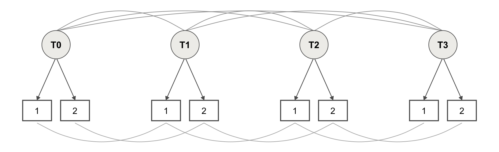
How does lavaan read it? The configural model of one group, as invariance_syntax() writes it:
lo_configural_model <- invariance_syntax(
"ListenOther", loadings = "free", intercepts = "free",
two_groups = FALSE)
cat(lo_configural_model)F_T0 =~ 1*ListenOther1_T0 +
1*ListenOther2_T0
F_T1 =~ 1*ListenOther1_T1 +
1*ListenOther2_T1
F_T2 =~ 1*ListenOther1_T2 +
1*ListenOther2_T2
F_T3 =~ 1*ListenOther1_T3 +
1*ListenOther2_T3
F_T0 ~ 0*1
F_T1 ~ 0*1
F_T2 ~ 0*1
F_T3 ~ 0*1
F_T0 ~~ F_T1
F_T0 ~~ F_T2
F_T0 ~~ F_T3
F_T1 ~~ F_T2
F_T1 ~~ F_T3
F_T2 ~~ F_T3
ListenOther1_T0 ~~ ListenOther1_T1
ListenOther1_T0 ~~ ListenOther1_T2
ListenOther1_T0 ~~ ListenOther1_T3
ListenOther1_T1 ~~ ListenOther1_T2
ListenOther1_T1 ~~ ListenOther1_T3
ListenOther1_T2 ~~ ListenOther1_T3
ListenOther2_T0 ~~ ListenOther2_T1
ListenOther2_T0 ~~ ListenOther2_T2
ListenOther2_T0 ~~ ListenOther2_T3
ListenOther2_T1 ~~ ListenOther2_T2
ListenOther2_T1 ~~ ListenOther2_T3
ListenOther2_T2 ~~ ListenOther2_T3Why do both items load 1? The same model, in all persons, with the second item loading half as much as the first, as much, and twice as much:
lo_ratio <- c(`0.5` = "0.5", `1` = "1", `2` = "2") |>
map(\(ratio) lo_configural_model |>
str_replace_all(fixed("1*ListenOther2"),
str_c(ratio, "*ListenOther2"))) |>
map(\(model) df_wide |>
cfa(model = model, data = _, estimator = "MLR", missing = "fiml"))
lo_ratio |>
map(\(fit) fitMeasures(fit, c("chisq", "df")) |> as.list() |> as_tibble()) |>
list_rbind(names_to = "loading_of_item_2") |>
mutate(chisq = round(chisq, 3))| loading_of_item_2 | chisq | df |
|---|---|---|
| 0.5 | 7.534 | 6 |
| 1 | 7.534 | 6 |
| 2 | 7.534 | 6 |
The fit is the same in all three, χ² = 7.534 with 6 degrees of freedom: the data carry no information on how the two loadings relate. Equal loadings are the only choice that is not arbitrary.
Next → Step 2, the configural model in all persons.
Step 2 · The configural model all persons
What is fitted? The model of Step 1, with loadings and intercepts free at every wave, in all persons together:
lo_all <- df_wide |>
cfa(model = lo_configural_model, data = _, estimator = "MLR",
missing = "fiml")Does it pass the checks? The eleven checks of 7.1, in their order:
lo_all_checks <- model_checks(lo_all, judge_fit = TRUE)
lo_all_checks| check | what | value | criterion | holds |
|---|---|---|---|---|
| 1 estimation | converged | yes | yes | ✓ |
| 2 variances | smallest residual variance: item 1 at T3 | .195 | above 0 | ✓ |
| 3 correlations | largest correlation: item 1, T2 with T3 | -1.007 | within ±1 | ✗ |
| 4 residuals | smallest eigenvalue of the residual covariances | -.072 | above 0 | ✗ |
| 5 factors | smallest eigenvalue of the factor covariances | 1.051 | above 0 | ✓ |
| 6 standard errors | estimated for every free parameter | yes | yes | ✓ |
| 7 fit | CFI | .998 | at least .90 | ✓ |
| 8 fit | RMSEA [90 % interval] | .024 [.000, .069] | reported | – |
| 9 fit | SRMR | .031 | reported | – |
| 10 strain | largest modification index: item 2 with item 1 at T2 | 4.6 | reported | – |
| 11 estimates | smallest standardized loading: item 2 at T3 | .72 | reported | – |
Check 3 (largest correlation: item 1, T2 with T3, -1.007) and check 4 (smallest eigenvalue of the residual covariances, -.072) fail: the solution is not possible, and as it stands the model tests nothing. Where is the problem? The estimate beyond its range, in red in the figure of the model, and with its standard error and interval:
plot_model("ListenOther", lo_all, flagged = lo_all_boundary$key)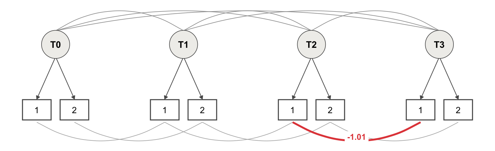
lo_all_boundary |>
select(-key) |>
mutate(across(where(is.double), \(x) round(x, 3)))| estimate | value | se | ci.lower | ci.upper |
|---|---|---|---|---|
| correlation: item 1, T2 with T3 | -1.007 | 0.904 | -2.779 | 0.766 |
Is it within sampling error? The estimate against the bound it crosses, with its 95 % interval:
plot_boundary(lo_all_boundary)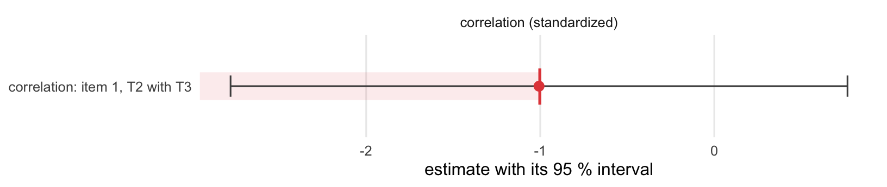
Its interval reaches back across the bound into the possible range: an estimate this close to its bound, resting on the persons who answered at both waves, is what sampling error produces (Kolenikov & Bollen, 2012). What does the stop rule do? Adjustment A, the mildest change: this one estimate is set at 0. In the syntax of the model, one line is added:
lo_all_zero <- "All: ListenOther1_T2 ~~ ListenOther1_T3"
lo_all_model <- invariance_syntax("ListenOther", "free", "free",
two_groups = FALSE, zero = lo_all_zero)
syntax_changes(lo_configural_model, lo_all_model)+ ListenOther1_T2 ~~ 0*ListenOther1_T3Does the adjusted model pass the checks? Fitted again; in the figure, the estimate set at 0 is green:
lo_all <- df_wide |>
cfa(model = lo_all_model, data = _, estimator = "MLR", missing = "fiml")
plot_model("ListenOther", lo_all, fixed = str_remove(lo_all_zero, "^All: "))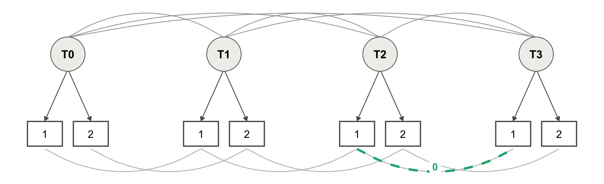
lo_all_checks <- model_checks(lo_all, judge_fit = TRUE)
lo_all_checks| check | what | value | criterion | holds |
|---|---|---|---|---|
| 1 estimation | converged | yes | yes | ✓ |
| 2 variances | smallest residual variance: item 1 at T3 | .363 | above 0 | ✓ |
| 3 correlations | largest correlation: the factors at T2 and T3 | .625 | within ±1 | ✓ |
| 4 residuals | smallest eigenvalue of the residual covariances | .292 | above 0 | ✓ |
| 5 factors | smallest eigenvalue of the factor covariances | 1.190 | above 0 | ✓ |
| 6 standard errors | estimated for every free parameter | yes | yes | ✓ |
| 7 fit | CFI | .993 | at least .90 | ✓ |
| 8 fit | RMSEA [90 % interval] | .042 [.000, .079] | reported | – |
| 9 fit | SRMR | .039 | reported | – |
| 10 strain | largest modification index: item 2 with item 1 at T2 | 6.8 | reported | – |
| 11 estimates | smallest standardized loading: item 2 at T3 | .73 | reported | – |
Now every check that decides holds: the solution is proper, and the model fits (CFI = .993, at least .90).
Are the estimates sensible? The standardized loading of every item at every wave, and the correlations of the factors:
loading_table(lo_all)| item | T0 | T1 | T2 | T3 |
|---|---|---|---|---|
| item 1 | 0.81 | 0.82 | 0.83 | 0.95 |
| item 2 | 0.77 | 0.78 | 0.76 | 0.73 |
factor_correlations(lo_all)| T0–T1 | T0–T2 | T0–T3 | T1–T2 | T1–T3 | T2–T3 |
|---|---|---|---|---|---|
| 0.48 | 0.49 | 0.46 | 0.58 | 0.53 | 0.63 |
Every item loads between .73 and .95, and the factors of neighbouring waves correlate between .48 and .63. Why are loadings and intercepts not tested here? The groups were trained at different waves, so a model of all persons would average a trained and an untrained group at the same wave (7.1). All persons show only whether one factor per wave describes the items; the tests over time follow in each group, and then across the groups.
Next → Steps 3 to 5, each group on its own: first the control group, then the experimental group.
Control group · Steps 3 to 5
The 252 persons of the control group, trained between September and December.
Step 3 · The checks control
What is fitted? The three models of this group: configural, with equal loadings over the waves (Step 4), and with equal intercepts as well (Step 5):
lo_con_models <- time_steps |>
pmap(\(level, loadings, intercepts) invariance_syntax(
"ListenOther", loadings, intercepts, two_groups = FALSE)) |>
set_names(time_steps$level)
lo_con_fits <- lo_con_models |>
map(\(model) control |>
cfa(model = model, data = _, estimator = "MLR", missing = "fiml"))Does the configural model pass the checks? The eleven checks of 7.1:
lo_con_checks <- model_checks(lo_con_fits$configural)
lo_con_checks| check | what | value | criterion | holds |
|---|---|---|---|---|
| 1 estimation | converged | yes | yes | ✓ |
| 2 variances | smallest residual variance: item 1 at T3 | .222 | above 0 | ✓ |
| 3 correlations | largest correlation: item 1, T2 with T3 | -1.351 | within ±1 | ✗ |
| 4 residuals | smallest eigenvalue of the residual covariances | -.201 | above 0 | ✗ |
| 5 factors | smallest eigenvalue of the factor covariances | 1.003 | above 0 | ✓ |
| 6 standard errors | estimated for every free parameter | yes | yes | ✓ |
| 7 fit | CFI | 1.000 | reported | – |
| 8 fit | RMSEA [90 % interval] | .000 [.000, .067] | reported | – |
| 9 fit | SRMR | .038 | reported | – |
| 10 strain | largest modification index: item 2 with item 1 at T2 | 7.5 | reported | – |
| 11 estimates | smallest standardized loading: item 2 at T3 | .73 | reported | – |
Check 3 (largest correlation: item 1, T2 with T3, -1.351) and check 4 (smallest eigenvalue of the residual covariances, -.201) fail: the solution is not possible. Its fit is reported (checks 7 to 9); whether one factor per wave describes the items was judged once, in all persons (Step 2). Are the other two models possible as well? Checks 1 to 6 of all three:
possible_table(lo_con_fits)| model | estimation | variances | correlations | residuals | factors | standard errors |
|---|---|---|---|---|---|---|
| configural | ✓ | ✓ | ✗ | ✗ | ✓ | ✓ |
| loadings over time | ✓ | ✓ | ✗ | ✗ | ✓ | ✓ |
| intercepts over time | ✓ | ✓ | ✗ | ✗ | ✓ | ✓ |
Not all are possible. Where is the problem? The estimates beyond their range in every model that is not possible, with their intervals; the figure shows them in the first of these models:
lo_con_boundary <- lo_con_fits |>
map(boundary_estimates) |>
list_rbind(names_to = "level")
lo_con_first <- lo_con_boundary$level[1]
lo_con_flagged <- lo_con_boundary |>
filter(level == lo_con_first) |>
pull(key)
plot_model("ListenOther", lo_con_fits[[lo_con_first]],
flagged = lo_con_flagged)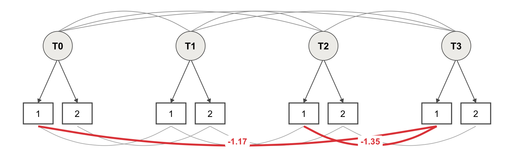
lo_con_boundary |>
select(-key) |>
mutate(across(where(is.double), \(x) round(x, 2)))| level | estimate | value | se | ci.lower | ci.upper |
|---|---|---|---|---|---|
| configural | correlation: item 1, T0 with T3 | -1.17 | 0.94 | -3.02 | 0.67 |
| configural | correlation: item 1, T2 with T3 | -1.35 | 1.24 | -3.79 | 1.09 |
| loadings over time | correlation: item 1, T0 with T3 | -1.17 | 0.94 | -3.02 | 0.67 |
| loadings over time | correlation: item 1, T2 with T3 | -1.35 | 1.24 | -3.79 | 1.09 |
| intercepts over time | correlation: item 1, T0 with T3 | -1.20 | 0.95 | -3.07 | 0.66 |
| intercepts over time | correlation: item 1, T2 with T3 | -1.38 | 1.24 | -3.80 | 1.05 |
Is it within sampling error? Each estimate against the bound it crosses, with its 95 % interval, in every model where it occurs:
lo_con_boundary |>
mutate(estimate = str_c(estimate, " (", level, ")")) |>
plot_boundary()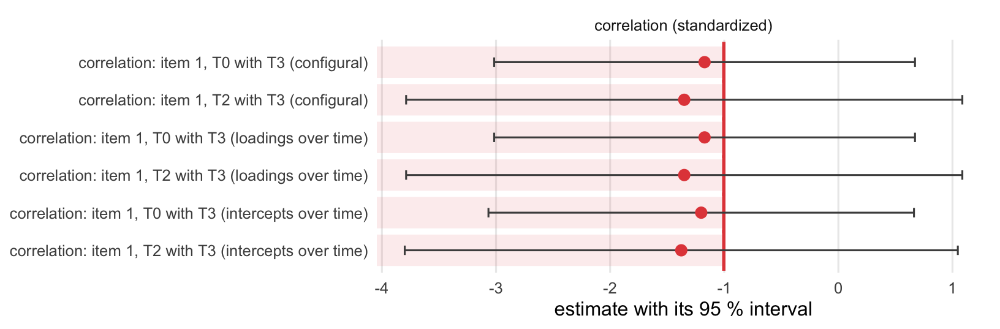
Every interval reaches back across its bound into the possible range: what sampling error produces near a bound, in a group whose waves rest on a hundred to two hundred persons each (Kolenikov & Bollen, 2012). What does the stop rule do? Adjustment A: these estimates at 0 (a negative variance together with the links of its residual to the other waves). In the syntax of each of the three models, these lines are added (shown for the configural model):
lo_con_specified <- lo_con_models$configural
lo_con_zero <- c(
"Control: ListenOther1_T0 ~~ ListenOther1_T3",
"Control: ListenOther1_T2 ~~ ListenOther1_T3")
lo_con_models <- time_steps |>
pmap(\(level, loadings, intercepts) invariance_syntax(
"ListenOther", loadings, intercepts, two_groups = FALSE,
zero = lo_con_zero)) |>
set_names(time_steps$level)
lo_con_fits <- lo_con_models |>
map(\(model) control |>
cfa(model = model, data = _, estimator = "MLR", missing = "fiml"))
syntax_changes(lo_con_specified, lo_con_models$configural)+ ListenOther1_T0 ~~ 0*ListenOther1_T3
+ ListenOther1_T2 ~~ 0*ListenOther1_T3Are the adjusted models possible? In the figure of the model that failed first, the estimates set at 0 are green; then checks 1 to 6 of all three:
plot_model("ListenOther", lo_con_fits[[lo_con_first]],
fixed = str_remove(lo_con_zero, "^[A-Za-z]+: "))
possible_table(lo_con_fits)| model | estimation | variances | correlations | residuals | factors | standard errors |
|---|---|---|---|---|---|---|
| configural | ✓ | ✓ | ✓ | ✓ | ✓ | ✓ |
| loadings over time | ✓ | ✓ | ✓ | ✓ | ✓ | ✓ |
| intercepts over time | ✓ | ✓ | ✓ | ✓ | ✓ | ✓ |
All three are possible now; the steps go on with adjustment A.
Next → Step 4, the loadings over time in this group, with adjustment A.
Step 4 · Loadings over time control
Do the loadings stay the same? With two items both load 1 at every wave: the model is the configural one.
identical(lo_con_models$`loadings over time`,
lo_con_models$configural)[1] TRUENext → Step 5, the intercepts over time.
Step 5 · Intercepts over time control
Do the intercepts stay the same? Each item keeps one intercept over the four waves; the latent means are freed:
lo_con_steps <- step_table(lo_con_fits)
show_steps(lo_con_steps, "intercepts over time")| level | df | CFI | ΔCFI | ΔRMSEA | ΔSRMR | p |
|---|---|---|---|---|---|---|
| intercepts over time | 11 | 0.985 | -0.006 | 0.004 | 0.003 | 0.142 |
They do under Chen’s cutoffs (ΔCFI = -.006), though not under those of the small-sample reading, and the χ² test does not reject them (p = .142).
Next → Steps 3 to 5 in the experimental group.
Experimental group · Steps 3 to 5
The 199 persons of the experimental group, trained between January and March.
Step 3 · The checks experimental
What is fitted? The three models of this group: configural, with equal loadings over the waves (Step 4), and with equal intercepts as well (Step 5):
lo_exp_models <- time_steps |>
pmap(\(level, loadings, intercepts) invariance_syntax(
"ListenOther", loadings, intercepts, two_groups = FALSE)) |>
set_names(time_steps$level)
lo_exp_fits <- lo_exp_models |>
map(\(model) experimental |>
cfa(model = model, data = _, estimator = "MLR", missing = "fiml"))Does the configural model pass the checks? The eleven checks of 7.1:
lo_exp_checks <- model_checks(lo_exp_fits$configural)
lo_exp_checks| check | what | value | criterion | holds |
|---|---|---|---|---|
| 1 estimation | converged | yes | yes | ✓ |
| 2 variances | smallest residual variance: item 1 at T3 | .309 | above 0 | ✓ |
| 3 correlations | largest correlation: the factors at T2 and T3 | .762 | within ±1 | ✓ |
| 4 residuals | smallest eigenvalue of the residual covariances | .134 | above 0 | ✓ |
| 5 factors | smallest eigenvalue of the factor covariances | .524 | above 0 | ✓ |
| 6 standard errors | estimated for every free parameter | yes | yes | ✓ |
| 7 fit | CFI | .996 | reported | – |
| 8 fit | RMSEA [90 % interval] | .033 [.000, .102] | reported | – |
| 9 fit | SRMR | .038 | reported | – |
| 10 strain | largest modification index: item 2 with item 1 at T2 | 3.2 | reported | – |
| 11 estimates | smallest standardized loading: item 2 at T3 | .69 | reported | – |
Checks 1 to 6 hold: the solution is proper. Its fit is reported (checks 7 to 9); whether one factor per wave describes the items was judged once, in all persons (Step 2). Are the other two models possible as well? Checks 1 to 6 of all three:
possible_table(lo_exp_fits)| model | estimation | variances | correlations | residuals | factors | standard errors |
|---|---|---|---|---|---|---|
| configural | ✓ | ✓ | ✓ | ✓ | ✓ | ✓ |
| loadings over time | ✓ | ✓ | ✓ | ✓ | ✓ | ✓ |
| intercepts over time | ✓ | ✓ | ✓ | ✓ | ✓ | ✓ |
All three are possible as specified.
Next → Step 4, the loadings over time in this group.
Step 4 · Loadings over time experimental
Do the loadings stay the same? With two items both load 1 at every wave: the model is the configural one.
identical(lo_exp_models$`loadings over time`,
lo_exp_models$configural)[1] TRUENext → Step 5, the intercepts over time.
Step 5 · Intercepts over time experimental
Do the intercepts stay the same? Each item keeps one intercept over the four waves; the latent means are freed:
lo_exp_steps <- step_table(lo_exp_fits)
show_steps(lo_exp_steps, "intercepts over time")| level | df | CFI | ΔCFI | ΔRMSEA | ΔSRMR | p |
|---|---|---|---|---|---|---|
| intercepts over time | 9 | 1 | 0.004 | -0.033 | 0.001 | 0.654 |
They do, under both sets of cutoffs (ΔCFI = .004), and the χ² test does not reject them (p = .654).
Next → Step 6, both groups together, each with what it needed.
Both groups · Steps 6 to 8
Both groups together, with what each group needed.
Step 6 · Do the groups add misfit? both groups
How well does the configural model fit in the two groups, and in random halves of the persons?
lo_zero <- lo_con_zero # the experimental group needs none
lo_both_models <- group_steps |>
pmap(\(level, loadings, intercepts) invariance_syntax(
"ListenOther", loadings, intercepts, zero = lo_zero)) |>
set_names(group_steps$level)
lo_both_fits <- lo_both_models |>
map(\(model) df_wide |>
cfa(model = model, data = _, group = "condition",
estimator = "MLR", missing = "fiml"))
lo_halves <- c(`random halves 1` = 1, `random halves 2` = 2,
`random halves 3` = 3) |>
map(\(seed) {
set.seed(seed)
df_wide |>
mutate(condition = sample(condition)) |>
cfa(model = lo_both_models$configural, data = _, group = "condition",
estimator = "MLR", missing = "fiml")
})
lo_fit_table <- c(list(`two groups` = lo_both_fits$configural),
lo_halves) |>
map(fit_row) |>
list_rbind(names_to = "model")
lo_fit_table |>
mutate(across(where(is.double), \(x) round(x, 3)))| model | chisq | df | CFI | RMSEA | SRMR |
|---|---|---|---|---|---|
| two groups | 19.669 | 14 | 0.993 | 0.044 | 0.049 |
| random halves 1 | 14.138 | 14 | 1.000 | 0.000 | 0.039 |
| random halves 2 | 27.911 | 14 | 0.985 | 0.065 | 0.055 |
| random halves 3 | 17.401 | 14 | 0.998 | 0.023 | 0.052 |
Are all four models of both groups possible? Checks 1 to 6 of each:
possible_table(lo_both_fits)| model | estimation | variances | correlations | residuals | factors | standard errors |
|---|---|---|---|---|---|---|
| configural | ✓ | ✓ | ✓ | ✓ | ✓ | ✓ |
| over time | ✓ | ✓ | ✓ | ✓ | ✓ | ✓ |
| loadings across groups | ✓ | ✓ | ✓ | ✓ | ✓ | ✓ |
| intercepts across groups | ✓ | ✓ | ✓ | ✓ | ✓ | ✓ |
All four models of both groups are possible, and the configural model fits closely in the two groups (CFI = .993) as in the random halves.
Next → Step 7, the loadings across the groups.
Step 7 · Loadings across the groups both groups
Are the loadings the same in both groups? With two items they are 1 in both, by construction:
identical(lo_both_models$`loadings across groups`,
lo_both_models$`over time`)[1] TRUENext → Step 8, the intercepts across the groups, with the loadings held equal.
Step 8 · Intercepts across the groups both groups
Are the intercepts the same in both groups? Each item keeps one intercept, in every cell:
lo_both_steps <- step_table(lo_both_fits[-1])
show_steps(lo_both_steps, "intercepts across groups")| level | df | CFI | ΔCFI | ΔRMSEA | ΔSRMR | p |
|---|---|---|---|---|---|---|
| intercepts across groups | 21 | 0.992 | 0.001 | -0.004 | 0 | 0.987 |
They are, under both sets of cutoffs (ΔCFI = .001), and the χ² test does not reject them (p = .987).
Where do the latent means lie? In the final model, on the 0 to 10 scale of the items:
plot_latent_means(lo_both_fits$`intercepts across groups`)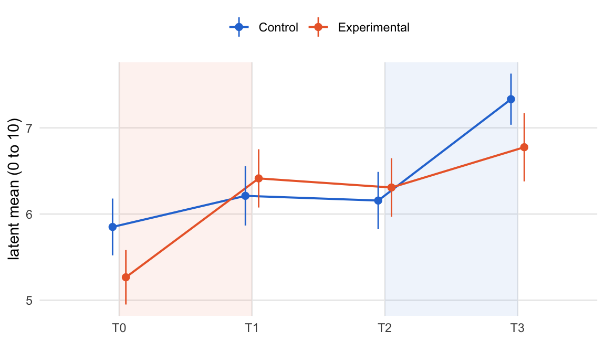
Next → Step 9, the verdict over all steps.
The verdict · Steps 9 to 12
Step 9 · The verdict
Which steps hold, under both sets of cutoffs? All steps of the construct, in all persons, in each group, and across the groups:
lo_verdict <- bind_rows(
`all persons` = fit_row(lo_all) |> mutate(level = "configural"),
control = lo_con_steps |> filter(level != "configural"),
experimental = lo_exp_steps |> filter(level != "configural"),
`both groups` = lo_both_steps |> filter(level != "over time"),
.id = "part") |>
mutate(Chen = if_else(level == "configural", fits_configural(CFI),
holds_chen(delta_CFI, delta_RMSEA)),
small_sample = if_else(level == "configural", Chen,
holds_small(level, delta_CFI, delta_RMSEA,
delta_SRMR)))
lo_verdict |>
transmute(part, level, ΔCFI = delta_CFI, ΔRMSEA = delta_RMSEA,
ΔSRMR = delta_SRMR, p, Chen = mark(Chen),
`small n` = mark(small_sample)) |>
mutate(across(where(is.double), \(x) round(x, 3)))| part | level | ΔCFI | ΔRMSEA | ΔSRMR | p | Chen | small n |
|---|---|---|---|---|---|---|---|
| all persons | configural | ✓ | ✓ | ||||
| control | loadings over time | 0.000 | 0.000 | 0.000 | ✓ | ✓ | |
| control | intercepts over time | -0.006 | 0.004 | 0.003 | 0.142 | ✓ | ✗ |
| experimental | loadings over time | 0.000 | 0.000 | 0.000 | ✓ | ✓ | |
| experimental | intercepts over time | 0.004 | -0.033 | 0.001 | 0.654 | ✓ | ✓ |
| both groups | loadings across groups | 0.000 | 0.000 | 0.000 | ✓ | ✓ | |
| both groups | intercepts across groups | 0.001 | -0.004 | 0.000 | 0.987 | ✓ | ✓ |
Under Chen’s cutoffs every step holds: the measurement of Others Listen to Me is the same at all four waves, in each group and across the groups. The small-sample reading would stop at one step: the intercepts over time in the control group.
Step 10 · Partial invariance
Is it needed? No: under Chen’s cutoffs every step holds.
Step 11 · Alignment
How far are the eight cells from invariance when nothing is held equal? The share of loadings and intercepts (in %) more than .10 item standard deviations from their common aligned value:
lo_input <- alignment_input(lo_both_fits$configural,
model_items$ListenOther)
lo_aligned <- invariance.alignment(lambda = lo_input$lambda,
nu = lo_input$nu, wgt = lo_input$weights)
lo_tolerance <- invariance_alignment_constraints(
lo_aligned, lambda_parm_tol = .10, nu_parm_tol = .10)
tibble(loadings = lo_tolerance$lambda_list$prop_noninvariance,
intercepts = lo_tolerance$nu_list$prop_noninvariance) |>
mutate(across(everything(), \(x) round(x, 1)))| loadings | intercepts |
|---|---|
| 0 | 0 |
Does it move the latent means? The latent mean of each cell as a distance from the control group in January, in its standard deviations, from the final model and aligned:
lo_final <- lo_both_fits$`intercepts across groups`
lo_sd_T0 <- sqrt(lavInspect(lo_final, "cov.lv")$Control["F_T0", "F_T0"])
lo_alignment_means <- parameterEstimates(lo_final) |>
filter(op == "~1", str_starts(lhs, "F_")) |>
transmute(cell = str_c(lavInspect(lo_final, "group.label")[group],
" ", str_remove(lhs, "^F_")),
final = (est - first(est)) / lo_sd_T0,
aligned = lo_aligned$pars$alpha0,
difference = aligned - final)
lo_alignment_means |>
mutate(across(where(is.double), \(x) round(x, 3)))| cell | final | aligned | difference |
|---|---|---|---|
| Control T0 | 0.000 | 0.000 | 0.000 |
| Control T1 | 0.181 | 0.150 | -0.030 |
| Control T2 | 0.153 | 0.175 | 0.022 |
| Control T3 | 0.742 | 0.744 | 0.002 |
| Experimental T0 | -0.292 | -0.292 | 0.000 |
| Experimental T1 | 0.282 | 0.270 | -0.012 |
| Experimental T2 | 0.229 | 0.226 | -0.003 |
| Experimental T3 | 0.463 | 0.454 | -0.009 |
With both loadings at 1 only the intercepts count, and 0 % of them lie more than .10 item standard deviations from their common value (below the 25 % up to which aligned means are trusted). The aligned means lie at most .030 standard deviations from those of the final model.
Step 12 · What follows
Which model goes on?
lo_status <- tibble(construct = "ListenOther",
status = "adjusted (A)",
set_to_0 = list(lo_zero),
freed = list(character()),
autocorrelations = list("free"),
chapter_11 = all(lo_verdict$Chen))
show_status(lo_status)| entry | value |
|---|---|
| construct | ListenOther |
| status | adjusted (A) |
| set_to_0 | Control: ListenOther1_T0 ~~ ListenOther1_T3; Control: ListenOther1_T2 ~~ ListenOther1_T3 |
| freed | |
| autocorrelations | free |
| chapter_11 | TRUE |
Others Listen to Me enters the latent comparisons of Chapter 11 with adjustment A: its measurement is the same over the four waves and in both groups.
I Listen
Its path through the steps. One row per step below, judged under Chen’s cutoffs; the label marks the data of each step:
| Step | Data | Question | Result | Next |
|---|---|---|---|---|
| 2 | all persons | Configural model possible and fitting? | yes | each group |
| 3 | control | Its three models possible? | yes, after adjustment A | over time |
| 4 | control | Loadings the same over the waves? | both load 1 (two items) | intercepts |
| 5 | control | Intercepts the same over the waves? | yes | experimental group |
| 3 | experimental | Its three models possible? | yes | over time |
| 4 | experimental | Loadings the same over the waves? | both load 1 (two items) | intercepts |
| 5 | experimental | Intercepts the same over the waves? | no; with two items no item can be freed | stop |
| 9–12 | Verdict | stops | – |
All persons · Steps 1 and 2
Step 1 · The model
What does the model look like? Both items of Chapter 6 at each wave, each loading 1, the residual of each item linked to itself across the waves. In the figure, the circles are the factors of the four waves, the boxes the items by number, the arrows the loadings. The arcs above link the factors; those below link each item with itself at the next wave. The links between waves further apart belong to the model as well and are left out of the figure:
plot_model("ListenSelf")
How does lavaan read it? The configural model of one group, as invariance_syntax() writes it:
ls_configural_model <- invariance_syntax(
"ListenSelf", loadings = "free", intercepts = "free",
two_groups = FALSE)
cat(ls_configural_model)F_T0 =~ 1*ListenSelf1_T0 +
1*ListenSelf2_T0
F_T1 =~ 1*ListenSelf1_T1 +
1*ListenSelf2_T1
F_T2 =~ 1*ListenSelf1_T2 +
1*ListenSelf2_T2
F_T3 =~ 1*ListenSelf1_T3 +
1*ListenSelf2_T3
F_T0 ~ 0*1
F_T1 ~ 0*1
F_T2 ~ 0*1
F_T3 ~ 0*1
F_T0 ~~ F_T1
F_T0 ~~ F_T2
F_T0 ~~ F_T3
F_T1 ~~ F_T2
F_T1 ~~ F_T3
F_T2 ~~ F_T3
ListenSelf1_T0 ~~ ListenSelf1_T1
ListenSelf1_T0 ~~ ListenSelf1_T2
ListenSelf1_T0 ~~ ListenSelf1_T3
ListenSelf1_T1 ~~ ListenSelf1_T2
ListenSelf1_T1 ~~ ListenSelf1_T3
ListenSelf1_T2 ~~ ListenSelf1_T3
ListenSelf2_T0 ~~ ListenSelf2_T1
ListenSelf2_T0 ~~ ListenSelf2_T2
ListenSelf2_T0 ~~ ListenSelf2_T3
ListenSelf2_T1 ~~ ListenSelf2_T2
ListenSelf2_T1 ~~ ListenSelf2_T3
ListenSelf2_T2 ~~ ListenSelf2_T3Both items load 1 for the reason Others Listen to Me shows (Step 1).
Next → Step 2, the configural model in all persons.
Step 2 · The configural model all persons
What is fitted? The model of Step 1, with loadings and intercepts free at every wave, in all persons together:
ls_all <- df_wide |>
cfa(model = ls_configural_model, data = _, estimator = "MLR",
missing = "fiml")Does it pass the checks? The eleven checks of 7.1, in their order:
ls_all_checks <- model_checks(ls_all, judge_fit = TRUE)
ls_all_checks| check | what | value | criterion | holds |
|---|---|---|---|---|
| 1 estimation | converged | yes | yes | ✓ |
| 2 variances | smallest residual variance: item 1 at T2 | .181 | above 0 | ✓ |
| 3 correlations | largest correlation: the factors at T1 and T2 | .709 | within ±1 | ✓ |
| 4 residuals | smallest eigenvalue of the residual covariances | .110 | above 0 | ✓ |
| 5 factors | smallest eigenvalue of the factor covariances | .678 | above 0 | ✓ |
| 6 standard errors | estimated for every free parameter | yes | yes | ✓ |
| 7 fit | CFI | 1.000 | at least .90 | ✓ |
| 8 fit | RMSEA [90 % interval] | .000 [.000, .060] | reported | – |
| 9 fit | SRMR | .022 | reported | – |
| 10 strain | largest modification index: item 2 at T1 on the factor at T2 | 3.7 | reported | – |
| 11 estimates | smallest standardized loading: item 2 at T2 | .61 | reported | – |
Every check that decides holds: the estimation converged, the solution is proper (checks 1 to 6), and the model fits (CFI = 1.000, at least .90). Checks 8 to 11 are reported; Step 6 returns to the fit, and Steps 4, 5, 7 and 8 to the loadings.
Are the estimates sensible? The standardized loading of every item at every wave, and the correlations of the factors:
loading_table(ls_all)| item | T0 | T1 | T2 | T3 |
|---|---|---|---|---|
| item 1 | 0.85 | 0.87 | 0.96 | 0.94 |
| item 2 | 0.62 | 0.70 | 0.61 | 0.65 |
factor_correlations(ls_all)| T0–T1 | T0–T2 | T0–T3 | T1–T2 | T1–T3 | T2–T3 |
|---|---|---|---|---|---|
| 0.55 | 0.51 | 0.52 | 0.71 | 0.45 | 0.49 |
Every item loads between .61 and .96, and the factors of neighbouring waves correlate between .49 and .71. Why are loadings and intercepts not tested here? The groups were trained at different waves, so a model of all persons would average a trained and an untrained group at the same wave (7.1). All persons show only whether one factor per wave describes the items; the tests over time follow in each group, and then across the groups.
Next → Steps 3 to 5, each group on its own: first the control group, then the experimental group.
Control group · Steps 3 to 5
The 252 persons of the control group, trained between September and December.
Step 3 · The checks control
What is fitted? The three models of this group: configural, with equal loadings over the waves (Step 4), and with equal intercepts as well (Step 5):
ls_con_models <- time_steps |>
pmap(\(level, loadings, intercepts) invariance_syntax(
"ListenSelf", loadings, intercepts, two_groups = FALSE)) |>
set_names(time_steps$level)
ls_con_fits <- ls_con_models |>
map(\(model) control |>
cfa(model = model, data = _, estimator = "MLR", missing = "fiml"))Does the configural model pass the checks? The eleven checks of 7.1:
ls_con_checks <- model_checks(ls_con_fits$configural)
ls_con_checks| check | what | value | criterion | holds |
|---|---|---|---|---|
| 1 estimation | converged | yes | yes | ✓ |
| 2 variances | smallest residual variance: item 1 at T3 | .007 | above 0 | ✓ |
| 3 correlations | largest correlation: item 1, T2 with T3 | -4.480 | within ±1 | ✗ |
| 4 residuals | smallest eigenvalue of the residual covariances | -.311 | above 0 | ✗ |
| 5 factors | smallest eigenvalue of the factor covariances | .290 | above 0 | ✓ |
| 6 standard errors | estimated for every free parameter | yes | yes | ✓ |
| 7 fit | CFI | .981 | reported | – |
| 8 fit | RMSEA [90 % interval] | .078 [.030, .128] | reported | – |
| 9 fit | SRMR | .049 | reported | – |
| 10 strain | largest modification index: item 1 at T1 on the factor at T2 | 17.1 | reported | – |
| 11 estimates | smallest standardized loading: item 2 at T2 | .59 | reported | – |
Check 3 (largest correlation: item 1, T2 with T3, -4.480) and check 4 (smallest eigenvalue of the residual covariances, -.311) fail: the solution is not possible. Its fit is reported (checks 7 to 9); whether one factor per wave describes the items was judged once, in all persons (Step 2). Are the other two models possible as well? Checks 1 to 6 of all three:
possible_table(ls_con_fits)| model | estimation | variances | correlations | residuals | factors | standard errors |
|---|---|---|---|---|---|---|
| configural | ✓ | ✓ | ✗ | ✗ | ✓ | ✓ |
| loadings over time | ✓ | ✓ | ✗ | ✗ | ✓ | ✓ |
| intercepts over time | ✓ | ✓ | ✗ | ✗ | ✓ | ✓ |
Not all are possible. Where is the problem? The estimates beyond their range in every model that is not possible, with their intervals; the figure shows them in the first of these models:
ls_con_boundary <- ls_con_fits |>
map(boundary_estimates) |>
list_rbind(names_to = "level")
ls_con_first <- ls_con_boundary$level[1]
ls_con_flagged <- ls_con_boundary |>
filter(level == ls_con_first) |>
pull(key)
plot_model("ListenSelf", ls_con_fits[[ls_con_first]],
flagged = ls_con_flagged)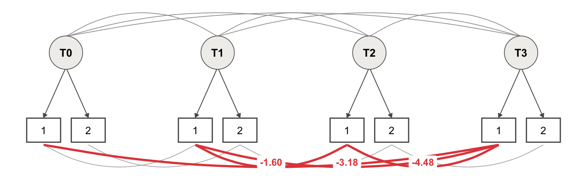
ls_con_boundary |>
select(-key) |>
mutate(across(where(is.double), \(x) round(x, 2)))| level | estimate | value | se | ci.lower | ci.upper |
|---|---|---|---|---|---|
| configural | correlation: item 1, T0 with T3 | -1.44 | 11.53 | -24.04 | 21.16 |
| configural | correlation: item 1, T1 with T2 | -1.60 | 2.60 | -6.69 | 3.50 |
| configural | correlation: item 1, T1 with T3 | -3.18 | 24.06 | -50.33 | 43.98 |
| configural | correlation: item 1, T2 with T3 | -4.48 | 37.43 | -77.85 | 68.89 |
| loadings over time | correlation: item 1, T0 with T3 | -1.44 | 11.53 | -24.04 | 21.16 |
| loadings over time | correlation: item 1, T1 with T2 | -1.60 | 2.60 | -6.69 | 3.50 |
| loadings over time | correlation: item 1, T1 with T3 | -3.18 | 24.06 | -50.33 | 43.98 |
| loadings over time | correlation: item 1, T2 with T3 | -4.48 | 37.43 | -77.85 | 68.89 |
| intercepts over time | correlation: item 1, T0 with T3 | -2.23 | 32.93 | -66.78 | 62.32 |
| intercepts over time | correlation: item 1, T1 with T2 | -1.60 | 2.48 | -6.45 | 3.25 |
| intercepts over time | correlation: item 1, T1 with T3 | -4.36 | 62.98 | -127.79 | 119.07 |
| intercepts over time | correlation: item 1, T2 with T3 | -6.46 | 97.15 | -196.87 | 183.96 |
Is it within sampling error? Each estimate against the bound it crosses, with its 95 % interval, in every model where it occurs:
ls_con_boundary |>
mutate(estimate = str_c(estimate, " (", level, ")")) |>
plot_boundary()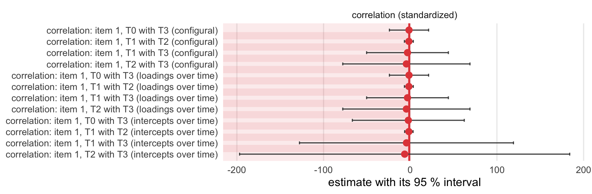
Every interval reaches back across its bound into the possible range: what sampling error produces near a bound, in a group whose waves rest on a hundred to two hundred persons each (Kolenikov & Bollen, 2012). What does the stop rule do? Adjustment A: these estimates at 0 (a negative variance together with the links of its residual to the other waves). In the syntax of each of the three models, these lines are added (shown for the configural model):
ls_con_specified <- ls_con_models$configural
ls_con_zero <- c(
"Control: ListenSelf1_T0 ~~ ListenSelf1_T3",
"Control: ListenSelf1_T1 ~~ ListenSelf1_T2",
"Control: ListenSelf1_T1 ~~ ListenSelf1_T3",
"Control: ListenSelf1_T2 ~~ ListenSelf1_T3")
ls_con_models <- time_steps |>
pmap(\(level, loadings, intercepts) invariance_syntax(
"ListenSelf", loadings, intercepts, two_groups = FALSE,
zero = ls_con_zero)) |>
set_names(time_steps$level)
ls_con_fits <- ls_con_models |>
map(\(model) control |>
cfa(model = model, data = _, estimator = "MLR", missing = "fiml"))
syntax_changes(ls_con_specified, ls_con_models$configural)+ ListenSelf1_T0 ~~ 0*ListenSelf1_T3
+ ListenSelf1_T1 ~~ 0*ListenSelf1_T2
+ ListenSelf1_T1 ~~ 0*ListenSelf1_T3
+ ListenSelf1_T2 ~~ 0*ListenSelf1_T3Are the adjusted models possible? In the figure of the model that failed first, the estimates set at 0 are green; then checks 1 to 6 of all three:
plot_model("ListenSelf", ls_con_fits[[ls_con_first]],
fixed = str_remove(ls_con_zero, "^[A-Za-z]+: "))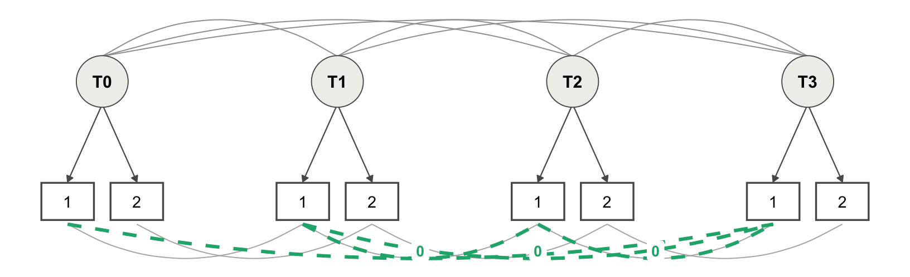
possible_table(ls_con_fits)| model | estimation | variances | correlations | residuals | factors | standard errors |
|---|---|---|---|---|---|---|
| configural | ✓ | ✓ | ✓ | ✓ | ✓ | ✓ |
| loadings over time | ✓ | ✓ | ✓ | ✓ | ✓ | ✓ |
| intercepts over time | ✓ | ✓ | ✓ | ✓ | ✓ | ✓ |
All three are possible now; the steps go on with adjustment A.
Next → Step 4, the loadings over time in this group, with adjustment A.
Step 4 · Loadings over time control
Do the loadings stay the same? With two items both load 1 at every wave: the model is the configural one.
identical(ls_con_models$`loadings over time`,
ls_con_models$configural)[1] TRUENext → Step 5, the intercepts over time.
Step 5 · Intercepts over time control
Do the intercepts stay the same? Each item keeps one intercept over the four waves; the latent means are freed:
ls_con_steps <- step_table(ls_con_fits)
show_steps(ls_con_steps, "intercepts over time")| level | df | CFI | ΔCFI | ΔRMSEA | ΔSRMR | p |
|---|---|---|---|---|---|---|
| intercepts over time | 13 | 0.972 | -0.009 | 0.005 | 0.005 | 0.091 |
They do under Chen’s cutoffs (ΔCFI = -.009), though not under those of the small-sample reading, and the χ² test does not reject them (p = .091).
Next → Steps 3 to 5 in the experimental group.
Experimental group · Steps 3 to 5
The 199 persons of the experimental group, trained between January and March.
Step 3 · The checks experimental
What is fitted? The three models of this group: configural, with equal loadings over the waves (Step 4), and with equal intercepts as well (Step 5):
ls_exp_models <- time_steps |>
pmap(\(level, loadings, intercepts) invariance_syntax(
"ListenSelf", loadings, intercepts, two_groups = FALSE)) |>
set_names(time_steps$level)
ls_exp_fits <- ls_exp_models |>
map(\(model) experimental |>
cfa(model = model, data = _, estimator = "MLR", missing = "fiml"))Does the configural model pass the checks? The eleven checks of 7.1:
ls_exp_checks <- model_checks(ls_exp_fits$configural)
ls_exp_checks| check | what | value | criterion | holds |
|---|---|---|---|---|
| 1 estimation | converged | yes | yes | ✓ |
| 2 variances | smallest residual variance: item 1 at T2 | .157 | above 0 | ✓ |
| 3 correlations | largest correlation: item 1, T0 with T2 | .714 | within ±1 | ✓ |
| 4 residuals | smallest eigenvalue of the residual covariances | .059 | above 0 | ✓ |
| 5 factors | smallest eigenvalue of the factor covariances | .705 | above 0 | ✓ |
| 6 standard errors | estimated for every free parameter | yes | yes | ✓ |
| 7 fit | CFI | 1.000 | reported | – |
| 8 fit | RMSEA [90 % interval] | .000 [.000, .000] | reported | – |
| 9 fit | SRMR | .017 | reported | – |
| 10 strain | largest modification index: item 2 with item 1 at T0 | 0.6 | reported | – |
| 11 estimates | smallest standardized loading: item 2 at T0 | .58 | reported | – |
Checks 1 to 6 hold: the solution is proper. Its fit is reported (checks 7 to 9); whether one factor per wave describes the items was judged once, in all persons (Step 2). Are the other two models possible as well? Checks 1 to 6 of all three:
possible_table(ls_exp_fits)| model | estimation | variances | correlations | residuals | factors | standard errors |
|---|---|---|---|---|---|---|
| configural | ✓ | ✓ | ✓ | ✓ | ✓ | ✓ |
| loadings over time | ✓ | ✓ | ✓ | ✓ | ✓ | ✓ |
| intercepts over time | ✓ | ✓ | ✓ | ✓ | ✓ | ✓ |
All three are possible as specified.
Next → Step 4, the loadings over time in this group.
Step 4 · Loadings over time experimental
Do the loadings stay the same? With two items both load 1 at every wave: the model is the configural one.
identical(ls_exp_models$`loadings over time`,
ls_exp_models$configural)[1] TRUENext → Step 5, the intercepts over time.
Step 5 · Intercepts over time experimental
Do the intercepts stay the same? Each item keeps one intercept over the four waves; the latent means are freed:
ls_exp_steps <- step_table(ls_exp_fits)
show_steps(ls_exp_steps, "intercepts over time")| level | df | CFI | ΔCFI | ΔRMSEA | ΔSRMR | p |
|---|---|---|---|---|---|---|
| intercepts over time | 9 | 0.987 | -0.013 | 0.044 | 0.014 | 0.004 |
They do not: the step lies beyond Chen’s cutoffs (ΔCFI = -.013, ΔRMSEA = .044); the χ² test, which detects small differences, rejects them (p = .004).
Can partial invariance help? Not with two items: freeing the intercepts of either would leave a single item with equal intercepts, too few to compare latent means (7.1). I Listen stops here.
Next → no step across the groups; Steps 9 to 12 record why the construct stops.
The verdict · Steps 9 to 12
Step 9 · The verdict
Which steps hold, under both sets of cutoffs? The steps taken before the construct stopped:
ls_verdict <- bind_rows(
`all persons` = fit_row(ls_all) |> mutate(level = "configural"),
control = ls_con_steps |> filter(level != "configural"),
experimental = ls_exp_steps |> filter(level != "configural"),
.id = "part") |>
mutate(Chen = if_else(level == "configural", fits_configural(CFI),
holds_chen(delta_CFI, delta_RMSEA)),
small_sample = if_else(level == "configural", Chen,
holds_small(level, delta_CFI, delta_RMSEA,
delta_SRMR)))
ls_verdict |>
transmute(part, level, ΔCFI = delta_CFI, ΔRMSEA = delta_RMSEA,
ΔSRMR = delta_SRMR, p, Chen = mark(Chen),
`small n` = mark(small_sample)) |>
mutate(across(where(is.double), \(x) round(x, 3)))| part | level | ΔCFI | ΔRMSEA | ΔSRMR | p | Chen | small n |
|---|---|---|---|---|---|---|---|
| all persons | configural | ✓ | ✓ | ||||
| control | loadings over time | 0.000 | 0.000 | 0.000 | ✓ | ✓ | |
| control | intercepts over time | -0.009 | 0.005 | 0.005 | 0.091 | ✓ | ✗ |
| experimental | loadings over time | 0.000 | 0.000 | 0.000 | ✓ | ✓ | |
| experimental | intercepts over time | -0.013 | 0.044 | 0.014 | 0.004 | ✗ | ✗ |
One step fails under Chen’s cutoffs, the intercepts over time in the experimental group, and with two items no partial model can take its place: the latent means of I Listen are not comparable over the waves in that group, and the construct stops.
Step 10 · Partial invariance
Is it possible? No: with two items, freeing the intercepts of one leaves a single item with equal intercepts (7.1).
Step 11 · Alignment
How far are the eight cells from invariance when nothing is held equal? The configural model of both groups, aligned over the eight cells:
ls_zero <- ls_con_zero # the experimental group needs none
ls_both_fits <- list(configural = df_wide |>
cfa(model = invariance_syntax("ListenSelf", "free", "free", zero = ls_zero),
data = _, group = "condition", estimator = "MLR", missing = "fiml"))
ls_input <- alignment_input(ls_both_fits$configural,
model_items$ListenSelf)
ls_aligned <- invariance.alignment(lambda = ls_input$lambda,
nu = ls_input$nu, wgt = ls_input$weights)
ls_tolerance <- invariance_alignment_constraints(
ls_aligned, lambda_parm_tol = .10, nu_parm_tol = .10)
tibble(loadings = ls_tolerance$lambda_list$prop_noninvariance,
intercepts = ls_tolerance$nu_list$prop_noninvariance) |>
mutate(across(everything(), \(x) round(x, 1)))| loadings | intercepts |
|---|---|
| 0 | 12.5 |
With both loadings at 1 only the intercepts count: 12.5 % of them lie more than .10 item standard deviations from their common value (below the 25 % up to which aligned means are trusted). Alignment describes how far the cells lie apart; it does not replace the failed step.
Step 12 · What follows
Which model goes on?
ls_status <- tibble(construct = "ListenSelf",
status = "stopped (intercepts over time, experimental)",
set_to_0 = list(ls_zero),
freed = list(character()),
autocorrelations = list("free"),
chapter_11 = FALSE)
show_status(ls_status)| entry | value |
|---|---|
| construct | ListenSelf |
| status | stopped (intercepts over time, experimental) |
| set_to_0 | Control: ListenSelf1_T0 ~~ ListenSelf1_T3; Control: ListenSelf1_T1 ~~ ListenSelf1_T2; Control: ListenSelf1_T1 ~~ ListenSelf1_T3; Control: ListenSelf1_T2 ~~ ListenSelf1_T3 |
| freed | |
| autocorrelations | free |
| chapter_11 | FALSE |
None: I Listen does not enter the latent comparisons of Chapter 11. Its score enters the comparisons of means of Chapters 9 and 10.
Kama Muta
Its path through the steps. One row per step below, judged under Chen’s cutoffs; the label marks the data of each step:
| Step | Data | Question | Result | Next |
|---|---|---|---|---|
| 2 | all persons | Configural model possible and fitting? | yes | each group |
| 3 | control | Its three models possible? | yes | over time |
| 4 | control | Loadings the same over the waves? | both load 1 (two items) | intercepts |
| 5 | control | Intercepts the same over the waves? | yes | experimental group |
| 3 | experimental | Its three models possible? | yes | over time |
| 4 | experimental | Loadings the same over the waves? | both load 1 (two items) | intercepts |
| 5 | experimental | Intercepts the same over the waves? | yes | both groups |
| 6 | both groups | Misfit from the groups? | no, as in random halves | across the groups |
| 7 | both groups | Loadings the same in both groups? | both load 1 (two items) | intercepts |
| 8 | both groups | Intercepts the same in both groups? | yes | verdict |
| 9–12 | Verdict | invariant | Chapter 11 |
All persons · Steps 1 and 2
Step 1 · The model
What does the model look like? Both items of Chapter 6 at each wave, each loading 1, the residual of each item linked to itself across the waves. In the figure, the circles are the factors of the four waves, the boxes the items by number, the arrows the loadings. The arcs above link the factors; those below link each item with itself at the next wave. The links between waves further apart belong to the model as well and are left out of the figure:
plot_model("KamaMuta")
How does lavaan read it? The configural model of one group, as invariance_syntax() writes it:
km_configural_model <- invariance_syntax(
"KamaMuta", loadings = "free", intercepts = "free",
two_groups = FALSE)
cat(km_configural_model)F_T0 =~ 1*KamaMuta1_T0 +
1*KamaMuta2_T0
F_T1 =~ 1*KamaMuta1_T1 +
1*KamaMuta2_T1
F_T2 =~ 1*KamaMuta1_T2 +
1*KamaMuta2_T2
F_T3 =~ 1*KamaMuta1_T3 +
1*KamaMuta2_T3
F_T0 ~ 0*1
F_T1 ~ 0*1
F_T2 ~ 0*1
F_T3 ~ 0*1
F_T0 ~~ F_T1
F_T0 ~~ F_T2
F_T0 ~~ F_T3
F_T1 ~~ F_T2
F_T1 ~~ F_T3
F_T2 ~~ F_T3
KamaMuta1_T0 ~~ KamaMuta1_T1
KamaMuta1_T0 ~~ KamaMuta1_T2
KamaMuta1_T0 ~~ KamaMuta1_T3
KamaMuta1_T1 ~~ KamaMuta1_T2
KamaMuta1_T1 ~~ KamaMuta1_T3
KamaMuta1_T2 ~~ KamaMuta1_T3
KamaMuta2_T0 ~~ KamaMuta2_T1
KamaMuta2_T0 ~~ KamaMuta2_T2
KamaMuta2_T0 ~~ KamaMuta2_T3
KamaMuta2_T1 ~~ KamaMuta2_T2
KamaMuta2_T1 ~~ KamaMuta2_T3
KamaMuta2_T2 ~~ KamaMuta2_T3Both items load 1 for the reason Others Listen to Me shows (Step 1).
Next → Step 2, the configural model in all persons.
Step 2 · The configural model all persons
What is fitted? The model of Step 1, with loadings and intercepts free at every wave, in all persons together:
km_all <- df_wide |>
cfa(model = km_configural_model, data = _, estimator = "MLR",
missing = "fiml")Does it pass the checks? The eleven checks of 7.1, in their order:
km_all_checks <- model_checks(km_all, judge_fit = TRUE)
km_all_checks| check | what | value | criterion | holds |
|---|---|---|---|---|
| 1 estimation | converged | yes | yes | ✓ |
| 2 variances | smallest residual variance: item 1 at T3 | .807 | above 0 | ✓ |
| 3 correlations | largest correlation: item 1, T1 with T3 | .626 | within ±1 | ✓ |
| 4 residuals | smallest eigenvalue of the residual covariances | .373 | above 0 | ✓ |
| 5 factors | smallest eigenvalue of the factor covariances | .796 | above 0 | ✓ |
| 6 standard errors | estimated for every free parameter | yes | yes | ✓ |
| 7 fit | CFI | .999 | at least .90 | ✓ |
| 8 fit | RMSEA [90 % interval] | .017 [.000, .065] | reported | – |
| 9 fit | SRMR | .029 | reported | – |
| 10 strain | largest modification index: item 2 at T2 on the factor at T2 | 4.1 | reported | – |
| 11 estimates | smallest standardized loading: item 2 at T3 | .67 | reported | – |
Every check that decides holds: the estimation converged, the solution is proper (checks 1 to 6), and the model fits (CFI = .999, at least .90). Checks 8 to 11 are reported; Step 6 returns to the fit, and Steps 4, 5, 7 and 8 to the loadings.
Are the estimates sensible? The standardized loading of every item at every wave, and the correlations of the factors:
loading_table(km_all)| item | T0 | T1 | T2 | T3 |
|---|---|---|---|---|
| item 1 | 0.83 | 0.78 | 0.87 | 0.81 |
| item 2 | 0.77 | 0.73 | 0.89 | 0.67 |
factor_correlations(km_all)| T0–T1 | T0–T2 | T0–T3 | T1–T2 | T1–T3 | T2–T3 |
|---|---|---|---|---|---|
| 0.56 | 0.57 | 0.44 | 0.62 | 0.49 | 0.6 |
Every item loads between .67 and .89, and the factors of neighbouring waves correlate between .56 and .62. Why are loadings and intercepts not tested here? The groups were trained at different waves, so a model of all persons would average a trained and an untrained group at the same wave (7.1). All persons show only whether one factor per wave describes the items; the tests over time follow in each group, and then across the groups.
Next → Steps 3 to 5, each group on its own: first the control group, then the experimental group.
Control group · Steps 3 to 5
The 252 persons of the control group, trained between September and December.
Step 3 · The checks control
What is fitted? The three models of this group: configural, with equal loadings over the waves (Step 4), and with equal intercepts as well (Step 5):
km_con_models <- time_steps |>
pmap(\(level, loadings, intercepts) invariance_syntax(
"KamaMuta", loadings, intercepts, two_groups = FALSE)) |>
set_names(time_steps$level)
km_con_fits <- km_con_models |>
map(\(model) control |>
cfa(model = model, data = _, estimator = "MLR", missing = "fiml"))Does the configural model pass the checks? The eleven checks of 7.1:
km_con_checks <- model_checks(km_con_fits$configural)
km_con_checks| check | what | value | criterion | holds |
|---|---|---|---|---|
| 1 estimation | converged | yes | yes | ✓ |
| 2 variances | smallest residual variance: item 1 at T0 | .739 | above 0 | ✓ |
| 3 correlations | largest correlation: item 1, T1 with T3 | .735 | within ±1 | ✓ |
| 4 residuals | smallest eigenvalue of the residual covariances | .214 | above 0 | ✓ |
| 5 factors | smallest eigenvalue of the factor covariances | .553 | above 0 | ✓ |
| 6 standard errors | estimated for every free parameter | yes | yes | ✓ |
| 7 fit | CFI | .997 | reported | – |
| 8 fit | RMSEA [90 % interval] | .033 [.000, .093] | reported | – |
| 9 fit | SRMR | .042 | reported | – |
| 10 strain | largest modification index: item 2 at T3 on the factor at T2 | 3.0 | reported | – |
| 11 estimates | smallest standardized loading: item 2 at T3 | .67 | reported | – |
Checks 1 to 6 hold: the solution is proper. Its fit is reported (checks 7 to 9); whether one factor per wave describes the items was judged once, in all persons (Step 2). Are the other two models possible as well? Checks 1 to 6 of all three:
possible_table(km_con_fits)| model | estimation | variances | correlations | residuals | factors | standard errors |
|---|---|---|---|---|---|---|
| configural | ✓ | ✓ | ✓ | ✓ | ✓ | ✓ |
| loadings over time | ✓ | ✓ | ✓ | ✓ | ✓ | ✓ |
| intercepts over time | ✓ | ✓ | ✓ | ✓ | ✓ | ✓ |
All three are possible as specified.
Next → Step 4, the loadings over time in this group.
Step 4 · Loadings over time control
Do the loadings stay the same? With two items both load 1 at every wave: the model is the configural one.
identical(km_con_models$`loadings over time`,
km_con_models$configural)[1] TRUENext → Step 5, the intercepts over time.
Step 5 · Intercepts over time control
Do the intercepts stay the same? Each item keeps one intercept over the four waves; the latent means are freed:
km_con_steps <- step_table(km_con_fits)
show_steps(km_con_steps, "intercepts over time")| level | df | CFI | ΔCFI | ΔRMSEA | ΔSRMR | p |
|---|---|---|---|---|---|---|
| intercepts over time | 9 | 0.998 | 0.001 | -0.011 | 0.001 | 0.4 |
They do, under both sets of cutoffs (ΔCFI = .001), and the χ² test does not reject them (p = .400).
Next → Steps 3 to 5 in the experimental group.
Experimental group · Steps 3 to 5
The 199 persons of the experimental group, trained between January and March.
Step 3 · The checks experimental
What is fitted? The three models of this group: configural, with equal loadings over the waves (Step 4), and with equal intercepts as well (Step 5):
km_exp_models <- time_steps |>
pmap(\(level, loadings, intercepts) invariance_syntax(
"KamaMuta", loadings, intercepts, two_groups = FALSE)) |>
set_names(time_steps$level)
km_exp_fits <- km_exp_models |>
map(\(model) experimental |>
cfa(model = model, data = _, estimator = "MLR", missing = "fiml"))Does the configural model pass the checks? The eleven checks of 7.1:
km_exp_checks <- model_checks(km_exp_fits$configural)
km_exp_checks| check | what | value | criterion | holds |
|---|---|---|---|---|
| 1 estimation | converged | yes | yes | ✓ |
| 2 variances | smallest residual variance: item 2 at T2 | .401 | above 0 | ✓ |
| 3 correlations | largest correlation: the factors at T2 and T3 | .558 | within ±1 | ✓ |
| 4 residuals | smallest eigenvalue of the residual covariances | .296 | above 0 | ✓ |
| 5 factors | smallest eigenvalue of the factor covariances | .562 | above 0 | ✓ |
| 6 standard errors | estimated for every free parameter | yes | yes | ✓ |
| 7 fit | CFI | 1.000 | reported | – |
| 8 fit | RMSEA [90 % interval] | .000 [.000, .026] | reported | – |
| 9 fit | SRMR | .023 | reported | – |
| 10 strain | largest modification index: item 2 at T0 on the factor at T0 | 1.1 | reported | – |
| 11 estimates | smallest standardized loading: item 2 at T1 | .55 | reported | – |
Checks 1 to 6 hold: the solution is proper. Its fit is reported (checks 7 to 9); whether one factor per wave describes the items was judged once, in all persons (Step 2). Are the other two models possible as well? Checks 1 to 6 of all three:
possible_table(km_exp_fits)| model | estimation | variances | correlations | residuals | factors | standard errors |
|---|---|---|---|---|---|---|
| configural | ✓ | ✓ | ✓ | ✓ | ✓ | ✓ |
| loadings over time | ✓ | ✓ | ✓ | ✓ | ✓ | ✓ |
| intercepts over time | ✓ | ✓ | ✓ | ✓ | ✓ | ✓ |
All three are possible as specified.
Next → Step 4, the loadings over time in this group.
Step 4 · Loadings over time experimental
Do the loadings stay the same? With two items both load 1 at every wave: the model is the configural one.
identical(km_exp_models$`loadings over time`,
km_exp_models$configural)[1] TRUENext → Step 5, the intercepts over time.
Step 5 · Intercepts over time experimental
Do the intercepts stay the same? Each item keeps one intercept over the four waves; the latent means are freed:
km_exp_steps <- step_table(km_exp_fits)
show_steps(km_exp_steps, "intercepts over time")| level | df | CFI | ΔCFI | ΔRMSEA | ΔSRMR | p |
|---|---|---|---|---|---|---|
| intercepts over time | 9 | 1 | 0 | 0 | 0.007 | 0.221 |
They do, under both sets of cutoffs (ΔCFI = .000), and the χ² test does not reject them (p = .221).
Next → Step 6, both groups together, each with what it needed.
Both groups · Steps 6 to 8
Both groups together, with what each group needed.
Step 6 · Do the groups add misfit? both groups
How well does the configural model fit in the two groups, and in random halves of the persons?
km_both_models <- group_steps |>
pmap(\(level, loadings, intercepts) invariance_syntax(
"KamaMuta", loadings, intercepts)) |>
set_names(group_steps$level)
km_both_fits <- km_both_models |>
map(\(model) df_wide |>
cfa(model = model, data = _, group = "condition",
estimator = "MLR", missing = "fiml"))
km_halves <- c(`random halves 1` = 1, `random halves 2` = 2,
`random halves 3` = 3) |>
map(\(seed) {
set.seed(seed)
df_wide |>
mutate(condition = sample(condition)) |>
cfa(model = km_both_models$configural, data = _, group = "condition",
estimator = "MLR", missing = "fiml")
})
km_fit_table <- c(list(`two groups` = km_both_fits$configural),
km_halves) |>
map(fit_row) |>
list_rbind(names_to = "model")
km_fit_table |>
mutate(across(where(is.double), \(x) round(x, 3)))| model | chisq | df | CFI | RMSEA | SRMR |
|---|---|---|---|---|---|
| two groups | 9.349 | 12 | 1 | 0.000 | 0.034 |
| random halves 1 | 8.339 | 12 | 1 | 0.000 | 0.037 |
| random halves 2 | 9.363 | 12 | 1 | 0.000 | 0.031 |
| random halves 3 | 11.838 | 12 | 1 | 0.012 | 0.042 |
Are all four models of both groups possible? Checks 1 to 6 of each:
possible_table(km_both_fits)| model | estimation | variances | correlations | residuals | factors | standard errors |
|---|---|---|---|---|---|---|
| configural | ✓ | ✓ | ✓ | ✓ | ✓ | ✓ |
| over time | ✓ | ✓ | ✓ | ✓ | ✓ | ✓ |
| loadings across groups | ✓ | ✓ | ✓ | ✓ | ✓ | ✓ |
| intercepts across groups | ✓ | ✓ | ✓ | ✓ | ✓ | ✓ |
All four models of both groups are possible, and the configural model fits closely in the two groups (CFI = 1.000) as in the random halves.
Next → Step 7, the loadings across the groups.
Step 7 · Loadings across the groups both groups
Are the loadings the same in both groups? With two items they are 1 in both, by construction:
identical(km_both_models$`loadings across groups`,
km_both_models$`over time`)[1] TRUENext → Step 8, the intercepts across the groups, with the loadings held equal.
Step 8 · Intercepts across the groups both groups
Are the intercepts the same in both groups? Each item keeps one intercept, in every cell:
km_both_steps <- step_table(km_both_fits[-1])
show_steps(km_both_steps, "intercepts across groups")| level | df | CFI | ΔCFI | ΔRMSEA | ΔSRMR | p |
|---|---|---|---|---|---|---|
| intercepts across groups | 19 | 1 | 0 | 0 | 0 | 0.692 |
They are, under both sets of cutoffs (ΔCFI = .000), and the χ² test does not reject them (p = .692).
Where do the latent means lie? In the final model, on the 0 to 10 scale of the items:
plot_latent_means(km_both_fits$`intercepts across groups`)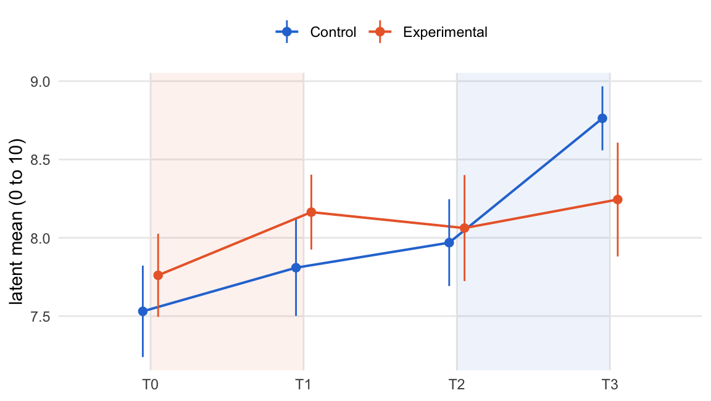
Next → Step 9, the verdict over all steps.
The verdict · Steps 9 to 12
Step 9 · The verdict
Which steps hold, under both sets of cutoffs? All steps of the construct, in all persons, in each group, and across the groups:
km_verdict <- bind_rows(
`all persons` = fit_row(km_all) |> mutate(level = "configural"),
control = km_con_steps |> filter(level != "configural"),
experimental = km_exp_steps |> filter(level != "configural"),
`both groups` = km_both_steps |> filter(level != "over time"),
.id = "part") |>
mutate(Chen = if_else(level == "configural", fits_configural(CFI),
holds_chen(delta_CFI, delta_RMSEA)),
small_sample = if_else(level == "configural", Chen,
holds_small(level, delta_CFI, delta_RMSEA,
delta_SRMR)))
km_verdict |>
transmute(part, level, ΔCFI = delta_CFI, ΔRMSEA = delta_RMSEA,
ΔSRMR = delta_SRMR, p, Chen = mark(Chen),
`small n` = mark(small_sample)) |>
mutate(across(where(is.double), \(x) round(x, 3)))| part | level | ΔCFI | ΔRMSEA | ΔSRMR | p | Chen | small n |
|---|---|---|---|---|---|---|---|
| all persons | configural | ✓ | ✓ | ||||
| control | loadings over time | 0.000 | 0.000 | 0.000 | ✓ | ✓ | |
| control | intercepts over time | 0.001 | -0.011 | 0.001 | 0.400 | ✓ | ✓ |
| experimental | loadings over time | 0.000 | 0.000 | 0.000 | ✓ | ✓ | |
| experimental | intercepts over time | 0.000 | 0.000 | 0.007 | 0.221 | ✓ | ✓ |
| both groups | loadings across groups | 0.000 | 0.000 | 0.000 | ✓ | ✓ | |
| both groups | intercepts across groups | 0.000 | 0.000 | 0.000 | 0.692 | ✓ | ✓ |
Under Chen’s cutoffs every step holds: the measurement of Kama Muta is the same at all four waves, in each group and across the groups. The small-sample reading agrees at every step.
Step 10 · Partial invariance
Is it needed? No: under Chen’s cutoffs every step holds.
Step 11 · Alignment
How far are the eight cells from invariance when nothing is held equal? The share of loadings and intercepts (in %) more than .10 item standard deviations from their common aligned value:
km_input <- alignment_input(km_both_fits$configural,
model_items$KamaMuta)
km_aligned <- invariance.alignment(lambda = km_input$lambda,
nu = km_input$nu, wgt = km_input$weights)
km_tolerance <- invariance_alignment_constraints(
km_aligned, lambda_parm_tol = .10, nu_parm_tol = .10)
tibble(loadings = km_tolerance$lambda_list$prop_noninvariance,
intercepts = km_tolerance$nu_list$prop_noninvariance) |>
mutate(across(everything(), \(x) round(x, 1)))| loadings | intercepts |
|---|---|
| 0 | 6.2 |
Does it move the latent means? The latent mean of each cell as a distance from the control group in January, in its standard deviations, from the final model and aligned:
km_final <- km_both_fits$`intercepts across groups`
km_sd_T0 <- sqrt(lavInspect(km_final, "cov.lv")$Control["F_T0", "F_T0"])
km_alignment_means <- parameterEstimates(km_final) |>
filter(op == "~1", str_starts(lhs, "F_")) |>
transmute(cell = str_c(lavInspect(km_final, "group.label")[group],
" ", str_remove(lhs, "^F_")),
final = (est - first(est)) / km_sd_T0,
aligned = km_aligned$pars$alpha0,
difference = aligned - final)
km_alignment_means |>
mutate(across(where(is.double), \(x) round(x, 3)))| cell | final | aligned | difference |
|---|---|---|---|
| Control T0 | 0.000 | 0.000 | 0.000 |
| Control T1 | 0.142 | 0.122 | -0.020 |
| Control T2 | 0.223 | 0.203 | -0.020 |
| Control T3 | 0.628 | 0.608 | -0.020 |
| Experimental T0 | 0.117 | 0.088 | -0.029 |
| Experimental T1 | 0.323 | 0.316 | -0.006 |
| Experimental T2 | 0.271 | 0.268 | -0.003 |
| Experimental T3 | 0.364 | 0.369 | 0.005 |
With both loadings at 1 only the intercepts count, and 6.2 % of them lie more than .10 item standard deviations from their common value (below the 25 % up to which aligned means are trusted). The aligned means lie at most .029 standard deviations from those of the final model.
Step 12 · What follows
Which model goes on?
km_status <- tibble(construct = "KamaMuta",
status = "as specified",
set_to_0 = list(character()),
freed = list(character()),
autocorrelations = list("free"),
chapter_11 = all(km_verdict$Chen))
show_status(km_status)| entry | value |
|---|---|
| construct | KamaMuta |
| status | as specified |
| set_to_0 | |
| freed | |
| autocorrelations | free |
| chapter_11 | TRUE |
Kama Muta enters the latent comparisons of Chapter 11 as specified: its measurement is the same over the four waves and in both groups.
Positivity Resonance
Its path through the steps. One row per step below, judged under Chen’s cutoffs; the label marks the data of each step:
| Step | Data | Question | Result | Next |
|---|---|---|---|---|
| 2 | all persons | Configural model possible and fitting? | yes | each group |
| 3 | control | Its three models possible? | yes | over time |
| 4 | control | Loadings the same over the waves? | yes | intercepts |
| 5 | control | Intercepts the same over the waves? | yes | experimental group |
| 3 | experimental | Its three models possible? | yes | over time |
| 4 | experimental | Loadings the same over the waves? | yes | intercepts |
| 5 | experimental | Intercepts the same over the waves? | yes | both groups |
| 6 | both groups | Misfit from the groups? | no, as in random halves | across the groups |
| 7 | both groups | Loadings the same in both groups? | yes | intercepts |
| 8 | both groups | Intercepts the same in both groups? | yes | verdict |
| 9–12 | Verdict | invariant | Chapter 11 |
All persons · Steps 1 and 2
Step 1 · The model
What does the model look like? The eight items of Chapter 6 (1, 2, 3, 4, 5, 6, 7 and 8) at each wave, their loadings averaging 1, with the residual covariances of items 1 and 2 and of items 4 and 5 at every wave. In the figure, the circles are the factors of the four waves, the boxes the items by number, the arrows the loadings. The arcs above link the factors; those below link each item with itself at the next wave, the dashed ones the residual covariances within a wave. The links between waves further apart belong to the model as well and are left out of the figure:
plot_model("Resonance")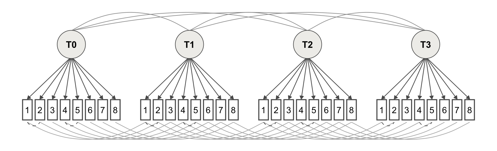
How does lavaan read it? The configural model of one group, as invariance_syntax() writes it:
res_configural_model <- invariance_syntax(
"Resonance", loadings = "free", intercepts = "free",
two_groups = FALSE)
cat(res_configural_model)F_T0 =~ NA*Resonance1_T0 +
l1_T0*Resonance1_T0 +
l2_T0*Resonance2_T0 +
l3_T0*Resonance3_T0 +
l4_T0*Resonance4_T0 +
l5_T0*Resonance5_T0 +
l6_T0*Resonance6_T0 +
l7_T0*Resonance7_T0 +
l8_T0*Resonance8_T0
F_T1 =~ NA*Resonance1_T1 +
l1_T1*Resonance1_T1 +
l2_T1*Resonance2_T1 +
l3_T1*Resonance3_T1 +
l4_T1*Resonance4_T1 +
l5_T1*Resonance5_T1 +
l6_T1*Resonance6_T1 +
l7_T1*Resonance7_T1 +
l8_T1*Resonance8_T1
F_T2 =~ NA*Resonance1_T2 +
l1_T2*Resonance1_T2 +
l2_T2*Resonance2_T2 +
l3_T2*Resonance3_T2 +
l4_T2*Resonance4_T2 +
l5_T2*Resonance5_T2 +
l6_T2*Resonance6_T2 +
l7_T2*Resonance7_T2 +
l8_T2*Resonance8_T2
F_T3 =~ NA*Resonance1_T3 +
l1_T3*Resonance1_T3 +
l2_T3*Resonance2_T3 +
l3_T3*Resonance3_T3 +
l4_T3*Resonance4_T3 +
l5_T3*Resonance5_T3 +
l6_T3*Resonance6_T3 +
l7_T3*Resonance7_T3 +
l8_T3*Resonance8_T3
l1_T0 + l2_T0 + l3_T0 + l4_T0 + l5_T0 + l6_T0 + l7_T0 + l8_T0 == 8
l1_T1 + l2_T1 + l3_T1 + l4_T1 + l5_T1 + l6_T1 + l7_T1 + l8_T1 == 8
l1_T2 + l2_T2 + l3_T2 + l4_T2 + l5_T2 + l6_T2 + l7_T2 + l8_T2 == 8
l1_T3 + l2_T3 + l3_T3 + l4_T3 + l5_T3 + l6_T3 + l7_T3 + l8_T3 == 8
F_T0 ~ 0*1
F_T1 ~ 0*1
F_T2 ~ 0*1
F_T3 ~ 0*1
F_T0 ~~ F_T1
F_T0 ~~ F_T2
F_T0 ~~ F_T3
F_T1 ~~ F_T2
F_T1 ~~ F_T3
F_T2 ~~ F_T3
Resonance1_T0 ~~ Resonance2_T0
Resonance1_T1 ~~ Resonance2_T1
Resonance1_T2 ~~ Resonance2_T2
Resonance1_T3 ~~ Resonance2_T3
Resonance4_T0 ~~ Resonance5_T0
Resonance4_T1 ~~ Resonance5_T1
Resonance4_T2 ~~ Resonance5_T2
Resonance4_T3 ~~ Resonance5_T3
Resonance1_T0 ~~ Resonance1_T1
Resonance1_T0 ~~ Resonance1_T2
Resonance1_T0 ~~ Resonance1_T3
Resonance1_T1 ~~ Resonance1_T2
Resonance1_T1 ~~ Resonance1_T3
Resonance1_T2 ~~ Resonance1_T3
Resonance2_T0 ~~ Resonance2_T1
Resonance2_T0 ~~ Resonance2_T2
Resonance2_T0 ~~ Resonance2_T3
Resonance2_T1 ~~ Resonance2_T2
Resonance2_T1 ~~ Resonance2_T3
Resonance2_T2 ~~ Resonance2_T3
Resonance3_T0 ~~ Resonance3_T1
Resonance3_T0 ~~ Resonance3_T2
Resonance3_T0 ~~ Resonance3_T3
Resonance3_T1 ~~ Resonance3_T2
Resonance3_T1 ~~ Resonance3_T3
Resonance3_T2 ~~ Resonance3_T3
Resonance4_T0 ~~ Resonance4_T1
Resonance4_T0 ~~ Resonance4_T2
Resonance4_T0 ~~ Resonance4_T3
Resonance4_T1 ~~ Resonance4_T2
Resonance4_T1 ~~ Resonance4_T3
Resonance4_T2 ~~ Resonance4_T3
Resonance5_T0 ~~ Resonance5_T1
Resonance5_T0 ~~ Resonance5_T2
Resonance5_T0 ~~ Resonance5_T3
Resonance5_T1 ~~ Resonance5_T2
Resonance5_T1 ~~ Resonance5_T3
Resonance5_T2 ~~ Resonance5_T3
Resonance6_T0 ~~ Resonance6_T1
Resonance6_T0 ~~ Resonance6_T2
Resonance6_T0 ~~ Resonance6_T3
Resonance6_T1 ~~ Resonance6_T2
Resonance6_T1 ~~ Resonance6_T3
Resonance6_T2 ~~ Resonance6_T3
Resonance7_T0 ~~ Resonance7_T1
Resonance7_T0 ~~ Resonance7_T2
Resonance7_T0 ~~ Resonance7_T3
Resonance7_T1 ~~ Resonance7_T2
Resonance7_T1 ~~ Resonance7_T3
Resonance7_T2 ~~ Resonance7_T3
Resonance8_T0 ~~ Resonance8_T1
Resonance8_T0 ~~ Resonance8_T2
Resonance8_T0 ~~ Resonance8_T3
Resonance8_T1 ~~ Resonance8_T2
Resonance8_T1 ~~ Resonance8_T3
Resonance8_T2 ~~ Resonance8_T3Next → Step 2, the configural model in all persons.
Step 2 · The configural model all persons
What is fitted? The model of Step 1, with loadings and intercepts free at every wave, in all persons together:
res_all <- df_wide |>
cfa(model = res_configural_model, data = _, estimator = "MLR",
missing = "fiml")Does it pass the checks? The eleven checks of 7.1, in their order:
res_all_checks <- model_checks(res_all, judge_fit = TRUE)
res_all_checks| check | what | value | criterion | holds |
|---|---|---|---|---|
| 1 estimation | converged | yes | yes | ✓ |
| 2 variances | smallest residual variance: item 7 at T3 | .581 | above 0 | ✓ |
| 3 correlations | largest correlation: the factors at T2 and T3 | .637 | within ±1 | ✓ |
| 4 residuals | smallest eigenvalue of the residual covariances | .471 | above 0 | ✓ |
| 5 factors | smallest eigenvalue of the factor covariances | .513 | above 0 | ✓ |
| 6 standard errors | estimated for every free parameter | yes | yes | ✓ |
| 7 fit | CFI | .914 | at least .90 | ✓ |
| 8 fit | RMSEA [90 % interval] | .052 [.047, .057] | reported | – |
| 9 fit | SRMR | .065 | reported | – |
| 10 strain | largest modification index: item 5 with item 6 at T3 | 18.3 | reported | – |
| 11 estimates | smallest standardized loading: item 1 at T2 | .41 | reported | – |
Every check that decides holds: the estimation converged, the solution is proper (checks 1 to 6), and the model fits (CFI = .914, at least .90). Checks 8 to 11 are reported; Step 6 returns to the fit, and Steps 4, 5, 7 and 8 to the loadings.
Are the estimates sensible? The standardized loading of every item at every wave, and the correlations of the factors:
loading_table(res_all)| item | T0 | T1 | T2 | T3 |
|---|---|---|---|---|
| item 1 | 0.54 | 0.54 | 0.41 | 0.59 |
| item 2 | 0.64 | 0.54 | 0.63 | 0.66 |
| item 3 | 0.67 | 0.66 | 0.72 | 0.77 |
| item 4 | 0.66 | 0.76 | 0.68 | 0.70 |
| item 5 | 0.74 | 0.83 | 0.69 | 0.77 |
| item 6 | 0.75 | 0.87 | 0.79 | 0.77 |
| item 7 | 0.78 | 0.80 | 0.82 | 0.87 |
| item 8 | 0.80 | 0.81 | 0.87 | 0.85 |
factor_correlations(res_all)| T0–T1 | T0–T2 | T0–T3 | T1–T2 | T1–T3 | T2–T3 |
|---|---|---|---|---|---|
| 0.59 | 0.53 | 0.6 | 0.54 | 0.55 | 0.64 |
Every item loads between .41 and .87, and the factors of neighbouring waves correlate between .54 and .64. Why are loadings and intercepts not tested here? The groups were trained at different waves, so a model of all persons would average a trained and an untrained group at the same wave (7.1). All persons show only whether one factor per wave describes the items; the tests over time follow in each group, and then across the groups.
Next → Steps 3 to 5, each group on its own: first the control group, then the experimental group.
Control group · Steps 3 to 5
The 252 persons of the control group, trained between September and December.
Step 3 · The checks control
What is fitted? The three models of this group: configural, with equal loadings over the waves (Step 4), and with equal intercepts as well (Step 5):
res_con_models <- time_steps |>
pmap(\(level, loadings, intercepts) invariance_syntax(
"Resonance", loadings, intercepts, two_groups = FALSE)) |>
set_names(time_steps$level)
res_con_fits <- res_con_models |>
map(\(model) control |>
cfa(model = model, data = _, estimator = "MLR", missing = "fiml"))Does the configural model pass the checks? The eleven checks of 7.1:
res_con_checks <- model_checks(res_con_fits$configural)
res_con_checks| check | what | value | criterion | holds |
|---|---|---|---|---|
| 1 estimation | converged | yes | yes | ✓ |
| 2 variances | smallest residual variance: item 7 at T3 | .575 | above 0 | ✓ |
| 3 correlations | largest correlation: the factors at T1 and T2 | .701 | within ±1 | ✓ |
| 4 residuals | smallest eigenvalue of the residual covariances | .381 | above 0 | ✓ |
| 5 factors | smallest eigenvalue of the factor covariances | .468 | above 0 | ✓ |
| 6 standard errors | estimated for every free parameter | yes | yes | ✓ |
| 7 fit | CFI | .868 | reported | – |
| 8 fit | RMSEA [90 % interval] | .066 [.060, .072] | reported | – |
| 9 fit | SRMR | .087 | reported | – |
| 10 strain | largest modification index: item 7 with item 8 at T0 | 23.8 | reported | – |
| 11 estimates | smallest standardized loading: item 1 at T2 | .31 | reported | – |
Checks 1 to 6 hold: the solution is proper. Its fit is reported (checks 7 to 9); whether one factor per wave describes the items was judged once, in all persons (Step 2). Are the other two models possible as well? Checks 1 to 6 of all three:
possible_table(res_con_fits)| model | estimation | variances | correlations | residuals | factors | standard errors |
|---|---|---|---|---|---|---|
| configural | ✓ | ✓ | ✓ | ✓ | ✓ | ✓ |
| loadings over time | ✓ | ✓ | ✓ | ✓ | ✓ | ✓ |
| intercepts over time | ✓ | ✓ | ✓ | ✓ | ✓ | ✓ |
All three are possible as specified.
Next → Step 4, the loadings over time in this group.
Step 4 · Loadings over time control
Do the loadings stay the same? Each item keeps one loading over the four waves:
res_con_steps <- step_table(res_con_fits)
show_steps(res_con_steps, "loadings over time")| level | df | CFI | ΔCFI | ΔRMSEA | ΔSRMR | p |
|---|---|---|---|---|---|---|
| loadings over time | 423 | 0.863 | -0.005 | 0 | 0.015 | 0.159 |
They do under Chen’s cutoffs (ΔCFI = -.005), though not under those of the small-sample reading, and the χ² test does not reject them (p = .159).
Next → Step 5, with the loadings held equal over the waves.
Step 5 · Intercepts over time control
Do the intercepts stay the same? Each item keeps one intercept over the four waves; the latent means are freed:
res_con_steps <- step_table(res_con_fits)
show_steps(res_con_steps, "intercepts over time")| level | df | CFI | ΔCFI | ΔRMSEA | ΔSRMR | p |
|---|---|---|---|---|---|---|
| intercepts over time | 444 | 0.862 | -0.001 | -0.001 | 0.001 | 0.272 |
They do, under both sets of cutoffs (ΔCFI = -.001), and the χ² test does not reject them (p = .272).
Next → Steps 3 to 5 in the experimental group.
Experimental group · Steps 3 to 5
The 199 persons of the experimental group, trained between January and March.
Step 3 · The checks experimental
What is fitted? The three models of this group: configural, with equal loadings over the waves (Step 4), and with equal intercepts as well (Step 5):
res_exp_models <- time_steps |>
pmap(\(level, loadings, intercepts) invariance_syntax(
"Resonance", loadings, intercepts, two_groups = FALSE)) |>
set_names(time_steps$level)
res_exp_fits <- res_exp_models |>
map(\(model) experimental |>
cfa(model = model, data = _, estimator = "MLR", missing = "fiml"))Does the configural model pass the checks? The eleven checks of 7.1:
res_exp_checks <- model_checks(res_exp_fits$configural)
res_exp_checks| check | what | value | criterion | holds |
|---|---|---|---|---|
| 1 estimation | converged | yes | yes | ✓ |
| 2 variances | smallest residual variance: item 8 at T2 | .420 | above 0 | ✓ |
| 3 correlations | largest correlation: the factors at T2 and T3 | .722 | within ±1 | ✓ |
| 4 residuals | smallest eigenvalue of the residual covariances | .276 | above 0 | ✓ |
| 5 factors | smallest eigenvalue of the factor covariances | .401 | above 0 | ✓ |
| 6 standard errors | estimated for every free parameter | yes | yes | ✓ |
| 7 fit | CFI | .836 | reported | – |
| 8 fit | RMSEA [90 % interval] | .077 [.070, .084] | reported | – |
| 9 fit | SRMR | .104 | reported | – |
| 10 strain | largest modification index: item 7 with item 5 at T1 | 21.5 | reported | – |
| 11 estimates | smallest standardized loading: item 1 at T0 | .49 | reported | – |
Checks 1 to 6 hold: the solution is proper. Its fit is reported (checks 7 to 9); whether one factor per wave describes the items was judged once, in all persons (Step 2). Are the other two models possible as well? Checks 1 to 6 of all three:
possible_table(res_exp_fits)| model | estimation | variances | correlations | residuals | factors | standard errors |
|---|---|---|---|---|---|---|
| configural | ✓ | ✓ | ✓ | ✓ | ✓ | ✓ |
| loadings over time | ✓ | ✓ | ✓ | ✓ | ✓ | ✓ |
| intercepts over time | ✓ | ✓ | ✓ | ✓ | ✓ | ✓ |
All three are possible as specified.
Next → Step 4, the loadings over time in this group.
Step 4 · Loadings over time experimental
Do the loadings stay the same? Each item keeps one loading over the four waves:
res_exp_steps <- step_table(res_exp_fits)
show_steps(res_exp_steps, "loadings over time")| level | df | CFI | ΔCFI | ΔRMSEA | ΔSRMR | p |
|---|---|---|---|---|---|---|
| loadings over time | 423 | 0.827 | -0.009 | 0 | 0.004 | 0.011 |
They do under Chen’s cutoffs (ΔCFI = -.009), though not under those of the small-sample reading; the χ² test, which detects small differences, rejects them (p = .011).
Next → Step 5, with the loadings held equal over the waves.
Step 5 · Intercepts over time experimental
Do the intercepts stay the same? Each item keeps one intercept over the four waves; the latent means are freed:
res_exp_steps <- step_table(res_exp_fits)
show_steps(res_exp_steps, "intercepts over time")| level | df | CFI | ΔCFI | ΔRMSEA | ΔSRMR | p |
|---|---|---|---|---|---|---|
| intercepts over time | 444 | 0.819 | -0.008 | 0 | 0.002 | 0 |
They do under Chen’s cutoffs (ΔCFI = -.008), though not under those of the small-sample reading; the χ² test, which detects small differences, rejects them (p < .001).
Next → Step 6, both groups together, each with what it needed.
Both groups · Steps 6 to 8
Both groups together, with what each group needed.
Step 6 · Do the groups add misfit? both groups
How well does the configural model fit in the two groups, and in random halves of the persons?
res_both_models <- group_steps |>
pmap(\(level, loadings, intercepts) invariance_syntax(
"Resonance", loadings, intercepts)) |>
set_names(group_steps$level)
res_both_fits <- res_both_models |>
map(\(model) df_wide |>
cfa(model = model, data = _, group = "condition",
estimator = "MLR", missing = "fiml"))
res_halves <- c(`random halves 1` = 1, `random halves 2` = 2,
`random halves 3` = 3) |>
map(\(seed) {
set.seed(seed)
df_wide |>
mutate(condition = sample(condition)) |>
cfa(model = res_both_models$configural, data = _, group = "condition",
estimator = "MLR", missing = "fiml")
})
res_fit_table <- c(list(`two groups` = res_both_fits$configural),
res_halves) |>
map(fit_row) |>
list_rbind(names_to = "model")
res_fit_table |>
mutate(across(where(is.double), \(x) round(x, 3)))| model | chisq | df | CFI | RMSEA | SRMR |
|---|---|---|---|---|---|
| two groups | 1556.632 | 804 | 0.853 | 0.071 | 0.095 |
| random halves 1 | 1479.589 | 804 | 0.862 | 0.069 | 0.086 |
| random halves 2 | 1573.408 | 804 | 0.855 | 0.071 | 0.103 |
| random halves 3 | 1431.059 | 804 | 0.867 | 0.067 | 0.101 |
Are all four models of both groups possible? Checks 1 to 6 of each:
possible_table(res_both_fits)| model | estimation | variances | correlations | residuals | factors | standard errors |
|---|---|---|---|---|---|---|
| configural | ✓ | ✓ | ✓ | ✓ | ✓ | ✓ |
| over time | ✓ | ✓ | ✓ | ✓ | ✓ | ✓ |
| loadings across groups | ✓ | ✓ | ✓ | ✓ | ✓ | ✓ |
| intercepts across groups | ✓ | ✓ | ✓ | ✓ | ✓ | ✓ |
All four models of both groups are possible. In the two groups the CFI is .853, against .914 in all persons, and random halves of the persons fit no better (.855 to .867): what the groups lose comes from halving the sample, not from the groups.
Next → Step 7, the loadings across the groups.
Step 7 · Loadings across the groups both groups
Are the loadings the same in both groups?
res_both_steps <- step_table(res_both_fits[-1])
show_steps(res_both_steps, "loadings across groups")| level | df | CFI | ΔCFI | ΔRMSEA | ΔSRMR | p |
|---|---|---|---|---|---|---|
| loadings across groups | 895 | 0.841 | -0.002 | 0 | 0.004 | 0.075 |
They are, under both sets of cutoffs (ΔCFI = -.002), and the χ² test does not reject them (p = .075).
Next → Step 8, the intercepts across the groups, with the loadings held equal.
Step 8 · Intercepts across the groups both groups
Are the intercepts the same in both groups? Each item keeps one intercept, in every cell:
show_steps(res_both_steps, "intercepts across groups")| level | df | CFI | ΔCFI | ΔRMSEA | ΔSRMR | p |
|---|---|---|---|---|---|---|
| intercepts across groups | 902 | 0.84 | 0 | 0 | 0 | 0.204 |
They are, under both sets of cutoffs (ΔCFI = -.000), and the χ² test does not reject them (p = .204).
Where do the latent means lie? In the final model, on the 0 to 10 scale of the items:
plot_latent_means(res_both_fits$`intercepts across groups`)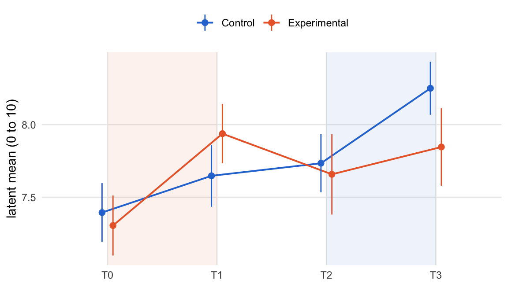
Next → Step 9, the verdict over all steps.
The verdict · Steps 9 to 12
Step 9 · The verdict
Which steps hold, under both sets of cutoffs? All steps of the construct, in all persons, in each group, and across the groups:
res_verdict <- bind_rows(
`all persons` = fit_row(res_all) |> mutate(level = "configural"),
control = res_con_steps |> filter(level != "configural"),
experimental = res_exp_steps |> filter(level != "configural"),
`both groups` = res_both_steps |> filter(level != "over time"),
.id = "part") |>
mutate(Chen = if_else(level == "configural", fits_configural(CFI),
holds_chen(delta_CFI, delta_RMSEA)),
small_sample = if_else(level == "configural", Chen,
holds_small(level, delta_CFI, delta_RMSEA,
delta_SRMR)))
res_verdict |>
transmute(part, level, ΔCFI = delta_CFI, ΔRMSEA = delta_RMSEA,
ΔSRMR = delta_SRMR, p, Chen = mark(Chen),
`small n` = mark(small_sample)) |>
mutate(across(where(is.double), \(x) round(x, 3)))| part | level | ΔCFI | ΔRMSEA | ΔSRMR | p | Chen | small n |
|---|---|---|---|---|---|---|---|
| all persons | configural | ✓ | ✓ | ||||
| control | loadings over time | -0.005 | 0.000 | 0.015 | 0.159 | ✓ | ✗ |
| control | intercepts over time | -0.001 | -0.001 | 0.001 | 0.272 | ✓ | ✓ |
| experimental | loadings over time | -0.009 | 0.000 | 0.004 | 0.011 | ✓ | ✗ |
| experimental | intercepts over time | -0.008 | 0.000 | 0.002 | 0.000 | ✓ | ✗ |
| both groups | loadings across groups | -0.002 | 0.000 | 0.004 | 0.075 | ✓ | ✓ |
| both groups | intercepts across groups | 0.000 | 0.000 | 0.000 | 0.204 | ✓ | ✓ |
Under Chen’s cutoffs every step holds: the measurement of Positivity Resonance is the same at all four waves, in each group and across the groups. The small-sample reading would stop at three steps: the loadings over time in the control group, the loadings over time in the experimental group, and the intercepts over time in the experimental group.
Step 10 · Partial invariance
Is it needed? No: under Chen’s cutoffs every step holds.
Step 11 · Alignment
How far are the eight cells from invariance when nothing is held equal? The share of loadings and intercepts (in %) more than .10 item standard deviations from their common aligned value:
res_input <- alignment_input(res_both_fits$configural,
model_items$Resonance)
res_aligned <- invariance.alignment(lambda = res_input$lambda,
nu = res_input$nu, wgt = res_input$weights)
res_tolerance <- invariance_alignment_constraints(
res_aligned, lambda_parm_tol = .10, nu_parm_tol = .10)
tibble(loadings = res_tolerance$lambda_list$prop_noninvariance,
intercepts = res_tolerance$nu_list$prop_noninvariance) |>
mutate(across(everything(), \(x) round(x, 1)))| loadings | intercepts |
|---|---|
| 23.4 | 14.1 |
Does it move the latent means? The latent mean of each cell as a distance from the control group in January, in its standard deviations, from the final model and aligned:
res_final <- res_both_fits$`intercepts across groups`
res_sd_T0 <- sqrt(lavInspect(res_final, "cov.lv")$Control["F_T0", "F_T0"])
res_alignment_means <- parameterEstimates(res_final) |>
filter(op == "~1", str_starts(lhs, "F_")) |>
transmute(cell = str_c(lavInspect(res_final, "group.label")[group],
" ", str_remove(lhs, "^F_")),
final = (est - first(est)) / res_sd_T0,
aligned = res_aligned$pars$alpha0,
difference = aligned - final)
res_alignment_means |>
mutate(across(where(is.double), \(x) round(x, 3)))| cell | final | aligned | difference |
|---|---|---|---|
| Control T0 | 0.000 | 0.000 | 0.000 |
| Control T1 | 0.189 | 0.149 | -0.040 |
| Control T2 | 0.253 | 0.226 | -0.027 |
| Control T3 | 0.638 | 0.648 | 0.010 |
| Experimental T0 | -0.067 | -0.105 | -0.038 |
| Experimental T1 | 0.405 | 0.403 | -0.002 |
| Experimental T2 | 0.196 | 0.190 | -0.007 |
| Experimental T3 | 0.337 | 0.280 | -0.056 |
23.4 % of the loadings and 14.1 % of the intercepts lie more than .10 item standard deviations from their common value (below the 25 % up to which aligned means are trusted). The aligned means lie at most .056 standard deviations from those of the final model.
Step 12 · What follows
Which model goes on?
res_status <- tibble(construct = "Resonance",
status = "as specified",
set_to_0 = list(character()),
freed = list(character()),
autocorrelations = list("free"),
chapter_11 = all(res_verdict$Chen))
show_status(res_status)| entry | value |
|---|---|
| construct | Resonance |
| status | as specified |
| set_to_0 | |
| freed | |
| autocorrelations | free |
| chapter_11 | TRUE |
Positivity Resonance enters the latent comparisons of Chapter 11 as specified: its measurement is the same over the four waves and in both groups.
Belongingness
Its path through the steps. One row per step below, judged under Chen’s cutoffs; the label marks the data of each step:
| Step | Data | Question | Result | Next |
|---|---|---|---|---|
| 2 | all persons | Configural model possible and fitting? | yes | each group |
| 3 | control | Its three models possible? | yes | over time |
| 4 | control | Loadings the same over the waves? | yes | intercepts |
| 5 | control | Intercepts the same over the waves? | yes | experimental group |
| 3 | experimental | Its three models possible? | yes, after adjustment A | over time |
| 4 | experimental | Loadings the same over the waves? | yes | intercepts |
| 5 | experimental | Intercepts the same over the waves? | yes | both groups |
| 6 | both groups | Misfit from the groups? | no, as in random halves | across the groups |
| 7 | both groups | Loadings the same in both groups? | yes | intercepts |
| 8 | both groups | Intercepts the same in both groups? | yes | verdict |
| 9–12 | Verdict | invariant | Chapter 11 |
All persons · Steps 1 and 2
Step 1 · The model
What does the model look like? The three items of Chapter 6 (1, 2 and 3) at each wave, their loadings averaging 1. In the figure, the circles are the factors of the four waves, the boxes the items by number, the arrows the loadings. The arcs above link the factors; those below link each item with itself at the next wave. The links between waves further apart belong to the model as well and are left out of the figure:
plot_model("Belongingness")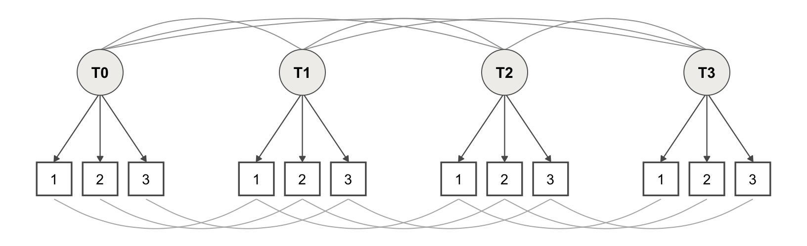
How does lavaan read it? The configural model of one group, as invariance_syntax() writes it:
bel_configural_model <- invariance_syntax(
"Belongingness", loadings = "free", intercepts = "free",
two_groups = FALSE)
cat(bel_configural_model)F_T0 =~ NA*Belongingness1_T0 +
l1_T0*Belongingness1_T0 +
l2_T0*Belongingness2_T0 +
l3_T0*Belongingness3_T0
F_T1 =~ NA*Belongingness1_T1 +
l1_T1*Belongingness1_T1 +
l2_T1*Belongingness2_T1 +
l3_T1*Belongingness3_T1
F_T2 =~ NA*Belongingness1_T2 +
l1_T2*Belongingness1_T2 +
l2_T2*Belongingness2_T2 +
l3_T2*Belongingness3_T2
F_T3 =~ NA*Belongingness1_T3 +
l1_T3*Belongingness1_T3 +
l2_T3*Belongingness2_T3 +
l3_T3*Belongingness3_T3
l1_T0 + l2_T0 + l3_T0 == 3
l1_T1 + l2_T1 + l3_T1 == 3
l1_T2 + l2_T2 + l3_T2 == 3
l1_T3 + l2_T3 + l3_T3 == 3
F_T0 ~ 0*1
F_T1 ~ 0*1
F_T2 ~ 0*1
F_T3 ~ 0*1
F_T0 ~~ F_T1
F_T0 ~~ F_T2
F_T0 ~~ F_T3
F_T1 ~~ F_T2
F_T1 ~~ F_T3
F_T2 ~~ F_T3
Belongingness1_T0 ~~ Belongingness1_T1
Belongingness1_T0 ~~ Belongingness1_T2
Belongingness1_T0 ~~ Belongingness1_T3
Belongingness1_T1 ~~ Belongingness1_T2
Belongingness1_T1 ~~ Belongingness1_T3
Belongingness1_T2 ~~ Belongingness1_T3
Belongingness2_T0 ~~ Belongingness2_T1
Belongingness2_T0 ~~ Belongingness2_T2
Belongingness2_T0 ~~ Belongingness2_T3
Belongingness2_T1 ~~ Belongingness2_T2
Belongingness2_T1 ~~ Belongingness2_T3
Belongingness2_T2 ~~ Belongingness2_T3
Belongingness3_T0 ~~ Belongingness3_T1
Belongingness3_T0 ~~ Belongingness3_T2
Belongingness3_T0 ~~ Belongingness3_T3
Belongingness3_T1 ~~ Belongingness3_T2
Belongingness3_T1 ~~ Belongingness3_T3
Belongingness3_T2 ~~ Belongingness3_T3Next → Step 2, the configural model in all persons.
Step 2 · The configural model all persons
What is fitted? The model of Step 1, with loadings and intercepts free at every wave, in all persons together:
bel_all <- df_wide |>
cfa(model = bel_configural_model, data = _, estimator = "MLR",
missing = "fiml")Does it pass the checks? The eleven checks of 7.1, in their order:
bel_all_checks <- model_checks(bel_all, judge_fit = TRUE)
bel_all_checks| check | what | value | criterion | holds |
|---|---|---|---|---|
| 1 estimation | converged | yes | yes | ✓ |
| 2 variances | smallest residual variance: item 2 at T3 | .220 | above 0 | ✓ |
| 3 correlations | largest correlation: the factors at T1 and T2 | .751 | within ±1 | ✓ |
| 4 residuals | smallest eigenvalue of the residual covariances | .159 | above 0 | ✓ |
| 5 factors | smallest eigenvalue of the factor covariances | .435 | above 0 | ✓ |
| 6 standard errors | estimated for every free parameter | yes | yes | ✓ |
| 7 fit | CFI | .994 | at least .90 | ✓ |
| 8 fit | RMSEA [90 % interval] | .035 [.011, .053] | reported | – |
| 9 fit | SRMR | .026 | reported | – |
| 10 strain | largest modification index: item 1 with item 3 at T3 | 9.4 | reported | – |
| 11 estimates | smallest standardized loading: item 1 at T3 | .79 | reported | – |
Every check that decides holds: the estimation converged, the solution is proper (checks 1 to 6), and the model fits (CFI = .994, at least .90). Checks 8 to 11 are reported; Step 6 returns to the fit, and Steps 4, 5, 7 and 8 to the loadings.
Are the estimates sensible? The standardized loading of every item at every wave, and the correlations of the factors:
loading_table(bel_all)| item | T0 | T1 | T2 | T3 |
|---|---|---|---|---|
| item 1 | 0.80 | 0.83 | 0.87 | 0.79 |
| item 2 | 0.86 | 0.94 | 0.92 | 0.95 |
| item 3 | 0.86 | 0.88 | 0.84 | 0.94 |
factor_correlations(bel_all)| T0–T1 | T0–T2 | T0–T3 | T1–T2 | T1–T3 | T2–T3 |
|---|---|---|---|---|---|
| 0.52 | 0.51 | 0.54 | 0.75 | 0.56 | 0.68 |
Every item loads between .79 and .95, and the factors of neighbouring waves correlate between .52 and .75. Why are loadings and intercepts not tested here? The groups were trained at different waves, so a model of all persons would average a trained and an untrained group at the same wave (7.1). All persons show only whether one factor per wave describes the items; the tests over time follow in each group, and then across the groups.
Next → Steps 3 to 5, each group on its own: first the control group, then the experimental group.
Control group · Steps 3 to 5
The 252 persons of the control group, trained between September and December.
Step 3 · The checks control
What is fitted? The three models of this group: configural, with equal loadings over the waves (Step 4), and with equal intercepts as well (Step 5):
bel_con_models <- time_steps |>
pmap(\(level, loadings, intercepts) invariance_syntax(
"Belongingness", loadings, intercepts, two_groups = FALSE)) |>
set_names(time_steps$level)
bel_con_fits <- bel_con_models |>
map(\(model) control |>
cfa(model = model, data = _, estimator = "MLR", missing = "fiml"))Does the configural model pass the checks? The eleven checks of 7.1:
bel_con_checks <- model_checks(bel_con_fits$configural)
bel_con_checks| check | what | value | criterion | holds |
|---|---|---|---|---|
| 1 estimation | converged | yes | yes | ✓ |
| 2 variances | smallest residual variance: item 3 at T3 | .067 | above 0 | ✓ |
| 3 correlations | largest correlation: the factors at T1 and T2 | .881 | within ±1 | ✓ |
| 4 residuals | smallest eigenvalue of the residual covariances | .060 | above 0 | ✓ |
| 5 factors | smallest eigenvalue of the factor covariances | .317 | above 0 | ✓ |
| 6 standard errors | estimated for every free parameter | yes | yes | ✓ |
| 7 fit | CFI | .977 | reported | – |
| 8 fit | RMSEA [90 % interval] | .072 [.049, .094] | reported | – |
| 9 fit | SRMR | .054 | reported | – |
| 10 strain | largest modification index: item 2 at T3 on the factor at T2 | 5.8 | reported | – |
| 11 estimates | smallest standardized loading: item 1 at T3 | .79 | reported | – |
Checks 1 to 6 hold: the solution is proper. Its fit is reported (checks 7 to 9); whether one factor per wave describes the items was judged once, in all persons (Step 2). Are the other two models possible as well? Checks 1 to 6 of all three:
possible_table(bel_con_fits)| model | estimation | variances | correlations | residuals | factors | standard errors |
|---|---|---|---|---|---|---|
| configural | ✓ | ✓ | ✓ | ✓ | ✓ | ✓ |
| loadings over time | ✓ | ✓ | ✓ | ✓ | ✓ | ✓ |
| intercepts over time | ✓ | ✓ | ✓ | ✓ | ✓ | ✓ |
All three are possible as specified.
Next → Step 4, the loadings over time in this group.
Step 4 · Loadings over time control
Do the loadings stay the same? Each item keeps one loading over the four waves:
bel_con_steps <- step_table(bel_con_fits)
show_steps(bel_con_steps, "loadings over time")| level | df | CFI | ΔCFI | ΔRMSEA | ΔSRMR | p |
|---|---|---|---|---|---|---|
| loadings over time | 36 | 0.976 | 0 | -0.006 | 0.006 | 0.515 |
They do, under both sets of cutoffs (ΔCFI = -.000), and the χ² test does not reject them (p = .515).
Next → Step 5, with the loadings held equal over the waves.
Step 5 · Intercepts over time control
Do the intercepts stay the same? Each item keeps one intercept over the four waves; the latent means are freed:
bel_con_steps <- step_table(bel_con_fits)
show_steps(bel_con_steps, "intercepts over time")| level | df | CFI | ΔCFI | ΔRMSEA | ΔSRMR | p |
|---|---|---|---|---|---|---|
| intercepts over time | 42 | 0.977 | 0.001 | -0.006 | 0 | 0.539 |
They do, under both sets of cutoffs (ΔCFI = .001), and the χ² test does not reject them (p = .539).
Next → Steps 3 to 5 in the experimental group.
Experimental group · Steps 3 to 5
The 199 persons of the experimental group, trained between January and March.
Step 3 · The checks experimental
What is fitted? The three models of this group: configural, with equal loadings over the waves (Step 4), and with equal intercepts as well (Step 5):
bel_exp_models <- time_steps |>
pmap(\(level, loadings, intercepts) invariance_syntax(
"Belongingness", loadings, intercepts, two_groups = FALSE)) |>
set_names(time_steps$level)
bel_exp_fits <- bel_exp_models |>
map(\(model) experimental |>
cfa(model = model, data = _, estimator = "MLR", missing = "fiml"))Does the configural model pass the checks? The eleven checks of 7.1:
bel_exp_checks <- model_checks(bel_exp_fits$configural)
bel_exp_checks| check | what | value | criterion | holds |
|---|---|---|---|---|
| 1 estimation | converged | yes | yes | ✓ |
| 2 variances | smallest residual variance: item 2 at T3 | .018 | above 0 | ✓ |
| 3 correlations | largest correlation: item 2, T1 with T3 | -2.112 | within ±1 | ✗ |
| 4 residuals | smallest eigenvalue of the residual covariances | -.073 | above 0 | ✗ |
| 5 factors | smallest eigenvalue of the factor covariances | .462 | above 0 | ✓ |
| 6 standard errors | estimated for every free parameter | yes | yes | ✓ |
| 7 fit | CFI | .972 | reported | – |
| 8 fit | RMSEA [90 % interval] | .067 [.039, .093] | reported | – |
| 9 fit | SRMR | .081 | reported | – |
| 10 strain | largest modification index: item 2 with item 3 at T1 | 19.3 | reported | – |
| 11 estimates | smallest standardized loading: item 1 at T1 | .72 | reported | – |
Check 3 (largest correlation: item 2, T1 with T3, -2.112) and check 4 (smallest eigenvalue of the residual covariances, -.073) fail: the solution is not possible. Its fit is reported (checks 7 to 9); whether one factor per wave describes the items was judged once, in all persons (Step 2). Are the other two models possible as well? Checks 1 to 6 of all three:
possible_table(bel_exp_fits)| model | estimation | variances | correlations | residuals | factors | standard errors |
|---|---|---|---|---|---|---|
| configural | ✓ | ✓ | ✗ | ✗ | ✓ | ✓ |
| loadings over time | ✓ | ✗ | ✗ | ✗ | ✓ | ✓ |
| intercepts over time | ✓ | ✓ | ✗ | ✗ | ✓ | ✓ |
Not all are possible. Where is the problem? The estimates beyond their range in every model that is not possible, with their intervals; the figure shows them in the first of these models:
bel_exp_boundary <- bel_exp_fits |>
map(boundary_estimates) |>
list_rbind(names_to = "level")
bel_exp_first <- bel_exp_boundary$level[1]
bel_exp_flagged <- bel_exp_boundary |>
filter(level == bel_exp_first) |>
pull(key)
plot_model("Belongingness", bel_exp_fits[[bel_exp_first]],
flagged = bel_exp_flagged)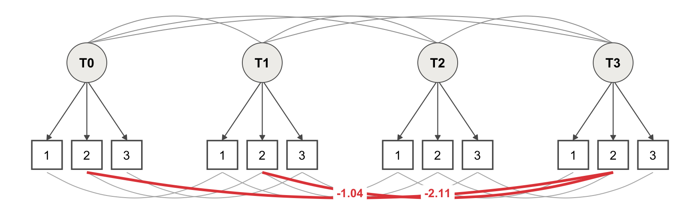
bel_exp_boundary |>
select(-key) |>
mutate(across(where(is.double), \(x) round(x, 2)))| level | estimate | value | se | ci.lower | ci.upper |
|---|---|---|---|---|---|
| configural | correlation: item 2, T0 with T3 | -1.04 | 5.52 | -11.86 | 9.78 |
| configural | correlation: item 2, T1 with T3 | -2.11 | 10.34 | -22.38 | 18.16 |
| loadings over time | residual variance: item 2 at T3 | -0.01 | 0.15 | -0.30 | 0.29 |
| loadings over time | correlation: item 2, T1 with T3 | -4.16 | 62.72 | -127.09 | 118.76 |
| loadings over time | correlation: item 2, T2 with T3 | 1.63 | 26.42 | -50.14 | 53.41 |
| intercepts over time | correlation: item 2, T1 with T3 | -3.04 | 24.49 | -51.03 | 44.96 |
| intercepts over time | correlation: item 2, T2 with T3 | 1.40 | 10.20 | -18.60 | 21.40 |
Is it within sampling error? Each estimate against the bound it crosses, with its 95 % interval, in every model where it occurs:
bel_exp_boundary |>
mutate(estimate = str_c(estimate, " (", level, ")")) |>
plot_boundary()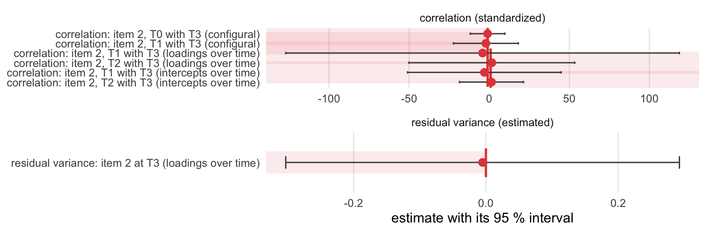
Every interval reaches back across its bound into the possible range: what sampling error produces near a bound, in a group whose waves rest on a hundred to two hundred persons each (Kolenikov & Bollen, 2012). What does the stop rule do? Adjustment A: these estimates at 0 (a negative variance together with the links of its residual to the other waves). In the syntax of each of the three models, these lines are added (shown for the configural model):
bel_exp_specified <- bel_exp_models$configural
bel_exp_zero <- c(
"Experimental: Belongingness2_T0 ~~ Belongingness2_T3",
"Experimental: Belongingness2_T1 ~~ Belongingness2_T3",
"Experimental: Belongingness2_T3 ~~ Belongingness2_T3",
"Experimental: Belongingness2_T2 ~~ Belongingness2_T3")
bel_exp_models <- time_steps |>
pmap(\(level, loadings, intercepts) invariance_syntax(
"Belongingness", loadings, intercepts, two_groups = FALSE,
zero = bel_exp_zero)) |>
set_names(time_steps$level)
bel_exp_fits <- bel_exp_models |>
map(\(model) experimental |>
cfa(model = model, data = _, estimator = "MLR", missing = "fiml"))
syntax_changes(bel_exp_specified, bel_exp_models$configural)+ Belongingness2_T0 ~~ 0*Belongingness2_T3
+ Belongingness2_T1 ~~ 0*Belongingness2_T3
+ Belongingness2_T3 ~~ 0*Belongingness2_T3
+ Belongingness2_T2 ~~ 0*Belongingness2_T3Are the adjusted models possible? In the figure of the model that failed first, the estimates set at 0 are green; then checks 1 to 6 of all three:
plot_model("Belongingness", bel_exp_fits[[bel_exp_first]],
fixed = str_remove(bel_exp_zero, "^[A-Za-z]+: "))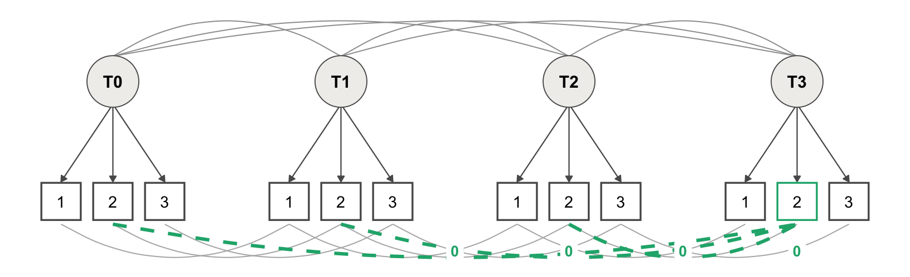
possible_table(bel_exp_fits)| model | estimation | variances | correlations | residuals | factors | standard errors |
|---|---|---|---|---|---|---|
| configural | ✓ | ✓ | ✓ | ✓ | ✓ | ✓ |
| loadings over time | ✓ | ✓ | ✓ | ✓ | ✓ | ✓ |
| intercepts over time | ✓ | ✓ | ✓ | ✓ | ✓ | ✓ |
All three are possible now; the steps go on with adjustment A.
Next → Step 4, the loadings over time in this group, with adjustment A.
Step 4 · Loadings over time experimental
Do the loadings stay the same? Each item keeps one loading over the four waves:
bel_exp_steps <- step_table(bel_exp_fits)
show_steps(bel_exp_steps, "loadings over time")| level | df | CFI | ΔCFI | ΔRMSEA | ΔSRMR | p |
|---|---|---|---|---|---|---|
| loadings over time | 40 | 0.964 | -0.007 | 0.001 | 0.001 | 0.152 |
They do under Chen’s cutoffs (ΔCFI = -.007), though not under those of the small-sample reading, and the χ² test does not reject them (p = .152).
Next → Step 5, with the loadings held equal over the waves.
Step 5 · Intercepts over time experimental
Do the intercepts stay the same? Each item keeps one intercept over the four waves; the latent means are freed:
bel_exp_steps <- step_table(bel_exp_fits)
show_steps(bel_exp_steps, "intercepts over time")| level | df | CFI | ΔCFI | ΔRMSEA | ΔSRMR | p |
|---|---|---|---|---|---|---|
| intercepts over time | 46 | 0.961 | -0.003 | -0.002 | 0.002 | 0.131 |
They do, under both sets of cutoffs (ΔCFI = -.003), and the χ² test does not reject them (p = .131).
Next → Step 6, both groups together, each with what it needed.
Both groups · Steps 6 to 8
Both groups together, with what each group needed.
Step 6 · Do the groups add misfit? both groups
How well does the configural model fit in the two groups, and in random halves of the persons?
bel_zero <- bel_exp_zero # the control group needs none
bel_both_models <- group_steps |>
pmap(\(level, loadings, intercepts) invariance_syntax(
"Belongingness", loadings, intercepts, zero = bel_zero)) |>
set_names(group_steps$level)
bel_both_fits <- bel_both_models |>
map(\(model) df_wide |>
cfa(model = model, data = _, group = "condition",
estimator = "MLR", missing = "fiml"))
bel_halves <- c(`random halves 1` = 1, `random halves 2` = 2,
`random halves 3` = 3) |>
map(\(seed) {
set.seed(seed)
df_wide |>
mutate(condition = sample(condition)) |>
cfa(model = bel_both_models$configural, data = _, group = "condition",
estimator = "MLR", missing = "fiml")
})
bel_fit_table <- c(list(`two groups` = bel_both_fits$configural),
bel_halves) |>
map(fit_row) |>
list_rbind(names_to = "model")
bel_fit_table |>
mutate(across(where(is.double), \(x) round(x, 3)))| model | chisq | df | CFI | RMSEA | SRMR |
|---|---|---|---|---|---|
| two groups | 119.163 | 64 | 0.975 | 0.068 | 0.064 |
| random halves 1 | 115.840 | 64 | 0.975 | 0.068 | 0.047 |
| random halves 2 | 97.007 | 64 | 0.983 | 0.057 | 0.053 |
| random halves 3 | 95.708 | 64 | 0.982 | 0.058 | 0.050 |
Are all four models of both groups possible? Checks 1 to 6 of each:
possible_table(bel_both_fits)| model | estimation | variances | correlations | residuals | factors | standard errors |
|---|---|---|---|---|---|---|
| configural | ✓ | ✓ | ✓ | ✓ | ✓ | ✓ |
| over time | ✓ | ✓ | ✓ | ✓ | ✓ | ✓ |
| loadings across groups | ✓ | ✓ | ✓ | ✓ | ✓ | ✓ |
| intercepts across groups | ✓ | ✓ | ✓ | ✓ | ✓ | ✓ |
All four models of both groups are possible, and the configural model fits closely in the two groups (CFI = .975) as in the random halves.
Next → Step 7, the loadings across the groups.
Step 7 · Loadings across the groups both groups
Are the loadings the same in both groups?
bel_both_steps <- step_table(bel_both_fits[-1])
show_steps(bel_both_steps, "loadings across groups")| level | df | CFI | ΔCFI | ΔRMSEA | ΔSRMR | p |
|---|---|---|---|---|---|---|
| loadings across groups | 90 | 0.971 | 0 | -0.001 | -0.004 | 0.476 |
They are, under both sets of cutoffs (ΔCFI = -.000), and the χ² test does not reject them (p = .476).
Next → Step 8, the intercepts across the groups, with the loadings held equal.
Step 8 · Intercepts across the groups both groups
Are the intercepts the same in both groups? Each item keeps one intercept, in every cell:
show_steps(bel_both_steps, "intercepts across groups")| level | df | CFI | ΔCFI | ΔRMSEA | ΔSRMR | p |
|---|---|---|---|---|---|---|
| intercepts across groups | 92 | 0.972 | 0 | -0.001 | 0 | 0.561 |
They are, under both sets of cutoffs (ΔCFI = .000), and the χ² test does not reject them (p = .561).
Where do the latent means lie? In the final model, on the 0 to 10 scale of the items:
plot_latent_means(bel_both_fits$`intercepts across groups`)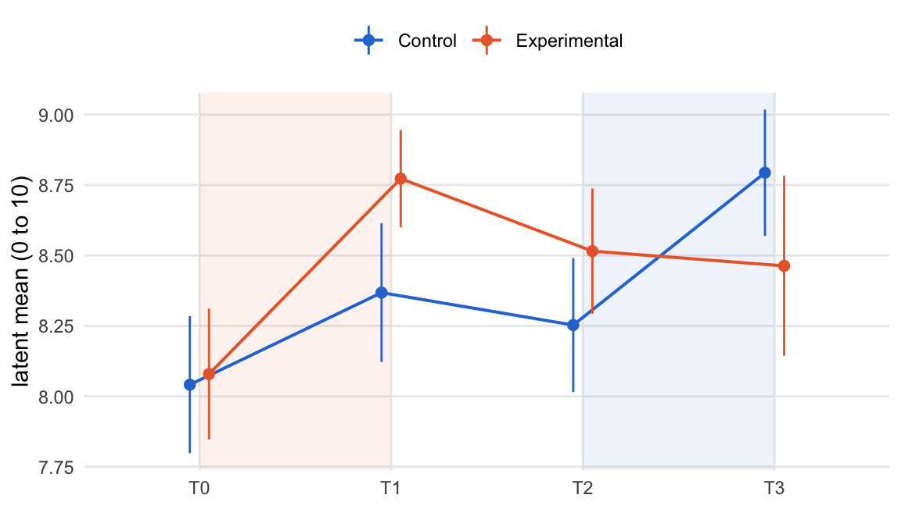
Next → Step 9, the verdict over all steps.
The verdict · Steps 9 to 12
Step 9 · The verdict
Which steps hold, under both sets of cutoffs? All steps of the construct, in all persons, in each group, and across the groups:
bel_verdict <- bind_rows(
`all persons` = fit_row(bel_all) |> mutate(level = "configural"),
control = bel_con_steps |> filter(level != "configural"),
experimental = bel_exp_steps |> filter(level != "configural"),
`both groups` = bel_both_steps |> filter(level != "over time"),
.id = "part") |>
mutate(Chen = if_else(level == "configural", fits_configural(CFI),
holds_chen(delta_CFI, delta_RMSEA)),
small_sample = if_else(level == "configural", Chen,
holds_small(level, delta_CFI, delta_RMSEA,
delta_SRMR)))
bel_verdict |>
transmute(part, level, ΔCFI = delta_CFI, ΔRMSEA = delta_RMSEA,
ΔSRMR = delta_SRMR, p, Chen = mark(Chen),
`small n` = mark(small_sample)) |>
mutate(across(where(is.double), \(x) round(x, 3)))| part | level | ΔCFI | ΔRMSEA | ΔSRMR | p | Chen | small n |
|---|---|---|---|---|---|---|---|
| all persons | configural | ✓ | ✓ | ||||
| control | loadings over time | 0.000 | -0.006 | 0.006 | 0.515 | ✓ | ✓ |
| control | intercepts over time | 0.001 | -0.006 | 0.000 | 0.539 | ✓ | ✓ |
| experimental | loadings over time | -0.007 | 0.001 | 0.001 | 0.152 | ✓ | ✗ |
| experimental | intercepts over time | -0.003 | -0.002 | 0.002 | 0.131 | ✓ | ✓ |
| both groups | loadings across groups | 0.000 | -0.001 | -0.004 | 0.476 | ✓ | ✓ |
| both groups | intercepts across groups | 0.000 | -0.001 | 0.000 | 0.561 | ✓ | ✓ |
Under Chen’s cutoffs every step holds: the measurement of Belongingness is the same at all four waves, in each group and across the groups. The small-sample reading would stop at one step: the loadings over time in the experimental group.
Step 10 · Partial invariance
Is it needed? No: under Chen’s cutoffs every step holds.
Step 11 · Alignment
How far are the eight cells from invariance when nothing is held equal? The share of loadings and intercepts (in %) more than .10 item standard deviations from their common aligned value:
bel_input <- alignment_input(bel_both_fits$configural,
model_items$Belongingness)
bel_aligned <- invariance.alignment(lambda = bel_input$lambda,
nu = bel_input$nu, wgt = bel_input$weights)
bel_tolerance <- invariance_alignment_constraints(
bel_aligned, lambda_parm_tol = .10, nu_parm_tol = .10)
tibble(loadings = bel_tolerance$lambda_list$prop_noninvariance,
intercepts = bel_tolerance$nu_list$prop_noninvariance) |>
mutate(across(everything(), \(x) round(x, 1)))| loadings | intercepts |
|---|---|
| 8.3 | 4.2 |
Does it move the latent means? The latent mean of each cell as a distance from the control group in January, in its standard deviations, from the final model and aligned:
bel_final <- bel_both_fits$`intercepts across groups`
bel_sd_T0 <- sqrt(lavInspect(bel_final, "cov.lv")$Control["F_T0", "F_T0"])
bel_alignment_means <- parameterEstimates(bel_final) |>
filter(op == "~1", str_starts(lhs, "F_")) |>
transmute(cell = str_c(lavInspect(bel_final, "group.label")[group],
" ", str_remove(lhs, "^F_")),
final = (est - first(est)) / bel_sd_T0,
aligned = bel_aligned$pars$alpha0,
difference = aligned - final)
bel_alignment_means |>
mutate(across(where(is.double), \(x) round(x, 3)))| cell | final | aligned | difference |
|---|---|---|---|
| Control T0 | 0.000 | 0.000 | 0.000 |
| Control T1 | 0.192 | 0.203 | 0.010 |
| Control T2 | 0.125 | 0.134 | 0.010 |
| Control T3 | 0.443 | 0.456 | 0.013 |
| Experimental T0 | 0.022 | 0.028 | 0.006 |
| Experimental T1 | 0.430 | 0.459 | 0.029 |
| Experimental T2 | 0.279 | 0.249 | -0.030 |
| Experimental T3 | 0.248 | 0.229 | -0.019 |
8.3 % of the loadings and 4.2 % of the intercepts lie more than .10 item standard deviations from their common value (below the 25 % up to which aligned means are trusted). The aligned means lie at most .030 standard deviations from those of the final model.
Step 12 · What follows
Which model goes on?
bel_status <- tibble(construct = "Belongingness",
status = "adjusted (A)",
set_to_0 = list(bel_zero),
freed = list(character()),
autocorrelations = list("free"),
chapter_11 = all(bel_verdict$Chen))
show_status(bel_status)| entry | value |
|---|---|
| construct | Belongingness |
| status | adjusted (A) |
| set_to_0 | Experimental: Belongingness2_T0 ~~ Belongingness2_T3; Experimental: Belongingness2_T1 ~~ Belongingness2_T3; Experimental: Belongingness2_T3 ~~ Belongingness2_T3; Experimental: Belongingness2_T2 ~~ Belongingness2_T3 |
| freed | |
| autocorrelations | free |
| chapter_11 | TRUE |
Belongingness enters the latent comparisons of Chapter 11 with adjustment A: its measurement is the same over the four waves and in both groups.
No Alienation
Its path through the steps. One row per step below, judged under Chen’s cutoffs; the label marks the data of each step:
| Step | Data | Question | Result | Next |
|---|---|---|---|---|
| 2 | all persons | Configural model possible and fitting? | yes | each group |
| 3 | control | Its three models possible? | yes, after adjustment B | over time |
| 4 | control | Loadings the same over the waves? | both load 1 (two items) | intercepts |
| 5 | control | Intercepts the same over the waves? | yes | experimental group |
| 3 | experimental | Its three models possible? | yes | over time |
| 4 | experimental | Loadings the same over the waves? | both load 1 (two items) | intercepts |
| 5 | experimental | Intercepts the same over the waves? | yes | both groups |
| 6 | both groups | Misfit from the groups? | no, as in random halves | across the groups |
| 7 | both groups | Loadings the same in both groups? | both load 1 (two items) | intercepts |
| 8 | both groups | Intercepts the same in both groups? | yes | verdict |
| 9–12 | Verdict | invariant | Chapter 11 |
All persons · Steps 1 and 2
Step 1 · The model
What does the model look like? Both items of Chapter 6 at each wave, each loading 1, the residual of each item linked to itself across the waves. In the figure, the circles are the factors of the four waves, the boxes the items by number, the arrows the loadings. The arcs above link the factors; those below link each item with itself at the next wave. The links between waves further apart belong to the model as well and are left out of the figure:
plot_model("NoAlienation")
How does lavaan read it? The configural model of one group, as invariance_syntax() writes it:
nal_configural_model <- invariance_syntax(
"NoAlienation", loadings = "free", intercepts = "free",
two_groups = FALSE)
cat(nal_configural_model)F_T0 =~ 1*NoAlienation1_T0 +
1*NoAlienation2_T0
F_T1 =~ 1*NoAlienation1_T1 +
1*NoAlienation2_T1
F_T2 =~ 1*NoAlienation1_T2 +
1*NoAlienation2_T2
F_T3 =~ 1*NoAlienation1_T3 +
1*NoAlienation2_T3
F_T0 ~ 0*1
F_T1 ~ 0*1
F_T2 ~ 0*1
F_T3 ~ 0*1
F_T0 ~~ F_T1
F_T0 ~~ F_T2
F_T0 ~~ F_T3
F_T1 ~~ F_T2
F_T1 ~~ F_T3
F_T2 ~~ F_T3
NoAlienation1_T0 ~~ NoAlienation1_T1
NoAlienation1_T0 ~~ NoAlienation1_T2
NoAlienation1_T0 ~~ NoAlienation1_T3
NoAlienation1_T1 ~~ NoAlienation1_T2
NoAlienation1_T1 ~~ NoAlienation1_T3
NoAlienation1_T2 ~~ NoAlienation1_T3
NoAlienation2_T0 ~~ NoAlienation2_T1
NoAlienation2_T0 ~~ NoAlienation2_T2
NoAlienation2_T0 ~~ NoAlienation2_T3
NoAlienation2_T1 ~~ NoAlienation2_T2
NoAlienation2_T1 ~~ NoAlienation2_T3
NoAlienation2_T2 ~~ NoAlienation2_T3Both items load 1 for the reason Others Listen to Me shows (Step 1).
Next → Step 2, the configural model in all persons.
Step 2 · The configural model all persons
What is fitted? The model of Step 1, with loadings and intercepts free at every wave, in all persons together:
nal_all <- df_wide |>
cfa(model = nal_configural_model, data = _, estimator = "MLR",
missing = "fiml")Does it pass the checks? The eleven checks of 7.1, in their order:
nal_all_checks <- model_checks(nal_all, judge_fit = TRUE)
nal_all_checks| check | what | value | criterion | holds |
|---|---|---|---|---|
| 1 estimation | converged | yes | yes | ✓ |
| 2 variances | smallest residual variance: item 1 at T1 | 1.001 | above 0 | ✓ |
| 3 correlations | largest correlation: item 2, T1 with T2 | .617 | within ±1 | ✓ |
| 4 residuals | smallest eigenvalue of the residual covariances | .173 | above 0 | ✓ |
| 5 factors | smallest eigenvalue of the factor covariances | 3.282 | above 0 | ✓ |
| 6 standard errors | estimated for every free parameter | yes | yes | ✓ |
| 7 fit | CFI | 1.000 | at least .90 | ✓ |
| 8 fit | RMSEA [90 % interval] | .000 [.000, .033] | reported | – |
| 9 fit | SRMR | .011 | reported | – |
| 10 strain | largest modification index: item 1 at T3 on the factor at T0 | 1.9 | reported | – |
| 11 estimates | smallest standardized loading: item 1 at T2 | .89 | reported | – |
Every check that decides holds: the estimation converged, the solution is proper (checks 1 to 6), and the model fits (CFI = 1.000, at least .90). Checks 8 to 11 are reported; Step 6 returns to the fit, and Steps 4, 5, 7 and 8 to the loadings.
Are the estimates sensible? The standardized loading of every item at every wave, and the correlations of the factors:
loading_table(nal_all)| item | T0 | T1 | T2 | T3 |
|---|---|---|---|---|
| item 1 | 0.90 | 0.95 | 0.89 | 0.93 |
| item 2 | 0.93 | 0.94 | 0.92 | 0.92 |
factor_correlations(nal_all)| T0–T1 | T0–T2 | T0–T3 | T1–T2 | T1–T3 | T2–T3 |
|---|---|---|---|---|---|
| 0.55 | 0.52 | 0.48 | 0.47 | 0.55 | 0.57 |
Every item loads between .89 and .95, and the factors of neighbouring waves correlate between .47 and .57. Why are loadings and intercepts not tested here? The groups were trained at different waves, so a model of all persons would average a trained and an untrained group at the same wave (7.1). All persons show only whether one factor per wave describes the items; the tests over time follow in each group, and then across the groups.
Next → Steps 3 to 5, each group on its own: first the control group, then the experimental group.
Control group · Steps 3 to 5
The 252 persons of the control group, trained between September and December.
Step 3 · The checks control
What is fitted? The three models of this group: configural, with equal loadings over the waves (Step 4), and with equal intercepts as well (Step 5):
nal_con_models <- time_steps |>
pmap(\(level, loadings, intercepts) invariance_syntax(
"NoAlienation", loadings, intercepts, two_groups = FALSE)) |>
set_names(time_steps$level)
nal_con_fits <- nal_con_models |>
map(\(model) control |>
cfa(model = model, data = _, estimator = "MLR", missing = "fiml"))Does the configural model pass the checks? The eleven checks of 7.1:
nal_con_checks <- model_checks(nal_con_fits$configural)
nal_con_checks| check | what | value | criterion | holds |
|---|---|---|---|---|
| 1 estimation | converged | yes | yes | ✓ |
| 2 variances | smallest residual variance: item 1 at T1 | .741 | above 0 | ✓ |
| 3 correlations | largest correlation: the factors at T2 and T3 | .697 | within ±1 | ✓ |
| 4 residuals | smallest eigenvalue of the residual covariances | -.056 | above 0 | ✗ |
| 5 factors | smallest eigenvalue of the factor covariances | 1.936 | above 0 | ✓ |
| 6 standard errors | estimated for every free parameter | yes | yes | ✓ |
| 7 fit | CFI | .998 | reported | – |
| 8 fit | RMSEA [90 % interval] | .036 [.000, .095] | reported | – |
| 9 fit | SRMR | .030 | reported | – |
| 10 strain | largest modification index: item 2 at T2 on the factor at T0 | 4.8 | reported | – |
| 11 estimates | smallest standardized loading: item 1 at T2 | .89 | reported | – |
Check 4 (smallest eigenvalue of the residual covariances, -.056) fails: the solution is not possible. Its fit is reported (checks 7 to 9); whether one factor per wave describes the items was judged once, in all persons (Step 2). Are the other two models possible as well? Checks 1 to 6 of all three:
possible_table(nal_con_fits)| model | estimation | variances | correlations | residuals | factors | standard errors |
|---|---|---|---|---|---|---|
| configural | ✓ | ✓ | ✓ | ✗ | ✓ | ✓ |
| loadings over time | ✓ | ✓ | ✓ | ✗ | ✓ | ✓ |
| intercepts over time | ✓ | ✓ | ✓ | ✗ | ✓ | ✓ |
Not all are possible. Where is the problem? Checks 2 and 3 hold in every model: no single estimate lies beyond its bound. Check 4 fails: the residual covariances as a whole are not positive definite, their smallest eigenvalue lies below 0:
plot_eigenvalues(nal_con_fits)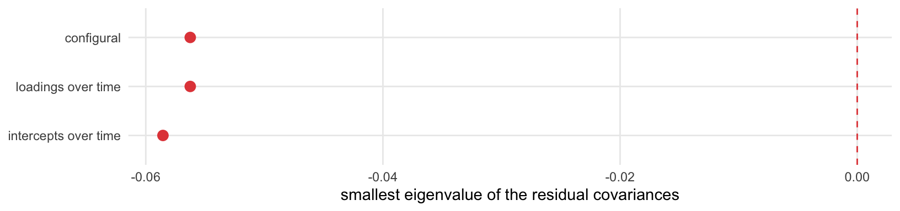
nal_con_fits |>
map(smallest_eigenvalues) |>
list_rbind(names_to = "level") |>
mutate(across(where(is.double), \(x) round(x, 3)))| level | residual | latent |
|---|---|---|
| configural | -0.056 | 1.936 |
| loadings over time | -0.056 | 1.936 |
| intercepts over time | -0.059 | 1.933 |
No single estimate is at fault, so adjustment A has nothing to set at 0. What does the stop rule do? Adjustment B: one autocorrelation per item, the same for every pair of waves. In the syntax of each model, every autocorrelation of an item gets the same label (a1 for item 1, and so on), which holds them equal (shown for the configural model):
nal_con_specified <- nal_con_models$configural
nal_con_models <- time_steps |>
pmap(\(level, loadings, intercepts) invariance_syntax(
"NoAlienation", loadings, intercepts, two_groups = FALSE,
autocorrelations = "equal")) |>
set_names(time_steps$level)
nal_con_fits <- nal_con_models |>
map(\(model) control |>
cfa(model = model, data = _, estimator = "MLR", missing = "fiml"))
syntax_changes(nal_con_specified, nal_con_models$configural)- NoAlienation1_T0 ~~ NoAlienation1_T1
- NoAlienation1_T0 ~~ NoAlienation1_T2
- NoAlienation1_T0 ~~ NoAlienation1_T3
- NoAlienation1_T1 ~~ NoAlienation1_T2
- NoAlienation1_T1 ~~ NoAlienation1_T3
- NoAlienation1_T2 ~~ NoAlienation1_T3
- NoAlienation2_T0 ~~ NoAlienation2_T1
- NoAlienation2_T0 ~~ NoAlienation2_T2
- ... and 4 more lines like these
+ NoAlienation1_T0 ~~ a1*NoAlienation1_T1
+ NoAlienation1_T0 ~~ a1*NoAlienation1_T2
+ NoAlienation1_T0 ~~ a1*NoAlienation1_T3
+ NoAlienation1_T1 ~~ a1*NoAlienation1_T2
+ NoAlienation1_T1 ~~ a1*NoAlienation1_T3
+ NoAlienation1_T2 ~~ a1*NoAlienation1_T3
+ NoAlienation2_T0 ~~ a2*NoAlienation2_T1
+ NoAlienation2_T0 ~~ a2*NoAlienation2_T2
+ ... and 4 more lines like theseAre the adjusted models possible? The smallest eigenvalue of each, and checks 1 to 6 of all three:
plot_eigenvalues(nal_con_fits)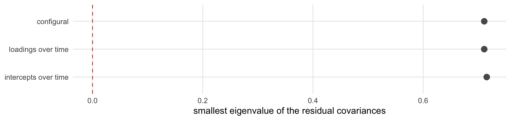
possible_table(nal_con_fits)| model | estimation | variances | correlations | residuals | factors | standard errors |
|---|---|---|---|---|---|---|
| configural | ✓ | ✓ | ✓ | ✓ | ✓ | ✓ |
| loadings over time | ✓ | ✓ | ✓ | ✓ | ✓ | ✓ |
| intercepts over time | ✓ | ✓ | ✓ | ✓ | ✓ | ✓ |
All three are possible now; the steps go on with adjustment B.
Next → Step 4, the loadings over time in this group, with adjustment B.
Step 4 · Loadings over time control
Do the loadings stay the same? With two items both load 1 at every wave: the model is the configural one.
identical(nal_con_models$`loadings over time`,
nal_con_models$configural)[1] TRUENext → Step 5, the intercepts over time.
Step 5 · Intercepts over time control
Do the intercepts stay the same? Each item keeps one intercept over the four waves; the latent means are freed:
nal_con_steps <- step_table(nal_con_fits)
show_steps(nal_con_steps, "intercepts over time")| level | df | CFI | ΔCFI | ΔRMSEA | ΔSRMR | p |
|---|---|---|---|---|---|---|
| intercepts over time | 19 | 0.969 | -0.002 | -0.005 | 0.001 | 0.092 |
They do, under both sets of cutoffs (ΔCFI = -.002), and the χ² test does not reject them (p = .092).
Next → Steps 3 to 5 in the experimental group.
Experimental group · Steps 3 to 5
The 199 persons of the experimental group, trained between January and March.
Step 3 · The checks experimental
What is fitted? The three models of this group: configural, with equal loadings over the waves (Step 4), and with equal intercepts as well (Step 5):
nal_exp_models <- time_steps |>
pmap(\(level, loadings, intercepts) invariance_syntax(
"NoAlienation", loadings, intercepts, two_groups = FALSE)) |>
set_names(time_steps$level)
nal_exp_fits <- nal_exp_models |>
map(\(model) experimental |>
cfa(model = model, data = _, estimator = "MLR", missing = "fiml"))Does the configural model pass the checks? The eleven checks of 7.1:
nal_exp_checks <- model_checks(nal_exp_fits$configural)
nal_exp_checks| check | what | value | criterion | holds |
|---|---|---|---|---|
| 1 estimation | converged | yes | yes | ✓ |
| 2 variances | smallest residual variance: item 2 at T3 | .669 | above 0 | ✓ |
| 3 correlations | largest correlation: item 1, T2 with T3 | .719 | within ±1 | ✓ |
| 4 residuals | smallest eigenvalue of the residual covariances | .263 | above 0 | ✓ |
| 5 factors | smallest eigenvalue of the factor covariances | 3.067 | above 0 | ✓ |
| 6 standard errors | estimated for every free parameter | yes | yes | ✓ |
| 7 fit | CFI | 1.000 | reported | – |
| 8 fit | RMSEA [90 % interval] | .000 [.000, .083] | reported | – |
| 9 fit | SRMR | .028 | reported | – |
| 10 strain | largest modification index: item 1 at T2 on the factor at T2 | 3.5 | reported | – |
| 11 estimates | smallest standardized loading: item 1 at T2 | .88 | reported | – |
Checks 1 to 6 hold: the solution is proper. Its fit is reported (checks 7 to 9); whether one factor per wave describes the items was judged once, in all persons (Step 2). Are the other two models possible as well? Checks 1 to 6 of all three:
possible_table(nal_exp_fits)| model | estimation | variances | correlations | residuals | factors | standard errors |
|---|---|---|---|---|---|---|
| configural | ✓ | ✓ | ✓ | ✓ | ✓ | ✓ |
| loadings over time | ✓ | ✓ | ✓ | ✓ | ✓ | ✓ |
| intercepts over time | ✓ | ✓ | ✓ | ✓ | ✓ | ✓ |
All three are possible as specified.
Next → Step 4, the loadings over time in this group.
Step 4 · Loadings over time experimental
Do the loadings stay the same? With two items both load 1 at every wave: the model is the configural one.
identical(nal_exp_models$`loadings over time`,
nal_exp_models$configural)[1] TRUENext → Step 5, the intercepts over time.
Step 5 · Intercepts over time experimental
Do the intercepts stay the same? Each item keeps one intercept over the four waves; the latent means are freed:
nal_exp_steps <- step_table(nal_exp_fits)
show_steps(nal_exp_steps, "intercepts over time")| level | df | CFI | ΔCFI | ΔRMSEA | ΔSRMR | p |
|---|---|---|---|---|---|---|
| intercepts over time | 9 | 1 | 0 | 0 | 0.001 | 0.777 |
They do, under both sets of cutoffs (ΔCFI = .000), and the χ² test does not reject them (p = .777).
Next → Step 6, both groups together, each with what it needed.
Both groups · Steps 6 to 8
Both groups together, with what each group needed.
Step 6 · Do the groups add misfit? both groups
How well does the configural model fit in the two groups, and in random halves of the persons?
nal_autocorrelations <- c(Control = "equal",
Experimental = "free")
nal_both_models <- group_steps |>
pmap(\(level, loadings, intercepts) invariance_syntax(
"NoAlienation", loadings, intercepts,
autocorrelations = nal_autocorrelations)) |>
set_names(group_steps$level)
nal_both_fits <- nal_both_models |>
map(\(model) df_wide |>
cfa(model = model, data = _, group = "condition",
estimator = "MLR", missing = "fiml"))
nal_halves <- c(`random halves 1` = 1, `random halves 2` = 2,
`random halves 3` = 3) |>
map(\(seed) {
set.seed(seed)
df_wide |>
mutate(condition = sample(condition)) |>
cfa(model = nal_both_models$configural, data = _, group = "condition",
estimator = "MLR", missing = "fiml")
})
nal_fit_table <- c(list(`two groups` = nal_both_fits$configural),
nal_halves) |>
map(fit_row) |>
list_rbind(names_to = "model")
nal_fit_table |>
mutate(across(where(is.double), \(x) round(x, 3)))| model | chisq | df | CFI | RMSEA | SRMR |
|---|---|---|---|---|---|
| two groups | 43.159 | 22 | 0.983 | 0.078 | 0.032 |
| random halves 1 | 32.301 | 22 | 0.995 | 0.043 | 0.031 |
| random halves 2 | 29.931 | 22 | 0.990 | 0.061 | 0.024 |
| random halves 3 | 34.462 | 22 | 0.992 | 0.054 | 0.028 |
Are all four models of both groups possible? Checks 1 to 6 of each:
possible_table(nal_both_fits)| model | estimation | variances | correlations | residuals | factors | standard errors |
|---|---|---|---|---|---|---|
| configural | ✓ | ✓ | ✓ | ✓ | ✓ | ✓ |
| over time | ✓ | ✓ | ✓ | ✓ | ✓ | ✓ |
| loadings across groups | ✓ | ✓ | ✓ | ✓ | ✓ | ✓ |
| intercepts across groups | ✓ | ✓ | ✓ | ✓ | ✓ | ✓ |
All four models of both groups are possible, and the configural model fits closely in the two groups (CFI = .983) as in the random halves.
Next → Step 7, the loadings across the groups.
Step 7 · Loadings across the groups both groups
Are the loadings the same in both groups? With two items they are 1 in both, by construction:
identical(nal_both_models$`loadings across groups`,
nal_both_models$`over time`)[1] TRUENext → Step 8, the intercepts across the groups, with the loadings held equal.
Step 8 · Intercepts across the groups both groups
Are the intercepts the same in both groups? Each item keeps one intercept, in every cell:
nal_both_steps <- step_table(nal_both_fits[-1])
show_steps(nal_both_steps, "intercepts across groups")| level | df | CFI | ΔCFI | ΔRMSEA | ΔSRMR | p |
|---|---|---|---|---|---|---|
| intercepts across groups | 29 | 0.984 | 0.001 | -0.002 | 0 | 0.83 |
They are, under both sets of cutoffs (ΔCFI = .001), and the χ² test does not reject them (p = .830).
Where do the latent means lie? In the final model, on the 0 to 10 scale of the items:
plot_latent_means(nal_both_fits$`intercepts across groups`)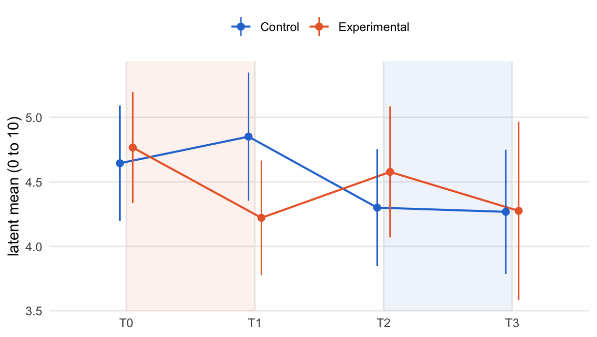
Next → Step 9, the verdict over all steps.
The verdict · Steps 9 to 12
Step 9 · The verdict
Which steps hold, under both sets of cutoffs? All steps of the construct, in all persons, in each group, and across the groups:
nal_verdict <- bind_rows(
`all persons` = fit_row(nal_all) |> mutate(level = "configural"),
control = nal_con_steps |> filter(level != "configural"),
experimental = nal_exp_steps |> filter(level != "configural"),
`both groups` = nal_both_steps |> filter(level != "over time"),
.id = "part") |>
mutate(Chen = if_else(level == "configural", fits_configural(CFI),
holds_chen(delta_CFI, delta_RMSEA)),
small_sample = if_else(level == "configural", Chen,
holds_small(level, delta_CFI, delta_RMSEA,
delta_SRMR)))
nal_verdict |>
transmute(part, level, ΔCFI = delta_CFI, ΔRMSEA = delta_RMSEA,
ΔSRMR = delta_SRMR, p, Chen = mark(Chen),
`small n` = mark(small_sample)) |>
mutate(across(where(is.double), \(x) round(x, 3)))| part | level | ΔCFI | ΔRMSEA | ΔSRMR | p | Chen | small n |
|---|---|---|---|---|---|---|---|
| all persons | configural | ✓ | ✓ | ||||
| control | loadings over time | 0.000 | 0.000 | 0.000 | ✓ | ✓ | |
| control | intercepts over time | -0.002 | -0.005 | 0.001 | 0.092 | ✓ | ✓ |
| experimental | loadings over time | 0.000 | 0.000 | 0.000 | ✓ | ✓ | |
| experimental | intercepts over time | 0.000 | 0.000 | 0.001 | 0.777 | ✓ | ✓ |
| both groups | loadings across groups | 0.000 | 0.000 | 0.000 | ✓ | ✓ | |
| both groups | intercepts across groups | 0.001 | -0.002 | 0.000 | 0.830 | ✓ | ✓ |
Under Chen’s cutoffs every step holds: the measurement of No Alienation is the same at all four waves, in each group and across the groups. The small-sample reading agrees at every step.
Step 10 · Partial invariance
Is it needed? No: under Chen’s cutoffs every step holds.
Step 11 · Alignment
How far are the eight cells from invariance when nothing is held equal? The share of loadings and intercepts (in %) more than .10 item standard deviations from their common aligned value:
nal_input <- alignment_input(nal_both_fits$configural,
model_items$NoAlienation)
nal_aligned <- invariance.alignment(lambda = nal_input$lambda,
nu = nal_input$nu, wgt = nal_input$weights)
nal_tolerance <- invariance_alignment_constraints(
nal_aligned, lambda_parm_tol = .10, nu_parm_tol = .10)
tibble(loadings = nal_tolerance$lambda_list$prop_noninvariance,
intercepts = nal_tolerance$nu_list$prop_noninvariance) |>
mutate(across(everything(), \(x) round(x, 1)))| loadings | intercepts |
|---|---|
| 0 | 0 |
Does it move the latent means? The latent mean of each cell as a distance from the control group in January, in its standard deviations, from the final model and aligned:
nal_final <- nal_both_fits$`intercepts across groups`
nal_sd_T0 <- sqrt(lavInspect(nal_final, "cov.lv")$Control["F_T0", "F_T0"])
nal_alignment_means <- parameterEstimates(nal_final) |>
filter(op == "~1", str_starts(lhs, "F_")) |>
transmute(cell = str_c(lavInspect(nal_final, "group.label")[group],
" ", str_remove(lhs, "^F_")),
final = (est - first(est)) / nal_sd_T0,
aligned = nal_aligned$pars$alpha0,
difference = aligned - final)
nal_alignment_means |>
mutate(across(where(is.double), \(x) round(x, 3)))| cell | final | aligned | difference |
|---|---|---|---|
| Control T0 | 0.000 | 0.000 | 0.000 |
| Control T1 | 0.068 | 0.062 | -0.006 |
| Control T2 | -0.114 | -0.127 | -0.013 |
| Control T3 | -0.124 | -0.135 | -0.010 |
| Experimental T0 | 0.040 | 0.030 | -0.011 |
| Experimental T1 | -0.140 | -0.144 | -0.004 |
| Experimental T2 | -0.022 | -0.034 | -0.011 |
| Experimental T3 | -0.122 | -0.132 | -0.010 |
With both loadings at 1 only the intercepts count, and 0 % of them lie more than .10 item standard deviations from their common value (below the 25 % up to which aligned means are trusted). The aligned means lie at most .013 standard deviations from those of the final model.
Step 12 · What follows
Which model goes on?
nal_status <- tibble(construct = "NoAlienation",
status = "adjusted (B)",
set_to_0 = list(character()),
freed = list(character()),
autocorrelations = list(nal_autocorrelations),
chapter_11 = all(nal_verdict$Chen))
show_status(nal_status)| entry | value |
|---|---|
| construct | NoAlienation |
| status | adjusted (B) |
| set_to_0 | |
| freed | |
| autocorrelations | equal; free |
| chapter_11 | TRUE |
No Alienation enters the latent comparisons of Chapter 11 with adjustment B: its measurement is the same over the four waves and in both groups.
No Isolation
Its path through the steps. One row per step below, judged under Chen’s cutoffs; the label marks the data of each step:
| Step | Data | Question | Result | Next |
|---|---|---|---|---|
| 2 | all persons | Configural model possible and fitting? | yes | each group |
| 3 | control | Its three models possible? | yes | over time |
| 4 | control | Loadings the same over the waves? | both load 1 (two items) | intercepts |
| 5 | control | Intercepts the same over the waves? | yes | experimental group |
| 3 | experimental | Its three models possible? | yes | over time |
| 4 | experimental | Loadings the same over the waves? | both load 1 (two items) | intercepts |
| 5 | experimental | Intercepts the same over the waves? | yes | both groups |
| 6 | both groups | Misfit from the groups? | no, as in random halves | across the groups |
| 7 | both groups | Loadings the same in both groups? | both load 1 (two items) | intercepts |
| 8 | both groups | Intercepts the same in both groups? | yes | verdict |
| 9–12 | Verdict | invariant | Chapter 11 |
All persons · Steps 1 and 2
Step 1 · The model
What does the model look like? Both items of Chapter 6 at each wave, each loading 1, the residual of each item linked to itself across the waves. In the figure, the circles are the factors of the four waves, the boxes the items by number, the arrows the loadings. The arcs above link the factors; those below link each item with itself at the next wave. The links between waves further apart belong to the model as well and are left out of the figure:
plot_model("NoIsolation")
How does lavaan read it? The configural model of one group, as invariance_syntax() writes it:
nis_configural_model <- invariance_syntax(
"NoIsolation", loadings = "free", intercepts = "free",
two_groups = FALSE)
cat(nis_configural_model)F_T0 =~ 1*NoIsolation1_T0 +
1*NoIsolation2_T0
F_T1 =~ 1*NoIsolation1_T1 +
1*NoIsolation2_T1
F_T2 =~ 1*NoIsolation1_T2 +
1*NoIsolation2_T2
F_T3 =~ 1*NoIsolation1_T3 +
1*NoIsolation2_T3
F_T0 ~ 0*1
F_T1 ~ 0*1
F_T2 ~ 0*1
F_T3 ~ 0*1
F_T0 ~~ F_T1
F_T0 ~~ F_T2
F_T0 ~~ F_T3
F_T1 ~~ F_T2
F_T1 ~~ F_T3
F_T2 ~~ F_T3
NoIsolation1_T0 ~~ NoIsolation1_T1
NoIsolation1_T0 ~~ NoIsolation1_T2
NoIsolation1_T0 ~~ NoIsolation1_T3
NoIsolation1_T1 ~~ NoIsolation1_T2
NoIsolation1_T1 ~~ NoIsolation1_T3
NoIsolation1_T2 ~~ NoIsolation1_T3
NoIsolation2_T0 ~~ NoIsolation2_T1
NoIsolation2_T0 ~~ NoIsolation2_T2
NoIsolation2_T0 ~~ NoIsolation2_T3
NoIsolation2_T1 ~~ NoIsolation2_T2
NoIsolation2_T1 ~~ NoIsolation2_T3
NoIsolation2_T2 ~~ NoIsolation2_T3Both items load 1 for the reason Others Listen to Me shows (Step 1).
Next → Step 2, the configural model in all persons.
Step 2 · The configural model all persons
What is fitted? The model of Step 1, with loadings and intercepts free at every wave, in all persons together:
nis_all <- df_wide |>
cfa(model = nis_configural_model, data = _, estimator = "MLR",
missing = "fiml")Does it pass the checks? The eleven checks of 7.1, in their order:
nis_all_checks <- model_checks(nis_all, judge_fit = TRUE)
nis_all_checks| check | what | value | criterion | holds |
|---|---|---|---|---|
| 1 estimation | converged | yes | yes | ✓ |
| 2 variances | smallest residual variance: item 2 at T1 | 1.801 | above 0 | ✓ |
| 3 correlations | largest correlation: the factors at T0 and T2 | .624 | within ±1 | ✓ |
| 4 residuals | smallest eigenvalue of the residual covariances | .935 | above 0 | ✓ |
| 5 factors | smallest eigenvalue of the factor covariances | 2.733 | above 0 | ✓ |
| 6 standard errors | estimated for every free parameter | yes | yes | ✓ |
| 7 fit | CFI | .999 | at least .90 | ✓ |
| 8 fit | RMSEA [90 % interval] | .016 [.000, .065] | reported | – |
| 9 fit | SRMR | .017 | reported | – |
| 10 strain | largest modification index: item 1 with item 2 at T1 | 4.4 | reported | – |
| 11 estimates | smallest standardized loading: item 1 at T3 | .80 | reported | – |
Every check that decides holds: the estimation converged, the solution is proper (checks 1 to 6), and the model fits (CFI = .999, at least .90). Checks 8 to 11 are reported; Step 6 returns to the fit, and Steps 4, 5, 7 and 8 to the loadings.
Are the estimates sensible? The standardized loading of every item at every wave, and the correlations of the factors:
loading_table(nis_all)| item | T0 | T1 | T2 | T3 |
|---|---|---|---|---|
| item 1 | 0.82 | 0.82 | 0.83 | 0.80 |
| item 2 | 0.89 | 0.90 | 0.89 | 0.86 |
factor_correlations(nis_all)| T0–T1 | T0–T2 | T0–T3 | T1–T2 | T1–T3 | T2–T3 |
|---|---|---|---|---|---|
| 0.62 | 0.62 | 0.49 | 0.61 | 0.45 | 0.55 |
Every item loads between .80 and .90, and the factors of neighbouring waves correlate between .55 and .62. Why are loadings and intercepts not tested here? The groups were trained at different waves, so a model of all persons would average a trained and an untrained group at the same wave (7.1). All persons show only whether one factor per wave describes the items; the tests over time follow in each group, and then across the groups.
Next → Steps 3 to 5, each group on its own: first the control group, then the experimental group.
Control group · Steps 3 to 5
The 252 persons of the control group, trained between September and December.
Step 3 · The checks control
What is fitted? The three models of this group: configural, with equal loadings over the waves (Step 4), and with equal intercepts as well (Step 5):
nis_con_models <- time_steps |>
pmap(\(level, loadings, intercepts) invariance_syntax(
"NoIsolation", loadings, intercepts, two_groups = FALSE)) |>
set_names(time_steps$level)
nis_con_fits <- nis_con_models |>
map(\(model) control |>
cfa(model = model, data = _, estimator = "MLR", missing = "fiml"))Does the configural model pass the checks? The eleven checks of 7.1:
nis_con_checks <- model_checks(nis_con_fits$configural)
nis_con_checks| check | what | value | criterion | holds |
|---|---|---|---|---|
| 1 estimation | converged | yes | yes | ✓ |
| 2 variances | smallest residual variance: item 2 at T1 | 1.471 | above 0 | ✓ |
| 3 correlations | largest correlation: the factors at T0 and T1 | .641 | within ±1 | ✓ |
| 4 residuals | smallest eigenvalue of the residual covariances | .880 | above 0 | ✓ |
| 5 factors | smallest eigenvalue of the factor covariances | 2.258 | above 0 | ✓ |
| 6 standard errors | estimated for every free parameter | yes | yes | ✓ |
| 7 fit | CFI | .997 | reported | – |
| 8 fit | RMSEA [90 % interval] | .040 [.000, .097] | reported | – |
| 9 fit | SRMR | .026 | reported | – |
| 10 strain | largest modification index: item 1 at T3 on the factor at T2 | 3.2 | reported | – |
| 11 estimates | smallest standardized loading: item 1 at T1 | .81 | reported | – |
Checks 1 to 6 hold: the solution is proper. Its fit is reported (checks 7 to 9); whether one factor per wave describes the items was judged once, in all persons (Step 2). Are the other two models possible as well? Checks 1 to 6 of all three:
possible_table(nis_con_fits)| model | estimation | variances | correlations | residuals | factors | standard errors |
|---|---|---|---|---|---|---|
| configural | ✓ | ✓ | ✓ | ✓ | ✓ | ✓ |
| loadings over time | ✓ | ✓ | ✓ | ✓ | ✓ | ✓ |
| intercepts over time | ✓ | ✓ | ✓ | ✓ | ✓ | ✓ |
All three are possible as specified.
Next → Step 4, the loadings over time in this group.
Step 4 · Loadings over time control
Do the loadings stay the same? With two items both load 1 at every wave: the model is the configural one.
identical(nis_con_models$`loadings over time`,
nis_con_models$configural)[1] TRUENext → Step 5, the intercepts over time.
Step 5 · Intercepts over time control
Do the intercepts stay the same? Each item keeps one intercept over the four waves; the latent means are freed:
nis_con_steps <- step_table(nis_con_fits)
show_steps(nis_con_steps, "intercepts over time")| level | df | CFI | ΔCFI | ΔRMSEA | ΔSRMR | p |
|---|---|---|---|---|---|---|
| intercepts over time | 9 | 1 | 0.003 | -0.04 | 0 | 0.912 |
They do, under both sets of cutoffs (ΔCFI = .003), and the χ² test does not reject them (p = .912).
Next → Steps 3 to 5 in the experimental group.
Experimental group · Steps 3 to 5
The 199 persons of the experimental group, trained between January and March.
Step 3 · The checks experimental
What is fitted? The three models of this group: configural, with equal loadings over the waves (Step 4), and with equal intercepts as well (Step 5):
nis_exp_models <- time_steps |>
pmap(\(level, loadings, intercepts) invariance_syntax(
"NoIsolation", loadings, intercepts, two_groups = FALSE)) |>
set_names(time_steps$level)
nis_exp_fits <- nis_exp_models |>
map(\(model) experimental |>
cfa(model = model, data = _, estimator = "MLR", missing = "fiml"))Does the configural model pass the checks? The eleven checks of 7.1:
nis_exp_checks <- model_checks(nis_exp_fits$configural)
nis_exp_checks| check | what | value | criterion | holds |
|---|---|---|---|---|
| 1 estimation | converged | yes | yes | ✓ |
| 2 variances | smallest residual variance: item 2 at T2 | 1.752 | above 0 | ✓ |
| 3 correlations | largest correlation: item 2, T1 with T3 | .897 | within ±1 | ✓ |
| 4 residuals | smallest eigenvalue of the residual covariances | .096 | above 0 | ✓ |
| 5 factors | smallest eigenvalue of the factor covariances | .836 | above 0 | ✓ |
| 6 standard errors | estimated for every free parameter | yes | yes | ✓ |
| 7 fit | CFI | .985 | reported | – |
| 8 fit | RMSEA [90 % interval] | .084 [.028, .141] | reported | – |
| 9 fit | SRMR | .044 | reported | – |
| 10 strain | largest modification index: item 2 at T1 on the factor at T1 | 5.1 | reported | – |
| 11 estimates | smallest standardized loading: item 1 at T3 | .70 | reported | – |
Checks 1 to 6 hold: the solution is proper. Its fit is reported (checks 7 to 9); whether one factor per wave describes the items was judged once, in all persons (Step 2). Are the other two models possible as well? Checks 1 to 6 of all three:
possible_table(nis_exp_fits)| model | estimation | variances | correlations | residuals | factors | standard errors |
|---|---|---|---|---|---|---|
| configural | ✓ | ✓ | ✓ | ✓ | ✓ | ✓ |
| loadings over time | ✓ | ✓ | ✓ | ✓ | ✓ | ✓ |
| intercepts over time | ✓ | ✓ | ✓ | ✓ | ✓ | ✓ |
All three are possible as specified.
Next → Step 4, the loadings over time in this group.
Step 4 · Loadings over time experimental
Do the loadings stay the same? With two items both load 1 at every wave: the model is the configural one.
identical(nis_exp_models$`loadings over time`,
nis_exp_models$configural)[1] TRUENext → Step 5, the intercepts over time.
Step 5 · Intercepts over time experimental
Do the intercepts stay the same? Each item keeps one intercept over the four waves; the latent means are freed:
nis_exp_steps <- step_table(nis_exp_fits)
show_steps(nis_exp_steps, "intercepts over time")| level | df | CFI | ΔCFI | ΔRMSEA | ΔSRMR | p |
|---|---|---|---|---|---|---|
| intercepts over time | 9 | 0.987 | 0.002 | -0.021 | 0.001 | 0.619 |
They do, under both sets of cutoffs (ΔCFI = .002), and the χ² test does not reject them (p = .619).
Next → Step 6, both groups together, each with what it needed.
Both groups · Steps 6 to 8
Both groups together, with what each group needed.
Step 6 · Do the groups add misfit? both groups
How well does the configural model fit in the two groups, and in random halves of the persons?
nis_both_models <- group_steps |>
pmap(\(level, loadings, intercepts) invariance_syntax(
"NoIsolation", loadings, intercepts)) |>
set_names(group_steps$level)
nis_both_fits <- nis_both_models |>
map(\(model) df_wide |>
cfa(model = model, data = _, group = "condition",
estimator = "MLR", missing = "fiml"))
nis_halves <- c(`random halves 1` = 1, `random halves 2` = 2,
`random halves 3` = 3) |>
map(\(seed) {
set.seed(seed)
df_wide |>
mutate(condition = sample(condition)) |>
cfa(model = nis_both_models$configural, data = _, group = "condition",
estimator = "MLR", missing = "fiml")
})
nis_fit_table <- c(list(`two groups` = nis_both_fits$configural),
nis_halves) |>
map(fit_row) |>
list_rbind(names_to = "model")
nis_fit_table |>
mutate(across(where(is.double), \(x) round(x, 3)))| model | chisq | df | CFI | RMSEA | SRMR |
|---|---|---|---|---|---|
| two groups | 26.103 | 12 | 0.992 | 0.064 | 0.034 |
| random halves 1 | 8.491 | 12 | 1.000 | 0.000 | 0.021 |
| random halves 2 | 17.679 | 12 | 0.995 | 0.048 | 0.027 |
| random halves 3 | 14.311 | 12 | 0.998 | 0.034 | 0.027 |
Are all four models of both groups possible? Checks 1 to 6 of each:
possible_table(nis_both_fits)| model | estimation | variances | correlations | residuals | factors | standard errors |
|---|---|---|---|---|---|---|
| configural | ✓ | ✓ | ✓ | ✓ | ✓ | ✓ |
| over time | ✓ | ✓ | ✓ | ✓ | ✓ | ✓ |
| loadings across groups | ✓ | ✓ | ✓ | ✓ | ✓ | ✓ |
| intercepts across groups | ✓ | ✓ | ✓ | ✓ | ✓ | ✓ |
All four models of both groups are possible, and the configural model fits closely in the two groups (CFI = .992) as in the random halves.
Next → Step 7, the loadings across the groups.
Step 7 · Loadings across the groups both groups
Are the loadings the same in both groups? With two items they are 1 in both, by construction:
identical(nis_both_models$`loadings across groups`,
nis_both_models$`over time`)[1] TRUENext → Step 8, the intercepts across the groups, with the loadings held equal.
Step 8 · Intercepts across the groups both groups
Are the intercepts the same in both groups? Each item keeps one intercept, in every cell:
nis_both_steps <- step_table(nis_both_fits[-1])
show_steps(nis_both_steps, "intercepts across groups")| level | df | CFI | ΔCFI | ΔRMSEA | ΔSRMR | p |
|---|---|---|---|---|---|---|
| intercepts across groups | 19 | 0.995 | 0 | -0.002 | 0.001 | 0.373 |
They are, under both sets of cutoffs (ΔCFI = .000), and the χ² test does not reject them (p = .373).
Where do the latent means lie? In the final model, on the 0 to 10 scale of the items:
plot_latent_means(nis_both_fits$`intercepts across groups`)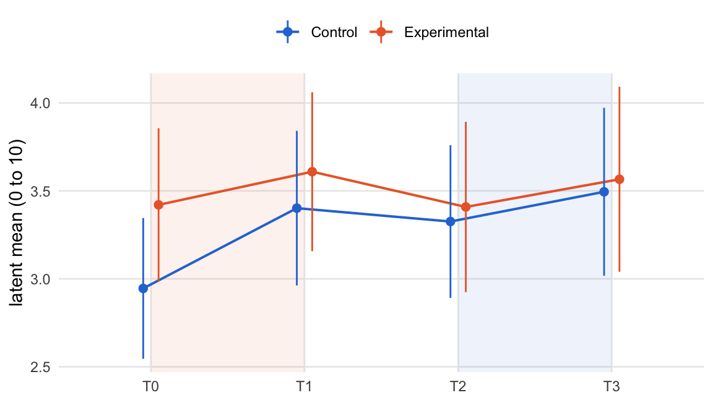
Next → Step 9, the verdict over all steps.
The verdict · Steps 9 to 12
Step 9 · The verdict
Which steps hold, under both sets of cutoffs? All steps of the construct, in all persons, in each group, and across the groups:
nis_verdict <- bind_rows(
`all persons` = fit_row(nis_all) |> mutate(level = "configural"),
control = nis_con_steps |> filter(level != "configural"),
experimental = nis_exp_steps |> filter(level != "configural"),
`both groups` = nis_both_steps |> filter(level != "over time"),
.id = "part") |>
mutate(Chen = if_else(level == "configural", fits_configural(CFI),
holds_chen(delta_CFI, delta_RMSEA)),
small_sample = if_else(level == "configural", Chen,
holds_small(level, delta_CFI, delta_RMSEA,
delta_SRMR)))
nis_verdict |>
transmute(part, level, ΔCFI = delta_CFI, ΔRMSEA = delta_RMSEA,
ΔSRMR = delta_SRMR, p, Chen = mark(Chen),
`small n` = mark(small_sample)) |>
mutate(across(where(is.double), \(x) round(x, 3)))| part | level | ΔCFI | ΔRMSEA | ΔSRMR | p | Chen | small n |
|---|---|---|---|---|---|---|---|
| all persons | configural | ✓ | ✓ | ||||
| control | loadings over time | 0.000 | 0.000 | 0.000 | ✓ | ✓ | |
| control | intercepts over time | 0.003 | -0.040 | 0.000 | 0.912 | ✓ | ✓ |
| experimental | loadings over time | 0.000 | 0.000 | 0.000 | ✓ | ✓ | |
| experimental | intercepts over time | 0.002 | -0.021 | 0.001 | 0.619 | ✓ | ✓ |
| both groups | loadings across groups | 0.000 | 0.000 | 0.000 | ✓ | ✓ | |
| both groups | intercepts across groups | 0.000 | -0.002 | 0.001 | 0.373 | ✓ | ✓ |
Under Chen’s cutoffs every step holds: the measurement of No Isolation is the same at all four waves, in each group and across the groups. The small-sample reading agrees at every step.
Step 10 · Partial invariance
Is it needed? No: under Chen’s cutoffs every step holds.
Step 11 · Alignment
How far are the eight cells from invariance when nothing is held equal? The share of loadings and intercepts (in %) more than .10 item standard deviations from their common aligned value:
nis_input <- alignment_input(nis_both_fits$configural,
model_items$NoIsolation)
nis_aligned <- invariance.alignment(lambda = nis_input$lambda,
nu = nis_input$nu, wgt = nis_input$weights)
nis_tolerance <- invariance_alignment_constraints(
nis_aligned, lambda_parm_tol = .10, nu_parm_tol = .10)
tibble(loadings = nis_tolerance$lambda_list$prop_noninvariance,
intercepts = nis_tolerance$nu_list$prop_noninvariance) |>
mutate(across(everything(), \(x) round(x, 1)))| loadings | intercepts |
|---|---|
| 0 | 0 |
Does it move the latent means? The latent mean of each cell as a distance from the control group in January, in its standard deviations, from the final model and aligned:
nis_final <- nis_both_fits$`intercepts across groups`
nis_sd_T0 <- sqrt(lavInspect(nis_final, "cov.lv")$Control["F_T0", "F_T0"])
nis_alignment_means <- parameterEstimates(nis_final) |>
filter(op == "~1", str_starts(lhs, "F_")) |>
transmute(cell = str_c(lavInspect(nis_final, "group.label")[group],
" ", str_remove(lhs, "^F_")),
final = (est - first(est)) / nis_sd_T0,
aligned = nis_aligned$pars$alpha0,
difference = aligned - final)
nis_alignment_means |>
mutate(across(where(is.double), \(x) round(x, 3)))| cell | final | aligned | difference |
|---|---|---|---|
| Control T0 | 0.000 | 0.000 | 0.000 |
| Control T1 | 0.172 | 0.181 | 0.009 |
| Control T2 | 0.143 | 0.151 | 0.008 |
| Control T3 | 0.207 | 0.213 | 0.006 |
| Experimental T0 | 0.179 | 0.180 | 0.001 |
| Experimental T1 | 0.250 | 0.262 | 0.013 |
| Experimental T2 | 0.174 | 0.178 | 0.004 |
| Experimental T3 | 0.233 | 0.246 | 0.012 |
With both loadings at 1 only the intercepts count, and 0 % of them lie more than .10 item standard deviations from their common value (below the 25 % up to which aligned means are trusted). The aligned means lie at most .013 standard deviations from those of the final model.
Step 12 · What follows
Which model goes on?
nis_status <- tibble(construct = "NoIsolation",
status = "as specified",
set_to_0 = list(character()),
freed = list(character()),
autocorrelations = list("free"),
chapter_11 = all(nis_verdict$Chen))
show_status(nis_status)| entry | value |
|---|---|
| construct | NoIsolation |
| status | as specified |
| set_to_0 | |
| freed | |
| autocorrelations | free |
| chapter_11 | TRUE |
No Isolation enters the latent comparisons of Chapter 11 as specified: its measurement is the same over the four waves and in both groups.
7.4 Cognitive complexity (H2)
Which constructs? The five constructs of the second hypothesis.
Rogerian Schema
Its path through the steps. One row per step below, judged under Chen’s cutoffs; the label marks the data of each step:
| Step | Data | Question | Result | Next |
|---|---|---|---|---|
| 2 | all persons | Configural model possible and fitting? | yes | each group |
| 3 | control | Its three models possible? | yes | over time |
| 4 | control | Loadings the same over the waves? | yes | intercepts |
| 5 | control | Intercepts the same over the waves? | yes | experimental group |
| 3 | experimental | Its three models possible? | yes, after adjustment A | over time |
| 4 | experimental | Loadings the same over the waves? | yes | intercepts |
| 5 | experimental | Intercepts the same over the waves? | yes | both groups |
| 6 | both groups | Misfit from the groups? | no, as in random halves | across the groups |
| 7 | both groups | Loadings the same in both groups? | yes | intercepts |
| 8 | both groups | Intercepts the same in both groups? | yes | verdict |
| 9–12 | Verdict | invariant | Chapter 11 |
All persons · Steps 1 and 2
Step 1 · The model
What does the model look like? The four items of Chapter 6 (1, 3, 4 and 5) at each wave, their loadings averaging 1. In the figure, the circles are the factors of the four waves, the boxes the items by number, the arrows the loadings. The arcs above link the factors; those below link each item with itself at the next wave. The links between waves further apart belong to the model as well and are left out of the figure:
plot_model("Rogerian")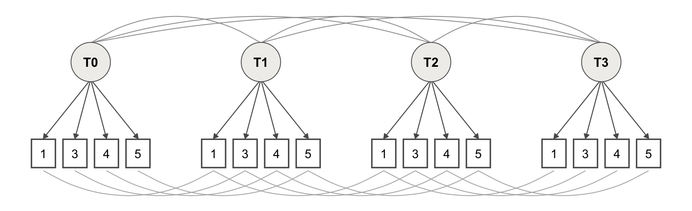
How does lavaan read it? The configural model of one group, as invariance_syntax() writes it:
rog_configural_model <- invariance_syntax(
"Rogerian", loadings = "free", intercepts = "free",
two_groups = FALSE)
cat(rog_configural_model)F_T0 =~ NA*Rogerian1_T0 +
l1_T0*Rogerian1_T0 +
l2_T0*Rogerian3_T0 +
l3_T0*Rogerian4_T0 +
l4_T0*Rogerian5_T0
F_T1 =~ NA*Rogerian1_T1 +
l1_T1*Rogerian1_T1 +
l2_T1*Rogerian3_T1 +
l3_T1*Rogerian4_T1 +
l4_T1*Rogerian5_T1
F_T2 =~ NA*Rogerian1_T2 +
l1_T2*Rogerian1_T2 +
l2_T2*Rogerian3_T2 +
l3_T2*Rogerian4_T2 +
l4_T2*Rogerian5_T2
F_T3 =~ NA*Rogerian1_T3 +
l1_T3*Rogerian1_T3 +
l2_T3*Rogerian3_T3 +
l3_T3*Rogerian4_T3 +
l4_T3*Rogerian5_T3
l1_T0 + l2_T0 + l3_T0 + l4_T0 == 4
l1_T1 + l2_T1 + l3_T1 + l4_T1 == 4
l1_T2 + l2_T2 + l3_T2 + l4_T2 == 4
l1_T3 + l2_T3 + l3_T3 + l4_T3 == 4
F_T0 ~ 0*1
F_T1 ~ 0*1
F_T2 ~ 0*1
F_T3 ~ 0*1
F_T0 ~~ F_T1
F_T0 ~~ F_T2
F_T0 ~~ F_T3
F_T1 ~~ F_T2
F_T1 ~~ F_T3
F_T2 ~~ F_T3
Rogerian1_T0 ~~ Rogerian1_T1
Rogerian1_T0 ~~ Rogerian1_T2
Rogerian1_T0 ~~ Rogerian1_T3
Rogerian1_T1 ~~ Rogerian1_T2
Rogerian1_T1 ~~ Rogerian1_T3
Rogerian1_T2 ~~ Rogerian1_T3
Rogerian3_T0 ~~ Rogerian3_T1
Rogerian3_T0 ~~ Rogerian3_T2
Rogerian3_T0 ~~ Rogerian3_T3
Rogerian3_T1 ~~ Rogerian3_T2
Rogerian3_T1 ~~ Rogerian3_T3
Rogerian3_T2 ~~ Rogerian3_T3
Rogerian4_T0 ~~ Rogerian4_T1
Rogerian4_T0 ~~ Rogerian4_T2
Rogerian4_T0 ~~ Rogerian4_T3
Rogerian4_T1 ~~ Rogerian4_T2
Rogerian4_T1 ~~ Rogerian4_T3
Rogerian4_T2 ~~ Rogerian4_T3
Rogerian5_T0 ~~ Rogerian5_T1
Rogerian5_T0 ~~ Rogerian5_T2
Rogerian5_T0 ~~ Rogerian5_T3
Rogerian5_T1 ~~ Rogerian5_T2
Rogerian5_T1 ~~ Rogerian5_T3
Rogerian5_T2 ~~ Rogerian5_T3Next → Step 2, the configural model in all persons.
Step 2 · The configural model all persons
What is fitted? The model of Step 1, with loadings and intercepts free at every wave, in all persons together:
rog_all <- df_wide |>
cfa(model = rog_configural_model, data = _, estimator = "MLR",
missing = "fiml")Does it pass the checks? The eleven checks of 7.1, in their order:
rog_all_checks <- model_checks(rog_all, judge_fit = TRUE)
rog_all_checks| check | what | value | criterion | holds |
|---|---|---|---|---|
| 1 estimation | converged | yes | yes | ✓ |
| 2 variances | smallest residual variance: item 4 at T3 | .171 | above 0 | ✓ |
| 3 correlations | largest correlation: the factors at T0 and T1 | .656 | within ±1 | ✓ |
| 4 residuals | smallest eigenvalue of the residual covariances | .136 | above 0 | ✓ |
| 5 factors | smallest eigenvalue of the factor covariances | .338 | above 0 | ✓ |
| 6 standard errors | estimated for every free parameter | yes | yes | ✓ |
| 7 fit | CFI | .927 | at least .90 | ✓ |
| 8 fit | RMSEA [90 % interval] | .083 [.073, .093] | reported | – |
| 9 fit | SRMR | .061 | reported | – |
| 10 strain | largest modification index: item 4 with item 5 at T3 | 58.0 | reported | – |
| 11 estimates | smallest standardized loading: item 1 at T0 | .67 | reported | – |
Every check that decides holds: the estimation converged, the solution is proper (checks 1 to 6), and the model fits (CFI = .927, at least .90). Checks 8 to 11 are reported; Step 6 returns to the fit, and Steps 4, 5, 7 and 8 to the loadings.
Are the estimates sensible? The standardized loading of every item at every wave, and the correlations of the factors:
loading_table(rog_all)| item | T0 | T1 | T2 | T3 |
|---|---|---|---|---|
| item 1 | 0.67 | 0.71 | 0.71 | 0.73 |
| item 3 | 0.86 | 0.86 | 0.80 | 0.84 |
| item 4 | 0.91 | 0.86 | 0.82 | 0.92 |
| item 5 | 0.84 | 0.80 | 0.79 | 0.82 |
factor_correlations(rog_all)| T0–T1 | T0–T2 | T0–T3 | T1–T2 | T1–T3 | T2–T3 |
|---|---|---|---|---|---|
| 0.66 | 0.44 | 0.54 | 0.38 | 0.4 | 0.58 |
Every item loads between .67 and .92, and the factors of neighbouring waves correlate between .38 and .66. Why are loadings and intercepts not tested here? The groups were trained at different waves, so a model of all persons would average a trained and an untrained group at the same wave (7.1). All persons show only whether one factor per wave describes the items; the tests over time follow in each group, and then across the groups.
Next → Steps 3 to 5, each group on its own: first the control group, then the experimental group.
Control group · Steps 3 to 5
The 252 persons of the control group, trained between September and December.
Step 3 · The checks control
What is fitted? The three models of this group: configural, with equal loadings over the waves (Step 4), and with equal intercepts as well (Step 5):
rog_con_models <- time_steps |>
pmap(\(level, loadings, intercepts) invariance_syntax(
"Rogerian", loadings, intercepts, two_groups = FALSE)) |>
set_names(time_steps$level)
rog_con_fits <- rog_con_models |>
map(\(model) control |>
cfa(model = model, data = _, estimator = "MLR", missing = "fiml"))Does the configural model pass the checks? The eleven checks of 7.1:
rog_con_checks <- model_checks(rog_con_fits$configural)
rog_con_checks| check | what | value | criterion | holds |
|---|---|---|---|---|
| 1 estimation | converged | yes | yes | ✓ |
| 2 variances | smallest residual variance: item 4 at T3 | .112 | above 0 | ✓ |
| 3 correlations | largest correlation: item 5, T1 with T3 | .697 | within ±1 | ✓ |
| 4 residuals | smallest eigenvalue of the residual covariances | .087 | above 0 | ✓ |
| 5 factors | smallest eigenvalue of the factor covariances | .264 | above 0 | ✓ |
| 6 standard errors | estimated for every free parameter | yes | yes | ✓ |
| 7 fit | CFI | .910 | reported | – |
| 8 fit | RMSEA [90 % interval] | .099 [.086, .112] | reported | – |
| 9 fit | SRMR | .098 | reported | – |
| 10 strain | largest modification index: item 1 with item 5 at T2 | 59.7 | reported | – |
| 11 estimates | smallest standardized loading: item 3 at T2 | .70 | reported | – |
Checks 1 to 6 hold: the solution is proper. Its fit is reported (checks 7 to 9); whether one factor per wave describes the items was judged once, in all persons (Step 2). Are the other two models possible as well? Checks 1 to 6 of all three:
possible_table(rog_con_fits)| model | estimation | variances | correlations | residuals | factors | standard errors |
|---|---|---|---|---|---|---|
| configural | ✓ | ✓ | ✓ | ✓ | ✓ | ✓ |
| loadings over time | ✓ | ✓ | ✓ | ✓ | ✓ | ✓ |
| intercepts over time | ✓ | ✓ | ✓ | ✓ | ✓ | ✓ |
All three are possible as specified.
Next → Step 4, the loadings over time in this group.
Step 4 · Loadings over time control
Do the loadings stay the same? Each item keeps one loading over the four waves:
rog_con_steps <- step_table(rog_con_fits)
show_steps(rog_con_steps, "loadings over time")| level | df | CFI | ΔCFI | ΔRMSEA | ΔSRMR | p |
|---|---|---|---|---|---|---|
| loadings over time | 83 | 0.904 | -0.006 | -0.002 | 0.007 | 0.806 |
They do under Chen’s cutoffs (ΔCFI = -.006), though not under those of the small-sample reading, and the χ² test does not reject them (p = .806).
Next → Step 5, with the loadings held equal over the waves.
Step 5 · Intercepts over time control
Do the intercepts stay the same? Each item keeps one intercept over the four waves; the latent means are freed:
rog_con_steps <- step_table(rog_con_fits)
show_steps(rog_con_steps, "intercepts over time")| level | df | CFI | ΔCFI | ΔRMSEA | ΔSRMR | p |
|---|---|---|---|---|---|---|
| intercepts over time | 92 | 0.897 | -0.007 | -0.001 | 0.003 | 0 |
They do under Chen’s cutoffs (ΔCFI = -.007), though not under those of the small-sample reading; the χ² test, which detects small differences, rejects them (p < .001).
Next → Steps 3 to 5 in the experimental group.
Experimental group · Steps 3 to 5
The 199 persons of the experimental group, trained between January and March.
Step 3 · The checks experimental
What is fitted? The three models of this group: configural, with equal loadings over the waves (Step 4), and with equal intercepts as well (Step 5):
rog_exp_models <- time_steps |>
pmap(\(level, loadings, intercepts) invariance_syntax(
"Rogerian", loadings, intercepts, two_groups = FALSE)) |>
set_names(time_steps$level)
rog_exp_fits <- rog_exp_models |>
map(\(model) experimental |>
cfa(model = model, data = _, estimator = "MLR", missing = "fiml"))Does the configural model pass the checks? The eleven checks of 7.1:
rog_exp_checks <- model_checks(rog_exp_fits$configural)
rog_exp_checks| check | what | value | criterion | holds |
|---|---|---|---|---|
| 1 estimation | converged | yes | yes | ✓ |
| 2 variances | smallest residual variance: item 3 at T3 | .026 | above 0 | ✓ |
| 3 correlations | largest correlation: item 4, T2 with T3 | .849 | within ±1 | ✓ |
| 4 residuals | smallest eigenvalue of the residual covariances | .008 | above 0 | ✓ |
| 5 factors | smallest eigenvalue of the factor covariances | .254 | above 0 | ✓ |
| 6 standard errors | estimated for every free parameter | yes | yes | ✓ |
| 7 fit | CFI | .853 | reported | – |
| 8 fit | RMSEA [90 % interval] | .120 [.105, .135] | reported | – |
| 9 fit | SRMR | .092 | reported | – |
| 10 strain | largest modification index: item 1 with item 3 at T3 | 39.1 | reported | – |
| 11 estimates | smallest standardized loading: item 1 at T0 | .57 | reported | – |
Checks 1 to 6 hold: the solution is proper. Its fit is reported (checks 7 to 9); whether one factor per wave describes the items was judged once, in all persons (Step 2). Are the other two models possible as well? Checks 1 to 6 of all three:
possible_table(rog_exp_fits)| model | estimation | variances | correlations | residuals | factors | standard errors |
|---|---|---|---|---|---|---|
| configural | ✓ | ✓ | ✓ | ✓ | ✓ | ✓ |
| loadings over time | ✓ | ✗ | ✗ | ✗ | ✓ | ✓ |
| intercepts over time | ✓ | ✗ | ✗ | ✗ | ✓ | ✓ |
Not all are possible. Where is the problem? The estimates beyond their range in every model that is not possible, with their intervals; the figure shows them in the first of these models:
rog_exp_boundary <- rog_exp_fits |>
map(boundary_estimates) |>
list_rbind(names_to = "level")
rog_exp_first <- rog_exp_boundary$level[1]
rog_exp_flagged <- rog_exp_boundary |>
filter(level == rog_exp_first) |>
pull(key)
plot_model("Rogerian", rog_exp_fits[[rog_exp_first]],
flagged = rog_exp_flagged)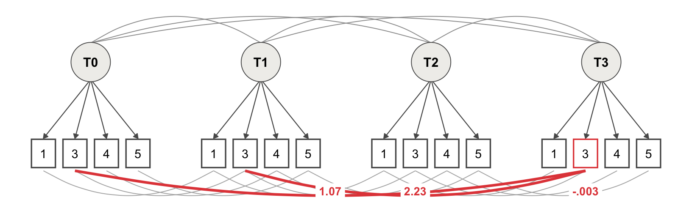
rog_exp_boundary |>
select(-key) |>
mutate(across(where(is.double), \(x) round(x, 2)))| level | estimate | value | se | ci.lower | ci.upper |
|---|---|---|---|---|---|
| loadings over time | residual variance: item 3 at T3 | 0.00 | 0.05 | -0.11 | 0.10 |
| loadings over time | correlation: item 3, T0 with T3 | 1.07 | 10.80 | -20.10 | 22.24 |
| loadings over time | correlation: item 3, T1 with T3 | 2.23 | 21.46 | -39.83 | 44.30 |
| intercepts over time | residual variance: item 3 at T3 | 0.00 | 0.06 | -0.12 | 0.11 |
| intercepts over time | correlation: item 3, T0 with T3 | 1.09 | 13.00 | -24.40 | 26.58 |
| intercepts over time | correlation: item 3, T1 with T3 | 2.24 | 25.44 | -47.62 | 52.11 |
Is it within sampling error? Each estimate against the bound it crosses, with its 95 % interval, in every model where it occurs:
rog_exp_boundary |>
mutate(estimate = str_c(estimate, " (", level, ")")) |>
plot_boundary()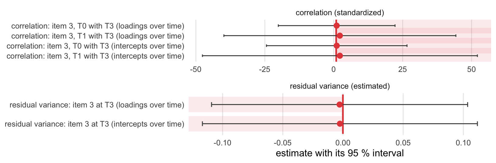
Every interval reaches back across its bound into the possible range: what sampling error produces near a bound, in a group whose waves rest on a hundred to two hundred persons each (Kolenikov & Bollen, 2012). What does the stop rule do? Adjustment A: these estimates at 0 (a negative variance together with the links of its residual to the other waves). In the syntax of each of the three models, these lines are added (shown for the configural model):
rog_exp_specified <- rog_exp_models$configural
rog_exp_zero <- c(
"Experimental: Rogerian3_T3 ~~ Rogerian3_T3",
"Experimental: Rogerian3_T0 ~~ Rogerian3_T3",
"Experimental: Rogerian3_T1 ~~ Rogerian3_T3",
"Experimental: Rogerian3_T2 ~~ Rogerian3_T3")
rog_exp_models <- time_steps |>
pmap(\(level, loadings, intercepts) invariance_syntax(
"Rogerian", loadings, intercepts, two_groups = FALSE,
zero = rog_exp_zero)) |>
set_names(time_steps$level)
rog_exp_fits <- rog_exp_models |>
map(\(model) experimental |>
cfa(model = model, data = _, estimator = "MLR", missing = "fiml"))
syntax_changes(rog_exp_specified, rog_exp_models$configural)+ Rogerian3_T3 ~~ 0*Rogerian3_T3
+ Rogerian3_T0 ~~ 0*Rogerian3_T3
+ Rogerian3_T1 ~~ 0*Rogerian3_T3
+ Rogerian3_T2 ~~ 0*Rogerian3_T3Are the adjusted models possible? In the figure of the model that failed first, the estimates set at 0 are green; then checks 1 to 6 of all three:
plot_model("Rogerian", rog_exp_fits[[rog_exp_first]],
fixed = str_remove(rog_exp_zero, "^[A-Za-z]+: "))possible_table(rog_exp_fits)| model | estimation | variances | correlations | residuals | factors | standard errors |
|---|---|---|---|---|---|---|
| configural | ✓ | ✓ | ✓ | ✓ | ✓ | ✓ |
| loadings over time | ✓ | ✓ | ✓ | ✓ | ✓ | ✓ |
| intercepts over time | ✓ | ✓ | ✓ | ✓ | ✓ | ✓ |
All three are possible now; the steps go on with adjustment A.
Next → Step 4, the loadings over time in this group, with adjustment A.
Step 4 · Loadings over time experimental
Do the loadings stay the same? Each item keeps one loading over the four waves:
rog_exp_steps <- step_table(rog_exp_fits)
show_steps(rog_exp_steps, "loadings over time")| level | df | CFI | ΔCFI | ΔRMSEA | ΔSRMR | p |
|---|---|---|---|---|---|---|
| loadings over time | 87 | 0.842 | -0.009 | -0.003 | 0.017 | 0.187 |
They do under Chen’s cutoffs (ΔCFI = -.009), though not under those of the small-sample reading, and the χ² test does not reject them (p = .187).
Next → Step 5, with the loadings held equal over the waves.
Step 5 · Intercepts over time experimental
Do the intercepts stay the same? Each item keeps one intercept over the four waves; the latent means are freed:
rog_exp_steps <- step_table(rog_exp_fits)
show_steps(rog_exp_steps, "intercepts over time")| level | df | CFI | ΔCFI | ΔRMSEA | ΔSRMR | p |
|---|---|---|---|---|---|---|
| intercepts over time | 96 | 0.839 | -0.004 | -0.004 | 0.002 | 0.006 |
They do, under both sets of cutoffs (ΔCFI = -.004); the χ² test, which detects small differences, rejects them (p = .006).
Next → Step 6, both groups together, each with what it needed.
Both groups · Steps 6 to 8
Both groups together, with what each group needed.
Step 6 · Do the groups add misfit? both groups
How well does the configural model fit in the two groups, and in random halves of the persons?
rog_zero <- rog_exp_zero # the control group needs none
rog_both_models <- group_steps |>
pmap(\(level, loadings, intercepts) invariance_syntax(
"Rogerian", loadings, intercepts, zero = rog_zero)) |>
set_names(group_steps$level)
rog_both_fits <- rog_both_models |>
map(\(model) df_wide |>
cfa(model = model, data = _, group = "condition",
estimator = "MLR", missing = "fiml"))
rog_halves <- c(`random halves 1` = 1, `random halves 2` = 2,
`random halves 3` = 3) |>
map(\(seed) {
set.seed(seed)
df_wide |>
mutate(condition = sample(condition)) |>
cfa(model = rog_both_models$configural, data = _, group = "condition",
estimator = "MLR", missing = "fiml")
})
rog_fit_table <- c(list(`two groups` = rog_both_fits$configural),
rog_halves) |>
map(fit_row) |>
list_rbind(names_to = "model")
rog_fit_table |>
mutate(across(where(is.double), \(x) round(x, 3)))| model | chisq | df | CFI | RMSEA | SRMR |
|---|---|---|---|---|---|
| two groups | 460.683 | 152 | 0.886 | 0.108 | 0.094 |
| random halves 1 | 300.415 | 152 | 0.915 | 0.092 | 0.075 |
| random halves 2 | 480.870 | 152 | 0.873 | 0.114 | 0.091 |
| random halves 3 | 456.769 | 152 | 0.871 | 0.115 | 0.089 |
Are all four models of both groups possible? Checks 1 to 6 of each:
possible_table(rog_both_fits)| model | estimation | variances | correlations | residuals | factors | standard errors |
|---|---|---|---|---|---|---|
| configural | ✓ | ✓ | ✓ | ✓ | ✓ | ✓ |
| over time | ✓ | ✓ | ✓ | ✓ | ✓ | ✓ |
| loadings across groups | ✓ | ✓ | ✓ | ✓ | ✓ | ✓ |
| intercepts across groups | ✓ | ✓ | ✓ | ✓ | ✓ | ✓ |
All four models of both groups are possible. In the two groups the CFI is .886, against .927 in all persons, and random halves of the persons fit no better (.871 to .915): what the groups lose comes from halving the sample, not from the groups.
Next → Step 7, the loadings across the groups.
Step 7 · Loadings across the groups both groups
Are the loadings the same in both groups?
rog_both_steps <- step_table(rog_both_fits[-1])
show_steps(rog_both_steps, "loadings across groups")| level | df | CFI | ΔCFI | ΔRMSEA | ΔSRMR | p |
|---|---|---|---|---|---|---|
| loadings across groups | 191 | 0.87 | -0.002 | 0 | 0.002 | 0.208 |
They are, under both sets of cutoffs (ΔCFI = -.002), and the χ² test does not reject them (p = .208).
Next → Step 8, the intercepts across the groups, with the loadings held equal.
Step 8 · Intercepts across the groups both groups
Are the intercepts the same in both groups? Each item keeps one intercept, in every cell:
show_steps(rog_both_steps, "intercepts across groups")| level | df | CFI | ΔCFI | ΔRMSEA | ΔSRMR | p |
|---|---|---|---|---|---|---|
| intercepts across groups | 194 | 0.871 | 0 | -0.001 | 0 | 0.471 |
They are, under both sets of cutoffs (ΔCFI = .000), and the χ² test does not reject them (p = .471).
Where do the latent means lie? In the final model, on the 0 to 10 scale of the items:
plot_latent_means(rog_both_fits$`intercepts across groups`)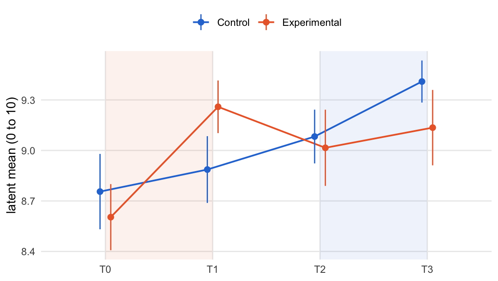
Next → Step 9, the verdict over all steps.
The verdict · Steps 9 to 12
Step 9 · The verdict
Which steps hold, under both sets of cutoffs? All steps of the construct, in all persons, in each group, and across the groups:
rog_verdict <- bind_rows(
`all persons` = fit_row(rog_all) |> mutate(level = "configural"),
control = rog_con_steps |> filter(level != "configural"),
experimental = rog_exp_steps |> filter(level != "configural"),
`both groups` = rog_both_steps |> filter(level != "over time"),
.id = "part") |>
mutate(Chen = if_else(level == "configural", fits_configural(CFI),
holds_chen(delta_CFI, delta_RMSEA)),
small_sample = if_else(level == "configural", Chen,
holds_small(level, delta_CFI, delta_RMSEA,
delta_SRMR)))
rog_verdict |>
transmute(part, level, ΔCFI = delta_CFI, ΔRMSEA = delta_RMSEA,
ΔSRMR = delta_SRMR, p, Chen = mark(Chen),
`small n` = mark(small_sample)) |>
mutate(across(where(is.double), \(x) round(x, 3)))| part | level | ΔCFI | ΔRMSEA | ΔSRMR | p | Chen | small n |
|---|---|---|---|---|---|---|---|
| all persons | configural | ✓ | ✓ | ||||
| control | loadings over time | -0.006 | -0.002 | 0.007 | 0.806 | ✓ | ✗ |
| control | intercepts over time | -0.007 | -0.001 | 0.003 | 0.000 | ✓ | ✗ |
| experimental | loadings over time | -0.009 | -0.003 | 0.017 | 0.187 | ✓ | ✗ |
| experimental | intercepts over time | -0.004 | -0.004 | 0.002 | 0.006 | ✓ | ✓ |
| both groups | loadings across groups | -0.002 | 0.000 | 0.002 | 0.208 | ✓ | ✓ |
| both groups | intercepts across groups | 0.000 | -0.001 | 0.000 | 0.471 | ✓ | ✓ |
Under Chen’s cutoffs every step holds: the measurement of Rogerian Schema is the same at all four waves, in each group and across the groups. The small-sample reading would stop at three steps: the loadings over time in the control group, the intercepts over time in the control group, and the loadings over time in the experimental group.
Step 10 · Partial invariance
Is it needed? No: under Chen’s cutoffs every step holds.
Step 11 · Alignment
How far are the eight cells from invariance when nothing is held equal? The share of loadings and intercepts (in %) more than .10 item standard deviations from their common aligned value:
rog_input <- alignment_input(rog_both_fits$configural,
model_items$Rogerian)
rog_aligned <- invariance.alignment(lambda = rog_input$lambda,
nu = rog_input$nu, wgt = rog_input$weights)
rog_tolerance <- invariance_alignment_constraints(
rog_aligned, lambda_parm_tol = .10, nu_parm_tol = .10)
tibble(loadings = rog_tolerance$lambda_list$prop_noninvariance,
intercepts = rog_tolerance$nu_list$prop_noninvariance) |>
mutate(across(everything(), \(x) round(x, 1)))| loadings | intercepts |
|---|---|
| 31.2 | 18.8 |
Does it move the latent means? The latent mean of each cell as a distance from the control group in January, in its standard deviations, from the final model and aligned:
rog_final <- rog_both_fits$`intercepts across groups`
rog_sd_T0 <- sqrt(lavInspect(rog_final, "cov.lv")$Control["F_T0", "F_T0"])
rog_alignment_means <- parameterEstimates(rog_final) |>
filter(op == "~1", str_starts(lhs, "F_")) |>
transmute(cell = str_c(lavInspect(rog_final, "group.label")[group],
" ", str_remove(lhs, "^F_")),
final = (est - first(est)) / rog_sd_T0,
aligned = rog_aligned$pars$alpha0,
difference = aligned - final)
rog_alignment_means |>
mutate(across(where(is.double), \(x) round(x, 3)))| cell | final | aligned | difference |
|---|---|---|---|
| Control T0 | 0.000 | 0.000 | 0.000 |
| Control T1 | 0.093 | 0.089 | -0.004 |
| Control T2 | 0.231 | 0.165 | -0.067 |
| Control T3 | 0.463 | 0.434 | -0.028 |
| Experimental T0 | -0.107 | -0.169 | -0.062 |
| Experimental T1 | 0.356 | 0.344 | -0.013 |
| Experimental T2 | 0.184 | 0.106 | -0.078 |
| Experimental T3 | 0.269 | 0.141 | -0.128 |
31.2 % of the loadings and 18.8 % of the intercepts lie more than .10 item standard deviations from their common value (more than the 25 % up to which aligned means are trusted). The aligned means lie at most .128 standard deviations from those of the final model.
Step 12 · What follows
Which model goes on?
rog_status <- tibble(construct = "Rogerian",
status = "adjusted (A)",
set_to_0 = list(rog_zero),
freed = list(character()),
autocorrelations = list("free"),
chapter_11 = all(rog_verdict$Chen))
show_status(rog_status)| entry | value |
|---|---|
| construct | Rogerian |
| status | adjusted (A) |
| set_to_0 | Experimental: Rogerian3_T3 ~~ Rogerian3_T3; Experimental: Rogerian3_T0 ~~ Rogerian3_T3; Experimental: Rogerian3_T1 ~~ Rogerian3_T3; Experimental: Rogerian3_T2 ~~ Rogerian3_T3 |
| freed | |
| autocorrelations | free |
| chapter_11 | TRUE |
Rogerian Schema enters the latent comparisons of Chapter 11 with adjustment A: its measurement is the same over the four waves and in both groups.
Paradox Mindset
Its path through the steps. One row per step below, judged under Chen’s cutoffs; the label marks the data of each step:
| Step | Data | Question | Result | Next |
|---|---|---|---|---|
| 2 | all persons | Configural model possible and fitting? | yes | each group |
| 3 | control | Its three models possible? | yes | over time |
| 4 | control | Loadings the same over the waves? | yes | intercepts |
| 5 | control | Intercepts the same over the waves? | yes | experimental group |
| 3 | experimental | Its three models possible? | yes | over time |
| 4 | experimental | Loadings the same over the waves? | yes | intercepts |
| 5 | experimental | Intercepts the same over the waves? | yes | both groups |
| 6 | both groups | Misfit from the groups? | no, as in random halves | across the groups |
| 7 | both groups | Loadings the same in both groups? | yes | intercepts |
| 8 | both groups | Intercepts the same in both groups? | yes | verdict |
| 9–12 | Verdict | invariant | Chapter 11 |
All persons · Steps 1 and 2
Step 1 · The model
What does the model look like? The eight items of Chapter 6 (2, 3, 4, 5, 6, 7, 8 and 9) at each wave, their loadings averaging 1, with the residual covariances of items 4 and 5 and of items 2 and 7 at every wave. In the figure, the circles are the factors of the four waves, the boxes the items by number, the arrows the loadings. The arcs above link the factors; those below link each item with itself at the next wave, the dashed ones the residual covariances within a wave. The links between waves further apart belong to the model as well and are left out of the figure:
plot_model("ParadoxMindset")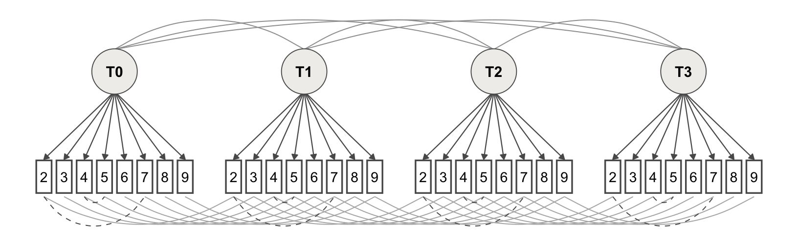
How does lavaan read it? The configural model of one group, as invariance_syntax() writes it:
pm_configural_model <- invariance_syntax(
"ParadoxMindset", loadings = "free", intercepts = "free",
two_groups = FALSE)
cat(pm_configural_model)F_T0 =~ NA*ParadoxMindset2_T0 +
l1_T0*ParadoxMindset2_T0 +
l2_T0*ParadoxMindset3_T0 +
l3_T0*ParadoxMindset4_T0 +
l4_T0*ParadoxMindset5_T0 +
l5_T0*ParadoxMindset6_T0 +
l6_T0*ParadoxMindset7_T0 +
l7_T0*ParadoxMindset8_T0 +
l8_T0*ParadoxMindset9_T0
F_T1 =~ NA*ParadoxMindset2_T1 +
l1_T1*ParadoxMindset2_T1 +
l2_T1*ParadoxMindset3_T1 +
l3_T1*ParadoxMindset4_T1 +
l4_T1*ParadoxMindset5_T1 +
l5_T1*ParadoxMindset6_T1 +
l6_T1*ParadoxMindset7_T1 +
l7_T1*ParadoxMindset8_T1 +
l8_T1*ParadoxMindset9_T1
F_T2 =~ NA*ParadoxMindset2_T2 +
l1_T2*ParadoxMindset2_T2 +
l2_T2*ParadoxMindset3_T2 +
l3_T2*ParadoxMindset4_T2 +
l4_T2*ParadoxMindset5_T2 +
l5_T2*ParadoxMindset6_T2 +
l6_T2*ParadoxMindset7_T2 +
l7_T2*ParadoxMindset8_T2 +
l8_T2*ParadoxMindset9_T2
F_T3 =~ NA*ParadoxMindset2_T3 +
l1_T3*ParadoxMindset2_T3 +
l2_T3*ParadoxMindset3_T3 +
l3_T3*ParadoxMindset4_T3 +
l4_T3*ParadoxMindset5_T3 +
l5_T3*ParadoxMindset6_T3 +
l6_T3*ParadoxMindset7_T3 +
l7_T3*ParadoxMindset8_T3 +
l8_T3*ParadoxMindset9_T3
l1_T0 + l2_T0 + l3_T0 + l4_T0 + l5_T0 + l6_T0 + l7_T0 + l8_T0 == 8
l1_T1 + l2_T1 + l3_T1 + l4_T1 + l5_T1 + l6_T1 + l7_T1 + l8_T1 == 8
l1_T2 + l2_T2 + l3_T2 + l4_T2 + l5_T2 + l6_T2 + l7_T2 + l8_T2 == 8
l1_T3 + l2_T3 + l3_T3 + l4_T3 + l5_T3 + l6_T3 + l7_T3 + l8_T3 == 8
F_T0 ~ 0*1
F_T1 ~ 0*1
F_T2 ~ 0*1
F_T3 ~ 0*1
F_T0 ~~ F_T1
F_T0 ~~ F_T2
F_T0 ~~ F_T3
F_T1 ~~ F_T2
F_T1 ~~ F_T3
F_T2 ~~ F_T3
ParadoxMindset4_T0 ~~ ParadoxMindset5_T0
ParadoxMindset4_T1 ~~ ParadoxMindset5_T1
ParadoxMindset4_T2 ~~ ParadoxMindset5_T2
ParadoxMindset4_T3 ~~ ParadoxMindset5_T3
ParadoxMindset2_T0 ~~ ParadoxMindset7_T0
ParadoxMindset2_T1 ~~ ParadoxMindset7_T1
ParadoxMindset2_T2 ~~ ParadoxMindset7_T2
ParadoxMindset2_T3 ~~ ParadoxMindset7_T3
ParadoxMindset2_T0 ~~ ParadoxMindset2_T1
ParadoxMindset2_T0 ~~ ParadoxMindset2_T2
ParadoxMindset2_T0 ~~ ParadoxMindset2_T3
ParadoxMindset2_T1 ~~ ParadoxMindset2_T2
ParadoxMindset2_T1 ~~ ParadoxMindset2_T3
ParadoxMindset2_T2 ~~ ParadoxMindset2_T3
ParadoxMindset3_T0 ~~ ParadoxMindset3_T1
ParadoxMindset3_T0 ~~ ParadoxMindset3_T2
ParadoxMindset3_T0 ~~ ParadoxMindset3_T3
ParadoxMindset3_T1 ~~ ParadoxMindset3_T2
ParadoxMindset3_T1 ~~ ParadoxMindset3_T3
ParadoxMindset3_T2 ~~ ParadoxMindset3_T3
ParadoxMindset4_T0 ~~ ParadoxMindset4_T1
ParadoxMindset4_T0 ~~ ParadoxMindset4_T2
ParadoxMindset4_T0 ~~ ParadoxMindset4_T3
ParadoxMindset4_T1 ~~ ParadoxMindset4_T2
ParadoxMindset4_T1 ~~ ParadoxMindset4_T3
ParadoxMindset4_T2 ~~ ParadoxMindset4_T3
ParadoxMindset5_T0 ~~ ParadoxMindset5_T1
ParadoxMindset5_T0 ~~ ParadoxMindset5_T2
ParadoxMindset5_T0 ~~ ParadoxMindset5_T3
ParadoxMindset5_T1 ~~ ParadoxMindset5_T2
ParadoxMindset5_T1 ~~ ParadoxMindset5_T3
ParadoxMindset5_T2 ~~ ParadoxMindset5_T3
ParadoxMindset6_T0 ~~ ParadoxMindset6_T1
ParadoxMindset6_T0 ~~ ParadoxMindset6_T2
ParadoxMindset6_T0 ~~ ParadoxMindset6_T3
ParadoxMindset6_T1 ~~ ParadoxMindset6_T2
ParadoxMindset6_T1 ~~ ParadoxMindset6_T3
ParadoxMindset6_T2 ~~ ParadoxMindset6_T3
ParadoxMindset7_T0 ~~ ParadoxMindset7_T1
ParadoxMindset7_T0 ~~ ParadoxMindset7_T2
ParadoxMindset7_T0 ~~ ParadoxMindset7_T3
ParadoxMindset7_T1 ~~ ParadoxMindset7_T2
ParadoxMindset7_T1 ~~ ParadoxMindset7_T3
ParadoxMindset7_T2 ~~ ParadoxMindset7_T3
ParadoxMindset8_T0 ~~ ParadoxMindset8_T1
ParadoxMindset8_T0 ~~ ParadoxMindset8_T2
ParadoxMindset8_T0 ~~ ParadoxMindset8_T3
ParadoxMindset8_T1 ~~ ParadoxMindset8_T2
ParadoxMindset8_T1 ~~ ParadoxMindset8_T3
ParadoxMindset8_T2 ~~ ParadoxMindset8_T3
ParadoxMindset9_T0 ~~ ParadoxMindset9_T1
ParadoxMindset9_T0 ~~ ParadoxMindset9_T2
ParadoxMindset9_T0 ~~ ParadoxMindset9_T3
ParadoxMindset9_T1 ~~ ParadoxMindset9_T2
ParadoxMindset9_T1 ~~ ParadoxMindset9_T3
ParadoxMindset9_T2 ~~ ParadoxMindset9_T3Next → Step 2, the configural model in all persons.
Step 2 · The configural model all persons
What is fitted? The model of Step 1, with loadings and intercepts free at every wave, in all persons together:
pm_all <- df_wide |>
cfa(model = pm_configural_model, data = _, estimator = "MLR",
missing = "fiml")Does it pass the checks? The eleven checks of 7.1, in their order:
pm_all_checks <- model_checks(pm_all, judge_fit = TRUE)
pm_all_checks| check | what | value | criterion | holds |
|---|---|---|---|---|
| 1 estimation | converged | yes | yes | ✓ |
| 2 variances | smallest residual variance: item 9 at T3 | 1.402 | above 0 | ✓ |
| 3 correlations | largest correlation: item 4, T2 with T3 | .673 | within ±1 | ✓ |
| 4 residuals | smallest eigenvalue of the residual covariances | 1.177 | above 0 | ✓ |
| 5 factors | smallest eigenvalue of the factor covariances | 1.057 | above 0 | ✓ |
| 6 standard errors | estimated for every free parameter | yes | yes | ✓ |
| 7 fit | CFI | .905 | at least .90 | ✓ |
| 8 fit | RMSEA [90 % interval] | .049 [.044, .054] | reported | – |
| 9 fit | SRMR | .069 | reported | – |
| 10 strain | largest modification index: item 2 with item 3 at T2 | 24.3 | reported | – |
| 11 estimates | smallest standardized loading: item 4 at T3 | .50 | reported | – |
Every check that decides holds: the estimation converged, the solution is proper (checks 1 to 6), and the model fits (CFI = .905, at least .90). Checks 8 to 11 are reported; Step 6 returns to the fit, and Steps 4, 5, 7 and 8 to the loadings.
Are the estimates sensible? The standardized loading of every item at every wave, and the correlations of the factors:
loading_table(pm_all)| item | T0 | T1 | T2 | T3 |
|---|---|---|---|---|
| item 2 | 0.50 | 0.57 | 0.53 | 0.55 |
| item 3 | 0.61 | 0.63 | 0.66 | 0.67 |
| item 4 | 0.62 | 0.51 | 0.61 | 0.50 |
| item 5 | 0.73 | 0.76 | 0.76 | 0.76 |
| item 6 | 0.73 | 0.72 | 0.75 | 0.82 |
| item 7 | 0.71 | 0.74 | 0.76 | 0.85 |
| item 8 | 0.66 | 0.71 | 0.71 | 0.67 |
| item 9 | 0.61 | 0.58 | 0.64 | 0.71 |
factor_correlations(pm_all)| T0–T1 | T0–T2 | T0–T3 | T1–T2 | T1–T3 | T2–T3 |
|---|---|---|---|---|---|
| 0.63 | 0.58 | 0.45 | 0.59 | 0.49 | 0.55 |
Every item loads between .50 and .85, and the factors of neighbouring waves correlate between .55 and .63. Why are loadings and intercepts not tested here? The groups were trained at different waves, so a model of all persons would average a trained and an untrained group at the same wave (7.1). All persons show only whether one factor per wave describes the items; the tests over time follow in each group, and then across the groups.
Next → Steps 3 to 5, each group on its own: first the control group, then the experimental group.
Control group · Steps 3 to 5
The 252 persons of the control group, trained between September and December.
Step 3 · The checks control
What is fitted? The three models of this group: configural, with equal loadings over the waves (Step 4), and with equal intercepts as well (Step 5):
pm_con_models <- time_steps |>
pmap(\(level, loadings, intercepts) invariance_syntax(
"ParadoxMindset", loadings, intercepts, two_groups = FALSE)) |>
set_names(time_steps$level)
pm_con_fits <- pm_con_models |>
map(\(model) control |>
cfa(model = model, data = _, estimator = "MLR", missing = "fiml"))Does the configural model pass the checks? The eleven checks of 7.1:
pm_con_checks <- model_checks(pm_con_fits$configural)
pm_con_checks| check | what | value | criterion | holds |
|---|---|---|---|---|
| 1 estimation | converged | yes | yes | ✓ |
| 2 variances | smallest residual variance: item 9 at T3 | 1.398 | above 0 | ✓ |
| 3 correlations | largest correlation: the factors at T0 and T1 | .712 | within ±1 | ✓ |
| 4 residuals | smallest eigenvalue of the residual covariances | .944 | above 0 | ✓ |
| 5 factors | smallest eigenvalue of the factor covariances | .709 | above 0 | ✓ |
| 6 standard errors | estimated for every free parameter | yes | yes | ✓ |
| 7 fit | CFI | .879 | reported | – |
| 8 fit | RMSEA [90 % interval] | .060 [.054, .067] | reported | – |
| 9 fit | SRMR | .083 | reported | – |
| 10 strain | largest modification index: item 6 with item 7 at T3 | 16.1 | reported | – |
| 11 estimates | smallest standardized loading: item 4 at T1 | .42 | reported | – |
Checks 1 to 6 hold: the solution is proper. Its fit is reported (checks 7 to 9); whether one factor per wave describes the items was judged once, in all persons (Step 2). Are the other two models possible as well? Checks 1 to 6 of all three:
possible_table(pm_con_fits)| model | estimation | variances | correlations | residuals | factors | standard errors |
|---|---|---|---|---|---|---|
| configural | ✓ | ✓ | ✓ | ✓ | ✓ | ✓ |
| loadings over time | ✓ | ✓ | ✓ | ✓ | ✓ | ✓ |
| intercepts over time | ✓ | ✓ | ✓ | ✓ | ✓ | ✓ |
All three are possible as specified.
Next → Step 4, the loadings over time in this group.
Step 4 · Loadings over time control
Do the loadings stay the same? Each item keeps one loading over the four waves:
pm_con_steps <- step_table(pm_con_fits)
show_steps(pm_con_steps, "loadings over time")| level | df | CFI | ΔCFI | ΔRMSEA | ΔSRMR | p |
|---|---|---|---|---|---|---|
| loadings over time | 423 | 0.875 | -0.005 | 0 | 0.009 | 0.218 |
They do, under both sets of cutoffs (ΔCFI = -.005), and the χ² test does not reject them (p = .218).
Next → Step 5, with the loadings held equal over the waves.
Step 5 · Intercepts over time control
Do the intercepts stay the same? Each item keeps one intercept over the four waves; the latent means are freed:
pm_con_steps <- step_table(pm_con_fits)
show_steps(pm_con_steps, "intercepts over time")| level | df | CFI | ΔCFI | ΔRMSEA | ΔSRMR | p |
|---|---|---|---|---|---|---|
| intercepts over time | 444 | 0.869 | -0.005 | 0 | 0.002 | 0.022 |
They do under Chen’s cutoffs (ΔCFI = -.005), though not under those of the small-sample reading; the χ² test, which detects small differences, rejects them (p = .022).
Next → Steps 3 to 5 in the experimental group.
Experimental group · Steps 3 to 5
The 199 persons of the experimental group, trained between January and March.
Step 3 · The checks experimental
What is fitted? The three models of this group: configural, with equal loadings over the waves (Step 4), and with equal intercepts as well (Step 5):
pm_exp_models <- time_steps |>
pmap(\(level, loadings, intercepts) invariance_syntax(
"ParadoxMindset", loadings, intercepts, two_groups = FALSE)) |>
set_names(time_steps$level)
pm_exp_fits <- pm_exp_models |>
map(\(model) experimental |>
cfa(model = model, data = _, estimator = "MLR", missing = "fiml"))Does the configural model pass the checks? The eleven checks of 7.1:
pm_exp_checks <- model_checks(pm_exp_fits$configural)
pm_exp_checks| check | what | value | criterion | holds |
|---|---|---|---|---|
| 1 estimation | converged | yes | yes | ✓ |
| 2 variances | smallest residual variance: item 8 at T3 | .427 | above 0 | ✓ |
| 3 correlations | largest correlation: item 4, T2 with T3 | .674 | within ±1 | ✓ |
| 4 residuals | smallest eigenvalue of the residual covariances | .292 | above 0 | ✓ |
| 5 factors | smallest eigenvalue of the factor covariances | .998 | above 0 | ✓ |
| 6 standard errors | estimated for every free parameter | yes | yes | ✓ |
| 7 fit | CFI | .802 | reported | – |
| 8 fit | RMSEA [90 % interval] | .069 [.062, .076] | reported | – |
| 9 fit | SRMR | .110 | reported | – |
| 10 strain | largest modification index: item 5 with item 6 at T3 | 14.7 | reported | – |
| 11 estimates | smallest standardized loading: item 3 at T3 | .37 | reported | – |
Checks 1 to 6 hold: the solution is proper. Its fit is reported (checks 7 to 9); whether one factor per wave describes the items was judged once, in all persons (Step 2). Are the other two models possible as well? Checks 1 to 6 of all three:
possible_table(pm_exp_fits)| model | estimation | variances | correlations | residuals | factors | standard errors |
|---|---|---|---|---|---|---|
| configural | ✓ | ✓ | ✓ | ✓ | ✓ | ✓ |
| loadings over time | ✓ | ✓ | ✓ | ✓ | ✓ | ✓ |
| intercepts over time | ✓ | ✓ | ✓ | ✓ | ✓ | ✓ |
All three are possible as specified.
Next → Step 4, the loadings over time in this group.
Step 4 · Loadings over time experimental
Do the loadings stay the same? Each item keeps one loading over the four waves:
pm_exp_steps <- step_table(pm_exp_fits)
show_steps(pm_exp_steps, "loadings over time")| level | df | CFI | ΔCFI | ΔRMSEA | ΔSRMR | p |
|---|---|---|---|---|---|---|
| loadings over time | 423 | 0.801 | -0.001 | -0.002 | -0.006 | 0.468 |
They do, under both sets of cutoffs (ΔCFI = -.001), and the χ² test does not reject them (p = .468).
Next → Step 5, with the loadings held equal over the waves.
Step 5 · Intercepts over time experimental
Do the intercepts stay the same? Each item keeps one intercept over the four waves; the latent means are freed:
pm_exp_steps <- step_table(pm_exp_fits)
show_steps(pm_exp_steps, "intercepts over time")| level | df | CFI | ΔCFI | ΔRMSEA | ΔSRMR | p |
|---|---|---|---|---|---|---|
| intercepts over time | 444 | 0.796 | -0.005 | -0.001 | 0.001 | 0.069 |
They do, under both sets of cutoffs (ΔCFI = -.005), and the χ² test does not reject them (p = .069).
Next → Step 6, both groups together, each with what it needed.
Both groups · Steps 6 to 8
Both groups together, with what each group needed.
Step 6 · Do the groups add misfit? both groups
How well does the configural model fit in the two groups, and in random halves of the persons?
pm_both_models <- group_steps |>
pmap(\(level, loadings, intercepts) invariance_syntax(
"ParadoxMindset", loadings, intercepts)) |>
set_names(group_steps$level)
pm_both_fits <- pm_both_models |>
map(\(model) df_wide |>
cfa(model = model, data = _, group = "condition",
estimator = "MLR", missing = "fiml"))
pm_halves <- c(`random halves 1` = 1, `random halves 2` = 2,
`random halves 3` = 3) |>
map(\(seed) {
set.seed(seed)
df_wide |>
mutate(condition = sample(condition)) |>
cfa(model = pm_both_models$configural, data = _, group = "condition",
estimator = "MLR", missing = "fiml")
})
pm_fit_table <- c(list(`two groups` = pm_both_fits$configural),
pm_halves) |>
map(fit_row) |>
list_rbind(names_to = "model")
pm_fit_table |>
mutate(across(where(is.double), \(x) round(x, 3)))| model | chisq | df | CFI | RMSEA | SRMR |
|---|---|---|---|---|---|
| two groups | 1444.782 | 804 | 0.850 | 0.064 | 0.095 |
| random halves 1 | 1476.375 | 804 | 0.847 | 0.065 | 0.095 |
| random halves 2 | 1449.751 | 804 | 0.844 | 0.066 | 0.094 |
| random halves 3 | 1463.568 | 804 | 0.851 | 0.064 | 0.090 |
Are all four models of both groups possible? Checks 1 to 6 of each:
possible_table(pm_both_fits)| model | estimation | variances | correlations | residuals | factors | standard errors |
|---|---|---|---|---|---|---|
| configural | ✓ | ✓ | ✓ | ✓ | ✓ | ✓ |
| over time | ✓ | ✓ | ✓ | ✓ | ✓ | ✓ |
| loadings across groups | ✓ | ✓ | ✓ | ✓ | ✓ | ✓ |
| intercepts across groups | ✓ | ✓ | ✓ | ✓ | ✓ | ✓ |
All four models of both groups are possible. In the two groups the CFI is .850, against .905 in all persons, and random halves of the persons fit no better (.844 to .851): what the groups lose comes from halving the sample, not from the groups.
Next → Step 7, the loadings across the groups.
Step 7 · Loadings across the groups both groups
Are the loadings the same in both groups?
pm_both_steps <- step_table(pm_both_fits[-1])
show_steps(pm_both_steps, "loadings across groups")| level | df | CFI | ΔCFI | ΔRMSEA | ΔSRMR | p |
|---|---|---|---|---|---|---|
| loadings across groups | 895 | 0.84 | -0.001 | 0 | 0.003 | 0.154 |
They are, under both sets of cutoffs (ΔCFI = -.001), and the χ² test does not reject them (p = .154).
Next → Step 8, the intercepts across the groups, with the loadings held equal.
Step 8 · Intercepts across the groups both groups
Are the intercepts the same in both groups? Each item keeps one intercept, in every cell:
show_steps(pm_both_steps, "intercepts across groups")| level | df | CFI | ΔCFI | ΔRMSEA | ΔSRMR | p |
|---|---|---|---|---|---|---|
| intercepts across groups | 902 | 0.838 | -0.002 | 0 | 0.001 | 0.041 |
They are, under both sets of cutoffs (ΔCFI = -.002); the χ² test, which detects small differences, rejects them (p = .041).
Where do the latent means lie? In the final model, on the 0 to 10 scale of the items:
plot_latent_means(pm_both_fits$`intercepts across groups`)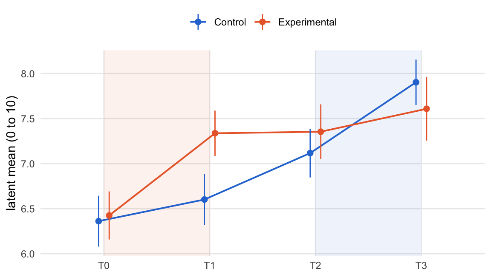
Next → Step 9, the verdict over all steps.
The verdict · Steps 9 to 12
Step 9 · The verdict
Which steps hold, under both sets of cutoffs? All steps of the construct, in all persons, in each group, and across the groups:
pm_verdict <- bind_rows(
`all persons` = fit_row(pm_all) |> mutate(level = "configural"),
control = pm_con_steps |> filter(level != "configural"),
experimental = pm_exp_steps |> filter(level != "configural"),
`both groups` = pm_both_steps |> filter(level != "over time"),
.id = "part") |>
mutate(Chen = if_else(level == "configural", fits_configural(CFI),
holds_chen(delta_CFI, delta_RMSEA)),
small_sample = if_else(level == "configural", Chen,
holds_small(level, delta_CFI, delta_RMSEA,
delta_SRMR)))
pm_verdict |>
transmute(part, level, ΔCFI = delta_CFI, ΔRMSEA = delta_RMSEA,
ΔSRMR = delta_SRMR, p, Chen = mark(Chen),
`small n` = mark(small_sample)) |>
mutate(across(where(is.double), \(x) round(x, 3)))| part | level | ΔCFI | ΔRMSEA | ΔSRMR | p | Chen | small n |
|---|---|---|---|---|---|---|---|
| all persons | configural | ✓ | ✓ | ||||
| control | loadings over time | -0.005 | 0.000 | 0.009 | 0.218 | ✓ | ✓ |
| control | intercepts over time | -0.005 | 0.000 | 0.002 | 0.022 | ✓ | ✗ |
| experimental | loadings over time | -0.001 | -0.002 | -0.006 | 0.468 | ✓ | ✓ |
| experimental | intercepts over time | -0.005 | -0.001 | 0.001 | 0.069 | ✓ | ✓ |
| both groups | loadings across groups | -0.001 | 0.000 | 0.003 | 0.154 | ✓ | ✓ |
| both groups | intercepts across groups | -0.002 | 0.000 | 0.001 | 0.041 | ✓ | ✓ |
Under Chen’s cutoffs every step holds: the measurement of Paradox Mindset is the same at all four waves, in each group and across the groups. The small-sample reading would stop at one step: the intercepts over time in the control group.
Step 10 · Partial invariance
Is it needed? No: under Chen’s cutoffs every step holds.
Step 11 · Alignment
How far are the eight cells from invariance when nothing is held equal? The share of loadings and intercepts (in %) more than .10 item standard deviations from their common aligned value:
pm_input <- alignment_input(pm_both_fits$configural,
model_items$ParadoxMindset)
pm_aligned <- invariance.alignment(lambda = pm_input$lambda,
nu = pm_input$nu, wgt = pm_input$weights)
pm_tolerance <- invariance_alignment_constraints(
pm_aligned, lambda_parm_tol = .10, nu_parm_tol = .10)
tibble(loadings = pm_tolerance$lambda_list$prop_noninvariance,
intercepts = pm_tolerance$nu_list$prop_noninvariance) |>
mutate(across(everything(), \(x) round(x, 1)))| loadings | intercepts |
|---|---|
| 21.9 | 26.6 |
Does it move the latent means? The latent mean of each cell as a distance from the control group in January, in its standard deviations, from the final model and aligned:
pm_final <- pm_both_fits$`intercepts across groups`
pm_sd_T0 <- sqrt(lavInspect(pm_final, "cov.lv")$Control["F_T0", "F_T0"])
pm_alignment_means <- parameterEstimates(pm_final) |>
filter(op == "~1", str_starts(lhs, "F_")) |>
transmute(cell = str_c(lavInspect(pm_final, "group.label")[group],
" ", str_remove(lhs, "^F_")),
final = (est - first(est)) / pm_sd_T0,
aligned = pm_aligned$pars$alpha0,
difference = aligned - final)
pm_alignment_means |>
mutate(across(where(is.double), \(x) round(x, 3)))| cell | final | aligned | difference |
|---|---|---|---|
| Control T0 | 0.000 | 0.000 | 0.000 |
| Control T1 | 0.126 | 0.085 | -0.041 |
| Control T2 | 0.396 | 0.392 | -0.004 |
| Control T3 | 0.808 | 0.838 | 0.030 |
| Experimental T0 | 0.033 | -0.016 | -0.049 |
| Experimental T1 | 0.511 | 0.521 | 0.009 |
| Experimental T2 | 0.520 | 0.479 | -0.041 |
| Experimental T3 | 0.654 | 0.585 | -0.069 |
21.9 % of the loadings and 26.6 % of the intercepts lie more than .10 item standard deviations from their common value (more than the 25 % up to which aligned means are trusted). The aligned means lie at most .069 standard deviations from those of the final model.
Step 12 · What follows
Which model goes on?
pm_status <- tibble(construct = "ParadoxMindset",
status = "as specified",
set_to_0 = list(character()),
freed = list(character()),
autocorrelations = list("free"),
chapter_11 = all(pm_verdict$Chen))
show_status(pm_status)| entry | value |
|---|---|
| construct | ParadoxMindset |
| status | as specified |
| set_to_0 | |
| freed | |
| autocorrelations | free |
| chapter_11 | TRUE |
Paradox Mindset enters the latent comparisons of Chapter 11 as specified: its measurement is the same over the four waves and in both groups.
Intellectual Humility
Its path through the steps. One row per step below, judged under Chen’s cutoffs; the label marks the data of each step:
| Step | Data | Question | Result | Next |
|---|---|---|---|---|
| 2 | all persons | Configural model possible and fitting? | yes | each group |
| 3 | control | Its three models possible? | yes | over time |
| 4 | control | Loadings the same over the waves? | yes | intercepts |
| 5 | control | Intercepts the same over the waves? | yes | experimental group |
| 3 | experimental | Its three models possible? | yes | over time |
| 4 | experimental | Loadings the same over the waves? | yes | intercepts |
| 5 | experimental | Intercepts the same over the waves? | yes | both groups |
| 6 | both groups | Misfit from the groups? | no, as in random halves | across the groups |
| 7 | both groups | Loadings the same in both groups? | yes | intercepts |
| 8 | both groups | Intercepts the same in both groups? | yes | verdict |
| 9–12 | Verdict | invariant | Chapter 11 |
All persons · Steps 1 and 2
Step 1 · The model
What does the model look like? The five items of Chapter 6 (1, 3, 4, 5 and 6) at each wave, their loadings averaging 1. In the figure, the circles are the factors of the four waves, the boxes the items by number, the arrows the loadings. The arcs above link the factors; those below link each item with itself at the next wave. The links between waves further apart belong to the model as well and are left out of the figure:
plot_model("IntellectualHumility")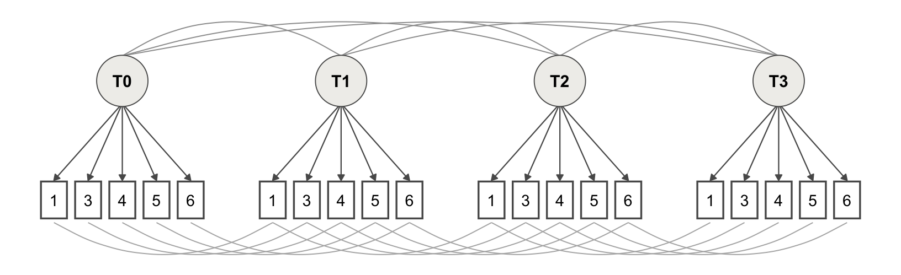
How does lavaan read it? The configural model of one group, as invariance_syntax() writes it:
ih_configural_model <- invariance_syntax(
"IntellectualHumility", loadings = "free", intercepts = "free",
two_groups = FALSE)
cat(ih_configural_model)F_T0 =~ NA*IntellectualHumility1_T0 +
l1_T0*IntellectualHumility1_T0 +
l2_T0*IntellectualHumility3_T0 +
l3_T0*IntellectualHumility4_T0 +
l4_T0*IntellectualHumility5_T0 +
l5_T0*IntellectualHumility6_T0
F_T1 =~ NA*IntellectualHumility1_T1 +
l1_T1*IntellectualHumility1_T1 +
l2_T1*IntellectualHumility3_T1 +
l3_T1*IntellectualHumility4_T1 +
l4_T1*IntellectualHumility5_T1 +
l5_T1*IntellectualHumility6_T1
F_T2 =~ NA*IntellectualHumility1_T2 +
l1_T2*IntellectualHumility1_T2 +
l2_T2*IntellectualHumility3_T2 +
l3_T2*IntellectualHumility4_T2 +
l4_T2*IntellectualHumility5_T2 +
l5_T2*IntellectualHumility6_T2
F_T3 =~ NA*IntellectualHumility1_T3 +
l1_T3*IntellectualHumility1_T3 +
l2_T3*IntellectualHumility3_T3 +
l3_T3*IntellectualHumility4_T3 +
l4_T3*IntellectualHumility5_T3 +
l5_T3*IntellectualHumility6_T3
l1_T0 + l2_T0 + l3_T0 + l4_T0 + l5_T0 == 5
l1_T1 + l2_T1 + l3_T1 + l4_T1 + l5_T1 == 5
l1_T2 + l2_T2 + l3_T2 + l4_T2 + l5_T2 == 5
l1_T3 + l2_T3 + l3_T3 + l4_T3 + l5_T3 == 5
F_T0 ~ 0*1
F_T1 ~ 0*1
F_T2 ~ 0*1
F_T3 ~ 0*1
F_T0 ~~ F_T1
F_T0 ~~ F_T2
F_T0 ~~ F_T3
F_T1 ~~ F_T2
F_T1 ~~ F_T3
F_T2 ~~ F_T3
IntellectualHumility1_T0 ~~ IntellectualHumility1_T1
IntellectualHumility1_T0 ~~ IntellectualHumility1_T2
IntellectualHumility1_T0 ~~ IntellectualHumility1_T3
IntellectualHumility1_T1 ~~ IntellectualHumility1_T2
IntellectualHumility1_T1 ~~ IntellectualHumility1_T3
IntellectualHumility1_T2 ~~ IntellectualHumility1_T3
IntellectualHumility3_T0 ~~ IntellectualHumility3_T1
IntellectualHumility3_T0 ~~ IntellectualHumility3_T2
IntellectualHumility3_T0 ~~ IntellectualHumility3_T3
IntellectualHumility3_T1 ~~ IntellectualHumility3_T2
IntellectualHumility3_T1 ~~ IntellectualHumility3_T3
IntellectualHumility3_T2 ~~ IntellectualHumility3_T3
IntellectualHumility4_T0 ~~ IntellectualHumility4_T1
IntellectualHumility4_T0 ~~ IntellectualHumility4_T2
IntellectualHumility4_T0 ~~ IntellectualHumility4_T3
IntellectualHumility4_T1 ~~ IntellectualHumility4_T2
IntellectualHumility4_T1 ~~ IntellectualHumility4_T3
IntellectualHumility4_T2 ~~ IntellectualHumility4_T3
IntellectualHumility5_T0 ~~ IntellectualHumility5_T1
IntellectualHumility5_T0 ~~ IntellectualHumility5_T2
IntellectualHumility5_T0 ~~ IntellectualHumility5_T3
IntellectualHumility5_T1 ~~ IntellectualHumility5_T2
IntellectualHumility5_T1 ~~ IntellectualHumility5_T3
IntellectualHumility5_T2 ~~ IntellectualHumility5_T3
IntellectualHumility6_T0 ~~ IntellectualHumility6_T1
IntellectualHumility6_T0 ~~ IntellectualHumility6_T2
IntellectualHumility6_T0 ~~ IntellectualHumility6_T3
IntellectualHumility6_T1 ~~ IntellectualHumility6_T2
IntellectualHumility6_T1 ~~ IntellectualHumility6_T3
IntellectualHumility6_T2 ~~ IntellectualHumility6_T3Next → Step 2, the configural model in all persons.
Step 2 · The configural model all persons
What is fitted? The model of Step 1, with loadings and intercepts free at every wave, in all persons together:
ih_all <- df_wide |>
cfa(model = ih_configural_model, data = _, estimator = "MLR",
missing = "fiml")Does it pass the checks? The eleven checks of 7.1, in their order:
ih_all_checks <- model_checks(ih_all, judge_fit = TRUE)
ih_all_checks| check | what | value | criterion | holds |
|---|---|---|---|---|
| 1 estimation | converged | yes | yes | ✓ |
| 2 variances | smallest residual variance: item 3 at T3 | .450 | above 0 | ✓ |
| 3 correlations | largest correlation: the factors at T1 and T2 | .590 | within ±1 | ✓ |
| 4 residuals | smallest eigenvalue of the residual covariances | .298 | above 0 | ✓ |
| 5 factors | smallest eigenvalue of the factor covariances | .458 | above 0 | ✓ |
| 6 standard errors | estimated for every free parameter | yes | yes | ✓ |
| 7 fit | CFI | .932 | at least .90 | ✓ |
| 8 fit | RMSEA [90 % interval] | .052 [.044, .060] | reported | – |
| 9 fit | SRMR | .069 | reported | – |
| 10 strain | largest modification index: item 1 with item 3 at T1 | 20.3 | reported | – |
| 11 estimates | smallest standardized loading: item 1 at T2 | .48 | reported | – |
Every check that decides holds: the estimation converged, the solution is proper (checks 1 to 6), and the model fits (CFI = .932, at least .90). Checks 8 to 11 are reported; Step 6 returns to the fit, and Steps 4, 5, 7 and 8 to the loadings.
Are the estimates sensible? The standardized loading of every item at every wave, and the correlations of the factors:
loading_table(ih_all)| item | T0 | T1 | T2 | T3 |
|---|---|---|---|---|
| item 1 | 0.55 | 0.55 | 0.48 | 0.57 |
| item 3 | 0.73 | 0.75 | 0.76 | 0.84 |
| item 4 | 0.78 | 0.67 | 0.66 | 0.77 |
| item 5 | 0.71 | 0.76 | 0.83 | 0.68 |
| item 6 | 0.59 | 0.57 | 0.79 | 0.71 |
factor_correlations(ih_all)| T0–T1 | T0–T2 | T0–T3 | T1–T2 | T1–T3 | T2–T3 |
|---|---|---|---|---|---|
| 0.52 | 0.49 | 0.43 | 0.59 | 0.43 | 0.58 |
Every item loads between .48 and .84, and the factors of neighbouring waves correlate between .52 and .59. Why are loadings and intercepts not tested here? The groups were trained at different waves, so a model of all persons would average a trained and an untrained group at the same wave (7.1). All persons show only whether one factor per wave describes the items; the tests over time follow in each group, and then across the groups.
Next → Steps 3 to 5, each group on its own: first the control group, then the experimental group.
Control group · Steps 3 to 5
The 252 persons of the control group, trained between September and December.
Step 3 · The checks control
What is fitted? The three models of this group: configural, with equal loadings over the waves (Step 4), and with equal intercepts as well (Step 5):
ih_con_models <- time_steps |>
pmap(\(level, loadings, intercepts) invariance_syntax(
"IntellectualHumility", loadings, intercepts, two_groups = FALSE)) |>
set_names(time_steps$level)
ih_con_fits <- ih_con_models |>
map(\(model) control |>
cfa(model = model, data = _, estimator = "MLR", missing = "fiml"))Does the configural model pass the checks? The eleven checks of 7.1:
ih_con_checks <- model_checks(ih_con_fits$configural)
ih_con_checks| check | what | value | criterion | holds |
|---|---|---|---|---|
| 1 estimation | converged | yes | yes | ✓ |
| 2 variances | smallest residual variance: item 3 at T3 | .324 | above 0 | ✓ |
| 3 correlations | largest correlation: item 4, T1 with T3 | .778 | within ±1 | ✓ |
| 4 residuals | smallest eigenvalue of the residual covariances | .191 | above 0 | ✓ |
| 5 factors | smallest eigenvalue of the factor covariances | .324 | above 0 | ✓ |
| 6 standard errors | estimated for every free parameter | yes | yes | ✓ |
| 7 fit | CFI | .898 | reported | – |
| 8 fit | RMSEA [90 % interval] | .069 [.058, .080] | reported | – |
| 9 fit | SRMR | .114 | reported | – |
| 10 strain | largest modification index: item 1 with item 3 at T1 | 16.5 | reported | – |
| 11 estimates | smallest standardized loading: item 1 at T2 | .44 | reported | – |
Checks 1 to 6 hold: the solution is proper. Its fit is reported (checks 7 to 9); whether one factor per wave describes the items was judged once, in all persons (Step 2). Are the other two models possible as well? Checks 1 to 6 of all three:
possible_table(ih_con_fits)| model | estimation | variances | correlations | residuals | factors | standard errors |
|---|---|---|---|---|---|---|
| configural | ✓ | ✓ | ✓ | ✓ | ✓ | ✓ |
| loadings over time | ✓ | ✓ | ✓ | ✓ | ✓ | ✓ |
| intercepts over time | ✓ | ✓ | ✓ | ✓ | ✓ | ✓ |
All three are possible as specified.
Next → Step 4, the loadings over time in this group.
Step 4 · Loadings over time control
Do the loadings stay the same? Each item keeps one loading over the four waves:
ih_con_steps <- step_table(ih_con_fits)
show_steps(ih_con_steps, "loadings over time")| level | df | CFI | ΔCFI | ΔRMSEA | ΔSRMR | p |
|---|---|---|---|---|---|---|
| loadings over time | 146 | 0.893 | -0.005 | -0.001 | 0.006 | 0.572 |
They do under Chen’s cutoffs (ΔCFI = -.005), though not under those of the small-sample reading, and the χ² test does not reject them (p = .572).
Next → Step 5, with the loadings held equal over the waves.
Step 5 · Intercepts over time control
Do the intercepts stay the same? Each item keeps one intercept over the four waves; the latent means are freed:
ih_con_steps <- step_table(ih_con_fits)
show_steps(ih_con_steps, "intercepts over time")| level | df | CFI | ΔCFI | ΔRMSEA | ΔSRMR | p |
|---|---|---|---|---|---|---|
| intercepts over time | 158 | 0.894 | 0.001 | -0.003 | -0.001 | 0.545 |
They do, under both sets of cutoffs (ΔCFI = .001), and the χ² test does not reject them (p = .545).
Next → Steps 3 to 5 in the experimental group.
Experimental group · Steps 3 to 5
The 199 persons of the experimental group, trained between January and March.
Step 3 · The checks experimental
What is fitted? The three models of this group: configural, with equal loadings over the waves (Step 4), and with equal intercepts as well (Step 5):
ih_exp_models <- time_steps |>
pmap(\(level, loadings, intercepts) invariance_syntax(
"IntellectualHumility", loadings, intercepts, two_groups = FALSE)) |>
set_names(time_steps$level)
ih_exp_fits <- ih_exp_models |>
map(\(model) experimental |>
cfa(model = model, data = _, estimator = "MLR", missing = "fiml"))Does the configural model pass the checks? The eleven checks of 7.1:
ih_exp_checks <- model_checks(ih_exp_fits$configural)
ih_exp_checks| check | what | value | criterion | holds |
|---|---|---|---|---|
| 1 estimation | converged | yes | yes | ✓ |
| 2 variances | smallest residual variance: item 4 at T2 | .554 | above 0 | ✓ |
| 3 correlations | largest correlation: item 6, T0 with T3 | .746 | within ±1 | ✓ |
| 4 residuals | smallest eigenvalue of the residual covariances | .174 | above 0 | ✓ |
| 5 factors | smallest eigenvalue of the factor covariances | .238 | above 0 | ✓ |
| 6 standard errors | estimated for every free parameter | yes | yes | ✓ |
| 7 fit | CFI | .850 | reported | – |
| 8 fit | RMSEA [90 % interval] | .081 [.069, .093] | reported | – |
| 9 fit | SRMR | .103 | reported | – |
| 10 strain | largest modification index: item 1 at T3 on the factor at T1 | 14.9 | reported | – |
| 11 estimates | smallest standardized loading: item 1 at T3 | .46 | reported | – |
Checks 1 to 6 hold: the solution is proper. Its fit is reported (checks 7 to 9); whether one factor per wave describes the items was judged once, in all persons (Step 2). Are the other two models possible as well? Checks 1 to 6 of all three:
possible_table(ih_exp_fits)| model | estimation | variances | correlations | residuals | factors | standard errors |
|---|---|---|---|---|---|---|
| configural | ✓ | ✓ | ✓ | ✓ | ✓ | ✓ |
| loadings over time | ✓ | ✓ | ✓ | ✓ | ✓ | ✓ |
| intercepts over time | ✓ | ✓ | ✓ | ✓ | ✓ | ✓ |
All three are possible as specified.
Next → Step 4, the loadings over time in this group.
Step 4 · Loadings over time experimental
Do the loadings stay the same? Each item keeps one loading over the four waves:
ih_exp_steps <- step_table(ih_exp_fits)
show_steps(ih_exp_steps, "loadings over time")| level | df | CFI | ΔCFI | ΔRMSEA | ΔSRMR | p |
|---|---|---|---|---|---|---|
| loadings over time | 146 | 0.854 | 0.004 | -0.004 | 0.002 | 0.994 |
They do, under both sets of cutoffs (ΔCFI = .004), and the χ² test does not reject them (p = .994).
Next → Step 5, with the loadings held equal over the waves.
Step 5 · Intercepts over time experimental
Do the intercepts stay the same? Each item keeps one intercept over the four waves; the latent means are freed:
ih_exp_steps <- step_table(ih_exp_fits)
show_steps(ih_exp_steps, "intercepts over time")| level | df | CFI | ΔCFI | ΔRMSEA | ΔSRMR | p |
|---|---|---|---|---|---|---|
| intercepts over time | 158 | 0.85 | -0.004 | -0.002 | 0.001 | 0.133 |
They do, under both sets of cutoffs (ΔCFI = -.004), and the χ² test does not reject them (p = .133).
Next → Step 6, both groups together, each with what it needed.
Both groups · Steps 6 to 8
Both groups together, with what each group needed.
Step 6 · Do the groups add misfit? both groups
How well does the configural model fit in the two groups, and in random halves of the persons?
ih_both_models <- group_steps |>
pmap(\(level, loadings, intercepts) invariance_syntax(
"IntellectualHumility", loadings, intercepts)) |>
set_names(group_steps$level)
ih_both_fits <- ih_both_models |>
map(\(model) df_wide |>
cfa(model = model, data = _, group = "condition",
estimator = "MLR", missing = "fiml"))
ih_halves <- c(`random halves 1` = 1, `random halves 2` = 2,
`random halves 3` = 3) |>
map(\(seed) {
set.seed(seed)
df_wide |>
mutate(condition = sample(condition)) |>
cfa(model = ih_both_models$configural, data = _, group = "condition",
estimator = "MLR", missing = "fiml")
})
ih_fit_table <- c(list(`two groups` = ih_both_fits$configural),
ih_halves) |>
map(fit_row) |>
list_rbind(names_to = "model")
ih_fit_table |>
mutate(across(where(is.double), \(x) round(x, 3)))| model | chisq | df | CFI | RMSEA | SRMR |
|---|---|---|---|---|---|
| two groups | 540.694 | 268 | 0.878 | 0.075 | 0.109 |
| random halves 1 | 515.022 | 268 | 0.885 | 0.071 | 0.103 |
| random halves 2 | 466.802 | 268 | 0.899 | 0.067 | 0.095 |
| random halves 3 | 477.587 | 268 | 0.897 | 0.068 | 0.101 |
Are all four models of both groups possible? Checks 1 to 6 of each:
possible_table(ih_both_fits)| model | estimation | variances | correlations | residuals | factors | standard errors |
|---|---|---|---|---|---|---|
| configural | ✓ | ✓ | ✓ | ✓ | ✓ | ✓ |
| over time | ✓ | ✓ | ✓ | ✓ | ✓ | ✓ |
| loadings across groups | ✓ | ✓ | ✓ | ✓ | ✓ | ✓ |
| intercepts across groups | ✓ | ✓ | ✓ | ✓ | ✓ | ✓ |
All four models of both groups are possible. In the two groups the CFI is .878, against .932 in all persons, and random halves of the persons fit no better (.885 to .899): what the groups lose comes from halving the sample, not from the groups.
Next → Step 7, the loadings across the groups.
Step 7 · Loadings across the groups both groups
Are the loadings the same in both groups?
ih_both_steps <- step_table(ih_both_fits[-1])
show_steps(ih_both_steps, "loadings across groups")| level | df | CFI | ΔCFI | ΔRMSEA | ΔSRMR | p |
|---|---|---|---|---|---|---|
| loadings across groups | 320 | 0.875 | 0 | 0 | -0.002 | 0.712 |
They are, under both sets of cutoffs (ΔCFI = .000), and the χ² test does not reject them (p = .712).
Next → Step 8, the intercepts across the groups, with the loadings held equal.
Step 8 · Intercepts across the groups both groups
Are the intercepts the same in both groups? Each item keeps one intercept, in every cell:
show_steps(ih_both_steps, "intercepts across groups")| level | df | CFI | ΔCFI | ΔRMSEA | ΔSRMR | p |
|---|---|---|---|---|---|---|
| intercepts across groups | 324 | 0.875 | 0 | 0 | 0 | 0.102 |
They are, under both sets of cutoffs (ΔCFI = -.000), and the χ² test does not reject them (p = .102).
Where do the latent means lie? In the final model, on the 0 to 10 scale of the items:
plot_latent_means(ih_both_fits$`intercepts across groups`)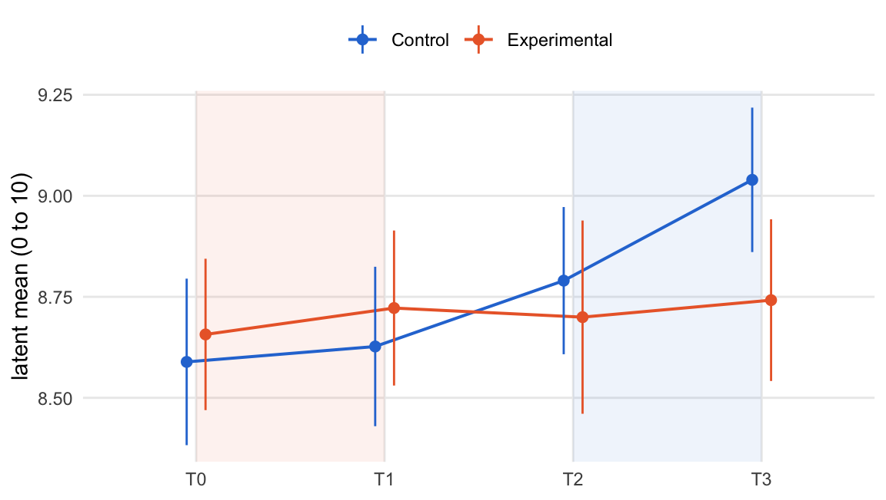
Next → Step 9, the verdict over all steps.
The verdict · Steps 9 to 12
Step 9 · The verdict
Which steps hold, under both sets of cutoffs? All steps of the construct, in all persons, in each group, and across the groups:
ih_verdict <- bind_rows(
`all persons` = fit_row(ih_all) |> mutate(level = "configural"),
control = ih_con_steps |> filter(level != "configural"),
experimental = ih_exp_steps |> filter(level != "configural"),
`both groups` = ih_both_steps |> filter(level != "over time"),
.id = "part") |>
mutate(Chen = if_else(level == "configural", fits_configural(CFI),
holds_chen(delta_CFI, delta_RMSEA)),
small_sample = if_else(level == "configural", Chen,
holds_small(level, delta_CFI, delta_RMSEA,
delta_SRMR)))
ih_verdict |>
transmute(part, level, ΔCFI = delta_CFI, ΔRMSEA = delta_RMSEA,
ΔSRMR = delta_SRMR, p, Chen = mark(Chen),
`small n` = mark(small_sample)) |>
mutate(across(where(is.double), \(x) round(x, 3)))| part | level | ΔCFI | ΔRMSEA | ΔSRMR | p | Chen | small n |
|---|---|---|---|---|---|---|---|
| all persons | configural | ✓ | ✓ | ||||
| control | loadings over time | -0.005 | -0.001 | 0.006 | 0.572 | ✓ | ✗ |
| control | intercepts over time | 0.001 | -0.003 | -0.001 | 0.545 | ✓ | ✓ |
| experimental | loadings over time | 0.004 | -0.004 | 0.002 | 0.994 | ✓ | ✓ |
| experimental | intercepts over time | -0.004 | -0.002 | 0.001 | 0.133 | ✓ | ✓ |
| both groups | loadings across groups | 0.000 | 0.000 | -0.002 | 0.712 | ✓ | ✓ |
| both groups | intercepts across groups | 0.000 | 0.000 | 0.000 | 0.102 | ✓ | ✓ |
Under Chen’s cutoffs every step holds: the measurement of Intellectual Humility is the same at all four waves, in each group and across the groups. The small-sample reading would stop at one step: the loadings over time in the control group.
Step 10 · Partial invariance
Is it needed? No: under Chen’s cutoffs every step holds.
Step 11 · Alignment
How far are the eight cells from invariance when nothing is held equal? The share of loadings and intercepts (in %) more than .10 item standard deviations from their common aligned value:
ih_input <- alignment_input(ih_both_fits$configural,
model_items$IntellectualHumility)
ih_aligned <- invariance.alignment(lambda = ih_input$lambda,
nu = ih_input$nu, wgt = ih_input$weights)
ih_tolerance <- invariance_alignment_constraints(
ih_aligned, lambda_parm_tol = .10, nu_parm_tol = .10)
tibble(loadings = ih_tolerance$lambda_list$prop_noninvariance,
intercepts = ih_tolerance$nu_list$prop_noninvariance) |>
mutate(across(everything(), \(x) round(x, 1)))| loadings | intercepts |
|---|---|
| 10 | 12.5 |
Does it move the latent means? The latent mean of each cell as a distance from the control group in January, in its standard deviations, from the final model and aligned:
ih_final <- ih_both_fits$`intercepts across groups`
ih_sd_T0 <- sqrt(lavInspect(ih_final, "cov.lv")$Control["F_T0", "F_T0"])
ih_alignment_means <- parameterEstimates(ih_final) |>
filter(op == "~1", str_starts(lhs, "F_")) |>
transmute(cell = str_c(lavInspect(ih_final, "group.label")[group],
" ", str_remove(lhs, "^F_")),
final = (est - first(est)) / ih_sd_T0,
aligned = ih_aligned$pars$alpha0,
difference = aligned - final)
ih_alignment_means |>
mutate(across(where(is.double), \(x) round(x, 3)))| cell | final | aligned | difference |
|---|---|---|---|
| Control T0 | 0.000 | 0.000 | 0.000 |
| Control T1 | 0.029 | 0.028 | 0.000 |
| Control T2 | 0.151 | 0.173 | 0.022 |
| Control T3 | 0.338 | 0.378 | 0.040 |
| Experimental T0 | 0.051 | 0.023 | -0.028 |
| Experimental T1 | 0.100 | 0.083 | -0.018 |
| Experimental T2 | 0.083 | 0.025 | -0.058 |
| Experimental T3 | 0.115 | 0.096 | -0.018 |
10 % of the loadings and 12.5 % of the intercepts lie more than .10 item standard deviations from their common value (below the 25 % up to which aligned means are trusted). The aligned means lie at most .058 standard deviations from those of the final model.
Step 12 · What follows
Which model goes on?
ih_status <- tibble(construct = "IntellectualHumility",
status = "as specified",
set_to_0 = list(character()),
freed = list(character()),
autocorrelations = list("free"),
chapter_11 = all(ih_verdict$Chen))
show_status(ih_status)| entry | value |
|---|---|
| construct | IntellectualHumility |
| status | as specified |
| set_to_0 | |
| freed | |
| autocorrelations | free |
| chapter_11 | TRUE |
Intellectual Humility enters the latent comparisons of Chapter 11 as specified: its measurement is the same over the four waves and in both groups.
Tolerance Diversity
Its path through the steps. One row per step below, judged under Chen’s cutoffs; the label marks the data of each step:
| Step | Data | Question | Result | Next |
|---|---|---|---|---|
| 2 | all persons | Configural model possible and fitting? | yes | each group |
| 3 | control | Its three models possible? | yes | over time |
| 4 | control | Loadings the same over the waves? | yes | intercepts |
| 5 | control | Intercepts the same over the waves? | yes | experimental group |
| 3 | experimental | Its three models possible? | yes | over time |
| 4 | experimental | Loadings the same over the waves? | yes | intercepts |
| 5 | experimental | Intercepts the same over the waves? | no; item 2 freed: yes | both groups |
| 6 | both groups | Misfit from the groups? | no, as in random halves | across the groups |
| 7 | both groups | Loadings the same in both groups? | yes | intercepts |
| 8 | both groups | Intercepts the same in both groups? | yes | verdict |
| 9–12 | Verdict | invariant, partial | Chapter 11 |
All persons · Steps 1 and 2
Step 1 · The model
What does the model look like? The four items of Chapter 6 (2, 3, 4 and 5) at each wave, their loadings averaging 1. In the figure, the circles are the factors of the four waves, the boxes the items by number, the arrows the loadings. The arcs above link the factors; those below link each item with itself at the next wave. The links between waves further apart belong to the model as well and are left out of the figure:
plot_model("ToleranceDiversity")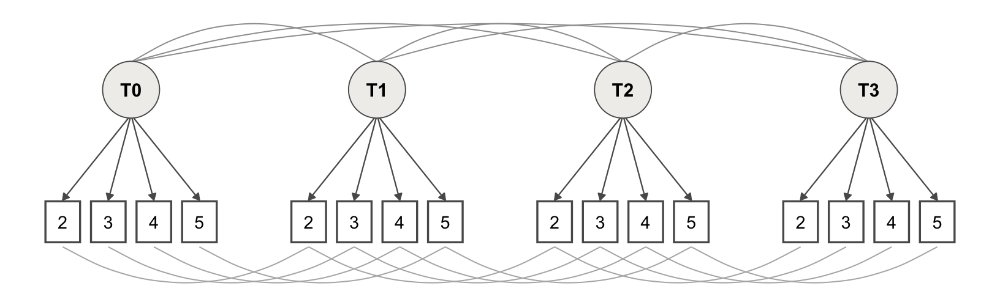
How does lavaan read it? The configural model of one group, as invariance_syntax() writes it:
td_configural_model <- invariance_syntax(
"ToleranceDiversity", loadings = "free", intercepts = "free",
two_groups = FALSE)
cat(td_configural_model)F_T0 =~ NA*ToleranceDiversity2_T0 +
l1_T0*ToleranceDiversity2_T0 +
l2_T0*ToleranceDiversity3_T0 +
l3_T0*ToleranceDiversity4_T0 +
l4_T0*ToleranceDiversity5_T0
F_T1 =~ NA*ToleranceDiversity2_T1 +
l1_T1*ToleranceDiversity2_T1 +
l2_T1*ToleranceDiversity3_T1 +
l3_T1*ToleranceDiversity4_T1 +
l4_T1*ToleranceDiversity5_T1
F_T2 =~ NA*ToleranceDiversity2_T2 +
l1_T2*ToleranceDiversity2_T2 +
l2_T2*ToleranceDiversity3_T2 +
l3_T2*ToleranceDiversity4_T2 +
l4_T2*ToleranceDiversity5_T2
F_T3 =~ NA*ToleranceDiversity2_T3 +
l1_T3*ToleranceDiversity2_T3 +
l2_T3*ToleranceDiversity3_T3 +
l3_T3*ToleranceDiversity4_T3 +
l4_T3*ToleranceDiversity5_T3
l1_T0 + l2_T0 + l3_T0 + l4_T0 == 4
l1_T1 + l2_T1 + l3_T1 + l4_T1 == 4
l1_T2 + l2_T2 + l3_T2 + l4_T2 == 4
l1_T3 + l2_T3 + l3_T3 + l4_T3 == 4
F_T0 ~ 0*1
F_T1 ~ 0*1
F_T2 ~ 0*1
F_T3 ~ 0*1
F_T0 ~~ F_T1
F_T0 ~~ F_T2
F_T0 ~~ F_T3
F_T1 ~~ F_T2
F_T1 ~~ F_T3
F_T2 ~~ F_T3
ToleranceDiversity2_T0 ~~ ToleranceDiversity2_T1
ToleranceDiversity2_T0 ~~ ToleranceDiversity2_T2
ToleranceDiversity2_T0 ~~ ToleranceDiversity2_T3
ToleranceDiversity2_T1 ~~ ToleranceDiversity2_T2
ToleranceDiversity2_T1 ~~ ToleranceDiversity2_T3
ToleranceDiversity2_T2 ~~ ToleranceDiversity2_T3
ToleranceDiversity3_T0 ~~ ToleranceDiversity3_T1
ToleranceDiversity3_T0 ~~ ToleranceDiversity3_T2
ToleranceDiversity3_T0 ~~ ToleranceDiversity3_T3
ToleranceDiversity3_T1 ~~ ToleranceDiversity3_T2
ToleranceDiversity3_T1 ~~ ToleranceDiversity3_T3
ToleranceDiversity3_T2 ~~ ToleranceDiversity3_T3
ToleranceDiversity4_T0 ~~ ToleranceDiversity4_T1
ToleranceDiversity4_T0 ~~ ToleranceDiversity4_T2
ToleranceDiversity4_T0 ~~ ToleranceDiversity4_T3
ToleranceDiversity4_T1 ~~ ToleranceDiversity4_T2
ToleranceDiversity4_T1 ~~ ToleranceDiversity4_T3
ToleranceDiversity4_T2 ~~ ToleranceDiversity4_T3
ToleranceDiversity5_T0 ~~ ToleranceDiversity5_T1
ToleranceDiversity5_T0 ~~ ToleranceDiversity5_T2
ToleranceDiversity5_T0 ~~ ToleranceDiversity5_T3
ToleranceDiversity5_T1 ~~ ToleranceDiversity5_T2
ToleranceDiversity5_T1 ~~ ToleranceDiversity5_T3
ToleranceDiversity5_T2 ~~ ToleranceDiversity5_T3Next → Step 2, the configural model in all persons.
Step 2 · The configural model all persons
What is fitted? The model of Step 1, with loadings and intercepts free at every wave, in all persons together:
td_all <- df_wide |>
cfa(model = td_configural_model, data = _, estimator = "MLR",
missing = "fiml")Does it pass the checks? The eleven checks of 7.1, in their order:
td_all_checks <- model_checks(td_all, judge_fit = TRUE)
td_all_checks| check | what | value | criterion | holds |
|---|---|---|---|---|
| 1 estimation | converged | yes | yes | ✓ |
| 2 variances | smallest residual variance: item 5 at T3 | 1.881 | above 0 | ✓ |
| 3 correlations | largest correlation: the factors at T2 and T3 | .595 | within ±1 | ✓ |
| 4 residuals | smallest eigenvalue of the residual covariances | .785 | above 0 | ✓ |
| 5 factors | smallest eigenvalue of the factor covariances | .882 | above 0 | ✓ |
| 6 standard errors | estimated for every free parameter | yes | yes | ✓ |
| 7 fit | CFI | .972 | at least .90 | ✓ |
| 8 fit | RMSEA [90 % interval] | .035 [.022, .047] | reported | – |
| 9 fit | SRMR | .059 | reported | – |
| 10 strain | largest modification index: item 3 with item 5 at T3 | 13.4 | reported | – |
| 11 estimates | smallest standardized loading: item 3 at T2 | .42 | reported | – |
Every check that decides holds: the estimation converged, the solution is proper (checks 1 to 6), and the model fits (CFI = .972, at least .90). Checks 8 to 11 are reported; Step 6 returns to the fit, and Steps 4, 5, 7 and 8 to the loadings.
Are the estimates sensible? The standardized loading of every item at every wave, and the correlations of the factors:
loading_table(td_all)| item | T0 | T1 | T2 | T3 |
|---|---|---|---|---|
| item 2 | 0.55 | 0.43 | 0.42 | 0.55 |
| item 3 | 0.48 | 0.51 | 0.42 | 0.53 |
| item 4 | 0.84 | 0.79 | 0.81 | 0.82 |
| item 5 | 0.67 | 0.68 | 0.73 | 0.69 |
factor_correlations(td_all)| T0–T1 | T0–T2 | T0–T3 | T1–T2 | T1–T3 | T2–T3 |
|---|---|---|---|---|---|
| 0.58 | 0.57 | 0.44 | 0.5 | 0.48 | 0.59 |
Every item loads between .42 and .84, and the factors of neighbouring waves correlate between .50 and .59. Why are loadings and intercepts not tested here? The groups were trained at different waves, so a model of all persons would average a trained and an untrained group at the same wave (7.1). All persons show only whether one factor per wave describes the items; the tests over time follow in each group, and then across the groups.
Next → Steps 3 to 5, each group on its own: first the control group, then the experimental group.
Control group · Steps 3 to 5
The 252 persons of the control group, trained between September and December.
Step 3 · The checks control
What is fitted? The three models of this group: configural, with equal loadings over the waves (Step 4), and with equal intercepts as well (Step 5):
td_con_models <- time_steps |>
pmap(\(level, loadings, intercepts) invariance_syntax(
"ToleranceDiversity", loadings, intercepts, two_groups = FALSE)) |>
set_names(time_steps$level)
td_con_fits <- td_con_models |>
map(\(model) control |>
cfa(model = model, data = _, estimator = "MLR", missing = "fiml"))Does the configural model pass the checks? The eleven checks of 7.1:
td_con_checks <- model_checks(td_con_fits$configural)
td_con_checks| check | what | value | criterion | holds |
|---|---|---|---|---|
| 1 estimation | converged | yes | yes | ✓ |
| 2 variances | smallest residual variance: item 4 at T0 | 1.472 | above 0 | ✓ |
| 3 correlations | largest correlation: the factors at T0 and T2 | .697 | within ±1 | ✓ |
| 4 residuals | smallest eigenvalue of the residual covariances | .593 | above 0 | ✓ |
| 5 factors | smallest eigenvalue of the factor covariances | .711 | above 0 | ✓ |
| 6 standard errors | estimated for every free parameter | yes | yes | ✓ |
| 7 fit | CFI | .946 | reported | – |
| 8 fit | RMSEA [90 % interval] | .050 [.034, .066] | reported | – |
| 9 fit | SRMR | .078 | reported | – |
| 10 strain | largest modification index: item 2 with item 4 at T1 | 9.1 | reported | – |
| 11 estimates | smallest standardized loading: item 3 at T0 | .38 | reported | – |
Checks 1 to 6 hold: the solution is proper. Its fit is reported (checks 7 to 9); whether one factor per wave describes the items was judged once, in all persons (Step 2). Are the other two models possible as well? Checks 1 to 6 of all three:
possible_table(td_con_fits)| model | estimation | variances | correlations | residuals | factors | standard errors |
|---|---|---|---|---|---|---|
| configural | ✓ | ✓ | ✓ | ✓ | ✓ | ✓ |
| loadings over time | ✓ | ✓ | ✓ | ✓ | ✓ | ✓ |
| intercepts over time | ✓ | ✓ | ✓ | ✓ | ✓ | ✓ |
All three are possible as specified.
Next → Step 4, the loadings over time in this group.
Step 4 · Loadings over time control
Do the loadings stay the same? Each item keeps one loading over the four waves:
td_con_steps <- step_table(td_con_fits)
show_steps(td_con_steps, "loadings over time")| level | df | CFI | ΔCFI | ΔRMSEA | ΔSRMR | p |
|---|---|---|---|---|---|---|
| loadings over time | 83 | 0.945 | -0.001 | -0.002 | -0.008 | 0.699 |
They do, under both sets of cutoffs (ΔCFI = -.001), and the χ² test does not reject them (p = .699).
Next → Step 5, with the loadings held equal over the waves.
Step 5 · Intercepts over time control
Do the intercepts stay the same? Each item keeps one intercept over the four waves; the latent means are freed:
td_con_steps <- step_table(td_con_fits)
show_steps(td_con_steps, "intercepts over time")| level | df | CFI | ΔCFI | ΔRMSEA | ΔSRMR | p |
|---|---|---|---|---|---|---|
| intercepts over time | 92 | 0.94 | -0.006 | 0 | 0 | 0.084 |
They do under Chen’s cutoffs (ΔCFI = -.006), though not under those of the small-sample reading, and the χ² test does not reject them (p = .084).
Next → Steps 3 to 5 in the experimental group.
Experimental group · Steps 3 to 5
The 199 persons of the experimental group, trained between January and March.
Step 3 · The checks experimental
What is fitted? The three models of this group: configural, with equal loadings over the waves (Step 4), and with equal intercepts as well (Step 5):
td_exp_models <- time_steps |>
pmap(\(level, loadings, intercepts) invariance_syntax(
"ToleranceDiversity", loadings, intercepts, two_groups = FALSE)) |>
set_names(time_steps$level)
td_exp_fits <- td_exp_models |>
map(\(model) experimental |>
cfa(model = model, data = _, estimator = "MLR", missing = "fiml"))Does the configural model pass the checks? The eleven checks of 7.1:
td_exp_checks <- model_checks(td_exp_fits$configural)
td_exp_checks| check | what | value | criterion | holds |
|---|---|---|---|---|
| 1 estimation | converged | yes | yes | ✓ |
| 2 variances | smallest residual variance: item 5 at T2 | 1.687 | above 0 | ✓ |
| 3 correlations | largest correlation: item 4, T2 with T3 | .658 | within ±1 | ✓ |
| 4 residuals | smallest eigenvalue of the residual covariances | .597 | above 0 | ✓ |
| 5 factors | smallest eigenvalue of the factor covariances | .913 | above 0 | ✓ |
| 6 standard errors | estimated for every free parameter | yes | yes | ✓ |
| 7 fit | CFI | .942 | reported | – |
| 8 fit | RMSEA [90 % interval] | .050 [.029, .069] | reported | – |
| 9 fit | SRMR | .094 | reported | – |
| 10 strain | largest modification index: item 3 with item 5 at T3 | 8.0 | reported | – |
| 11 estimates | smallest standardized loading: item 3 at T2 | .34 | reported | – |
Checks 1 to 6 hold: the solution is proper. Its fit is reported (checks 7 to 9); whether one factor per wave describes the items was judged once, in all persons (Step 2). Are the other two models possible as well? Checks 1 to 6 of all three:
possible_table(td_exp_fits)| model | estimation | variances | correlations | residuals | factors | standard errors |
|---|---|---|---|---|---|---|
| configural | ✓ | ✓ | ✓ | ✓ | ✓ | ✓ |
| loadings over time | ✓ | ✓ | ✓ | ✓ | ✓ | ✓ |
| intercepts over time | ✓ | ✓ | ✓ | ✓ | ✓ | ✓ |
All three are possible as specified.
Next → Step 4, the loadings over time in this group.
Step 4 · Loadings over time experimental
Do the loadings stay the same? Each item keeps one loading over the four waves:
td_exp_steps <- step_table(td_exp_fits)
show_steps(td_exp_steps, "loadings over time")| level | df | CFI | ΔCFI | ΔRMSEA | ΔSRMR | p |
|---|---|---|---|---|---|---|
| loadings over time | 83 | 0.94 | -0.002 | -0.002 | 0.01 | 0.705 |
They do, under both sets of cutoffs (ΔCFI = -.002), and the χ² test does not reject them (p = .705).
Next → Step 5, with the loadings held equal over the waves.
Step 5 · Intercepts over time experimental
Do the intercepts stay the same? Each item keeps one intercept over the four waves; the latent means are freed:
td_exp_steps <- step_table(td_exp_fits)
show_steps(td_exp_steps, "intercepts over time")| level | df | CFI | ΔCFI | ΔRMSEA | ΔSRMR | p |
|---|---|---|---|---|---|---|
| intercepts over time | 92 | 0.928 | -0.012 | 0.002 | 0.002 | 0.037 |
They do not: the step lies beyond Chen’s cutoffs (ΔCFI = -.012, ΔRMSEA = .002). Whose intercepts move? The score test of each equality that holds them over the waves, summed per item:
td_exp_scores_intercepts <- td_exp_fits$`intercepts over time` |>
score_items("intercepts")
td_exp_scores_intercepts |>
mutate(X2 = round(X2, 1))| item | X2 |
|---|---|
| ToleranceDiversity2 | 4.7 |
| ToleranceDiversity4 | 3.6 |
| ToleranceDiversity3 | 3.5 |
| ToleranceDiversity5 | 1.3 |
Item 2 strains most (4.7). Its intercepts are freed at every wave of this group, and the models are fitted again:
td_exp_free <- "Experimental: ToleranceDiversity2 intercepts"
td_exp_models <- time_steps |>
pmap(\(level, loadings, intercepts) invariance_syntax(
"ToleranceDiversity", loadings, intercepts, two_groups = FALSE,
free = td_exp_free)) |>
set_names(time_steps$level)
td_exp_fits <- td_exp_models |>
map(\(model) experimental |>
cfa(model = model, data = _, estimator = "MLR", missing = "fiml"))
td_exp_steps <- step_table(td_exp_fits)
show_steps(td_exp_steps, "intercepts over time")| level | df | CFI | ΔCFI | ΔRMSEA | ΔSRMR | p |
|---|---|---|---|---|---|---|
| intercepts over time | 89 | 0.935 | -0.005 | 0 | 0.001 | 0.134 |
With the intercepts of item 2 free, the step holds (ΔCFI = -.005; χ² test: p = .134).
Next → Step 6, both groups together, each with what it needed; the intercepts of item 2 stay free in the experimental group.
Both groups · Steps 6 to 8
Both groups together, with what each group needed.
Step 6 · Do the groups add misfit? both groups
How well does the configural model fit in the two groups, and in random halves of the persons?
td_free <- td_exp_free # nothing freed in the control group
td_both_models <- group_steps |>
pmap(\(level, loadings, intercepts) invariance_syntax(
"ToleranceDiversity", loadings, intercepts, free = td_free)) |>
set_names(group_steps$level)
td_both_fits <- td_both_models |>
map(\(model) df_wide |>
cfa(model = model, data = _, group = "condition",
estimator = "MLR", missing = "fiml"))
td_halves <- c(`random halves 1` = 1, `random halves 2` = 2,
`random halves 3` = 3) |>
map(\(seed) {
set.seed(seed)
df_wide |>
mutate(condition = sample(condition)) |>
cfa(model = td_both_models$configural, data = _, group = "condition",
estimator = "MLR", missing = "fiml")
})
td_fit_table <- c(list(`two groups` = td_both_fits$configural),
td_halves) |>
map(fit_row) |>
list_rbind(names_to = "model")
td_fit_table |>
mutate(across(where(is.double), \(x) round(x, 3)))| model | chisq | df | CFI | RMSEA | SRMR |
|---|---|---|---|---|---|
| two groups | 228.074 | 148 | 0.945 | 0.050 | 0.085 |
| random halves 1 | 206.699 | 148 | 0.958 | 0.044 | 0.083 |
| random halves 2 | 270.648 | 148 | 0.925 | 0.059 | 0.083 |
| random halves 3 | 189.609 | 148 | 0.966 | 0.040 | 0.075 |
Are all four models of both groups possible? Checks 1 to 6 of each:
possible_table(td_both_fits)| model | estimation | variances | correlations | residuals | factors | standard errors |
|---|---|---|---|---|---|---|
| configural | ✓ | ✓ | ✓ | ✓ | ✓ | ✓ |
| over time | ✓ | ✓ | ✓ | ✓ | ✓ | ✓ |
| loadings across groups | ✓ | ✓ | ✓ | ✓ | ✓ | ✓ |
| intercepts across groups | ✓ | ✓ | ✓ | ✓ | ✓ | ✓ |
All four models of both groups are possible. In the two groups the CFI is .945, against .972 in all persons, and random halves of the persons fit no better (.925 to .966): what the groups lose comes from halving the sample, not from the groups.
Next → Step 7, the loadings across the groups.
Step 7 · Loadings across the groups both groups
Are the loadings the same in both groups? A loading freed over the waves stays free in its group.
td_both_steps <- step_table(td_both_fits[-1])
show_steps(td_both_steps, "loadings across groups")| level | df | CFI | ΔCFI | ΔRMSEA | ΔSRMR | p |
|---|---|---|---|---|---|---|
| loadings across groups | 184 | 0.933 | -0.005 | 0.001 | 0.005 | 0.096 |
They are, under Chen’s cutoffs (ΔCFI = -.005; χ² test: p = .096).
Next → Step 8, the intercepts across the groups, with the loadings held equal.
Step 8 · Intercepts across the groups both groups
Are the intercepts the same in both groups? Each item keeps one intercept, in every cell but the freed ones:
show_steps(td_both_steps, "intercepts across groups")| level | df | CFI | ΔCFI | ΔRMSEA | ΔSRMR | p |
|---|---|---|---|---|---|---|
| intercepts across groups | 186 | 0.932 | -0.001 | 0 | 0 | 0.239 |
They are, under Chen’s cutoffs (ΔCFI = -.001; χ² test: p = .239).
Where do the latent means lie? In the final model, on the 0 to 10 scale of the items:
plot_latent_means(td_both_fits$`intercepts across groups`)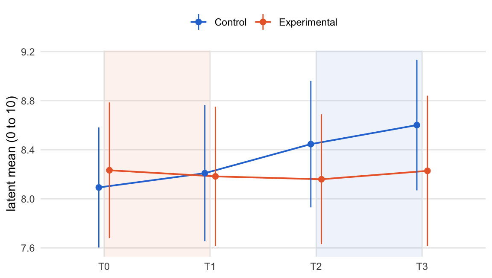
Next → Step 9, the verdict over all steps.
The verdict · Steps 9 to 12
Step 9 · The verdict
Which steps hold, under both sets of cutoffs? All steps of the construct, in all persons, in each group, and across the groups:
td_verdict <- bind_rows(
`all persons` = fit_row(td_all) |> mutate(level = "configural"),
control = td_con_steps |> filter(level != "configural"),
experimental = td_exp_steps |> filter(level != "configural"),
`both groups` = td_both_steps |> filter(level != "over time"),
.id = "part") |>
mutate(Chen = if_else(level == "configural", fits_configural(CFI),
holds_chen(delta_CFI, delta_RMSEA)),
small_sample = if_else(level == "configural", Chen,
holds_small(level, delta_CFI, delta_RMSEA,
delta_SRMR)))
td_verdict |>
transmute(part, level, ΔCFI = delta_CFI, ΔRMSEA = delta_RMSEA,
ΔSRMR = delta_SRMR, p, Chen = mark(Chen),
`small n` = mark(small_sample)) |>
mutate(across(where(is.double), \(x) round(x, 3)))| part | level | ΔCFI | ΔRMSEA | ΔSRMR | p | Chen | small n |
|---|---|---|---|---|---|---|---|
| all persons | configural | ✓ | ✓ | ||||
| control | loadings over time | -0.001 | -0.002 | -0.008 | 0.699 | ✓ | ✓ |
| control | intercepts over time | -0.006 | 0.000 | 0.000 | 0.084 | ✓ | ✗ |
| experimental | loadings over time | -0.002 | -0.002 | 0.010 | 0.705 | ✓ | ✓ |
| experimental | intercepts over time | -0.005 | 0.000 | 0.001 | 0.134 | ✓ | ✗ |
| both groups | loadings across groups | -0.005 | 0.001 | 0.005 | 0.096 | ✓ | ✗ |
| both groups | intercepts across groups | -0.001 | 0.000 | 0.000 | 0.239 | ✓ | ✓ |
Under Chen’s cutoffs every step holds, with the intercepts of item 2 free in the experimental group: the measurement of Tolerance Diversity is the same at all four waves, in each group and across the groups. The small-sample reading would stop at three steps: the intercepts over time in the control group, the intercepts over time in the experimental group, and the loadings across groups.
Step 10 · Partial invariance
What is freed? The intercepts of item 2 in the experimental group, as the score test of Steps 4 and 5 found. Three of the four items keep equal loadings and intercepts in every cell and scale the factor.
Step 11 · Alignment
How far are the eight cells from invariance when nothing is held equal? The share of loadings and intercepts (in %) more than .10 item standard deviations from their common aligned value:
td_input <- alignment_input(td_both_fits$configural,
model_items$ToleranceDiversity)
td_aligned <- invariance.alignment(lambda = td_input$lambda,
nu = td_input$nu, wgt = td_input$weights)
td_tolerance <- invariance_alignment_constraints(
td_aligned, lambda_parm_tol = .10, nu_parm_tol = .10)
tibble(loadings = td_tolerance$lambda_list$prop_noninvariance,
intercepts = td_tolerance$nu_list$prop_noninvariance) |>
mutate(across(everything(), \(x) round(x, 1)))| loadings | intercepts |
|---|---|
| 28.1 | 21.9 |
Does it move the latent means? The latent mean of each cell as a distance from the control group in January, in its standard deviations, from the final model and aligned:
td_final <- td_both_fits$`intercepts across groups`
td_sd_T0 <- sqrt(lavInspect(td_final, "cov.lv")$Control["F_T0", "F_T0"])
td_alignment_means <- parameterEstimates(td_final) |>
filter(op == "~1", str_starts(lhs, "F_")) |>
transmute(cell = str_c(lavInspect(td_final, "group.label")[group],
" ", str_remove(lhs, "^F_")),
final = (est - first(est)) / td_sd_T0,
aligned = td_aligned$pars$alpha0,
difference = aligned - final)
td_alignment_means |>
mutate(across(where(is.double), \(x) round(x, 3)))| cell | final | aligned | difference |
|---|---|---|---|
| Control T0 | 0.000 | 0.000 | 0.000 |
| Control T1 | 0.064 | 0.041 | -0.024 |
| Control T2 | 0.195 | 0.191 | -0.004 |
| Control T3 | 0.281 | 0.263 | -0.018 |
| Experimental T0 | 0.077 | -0.073 | -0.150 |
| Experimental T1 | 0.050 | 0.059 | 0.009 |
| Experimental T2 | 0.037 | -0.006 | -0.042 |
| Experimental T3 | 0.075 | 0.001 | -0.074 |
28.1 % of the loadings and 21.9 % of the intercepts lie more than .10 item standard deviations from their common value (more than the 25 % up to which aligned means are trusted). The aligned means lie at most .150 standard deviations from those of the final model.
Step 12 · What follows
Which model goes on?
td_status <- tibble(construct = "ToleranceDiversity",
status = "partial",
set_to_0 = list(character()),
freed = list(td_free),
autocorrelations = list("free"),
chapter_11 = all(td_verdict$Chen))
show_status(td_status)| entry | value |
|---|---|
| construct | ToleranceDiversity |
| status | partial |
| set_to_0 | |
| freed | Experimental: ToleranceDiversity2 intercepts |
| autocorrelations | free |
| chapter_11 | TRUE |
Tolerance Diversity enters the latent comparisons of Chapter 11 with the parameters freed in Step 10: apart from them, its measurement is the same over the four waves and in both groups.
Women Attitude
Its path through the steps. One row per step below, judged under Chen’s cutoffs; the label marks the data of each step:
| Step | Data | Question | Result | Next |
|---|---|---|---|---|
| 2 | all persons | Configural model possible and fitting? | only as ordinal, without autocorrelations (E) | each group |
| 3 | control | Its three models possible? | no, under every adjustment | stop |
| 3 | experimental | Its three models possible? | yes, after adjustment A | verdict |
| 9–12 | Verdict | stops | – |
All persons · Steps 1 and 2
Step 1 · The model
What does the model look like? The four items of Chapter 6 (4, 5, 8 and 9) at each wave, their loadings averaging 1, with the residual covariance of items 4 and 5 at every wave. Between 75 % and 87 % of their January answers are a 10 (Chapter 6, Step 2). In the figure, the circles are the factors of the four waves, the boxes the items by number, the arrows the loadings. The arcs above link the factors; those below link each item with itself at the next wave, the dashed ones the residual covariances within a wave. The links between waves further apart belong to the model as well and are left out of the figure:
plot_model("womenAttitude")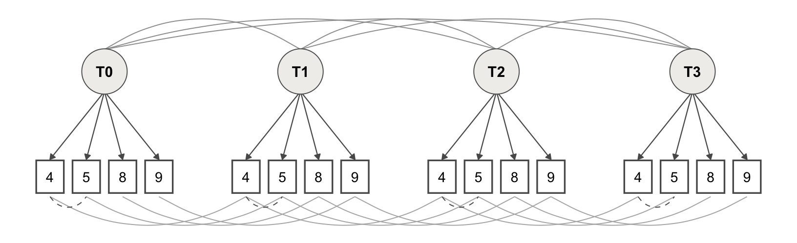
How does lavaan read it? The configural model of one group, as invariance_syntax() writes it:
wa_configural_model <- invariance_syntax("womenAttitude", loadings = "free",
intercepts = "free",
two_groups = FALSE)
cat(wa_configural_model)F_T0 =~ NA*womenAttitude4_T0 +
l1_T0*womenAttitude4_T0 +
l2_T0*womenAttitude5_T0 +
l3_T0*womenAttitude8_T0 +
l4_T0*womenAttitude9_T0
F_T1 =~ NA*womenAttitude4_T1 +
l1_T1*womenAttitude4_T1 +
l2_T1*womenAttitude5_T1 +
l3_T1*womenAttitude8_T1 +
l4_T1*womenAttitude9_T1
F_T2 =~ NA*womenAttitude4_T2 +
l1_T2*womenAttitude4_T2 +
l2_T2*womenAttitude5_T2 +
l3_T2*womenAttitude8_T2 +
l4_T2*womenAttitude9_T2
F_T3 =~ NA*womenAttitude4_T3 +
l1_T3*womenAttitude4_T3 +
l2_T3*womenAttitude5_T3 +
l3_T3*womenAttitude8_T3 +
l4_T3*womenAttitude9_T3
l1_T0 + l2_T0 + l3_T0 + l4_T0 == 4
l1_T1 + l2_T1 + l3_T1 + l4_T1 == 4
l1_T2 + l2_T2 + l3_T2 + l4_T2 == 4
l1_T3 + l2_T3 + l3_T3 + l4_T3 == 4
F_T0 ~ 0*1
F_T1 ~ 0*1
F_T2 ~ 0*1
F_T3 ~ 0*1
F_T0 ~~ F_T1
F_T0 ~~ F_T2
F_T0 ~~ F_T3
F_T1 ~~ F_T2
F_T1 ~~ F_T3
F_T2 ~~ F_T3
womenAttitude4_T0 ~~ womenAttitude5_T0
womenAttitude4_T1 ~~ womenAttitude5_T1
womenAttitude4_T2 ~~ womenAttitude5_T2
womenAttitude4_T3 ~~ womenAttitude5_T3
womenAttitude4_T0 ~~ womenAttitude4_T1
womenAttitude4_T0 ~~ womenAttitude4_T2
womenAttitude4_T0 ~~ womenAttitude4_T3
womenAttitude4_T1 ~~ womenAttitude4_T2
womenAttitude4_T1 ~~ womenAttitude4_T3
womenAttitude4_T2 ~~ womenAttitude4_T3
womenAttitude5_T0 ~~ womenAttitude5_T1
womenAttitude5_T0 ~~ womenAttitude5_T2
womenAttitude5_T0 ~~ womenAttitude5_T3
womenAttitude5_T1 ~~ womenAttitude5_T2
womenAttitude5_T1 ~~ womenAttitude5_T3
womenAttitude5_T2 ~~ womenAttitude5_T3
womenAttitude8_T0 ~~ womenAttitude8_T1
womenAttitude8_T0 ~~ womenAttitude8_T2
womenAttitude8_T0 ~~ womenAttitude8_T3
womenAttitude8_T1 ~~ womenAttitude8_T2
womenAttitude8_T1 ~~ womenAttitude8_T3
womenAttitude8_T2 ~~ womenAttitude8_T3
womenAttitude9_T0 ~~ womenAttitude9_T1
womenAttitude9_T0 ~~ womenAttitude9_T2
womenAttitude9_T0 ~~ womenAttitude9_T3
womenAttitude9_T1 ~~ womenAttitude9_T2
womenAttitude9_T1 ~~ womenAttitude9_T3
womenAttitude9_T2 ~~ womenAttitude9_T3Next → Step 2, the configural model in all persons.
Step 2 · The configural model all persons
What is fitted? The model of Step 1, with loadings and intercepts free at every wave, in all persons together:
wa_all <- df_wide |>
cfa(model = wa_configural_model, data = _, estimator = "MLR",
missing = "fiml")Does it pass the checks? The eleven checks of 7.1, in their order:
wa_all_checks <- model_checks(wa_all, judge_fit = TRUE)
wa_all_checks| check | what | value | criterion | holds |
|---|---|---|---|---|
| 1 estimation | converged | yes | yes | ✓ |
| 2 variances | smallest residual variance: item 8 at T2 | .100 | above 0 | ✓ |
| 3 correlations | largest correlation: item 8, T0 with T1 | 1.025 | within ±1 | ✗ |
| 4 residuals | smallest eigenvalue of the residual covariances | -.025 | above 0 | ✗ |
| 5 factors | smallest eigenvalue of the factor covariances | .079 | above 0 | ✓ |
| 6 standard errors | estimated for every free parameter | yes | yes | ✓ |
| 7 fit | CFI | .910 | at least .90 | ✓ |
| 8 fit | RMSEA [90 % interval] | .089 [.079, .099] | reported | – |
| 9 fit | SRMR | .102 | reported | – |
| 10 strain | largest modification index: item 5 at T3 on the factor at T0 | 29.5 | reported | – |
| 11 estimates | smallest standardized loading: item 5 at T0 | .47 | reported | – |
Check 3 (largest correlation: item 8, T0 with T1, 1.025) and check 4 (smallest eigenvalue of the residual covariances, -.025) fail: the solution is not possible. Where is the problem? The estimate beyond its range, in red in the figure of the model, and with its standard error and interval:
plot_model("womenAttitude", wa_all, flagged = wa_all_boundary$key)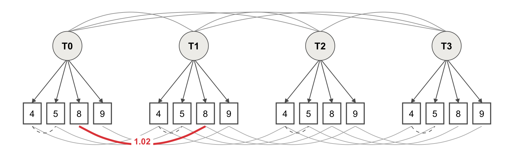
wa_all_boundary |>
select(-key) |>
mutate(across(where(is.double), \(x) round(x, 3)))| estimate | value | se | ci.lower | ci.upper |
|---|---|---|---|---|
| correlation: item 8, T0 with T1 | 1.025 | 0.252 | 0.53 | 1.519 |
Is it within sampling error? The estimate against the bound it crosses, with its 95 % interval:
plot_boundary(wa_all_boundary)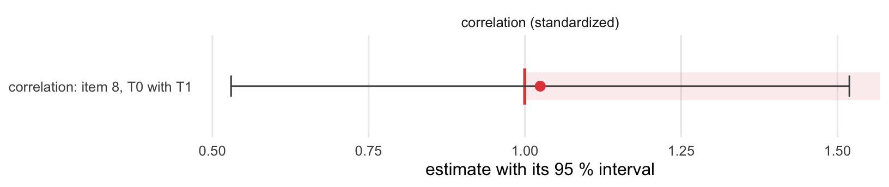
The residual of item 8 in January correlates with itself in March at 1.025, beyond 1, and its interval reaches back into the possible range. What does the stop rule do? Adjustment A sets it at 0; B gives each item one autocorrelation; D leaves them out. Each is fitted and checked:
wa_all_zero <- "All: womenAttitude8_T0 ~~ womenAttitude8_T1"
wa_all_rule <- list(
A = invariance_syntax("womenAttitude", "free", "free", two_groups = FALSE,
zero = wa_all_zero),
B = invariance_syntax("womenAttitude", "free", "free", two_groups = FALSE,
autocorrelations = "equal"),
D = invariance_syntax("womenAttitude", "free", "free", two_groups = FALSE,
autocorrelations = "none")) |>
map(\(model) df_wide |>
cfa(model = model, data = _, estimator = "MLR", missing = "fiml"))
wa_all_rule |>
map(\(fit) bind_cols(gates(fit), fit_row(fit))) |>
list_rbind(names_to = "adjustment") |>
mutate(across(where(is.double), \(x) round(x, 3)),
across(c(converged, admissible), mark))| adjustment | converged | admissible | chisq | df | CFI | RMSEA | SRMR |
|---|---|---|---|---|---|---|---|
| A | ✓ | ✓ | 232.421 | 71 | 0.888 | 0.098 | 0.108 |
| B | ✓ | ✗ | 241.918 | 90 | 0.868 | 0.095 | 0.103 |
| D | ✓ | ✓ | 315.955 | 94 | 0.826 | 0.106 | 0.110 |
None passes both checks: A and D are possible but fit worse than the criterion allows (CFI = .888 and .826), and B is not possible. What remains is adjustment E: the items as ordinal, in three categories. Few answers lie below 10:
wa_ordinal_items <- map(waves, \(w) at(model_items$womenAttitude, w)) |>
list_c()
# the answers in three categories: up to 8, 9 and 10
wa_ordinal_data <- df_wide |>
select(condition, all_of(wa_ordinal_items)) |>
mutate(across(all_of(wa_ordinal_items),
\(x) cut(x, c(-Inf, 8, 9, Inf),
labels = c("up to 8", "9", "10"),
ordered_result = TRUE)))
wa_ordinal_data |>
pivot_longer(-condition, names_to = "item", values_to = "answer") |>
filter(!is.na(answer)) |>
count(condition, answer) |>
pivot_wider(names_from = answer, values_from = n)| condition | up to 8 | 9 | 10 |
|---|---|---|---|
| Control | 133 | 191 | 2195 |
| Experimental | 143 | 186 | 1702 |
The ordinal configural model, written by measEq.syntax() of semTools with the identification of Wu and Estabrook (2016), first with and then without the autocorrelated residuals, in all persons:
wa_ordinal_configural <- map_chr(waves, \(w) str_c(
"F_", w, " =~ ", str_c(at(model_items$womenAttitude, w), collapse = " + ")
)) |>
str_c(collapse = "\n")
wa_ordinal_within <- str_c(at("womenAttitude4", waves), " ~~ ",
at("womenAttitude5", waves), collapse = "\n")
# the ordinal configural model of a data set, with or without the
# autocorrelated residuals ("all" or FALSE)
wa_ordinal_fit <- \(data, autocorrelations) {
measEq.syntax(
configural.model = wa_ordinal_configural, data = data,
ordered = wa_ordinal_items, parameterization = "theta",
ID.fac = "std.lv", ID.cat = "Wu.Estabrook.2016",
longFacNames = list(F = str_c("F_", waves)), long.equal = "",
auto = autocorrelations) |>
as.character() |>
str_c(wa_ordinal_within, sep = "\n") |>
cfa(data = data, ordered = wa_ordinal_items,
parameterization = "theta", estimator = "WLSMV",
missing = "pairwise")
}
wa_ordinal_all <- list(`with autocorrelations` = "all",
`without autocorrelations` = FALSE) |>
map(\(autocorrelations) wa_ordinal_fit(select(wa_ordinal_data,
-condition),
autocorrelations))
# lavaan's own check leaves out the residuals of ordinal items; whether
# they are positive definite is checked here by their smallest eigenvalue
wa_ordinal_gates <- wa_ordinal_all |>
map(\(fit) tibble(converged = lavInspect(fit, "converged"),
eigenvalue = smallest_eigenvalues(fit)$residual,
admissible = suppressWarnings(
lavInspect(fit, "post.check")) & eigenvalue > 0,
CFI = fitMeasures(fit, "cfi.scaled"))) |>
list_rbind(names_to = "model")
wa_ordinal_gates |>
mutate(across(where(is.double), \(x) round(x, 3)),
across(c(converged, admissible), mark))| model | converged | eigenvalue | admissible | CFI |
|---|---|---|---|---|
| with autocorrelations | ✓ | -2.541 | ✗ | 0.999 |
| without autocorrelations | ✓ | 0.366 | ✓ | 0.998 |
With the autocorrelations, the ordinal model is not possible: its residual covariances are not positive definite (smallest eigenvalue -2.54), with residual correlations over the waves beyond ±1. Without the autocorrelations, it is possible and fits closely (CFI = .998): in all persons, one factor per wave describes the four items once their answers are taken as ordinal. Its correlations rest on thin tables: most answers are a 10.
Next → Steps 3 to 5, each group on its own: first the control group, then the experimental group.
Control group · Steps 3 to 5
The 252 persons of the control group, trained between September and December.
Step 3 · The checks control
What is fitted? The three models of this group: configural, with equal loadings over the waves (Step 4), and with equal intercepts as well (Step 5); checks 1 to 6 of each:
wa_con_models <- time_steps |>
pmap(\(level, loadings, intercepts) invariance_syntax(
"womenAttitude", loadings, intercepts, two_groups = FALSE)) |>
set_names(time_steps$level)
wa_con_fits <- wa_con_models |>
map(\(model) control |>
cfa(model = model, data = _, estimator = "MLR", missing = "fiml"))
possible_table(wa_con_fits)| model | estimation | variances | correlations | residuals | factors | standard errors |
|---|---|---|---|---|---|---|
| configural | ✓ | ✗ | ✗ | ✗ | ✓ | ✓ |
| loadings over time | ✓ | ✓ | ✗ | ✗ | ✓ | ✓ |
| intercepts over time | ✓ | ✗ | ✗ | ✗ | ✓ | ✓ |
None is possible. What does the stop rule give? A, repeated until no new estimate falls at a bound, sets eighteen estimates at 0, in item 8 at every wave and in items 4 and 5 in December; B and D change the links over time:
wa_con_zero <- c(
"Control: womenAttitude8_T0 ~~ womenAttitude8_T0",
"Control: womenAttitude8_T0 ~~ womenAttitude8_T1",
"Control: womenAttitude8_T0 ~~ womenAttitude8_T2",
"Control: womenAttitude8_T1 ~~ womenAttitude8_T3",
"Control: womenAttitude8_T0 ~~ womenAttitude8_T3",
"Control: womenAttitude8_T1 ~~ womenAttitude8_T2",
"Control: womenAttitude8_T2 ~~ womenAttitude8_T2",
"Control: womenAttitude8_T2 ~~ womenAttitude8_T3",
"Control: womenAttitude8_T1 ~~ womenAttitude8_T1",
"Control: womenAttitude4_T3 ~~ womenAttitude4_T3",
"Control: womenAttitude5_T3 ~~ womenAttitude5_T3",
"Control: womenAttitude4_T3 ~~ womenAttitude5_T3",
"Control: womenAttitude4_T0 ~~ womenAttitude4_T3",
"Control: womenAttitude4_T1 ~~ womenAttitude4_T3",
"Control: womenAttitude4_T2 ~~ womenAttitude4_T3",
"Control: womenAttitude5_T0 ~~ womenAttitude5_T3",
"Control: womenAttitude5_T1 ~~ womenAttitude5_T3",
"Control: womenAttitude5_T2 ~~ womenAttitude5_T3")
wa_con_rule <- list(A = list(zero = wa_con_zero),
B = list(autocorrelations = "equal"),
D = list(autocorrelations = "none")) |>
map(\(adjustment) time_steps |>
pmap(\(level, loadings, intercepts) do.call(
invariance_syntax,
c(list("womenAttitude", loadings, intercepts, two_groups = FALSE),
adjustment))) |>
# a model that cannot be estimated at all gives NULL
map(possibly(\(model) control |>
cfa(model = model, data = _, estimator = "MLR",
missing = "fiml"))) |>
set_names(time_steps$level))
wa_con_rule |>
map(\(fits) fits |>
map(gates) |>
list_rbind(names_to = "level")) |>
list_rbind(names_to = "adjustment") |>
mutate(across(c(converged, admissible), mark))| adjustment | level | converged | admissible |
|---|---|---|---|
| A | configural | ✗ | ✗ |
| A | loadings over time | ✗ | ✗ |
| A | intercepts over time | ✗ | ✗ |
| B | configural | ✓ | ✗ |
| B | loadings over time | ✓ | ✗ |
| B | intercepts over time | ✓ | ✗ |
| D | configural | ✓ | ✗ |
| D | loadings over time | ✓ | ✗ |
| D | intercepts over time | ✓ | ✗ |
With A, none of the three models can be estimated at all: with eighteen estimates at 0, among them the residual variances of items 4 and 5 in December, the covariances the model implies have no inverse. With B and D, the models are estimated, but none is possible. And E, the items as ordinal? The ordinal configural model of the control group, with and without the autocorrelated residuals:
wa_con_ordinal <- list(`with autocorrelations` = "all",
`without autocorrelations` = FALSE) |>
map(\(autocorrelations) wa_ordinal_fit(
wa_ordinal_data |> filter(condition == "Control") |> select(-condition),
autocorrelations))
wa_con_ordinal |>
map(\(fit) tibble(converged = lavInspect(fit, "converged"))) |>
list_rbind(names_to = "model") |>
mutate(converged = mark(converged))| model | converged |
|---|---|
| with autocorrelations | ✗ |
| without autocorrelations | ✗ |
Neither converges: within one group, the two lower categories hold too few answers per item and wave to estimate the ordinal correlations. No change of the stop rule makes a model of the control group possible, and Women Attitude stops here.
Next → no further step in this group and none across the groups; the experimental group is shown for completeness, and Steps 9 to 12 record why the construct stops.
Experimental group · Step 3
The 199 persons of the experimental group, trained between January and March. Shown for completeness, since the construct has stopped in the control group.
Step 3 · The checks experimental
Are the models of this group possible? As specified, and with adjustment A:
wa_exp_zero <- c(
"Experimental: womenAttitude8_T3 ~~ womenAttitude8_T3",
"Experimental: womenAttitude8_T0 ~~ womenAttitude8_T3",
"Experimental: womenAttitude8_T1 ~~ womenAttitude8_T3",
"Experimental: womenAttitude8_T2 ~~ womenAttitude8_T3",
"Experimental: womenAttitude8_T0 ~~ womenAttitude8_T1",
"Experimental: womenAttitude8_T0 ~~ womenAttitude8_T0",
"Experimental: womenAttitude8_T0 ~~ womenAttitude8_T2",
"Experimental: womenAttitude8_T1 ~~ womenAttitude8_T2")
wa_exp_rule <- list(`as specified` = list(), A = list(zero = wa_exp_zero)) |>
map(\(adjustment) time_steps |>
pmap(\(level, loadings, intercepts) do.call(
invariance_syntax,
c(list("womenAttitude", loadings, intercepts, two_groups = FALSE),
adjustment))) |>
# a model that cannot be estimated at all gives NULL
map(possibly(\(model) experimental |>
cfa(model = model, data = _, estimator = "MLR",
missing = "fiml"))) |>
set_names(time_steps$level))
wa_exp_rule |>
map(\(fits) fits |>
map(gates) |>
list_rbind(names_to = "level")) |>
list_rbind(names_to = "adjustment") |>
mutate(across(c(converged, admissible), mark))| adjustment | level | converged | admissible |
|---|---|---|---|
| as specified | configural | ✓ | ✗ |
| as specified | loadings over time | ✓ | ✗ |
| as specified | intercepts over time | ✓ | ✗ |
| A | configural | ✓ | ✓ |
| A | loadings over time | ✓ | ✓ |
| A | intercepts over time | ✓ | ✓ |
Here adjustment A, eight estimates of item 8 set at 0, makes all three models possible. Without a possible model of the control group, however, the groups cannot be compared.
Next → Steps 9 to 12, the verdict.
The verdict · Steps 9 to 12
Step 9 · The verdict
What does the construct reach?
wa_verdict <- fit_row(wa_all) |>
mutate(part = "all persons", level = "configural",
Chen = fits_configural(CFI), small_sample = Chen, .before = 1)
wa_verdict |>
select(part, level, CFI, Chen) |>
mutate(CFI = round(CFI, 3), Chen = mark(Chen))| part | level | CFI | Chen |
|---|---|---|---|
| all persons | configural | 0.888 | ✗ |
In all persons the configural model fits only with the items taken as ordinal; in the control group no model is possible at all, continuous or ordinal. No step of the double test can be read.
Step 10 · Partial invariance
Is it possible? No: partial invariance needs a possible model to start from.
Step 11 · Alignment
How far are the eight cells from invariance? Alignment starts from the configural model of both groups, which is not possible here; it is left out.
wa_alignment <- c(loadings = NA_real_, intercepts = NA_real_)
wa_shift <- NA_real_Step 12 · What follows
Which model goes on?
wa_status <- tibble(construct = "womenAttitude",
status = "stopped (no possible model, control group)",
set_to_0 = list(c(wa_con_zero, wa_exp_zero)),
freed = list(character()),
autocorrelations = list("free"),
chapter_11 = FALSE)
show_status(wa_status)| entry | value |
|---|---|
| construct | womenAttitude |
| status | stopped (no possible model, control group) |
| set_to_0 | Control: womenAttitude8_T0 ~~ womenAttitude8_T0; Control: womenAttitude8_T0 ~~ womenAttitude8_T1; Control: womenAttitude8_T0 ~~ womenAttitude8_T2; Control: womenAttitude8_T1 ~~ womenAttitude8_T3; Control: womenAttitude8_T0 ~~ womenAttitude8_T3; Control: womenAttitude8_T1 ~~ womenAttitude8_T2; Control: womenAttitude8_T2 ~~ womenAttitude8_T2; Control: womenAttitude8_T2 ~~ womenAttitude8_T3; Control: womenAttitude8_T1 ~~ womenAttitude8_T1; Control: womenAttitude4_T3 ~~ womenAttitude4_T3; Control: womenAttitude5_T3 ~~ womenAttitude5_T3; Control: womenAttitude4_T3 ~~ womenAttitude5_T3; Control: womenAttitude4_T0 ~~ womenAttitude4_T3; Control: womenAttitude4_T1 ~~ womenAttitude4_T3; Control: womenAttitude4_T2 ~~ womenAttitude4_T3; Control: womenAttitude5_T0 ~~ womenAttitude5_T3; Control: womenAttitude5_T1 ~~ womenAttitude5_T3; Control: womenAttitude5_T2 ~~ womenAttitude5_T3; Experimental: womenAttitude8_T3 ~~ womenAttitude8_T3; Experimental: womenAttitude8_T0 ~~ womenAttitude8_T3; Experimental: womenAttitude8_T1 ~~ womenAttitude8_T3; Experimental: womenAttitude8_T2 ~~ womenAttitude8_T3; Experimental: womenAttitude8_T0 ~~ womenAttitude8_T1; Experimental: womenAttitude8_T0 ~~ womenAttitude8_T0; Experimental: womenAttitude8_T0 ~~ womenAttitude8_T2; Experimental: womenAttitude8_T1 ~~ womenAttitude8_T2 |
| freed | |
| autocorrelations | free |
| chapter_11 | FALSE |
None: Women Attitude does not enter the latent comparisons of Chapter 11. With most answers at the top of the scale, its items carry too little variation for a factor model in each group. Its score enters the comparisons of means of Chapters 9 and 10.
7.5 Well-being (H3)
Which constructs? The ten constructs of the third hypothesis.
Flourishing
Its path through the steps. One row per step below, judged under Chen’s cutoffs; the label marks the data of each step:
| Step | Data | Question | Result | Next |
|---|---|---|---|---|
| 2 | all persons | Configural model possible and fitting? | yes | each group |
| 3 | control | Its three models possible? | yes | over time |
| 4 | control | Loadings the same over the waves? | yes | intercepts |
| 5 | control | Intercepts the same over the waves? | yes | experimental group |
| 3 | experimental | Its three models possible? | yes | over time |
| 4 | experimental | Loadings the same over the waves? | yes | intercepts |
| 5 | experimental | Intercepts the same over the waves? | yes | both groups |
| 6 | both groups | Misfit from the groups? | no, as in random halves | across the groups |
| 7 | both groups | Loadings the same in both groups? | yes | intercepts |
| 8 | both groups | Intercepts the same in both groups? | yes | verdict |
| 9–12 | Verdict | invariant | Chapter 11 |
All persons · Steps 1 and 2
Step 1 · The model
What does the model look like? The four items of Chapter 6 (1, 2, 3 and 4) at each wave, their loadings averaging 1, with the residual covariance of items 1 and 2 at every wave. In the figure, the circles are the factors of the four waves, the boxes the items by number, the arrows the loadings. The arcs above link the factors; those below link each item with itself at the next wave, the dashed ones the residual covariances within a wave. The links between waves further apart belong to the model as well and are left out of the figure:
plot_model("Flourishing")
How does lavaan read it? The configural model of one group, as invariance_syntax() writes it:
fl_configural_model <- invariance_syntax(
"Flourishing", loadings = "free", intercepts = "free",
two_groups = FALSE)
cat(fl_configural_model)F_T0 =~ NA*Flourishing1_T0 +
l1_T0*Flourishing1_T0 +
l2_T0*Flourishing2_T0 +
l3_T0*Flourishing3_T0 +
l4_T0*Flourishing4_T0
F_T1 =~ NA*Flourishing1_T1 +
l1_T1*Flourishing1_T1 +
l2_T1*Flourishing2_T1 +
l3_T1*Flourishing3_T1 +
l4_T1*Flourishing4_T1
F_T2 =~ NA*Flourishing1_T2 +
l1_T2*Flourishing1_T2 +
l2_T2*Flourishing2_T2 +
l3_T2*Flourishing3_T2 +
l4_T2*Flourishing4_T2
F_T3 =~ NA*Flourishing1_T3 +
l1_T3*Flourishing1_T3 +
l2_T3*Flourishing2_T3 +
l3_T3*Flourishing3_T3 +
l4_T3*Flourishing4_T3
l1_T0 + l2_T0 + l3_T0 + l4_T0 == 4
l1_T1 + l2_T1 + l3_T1 + l4_T1 == 4
l1_T2 + l2_T2 + l3_T2 + l4_T2 == 4
l1_T3 + l2_T3 + l3_T3 + l4_T3 == 4
F_T0 ~ 0*1
F_T1 ~ 0*1
F_T2 ~ 0*1
F_T3 ~ 0*1
F_T0 ~~ F_T1
F_T0 ~~ F_T2
F_T0 ~~ F_T3
F_T1 ~~ F_T2
F_T1 ~~ F_T3
F_T2 ~~ F_T3
Flourishing1_T0 ~~ Flourishing2_T0
Flourishing1_T1 ~~ Flourishing2_T1
Flourishing1_T2 ~~ Flourishing2_T2
Flourishing1_T3 ~~ Flourishing2_T3
Flourishing1_T0 ~~ Flourishing1_T1
Flourishing1_T0 ~~ Flourishing1_T2
Flourishing1_T0 ~~ Flourishing1_T3
Flourishing1_T1 ~~ Flourishing1_T2
Flourishing1_T1 ~~ Flourishing1_T3
Flourishing1_T2 ~~ Flourishing1_T3
Flourishing2_T0 ~~ Flourishing2_T1
Flourishing2_T0 ~~ Flourishing2_T2
Flourishing2_T0 ~~ Flourishing2_T3
Flourishing2_T1 ~~ Flourishing2_T2
Flourishing2_T1 ~~ Flourishing2_T3
Flourishing2_T2 ~~ Flourishing2_T3
Flourishing3_T0 ~~ Flourishing3_T1
Flourishing3_T0 ~~ Flourishing3_T2
Flourishing3_T0 ~~ Flourishing3_T3
Flourishing3_T1 ~~ Flourishing3_T2
Flourishing3_T1 ~~ Flourishing3_T3
Flourishing3_T2 ~~ Flourishing3_T3
Flourishing4_T0 ~~ Flourishing4_T1
Flourishing4_T0 ~~ Flourishing4_T2
Flourishing4_T0 ~~ Flourishing4_T3
Flourishing4_T1 ~~ Flourishing4_T2
Flourishing4_T1 ~~ Flourishing4_T3
Flourishing4_T2 ~~ Flourishing4_T3Next → Step 2, the configural model in all persons.
Step 2 · The configural model all persons
What is fitted? The model of Step 1, with loadings and intercepts free at every wave, in all persons together:
fl_all <- df_wide |>
cfa(model = fl_configural_model, data = _, estimator = "MLR",
missing = "fiml")Does it pass the checks? The eleven checks of 7.1, in their order:
fl_all_checks <- model_checks(fl_all, judge_fit = TRUE)
fl_all_checks| check | what | value | criterion | holds |
|---|---|---|---|---|
| 1 estimation | converged | yes | yes | ✓ |
| 2 variances | smallest residual variance: item 4 at T1 | .904 | above 0 | ✓ |
| 3 correlations | largest correlation: item 4, T1 with T2 | .634 | within ±1 | ✓ |
| 4 residuals | smallest eigenvalue of the residual covariances | .352 | above 0 | ✓ |
| 5 factors | smallest eigenvalue of the factor covariances | .554 | above 0 | ✓ |
| 6 standard errors | estimated for every free parameter | yes | yes | ✓ |
| 7 fit | CFI | .995 | at least .90 | ✓ |
| 8 fit | RMSEA [90 % interval] | .018 [.000, .034] | reported | – |
| 9 fit | SRMR | .043 | reported | – |
| 10 strain | largest modification index: item 3 at T3 on the factor at T1 | 12.0 | reported | – |
| 11 estimates | smallest standardized loading: item 3 at T0 | .55 | reported | – |
Every check that decides holds: the estimation converged, the solution is proper (checks 1 to 6), and the model fits (CFI = .995, at least .90). Checks 8 to 11 are reported; Step 6 returns to the fit, and Steps 4, 5, 7 and 8 to the loadings.
Are the estimates sensible? The standardized loading of every item at every wave, and the correlations of the factors:
loading_table(fl_all)| item | T0 | T1 | T2 | T3 |
|---|---|---|---|---|
| item 1 | 0.79 | 0.75 | 0.59 | 0.78 |
| item 2 | 0.79 | 0.74 | 0.69 | 0.71 |
| item 3 | 0.55 | 0.64 | 0.65 | 0.61 |
| item 4 | 0.68 | 0.77 | 0.68 | 0.77 |
factor_correlations(fl_all)| T0–T1 | T0–T2 | T0–T3 | T1–T2 | T1–T3 | T2–T3 |
|---|---|---|---|---|---|
| 0.62 | 0.59 | 0.53 | 0.59 | 0.63 | 0.59 |
Every item loads between .55 and .79, and the factors of neighbouring waves correlate between .59 and .62. Why are loadings and intercepts not tested here? The groups were trained at different waves, so a model of all persons would average a trained and an untrained group at the same wave (7.1). All persons show only whether one factor per wave describes the items; the tests over time follow in each group, and then across the groups.
Next → Steps 3 to 5, each group on its own: first the control group, then the experimental group.
Control group · Steps 3 to 5
The 252 persons of the control group, trained between September and December.
Step 3 · The checks control
What is fitted? The three models of this group: configural, with equal loadings over the waves (Step 4), and with equal intercepts as well (Step 5):
fl_con_models <- time_steps |>
pmap(\(level, loadings, intercepts) invariance_syntax(
"Flourishing", loadings, intercepts, two_groups = FALSE)) |>
set_names(time_steps$level)
fl_con_fits <- fl_con_models |>
map(\(model) control |>
cfa(model = model, data = _, estimator = "MLR", missing = "fiml"))Does the configural model pass the checks? The eleven checks of 7.1:
fl_con_checks <- model_checks(fl_con_fits$configural)
fl_con_checks| check | what | value | criterion | holds |
|---|---|---|---|---|
| 1 estimation | converged | yes | yes | ✓ |
| 2 variances | smallest residual variance: item 1 at T3 | .403 | above 0 | ✓ |
| 3 correlations | largest correlation: item 4, T1 with T2 | .714 | within ±1 | ✓ |
| 4 residuals | smallest eigenvalue of the residual covariances | .240 | above 0 | ✓ |
| 5 factors | smallest eigenvalue of the factor covariances | .456 | above 0 | ✓ |
| 6 standard errors | estimated for every free parameter | yes | yes | ✓ |
| 7 fit | CFI | .975 | reported | – |
| 8 fit | RMSEA [90 % interval] | .043 [.023, .060] | reported | – |
| 9 fit | SRMR | .070 | reported | – |
| 10 strain | largest modification index: item 3 at T3 on the factor at T1 | 16.8 | reported | – |
| 11 estimates | smallest standardized loading: item 1 at T2 | .55 | reported | – |
Checks 1 to 6 hold: the solution is proper. Its fit is reported (checks 7 to 9); whether one factor per wave describes the items was judged once, in all persons (Step 2). Are the other two models possible as well? Checks 1 to 6 of all three:
possible_table(fl_con_fits)| model | estimation | variances | correlations | residuals | factors | standard errors |
|---|---|---|---|---|---|---|
| configural | ✓ | ✓ | ✓ | ✓ | ✓ | ✓ |
| loadings over time | ✓ | ✓ | ✓ | ✓ | ✓ | ✓ |
| intercepts over time | ✓ | ✓ | ✓ | ✓ | ✓ | ✓ |
All three are possible as specified.
Next → Step 4, the loadings over time in this group.
Step 4 · Loadings over time control
Do the loadings stay the same? Each item keeps one loading over the four waves:
fl_con_steps <- step_table(fl_con_fits)
show_steps(fl_con_steps, "loadings over time")| level | df | CFI | ΔCFI | ΔRMSEA | ΔSRMR | p |
|---|---|---|---|---|---|---|
| loadings over time | 79 | 0.966 | -0.01 | 0.005 | 0.007 | 0.093 |
They do under Chen’s cutoffs (ΔCFI = -.010), though not under those of the small-sample reading, and the χ² test does not reject them (p = .093).
Next → Step 5, with the loadings held equal over the waves.
Step 5 · Intercepts over time control
Do the intercepts stay the same? Each item keeps one intercept over the four waves; the latent means are freed:
fl_con_steps <- step_table(fl_con_fits)
show_steps(fl_con_steps, "intercepts over time")| level | df | CFI | ΔCFI | ΔRMSEA | ΔSRMR | p |
|---|---|---|---|---|---|---|
| intercepts over time | 88 | 0.966 | 0 | -0.003 | 0.003 | 0.444 |
They do, under both sets of cutoffs (ΔCFI = .000), and the χ² test does not reject them (p = .444).
Next → Steps 3 to 5 in the experimental group.
Experimental group · Steps 3 to 5
The 199 persons of the experimental group, trained between January and March.
Step 3 · The checks experimental
What is fitted? The three models of this group: configural, with equal loadings over the waves (Step 4), and with equal intercepts as well (Step 5):
fl_exp_models <- time_steps |>
pmap(\(level, loadings, intercepts) invariance_syntax(
"Flourishing", loadings, intercepts, two_groups = FALSE)) |>
set_names(time_steps$level)
fl_exp_fits <- fl_exp_models |>
map(\(model) experimental |>
cfa(model = model, data = _, estimator = "MLR", missing = "fiml"))Does the configural model pass the checks? The eleven checks of 7.1:
fl_exp_checks <- model_checks(fl_exp_fits$configural)
fl_exp_checks| check | what | value | criterion | holds |
|---|---|---|---|---|
| 1 estimation | converged | yes | yes | ✓ |
| 2 variances | smallest residual variance: item 4 at T1 | .608 | above 0 | ✓ |
| 3 correlations | largest correlation: the factors at T2 and T3 | .933 | within ±1 | ✓ |
| 4 residuals | smallest eigenvalue of the residual covariances | .285 | above 0 | ✓ |
| 5 factors | smallest eigenvalue of the factor covariances | .057 | above 0 | ✓ |
| 6 standard errors | estimated for every free parameter | yes | yes | ✓ |
| 7 fit | CFI | .959 | reported | – |
| 8 fit | RMSEA [90 % interval] | .054 [.034, .072] | reported | – |
| 9 fit | SRMR | .080 | reported | – |
| 10 strain | largest modification index: item 3 at T3 on the factor at T2 | 9.6 | reported | – |
| 11 estimates | smallest standardized loading: item 3 at T3 | .48 | reported | – |
Checks 1 to 6 hold: the solution is proper. Its fit is reported (checks 7 to 9); whether one factor per wave describes the items was judged once, in all persons (Step 2). Are the other two models possible as well? Checks 1 to 6 of all three:
possible_table(fl_exp_fits)| model | estimation | variances | correlations | residuals | factors | standard errors |
|---|---|---|---|---|---|---|
| configural | ✓ | ✓ | ✓ | ✓ | ✓ | ✓ |
| loadings over time | ✓ | ✓ | ✓ | ✓ | ✓ | ✓ |
| intercepts over time | ✓ | ✓ | ✓ | ✓ | ✓ | ✓ |
All three are possible as specified.
Next → Step 4, the loadings over time in this group.
Step 4 · Loadings over time experimental
Do the loadings stay the same? Each item keeps one loading over the four waves:
fl_exp_steps <- step_table(fl_exp_fits)
show_steps(fl_exp_steps, "loadings over time")| level | df | CFI | ΔCFI | ΔRMSEA | ΔSRMR | p |
|---|---|---|---|---|---|---|
| loadings over time | 79 | 0.961 | 0.002 | -0.004 | 0.013 | 0.877 |
They do, under both sets of cutoffs (ΔCFI = .002), and the χ² test does not reject them (p = .877).
Next → Step 5, with the loadings held equal over the waves.
Step 5 · Intercepts over time experimental
Do the intercepts stay the same? Each item keeps one intercept over the four waves; the latent means are freed:
fl_exp_steps <- step_table(fl_exp_fits)
show_steps(fl_exp_steps, "intercepts over time")| level | df | CFI | ΔCFI | ΔRMSEA | ΔSRMR | p |
|---|---|---|---|---|---|---|
| intercepts over time | 88 | 0.953 | -0.008 | 0.002 | 0.002 | 0.022 |
They do under Chen’s cutoffs (ΔCFI = -.008), though not under those of the small-sample reading; the χ² test, which detects small differences, rejects them (p = .022).
Next → Step 6, both groups together, each with what it needed.
Both groups · Steps 6 to 8
Both groups together, with what each group needed.
Step 6 · Do the groups add misfit? both groups
How well does the configural model fit in the two groups, and in random halves of the persons?
fl_both_models <- group_steps |>
pmap(\(level, loadings, intercepts) invariance_syntax(
"Flourishing", loadings, intercepts)) |>
set_names(group_steps$level)
fl_both_fits <- fl_both_models |>
map(\(model) df_wide |>
cfa(model = model, data = _, group = "condition",
estimator = "MLR", missing = "fiml"))
fl_halves <- c(`random halves 1` = 1, `random halves 2` = 2,
`random halves 3` = 3) |>
map(\(seed) {
set.seed(seed)
df_wide |>
mutate(condition = sample(condition)) |>
cfa(model = fl_both_models$configural, data = _, group = "condition",
estimator = "MLR", missing = "fiml")
})
fl_fit_table <- c(list(`two groups` = fl_both_fits$configural),
fl_halves) |>
map(fit_row) |>
list_rbind(names_to = "model")
fl_fit_table |>
mutate(across(where(is.double), \(x) round(x, 3)))| model | chisq | df | CFI | RMSEA | SRMR |
|---|---|---|---|---|---|
| two groups | 227.512 | 140 | 0.968 | 0.048 | 0.075 |
| random halves 1 | 174.920 | 140 | 0.985 | 0.033 | 0.063 |
| random halves 2 | 267.695 | 140 | 0.953 | 0.060 | 0.087 |
| random halves 3 | 168.333 | 140 | 0.983 | 0.035 | 0.068 |
Are all four models of both groups possible? Checks 1 to 6 of each:
possible_table(fl_both_fits)| model | estimation | variances | correlations | residuals | factors | standard errors |
|---|---|---|---|---|---|---|
| configural | ✓ | ✓ | ✓ | ✓ | ✓ | ✓ |
| over time | ✓ | ✓ | ✓ | ✓ | ✓ | ✓ |
| loadings across groups | ✓ | ✓ | ✓ | ✓ | ✓ | ✓ |
| intercepts across groups | ✓ | ✓ | ✓ | ✓ | ✓ | ✓ |
All four models of both groups are possible, and the configural model fits closely in the two groups (CFI = .968) as in the random halves.
Next → Step 7, the loadings across the groups.
Step 7 · Loadings across the groups both groups
Are the loadings the same in both groups?
fl_both_steps <- step_table(fl_both_fits[-1])
show_steps(fl_both_steps, "loadings across groups")| level | df | CFI | ΔCFI | ΔRMSEA | ΔSRMR | p |
|---|---|---|---|---|---|---|
| loadings across groups | 179 | 0.961 | 0 | -0.001 | -0.002 | 0.824 |
They are, under both sets of cutoffs (ΔCFI = .000), and the χ² test does not reject them (p = .824).
Next → Step 8, the intercepts across the groups, with the loadings held equal.
Step 8 · Intercepts across the groups both groups
Are the intercepts the same in both groups? Each item keeps one intercept, in every cell:
show_steps(fl_both_steps, "intercepts across groups")| level | df | CFI | ΔCFI | ΔRMSEA | ΔSRMR | p |
|---|---|---|---|---|---|---|
| intercepts across groups | 182 | 0.962 | 0.001 | -0.001 | 0 | 0.783 |
They are, under both sets of cutoffs (ΔCFI = .001), and the χ² test does not reject them (p = .783).
Where do the latent means lie? In the final model, on the 0 to 10 scale of the items:
plot_latent_means(fl_both_fits$`intercepts across groups`)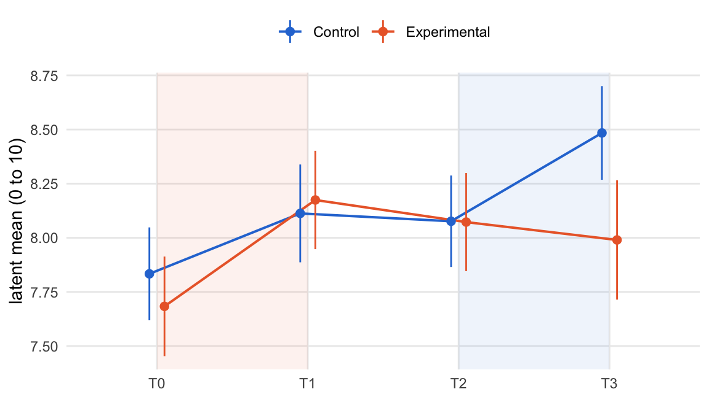
Next → Step 9, the verdict over all steps.
The verdict · Steps 9 to 12
Step 9 · The verdict
Which steps hold, under both sets of cutoffs? All steps of the construct, in all persons, in each group, and across the groups:
fl_verdict <- bind_rows(
`all persons` = fit_row(fl_all) |> mutate(level = "configural"),
control = fl_con_steps |> filter(level != "configural"),
experimental = fl_exp_steps |> filter(level != "configural"),
`both groups` = fl_both_steps |> filter(level != "over time"),
.id = "part") |>
mutate(Chen = if_else(level == "configural", fits_configural(CFI),
holds_chen(delta_CFI, delta_RMSEA)),
small_sample = if_else(level == "configural", Chen,
holds_small(level, delta_CFI, delta_RMSEA,
delta_SRMR)))
fl_verdict |>
transmute(part, level, ΔCFI = delta_CFI, ΔRMSEA = delta_RMSEA,
ΔSRMR = delta_SRMR, p, Chen = mark(Chen),
`small n` = mark(small_sample)) |>
mutate(across(where(is.double), \(x) round(x, 3)))| part | level | ΔCFI | ΔRMSEA | ΔSRMR | p | Chen | small n |
|---|---|---|---|---|---|---|---|
| all persons | configural | ✓ | ✓ | ||||
| control | loadings over time | -0.010 | 0.005 | 0.007 | 0.093 | ✓ | ✗ |
| control | intercepts over time | 0.000 | -0.003 | 0.003 | 0.444 | ✓ | ✓ |
| experimental | loadings over time | 0.002 | -0.004 | 0.013 | 0.877 | ✓ | ✓ |
| experimental | intercepts over time | -0.008 | 0.002 | 0.002 | 0.022 | ✓ | ✗ |
| both groups | loadings across groups | 0.000 | -0.001 | -0.002 | 0.824 | ✓ | ✓ |
| both groups | intercepts across groups | 0.001 | -0.001 | 0.000 | 0.783 | ✓ | ✓ |
Under Chen’s cutoffs every step holds: the measurement of Flourishing is the same at all four waves, in each group and across the groups. The small-sample reading would stop at two steps: the loadings over time in the control group and the intercepts over time in the experimental group.
Step 10 · Partial invariance
Is it needed? No: under Chen’s cutoffs every step holds.
Step 11 · Alignment
How far are the eight cells from invariance when nothing is held equal? The share of loadings and intercepts (in %) more than .10 item standard deviations from their common aligned value:
fl_input <- alignment_input(fl_both_fits$configural,
model_items$Flourishing)
fl_aligned <- invariance.alignment(lambda = fl_input$lambda,
nu = fl_input$nu, wgt = fl_input$weights)
fl_tolerance <- invariance_alignment_constraints(
fl_aligned, lambda_parm_tol = .10, nu_parm_tol = .10)
tibble(loadings = fl_tolerance$lambda_list$prop_noninvariance,
intercepts = fl_tolerance$nu_list$prop_noninvariance) |>
mutate(across(everything(), \(x) round(x, 1)))| loadings | intercepts |
|---|---|
| 18.8 | 9.4 |
Does it move the latent means? The latent mean of each cell as a distance from the control group in January, in its standard deviations, from the final model and aligned:
fl_final <- fl_both_fits$`intercepts across groups`
fl_sd_T0 <- sqrt(lavInspect(fl_final, "cov.lv")$Control["F_T0", "F_T0"])
fl_alignment_means <- parameterEstimates(fl_final) |>
filter(op == "~1", str_starts(lhs, "F_")) |>
transmute(cell = str_c(lavInspect(fl_final, "group.label")[group],
" ", str_remove(lhs, "^F_")),
final = (est - first(est)) / fl_sd_T0,
aligned = fl_aligned$pars$alpha0,
difference = aligned - final)
fl_alignment_means |>
mutate(across(where(is.double), \(x) round(x, 3)))| cell | final | aligned | difference |
|---|---|---|---|
| Control T0 | 0.000 | 0.000 | 0.000 |
| Control T1 | 0.213 | 0.195 | -0.017 |
| Control T2 | 0.185 | 0.241 | 0.056 |
| Control T3 | 0.496 | 0.558 | 0.062 |
| Experimental T0 | -0.114 | -0.123 | -0.009 |
| Experimental T1 | 0.260 | 0.214 | -0.046 |
| Experimental T2 | 0.182 | 0.164 | -0.018 |
| Experimental T3 | 0.119 | 0.211 | 0.092 |
18.8 % of the loadings and 9.4 % of the intercepts lie more than .10 item standard deviations from their common value (below the 25 % up to which aligned means are trusted). The aligned means lie at most .092 standard deviations from those of the final model.
Step 12 · What follows
Which model goes on?
fl_status <- tibble(construct = "Flourishing",
status = "as specified",
set_to_0 = list(character()),
freed = list(character()),
autocorrelations = list("free"),
chapter_11 = all(fl_verdict$Chen))
show_status(fl_status)| entry | value |
|---|---|
| construct | Flourishing |
| status | as specified |
| set_to_0 | |
| freed | |
| autocorrelations | free |
| chapter_11 | TRUE |
Flourishing enters the latent comparisons of Chapter 11 as specified: its measurement is the same over the four waves and in both groups.
Autonomy Satisfaction
Its path through the steps. One row per step below, judged under Chen’s cutoffs; the label marks the data of each step:
| Step | Data | Question | Result | Next |
|---|---|---|---|---|
| 2 | all persons | Configural model possible and fitting? | yes | each group |
| 3 | control | Its three models possible? | yes | over time |
| 4 | control | Loadings the same over the waves? | no; item 2 freed: yes | intercepts |
| 5 | control | Intercepts the same over the waves? | no; item 2 freed: yes | experimental group |
| 3 | experimental | Its three models possible? | yes | over time |
| 4 | experimental | Loadings the same over the waves? | yes | intercepts |
| 5 | experimental | Intercepts the same over the waves? | yes | both groups |
| 6 | both groups | Misfit from the groups? | no, as in random halves | across the groups |
| 7 | both groups | Loadings the same in both groups? | yes | intercepts |
| 8 | both groups | Intercepts the same in both groups? | yes | verdict |
| 9–12 | Verdict | invariant, partial | Chapter 11 |
All persons · Steps 1 and 2
Step 1 · The model
What does the model look like? The four items of Chapter 6 (1, 2, 3 and 4) at each wave, their loadings averaging 1. In the figure, the circles are the factors of the four waves, the boxes the items by number, the arrows the loadings. The arcs above link the factors; those below link each item with itself at the next wave. The links between waves further apart belong to the model as well and are left out of the figure:
plot_model("AutonomySatisfaction")
How does lavaan read it? The configural model of one group, as invariance_syntax() writes it:
as_configural_model <- invariance_syntax(
"AutonomySatisfaction", loadings = "free", intercepts = "free",
two_groups = FALSE)
cat(as_configural_model)F_T0 =~ NA*AutonomySatisfaction1_T0 +
l1_T0*AutonomySatisfaction1_T0 +
l2_T0*AutonomySatisfaction2_T0 +
l3_T0*AutonomySatisfaction3_T0 +
l4_T0*AutonomySatisfaction4_T0
F_T1 =~ NA*AutonomySatisfaction1_T1 +
l1_T1*AutonomySatisfaction1_T1 +
l2_T1*AutonomySatisfaction2_T1 +
l3_T1*AutonomySatisfaction3_T1 +
l4_T1*AutonomySatisfaction4_T1
F_T2 =~ NA*AutonomySatisfaction1_T2 +
l1_T2*AutonomySatisfaction1_T2 +
l2_T2*AutonomySatisfaction2_T2 +
l3_T2*AutonomySatisfaction3_T2 +
l4_T2*AutonomySatisfaction4_T2
F_T3 =~ NA*AutonomySatisfaction1_T3 +
l1_T3*AutonomySatisfaction1_T3 +
l2_T3*AutonomySatisfaction2_T3 +
l3_T3*AutonomySatisfaction3_T3 +
l4_T3*AutonomySatisfaction4_T3
l1_T0 + l2_T0 + l3_T0 + l4_T0 == 4
l1_T1 + l2_T1 + l3_T1 + l4_T1 == 4
l1_T2 + l2_T2 + l3_T2 + l4_T2 == 4
l1_T3 + l2_T3 + l3_T3 + l4_T3 == 4
F_T0 ~ 0*1
F_T1 ~ 0*1
F_T2 ~ 0*1
F_T3 ~ 0*1
F_T0 ~~ F_T1
F_T0 ~~ F_T2
F_T0 ~~ F_T3
F_T1 ~~ F_T2
F_T1 ~~ F_T3
F_T2 ~~ F_T3
AutonomySatisfaction1_T0 ~~ AutonomySatisfaction1_T1
AutonomySatisfaction1_T0 ~~ AutonomySatisfaction1_T2
AutonomySatisfaction1_T0 ~~ AutonomySatisfaction1_T3
AutonomySatisfaction1_T1 ~~ AutonomySatisfaction1_T2
AutonomySatisfaction1_T1 ~~ AutonomySatisfaction1_T3
AutonomySatisfaction1_T2 ~~ AutonomySatisfaction1_T3
AutonomySatisfaction2_T0 ~~ AutonomySatisfaction2_T1
AutonomySatisfaction2_T0 ~~ AutonomySatisfaction2_T2
AutonomySatisfaction2_T0 ~~ AutonomySatisfaction2_T3
AutonomySatisfaction2_T1 ~~ AutonomySatisfaction2_T2
AutonomySatisfaction2_T1 ~~ AutonomySatisfaction2_T3
AutonomySatisfaction2_T2 ~~ AutonomySatisfaction2_T3
AutonomySatisfaction3_T0 ~~ AutonomySatisfaction3_T1
AutonomySatisfaction3_T0 ~~ AutonomySatisfaction3_T2
AutonomySatisfaction3_T0 ~~ AutonomySatisfaction3_T3
AutonomySatisfaction3_T1 ~~ AutonomySatisfaction3_T2
AutonomySatisfaction3_T1 ~~ AutonomySatisfaction3_T3
AutonomySatisfaction3_T2 ~~ AutonomySatisfaction3_T3
AutonomySatisfaction4_T0 ~~ AutonomySatisfaction4_T1
AutonomySatisfaction4_T0 ~~ AutonomySatisfaction4_T2
AutonomySatisfaction4_T0 ~~ AutonomySatisfaction4_T3
AutonomySatisfaction4_T1 ~~ AutonomySatisfaction4_T2
AutonomySatisfaction4_T1 ~~ AutonomySatisfaction4_T3
AutonomySatisfaction4_T2 ~~ AutonomySatisfaction4_T3Next → Step 2, the configural model in all persons.
Step 2 · The configural model all persons
What is fitted? The model of Step 1, with loadings and intercepts free at every wave, in all persons together:
as_all <- df_wide |>
cfa(model = as_configural_model, data = _, estimator = "MLR",
missing = "fiml")Does it pass the checks? The eleven checks of 7.1, in their order:
as_all_checks <- model_checks(as_all, judge_fit = TRUE)
as_all_checks| check | what | value | criterion | holds |
|---|---|---|---|---|
| 1 estimation | converged | yes | yes | ✓ |
| 2 variances | smallest residual variance: item 1 at T3 | 1.117 | above 0 | ✓ |
| 3 correlations | largest correlation: the factors at T2 and T3 | .835 | within ±1 | ✓ |
| 4 residuals | smallest eigenvalue of the residual covariances | .732 | above 0 | ✓ |
| 5 factors | smallest eigenvalue of the factor covariances | .194 | above 0 | ✓ |
| 6 standard errors | estimated for every free parameter | yes | yes | ✓ |
| 7 fit | CFI | .971 | at least .90 | ✓ |
| 8 fit | RMSEA [90 % interval] | .036 [.023, .048] | reported | – |
| 9 fit | SRMR | .053 | reported | – |
| 10 strain | largest modification index: item 4 at T3 on the factor at T0 | 15.5 | reported | – |
| 11 estimates | smallest standardized loading: item 1 at T3 | .50 | reported | – |
Every check that decides holds: the estimation converged, the solution is proper (checks 1 to 6), and the model fits (CFI = .971, at least .90). Checks 8 to 11 are reported; Step 6 returns to the fit, and Steps 4, 5, 7 and 8 to the loadings.
Are the estimates sensible? The standardized loading of every item at every wave, and the correlations of the factors:
loading_table(as_all)| item | T0 | T1 | T2 | T3 |
|---|---|---|---|---|
| item 1 | 0.50 | 0.53 | 0.55 | 0.50 |
| item 2 | 0.77 | 0.73 | 0.53 | 0.74 |
| item 3 | 0.68 | 0.56 | 0.80 | 0.73 |
| item 4 | 0.62 | 0.60 | 0.80 | 0.69 |
factor_correlations(as_all)| T0–T1 | T0–T2 | T0–T3 | T1–T2 | T1–T3 | T2–T3 |
|---|---|---|---|---|---|
| 0.73 | 0.51 | 0.57 | 0.57 | 0.68 | 0.84 |
Every item loads between .50 and .80, and the factors of neighbouring waves correlate between .57 and .84. Why are loadings and intercepts not tested here? The groups were trained at different waves, so a model of all persons would average a trained and an untrained group at the same wave (7.1). All persons show only whether one factor per wave describes the items; the tests over time follow in each group, and then across the groups.
Next → Steps 3 to 5, each group on its own: first the control group, then the experimental group.
Control group · Steps 3 to 5
The 252 persons of the control group, trained between September and December.
Step 3 · The checks control
What is fitted? The three models of this group: configural, with equal loadings over the waves (Step 4), and with equal intercepts as well (Step 5):
as_con_models <- time_steps |>
pmap(\(level, loadings, intercepts) invariance_syntax(
"AutonomySatisfaction", loadings, intercepts, two_groups = FALSE)) |>
set_names(time_steps$level)
as_con_fits <- as_con_models |>
map(\(model) control |>
cfa(model = model, data = _, estimator = "MLR", missing = "fiml"))Does the configural model pass the checks? The eleven checks of 7.1:
as_con_checks <- model_checks(as_con_fits$configural)
as_con_checks| check | what | value | criterion | holds |
|---|---|---|---|---|
| 1 estimation | converged | yes | yes | ✓ |
| 2 variances | smallest residual variance: item 3 at T3 | .420 | above 0 | ✓ |
| 3 correlations | largest correlation: the factors at T2 and T3 | .869 | within ±1 | ✓ |
| 4 residuals | smallest eigenvalue of the residual covariances | .336 | above 0 | ✓ |
| 5 factors | smallest eigenvalue of the factor covariances | .075 | above 0 | ✓ |
| 6 standard errors | estimated for every free parameter | yes | yes | ✓ |
| 7 fit | CFI | .970 | reported | – |
| 8 fit | RMSEA [90 % interval] | .039 [.017, .056] | reported | – |
| 9 fit | SRMR | .066 | reported | – |
| 10 strain | largest modification index: item 4 with item 2 at T1 | 20.5 | reported | – |
| 11 estimates | smallest standardized loading: item 3 at T1 | .41 | reported | – |
Checks 1 to 6 hold: the solution is proper. Its fit is reported (checks 7 to 9); whether one factor per wave describes the items was judged once, in all persons (Step 2). Are the other two models possible as well? Checks 1 to 6 of all three:
possible_table(as_con_fits)| model | estimation | variances | correlations | residuals | factors | standard errors |
|---|---|---|---|---|---|---|
| configural | ✓ | ✓ | ✓ | ✓ | ✓ | ✓ |
| loadings over time | ✓ | ✓ | ✓ | ✓ | ✓ | ✓ |
| intercepts over time | ✓ | ✓ | ✓ | ✓ | ✓ | ✓ |
All three are possible as specified.
Next → Step 4, the loadings over time in this group.
Step 4 · Loadings over time control
Do the loadings stay the same? Each item keeps one loading over the four waves:
as_con_steps <- step_table(as_con_fits)
show_steps(as_con_steps, "loadings over time")| level | df | CFI | ΔCFI | ΔRMSEA | ΔSRMR | p |
|---|---|---|---|---|---|---|
| loadings over time | 83 | 0.946 | -0.024 | 0.01 | 0.02 | 0.003 |
They do not: the step lies beyond Chen’s cutoffs (ΔCFI = -.024, ΔRMSEA = .010). Whose loadings move? The score test of each equality that holds them over the waves, summed per item:
as_con_scores_loadings <- as_con_fits$`loadings over time` |>
score_items("loadings")
as_con_scores_loadings |>
mutate(X2 = round(X2, 1))| item | X2 |
|---|---|
| AutonomySatisfaction2 | 22.6 |
| AutonomySatisfaction3 | 7.4 |
| AutonomySatisfaction1 | 4.0 |
| AutonomySatisfaction4 | 3.7 |
Item 2 strains most (22.6). Its loadings are freed at every wave of this group, and the models are fitted again:
as_con_free <- "Control: AutonomySatisfaction2 loadings"
as_con_models <- time_steps |>
pmap(\(level, loadings, intercepts) invariance_syntax(
"AutonomySatisfaction", loadings, intercepts, two_groups = FALSE,
free = as_con_free)) |>
set_names(time_steps$level)
as_con_fits <- as_con_models |>
map(\(model) control |>
cfa(model = model, data = _, estimator = "MLR", missing = "fiml"))
as_con_steps <- step_table(as_con_fits)
show_steps(as_con_steps, "loadings over time")| level | df | CFI | ΔCFI | ΔRMSEA | ΔSRMR | p |
|---|---|---|---|---|---|---|
| loadings over time | 80 | 0.969 | 0 | -0.001 | 0.009 | 0.575 |
With the loadings of item 2 free, the step holds (ΔCFI = -.000; χ² test: p = .575).
Next → Step 5, with the loadings of item 2 free in this group and the others held equal.
Step 5 · Intercepts over time control
Do the intercepts stay the same? Each item keeps one intercept over the four waves; the latent means are freed:
as_con_steps <- step_table(as_con_fits)
show_steps(as_con_steps, "intercepts over time")| level | df | CFI | ΔCFI | ΔRMSEA | ΔSRMR | p |
|---|---|---|---|---|---|---|
| intercepts over time | 89 | 0.943 | -0.026 | 0.011 | 0.012 | 0 |
Not with the loadings freed alone: the step lies beyond Chen’s cutoffs (ΔCFI = -.026, ΔRMSEA = .011). Whose intercepts move? The score test of each equality that holds them over the waves, summed per item:
as_con_scores_intercepts <- as_con_fits$`intercepts over time` |>
score_items("intercepts")
as_con_scores_intercepts |>
mutate(X2 = round(X2, 1))| item | X2 |
|---|---|
| AutonomySatisfaction2 | 22.1 |
| AutonomySatisfaction4 | 9.0 |
| AutonomySatisfaction3 | 8.4 |
| AutonomySatisfaction1 | 1.7 |
Item 2 strains most (22.1). Its intercepts are freed at every wave of this group, and the models are fitted again:
as_con_free <- c(
"Control: AutonomySatisfaction2 loadings",
"Control: AutonomySatisfaction2 intercepts")
as_con_models <- time_steps |>
pmap(\(level, loadings, intercepts) invariance_syntax(
"AutonomySatisfaction", loadings, intercepts, two_groups = FALSE,
free = as_con_free)) |>
set_names(time_steps$level)
as_con_fits <- as_con_models |>
map(\(model) control |>
cfa(model = model, data = _, estimator = "MLR", missing = "fiml"))
as_con_steps <- step_table(as_con_fits)
show_steps(as_con_steps, "intercepts over time")| level | df | CFI | ΔCFI | ΔRMSEA | ΔSRMR | p |
|---|---|---|---|---|---|---|
| intercepts over time | 86 | 0.966 | -0.003 | 0.001 | 0.003 | 0.139 |
With the intercepts of item 2 free, the step holds (ΔCFI = -.003; χ² test: p = .139).
Next → Steps 3 to 5 in the experimental group; the intercepts of item 2 stay free in the control group.
Experimental group · Steps 3 to 5
The 199 persons of the experimental group, trained between January and March.
Step 3 · The checks experimental
What is fitted? The three models of this group: configural, with equal loadings over the waves (Step 4), and with equal intercepts as well (Step 5):
as_exp_models <- time_steps |>
pmap(\(level, loadings, intercepts) invariance_syntax(
"AutonomySatisfaction", loadings, intercepts, two_groups = FALSE)) |>
set_names(time_steps$level)
as_exp_fits <- as_exp_models |>
map(\(model) experimental |>
cfa(model = model, data = _, estimator = "MLR", missing = "fiml"))Does the configural model pass the checks? The eleven checks of 7.1:
as_exp_checks <- model_checks(as_exp_fits$configural)
as_exp_checks| check | what | value | criterion | holds |
|---|---|---|---|---|
| 1 estimation | converged | yes | yes | ✓ |
| 2 variances | smallest residual variance: item 2 at T1 | .966 | above 0 | ✓ |
| 3 correlations | largest correlation: the factors at T2 and T3 | .849 | within ±1 | ✓ |
| 4 residuals | smallest eigenvalue of the residual covariances | .640 | above 0 | ✓ |
| 5 factors | smallest eigenvalue of the factor covariances | .173 | above 0 | ✓ |
| 6 standard errors | estimated for every free parameter | yes | yes | ✓ |
| 7 fit | CFI | .914 | reported | – |
| 8 fit | RMSEA [90 % interval] | .065 [.047, .082] | reported | – |
| 9 fit | SRMR | .093 | reported | – |
| 10 strain | largest modification index: item 3 with item 2 at T0 | 15.4 | reported | – |
| 11 estimates | smallest standardized loading: item 1 at T3 | .38 | reported | – |
Checks 1 to 6 hold: the solution is proper. Its fit is reported (checks 7 to 9); whether one factor per wave describes the items was judged once, in all persons (Step 2). Are the other two models possible as well? Checks 1 to 6 of all three:
possible_table(as_exp_fits)| model | estimation | variances | correlations | residuals | factors | standard errors |
|---|---|---|---|---|---|---|
| configural | ✓ | ✓ | ✓ | ✓ | ✓ | ✓ |
| loadings over time | ✓ | ✓ | ✓ | ✓ | ✓ | ✓ |
| intercepts over time | ✓ | ✓ | ✓ | ✓ | ✓ | ✓ |
All three are possible as specified.
Next → Step 4, the loadings over time in this group.
Step 4 · Loadings over time experimental
Do the loadings stay the same? Each item keeps one loading over the four waves:
as_exp_steps <- step_table(as_exp_fits)
show_steps(as_exp_steps, "loadings over time")| level | df | CFI | ΔCFI | ΔRMSEA | ΔSRMR | p |
|---|---|---|---|---|---|---|
| loadings over time | 83 | 0.911 | -0.003 | -0.002 | 0.018 | 0.455 |
They do, under both sets of cutoffs (ΔCFI = -.003), and the χ² test does not reject them (p = .455).
Next → Step 5, with the loadings held equal over the waves.
Step 5 · Intercepts over time experimental
Do the intercepts stay the same? Each item keeps one intercept over the four waves; the latent means are freed:
as_exp_steps <- step_table(as_exp_fits)
show_steps(as_exp_steps, "intercepts over time")| level | df | CFI | ΔCFI | ΔRMSEA | ΔSRMR | p |
|---|---|---|---|---|---|---|
| intercepts over time | 92 | 0.906 | -0.005 | -0.001 | 0.01 | 0.165 |
They do under Chen’s cutoffs (ΔCFI = -.005), though not under those of the small-sample reading, and the χ² test does not reject them (p = .165).
Next → Step 6, both groups together, each with what it needed.
Both groups · Steps 6 to 8
Both groups together, with what each group needed.
Step 6 · Do the groups add misfit? both groups
How well does the configural model fit in the two groups, and in random halves of the persons?
as_free <- as_con_free # nothing freed in the experimental group
as_both_models <- group_steps |>
pmap(\(level, loadings, intercepts) invariance_syntax(
"AutonomySatisfaction", loadings, intercepts, free = as_free)) |>
set_names(group_steps$level)
as_both_fits <- as_both_models |>
map(\(model) df_wide |>
cfa(model = model, data = _, group = "condition",
estimator = "MLR", missing = "fiml"))
as_halves <- c(`random halves 1` = 1, `random halves 2` = 2,
`random halves 3` = 3) |>
map(\(seed) {
set.seed(seed)
df_wide |>
mutate(condition = sample(condition)) |>
cfa(model = as_both_models$configural, data = _, group = "condition",
estimator = "MLR", missing = "fiml")
})
as_fit_table <- c(list(`two groups` = as_both_fits$configural),
as_halves) |>
map(fit_row) |>
list_rbind(names_to = "model")
as_fit_table |>
mutate(across(where(is.double), \(x) round(x, 3)))| model | chisq | df | CFI | RMSEA | SRMR |
|---|---|---|---|---|---|
| two groups | 228.816 | 148 | 0.945 | 0.052 | 0.078 |
| random halves 1 | 227.809 | 148 | 0.945 | 0.051 | 0.073 |
| random halves 2 | 224.911 | 148 | 0.950 | 0.049 | 0.073 |
| random halves 3 | 220.343 | 148 | 0.954 | 0.047 | 0.080 |
Are all four models of both groups possible? Checks 1 to 6 of each:
possible_table(as_both_fits)| model | estimation | variances | correlations | residuals | factors | standard errors |
|---|---|---|---|---|---|---|
| configural | ✓ | ✓ | ✓ | ✓ | ✓ | ✓ |
| over time | ✓ | ✓ | ✓ | ✓ | ✓ | ✓ |
| loadings across groups | ✓ | ✓ | ✓ | ✓ | ✓ | ✓ |
| intercepts across groups | ✓ | ✓ | ✓ | ✓ | ✓ | ✓ |
All four models of both groups are possible. In the two groups the CFI is .945, against .971 in all persons, and random halves of the persons fit no better (.945 to .954): what the groups lose comes from halving the sample, not from the groups.
Next → Step 7, the loadings across the groups.
Step 7 · Loadings across the groups both groups
Are the loadings the same in both groups? A loading freed over the waves stays free in its group.
as_both_steps <- step_table(as_both_fits[-1])
show_steps(as_both_steps, "loadings across groups")| level | df | CFI | ΔCFI | ΔRMSEA | ΔSRMR | p |
|---|---|---|---|---|---|---|
| loadings across groups | 180 | 0.936 | -0.003 | 0.001 | 0.007 | 0.1 |
They are, under Chen’s cutoffs (ΔCFI = -.003; χ² test: p = .100).
Next → Step 8, the intercepts across the groups, with the loadings held equal.
Step 8 · Intercepts across the groups both groups
Are the intercepts the same in both groups? Each item keeps one intercept, in every cell but the freed ones:
show_steps(as_both_steps, "intercepts across groups")| level | df | CFI | ΔCFI | ΔRMSEA | ΔSRMR | p |
|---|---|---|---|---|---|---|
| intercepts across groups | 182 | 0.936 | 0 | 0 | 0.002 | 0.359 |
They are, under Chen’s cutoffs (ΔCFI = -.000; χ² test: p = .359).
Where do the latent means lie? In the final model, on the 0 to 10 scale of the items:
plot_latent_means(as_both_fits$`intercepts across groups`)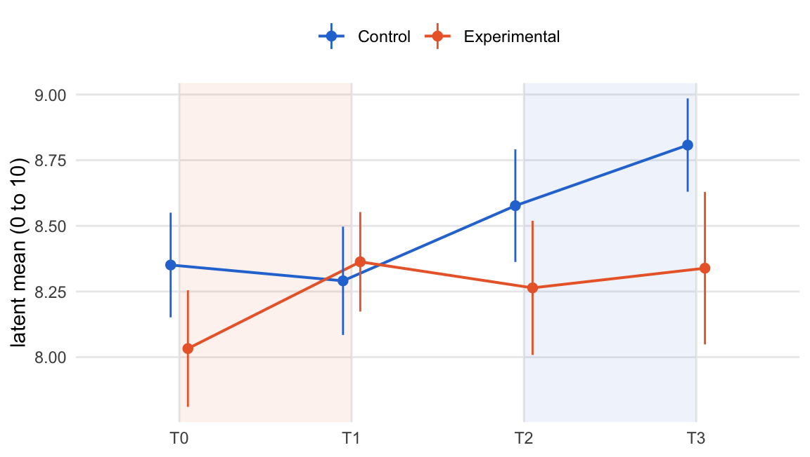
Next → Step 9, the verdict over all steps.
The verdict · Steps 9 to 12
Step 9 · The verdict
Which steps hold, under both sets of cutoffs? All steps of the construct, in all persons, in each group, and across the groups:
as_verdict <- bind_rows(
`all persons` = fit_row(as_all) |> mutate(level = "configural"),
control = as_con_steps |> filter(level != "configural"),
experimental = as_exp_steps |> filter(level != "configural"),
`both groups` = as_both_steps |> filter(level != "over time"),
.id = "part") |>
mutate(Chen = if_else(level == "configural", fits_configural(CFI),
holds_chen(delta_CFI, delta_RMSEA)),
small_sample = if_else(level == "configural", Chen,
holds_small(level, delta_CFI, delta_RMSEA,
delta_SRMR)))
as_verdict |>
transmute(part, level, ΔCFI = delta_CFI, ΔRMSEA = delta_RMSEA,
ΔSRMR = delta_SRMR, p, Chen = mark(Chen),
`small n` = mark(small_sample)) |>
mutate(across(where(is.double), \(x) round(x, 3)))| part | level | ΔCFI | ΔRMSEA | ΔSRMR | p | Chen | small n |
|---|---|---|---|---|---|---|---|
| all persons | configural | ✓ | ✓ | ||||
| control | loadings over time | 0.000 | -0.001 | 0.009 | 0.575 | ✓ | ✓ |
| control | intercepts over time | -0.003 | 0.001 | 0.003 | 0.139 | ✓ | ✓ |
| experimental | loadings over time | -0.003 | -0.002 | 0.018 | 0.455 | ✓ | ✓ |
| experimental | intercepts over time | -0.005 | -0.001 | 0.010 | 0.165 | ✓ | ✗ |
| both groups | loadings across groups | -0.003 | 0.001 | 0.007 | 0.100 | ✓ | ✓ |
| both groups | intercepts across groups | 0.000 | 0.000 | 0.002 | 0.359 | ✓ | ✓ |
Under Chen’s cutoffs every step holds, with the loadings and the intercepts of item 2 free in the control group: the measurement of Autonomy Satisfaction is the same at all four waves, in each group and across the groups. The small-sample reading would stop at one step: the intercepts over time in the experimental group.
Step 10 · Partial invariance
What is freed? The loadings and the intercepts of item 2 in the control group, as the score test of Steps 4 and 5 found. Three of the four items keep equal loadings and intercepts in every cell and scale the factor.
Step 11 · Alignment
How far are the eight cells from invariance when nothing is held equal? The share of loadings and intercepts (in %) more than .10 item standard deviations from their common aligned value:
as_input <- alignment_input(as_both_fits$configural,
model_items$AutonomySatisfaction)
as_aligned <- invariance.alignment(lambda = as_input$lambda,
nu = as_input$nu, wgt = as_input$weights)
as_tolerance <- invariance_alignment_constraints(
as_aligned, lambda_parm_tol = .10, nu_parm_tol = .10)
tibble(loadings = as_tolerance$lambda_list$prop_noninvariance,
intercepts = as_tolerance$nu_list$prop_noninvariance) |>
mutate(across(everything(), \(x) round(x, 1)))| loadings | intercepts |
|---|---|
| 18.8 | 12.5 |
Does it move the latent means? The latent mean of each cell as a distance from the control group in January, in its standard deviations, from the final model and aligned:
as_final <- as_both_fits$`intercepts across groups`
as_sd_T0 <- sqrt(lavInspect(as_final, "cov.lv")$Control["F_T0", "F_T0"])
as_alignment_means <- parameterEstimates(as_final) |>
filter(op == "~1", str_starts(lhs, "F_")) |>
transmute(cell = str_c(lavInspect(as_final, "group.label")[group],
" ", str_remove(lhs, "^F_")),
final = (est - first(est)) / as_sd_T0,
aligned = as_aligned$pars$alpha0,
difference = aligned - final)
as_alignment_means |>
mutate(across(where(is.double), \(x) round(x, 3)))| cell | final | aligned | difference |
|---|---|---|---|
| Control T0 | 0.000 | 0.000 | 0.000 |
| Control T1 | -0.055 | 0.027 | 0.082 |
| Control T2 | 0.208 | 0.146 | -0.062 |
| Control T3 | 0.420 | 0.410 | -0.011 |
| Experimental T0 | -0.293 | -0.269 | 0.024 |
| Experimental T1 | 0.011 | 0.057 | 0.045 |
| Experimental T2 | -0.080 | -0.113 | -0.033 |
| Experimental T3 | -0.011 | -0.118 | -0.107 |
18.8 % of the loadings and 12.5 % of the intercepts lie more than .10 item standard deviations from their common value (below the 25 % up to which aligned means are trusted). The aligned means lie at most .107 standard deviations from those of the final model.
Step 12 · What follows
Which model goes on?
as_status <- tibble(construct = "AutonomySatisfaction",
status = "partial",
set_to_0 = list(character()),
freed = list(as_free),
autocorrelations = list("free"),
chapter_11 = all(as_verdict$Chen))
show_status(as_status)| entry | value |
|---|---|
| construct | AutonomySatisfaction |
| status | partial |
| set_to_0 | |
| freed | Control: AutonomySatisfaction2 loadings; Control: AutonomySatisfaction2 intercepts |
| autocorrelations | free |
| chapter_11 | TRUE |
Autonomy Satisfaction enters the latent comparisons of Chapter 11 with the parameters freed in Step 10: apart from them, its measurement is the same over the four waves and in both groups.
Competence Satisfaction
Its path through the steps. One row per step below, judged under Chen’s cutoffs; the label marks the data of each step:
| Step | Data | Question | Result | Next |
|---|---|---|---|---|
| 2 | all persons | Configural model possible and fitting? | yes | each group |
| 3 | control | Its three models possible? | yes | over time |
| 4 | control | Loadings the same over the waves? | yes | intercepts |
| 5 | control | Intercepts the same over the waves? | yes | experimental group |
| 3 | experimental | Its three models possible? | yes | over time |
| 4 | experimental | Loadings the same over the waves? | yes | intercepts |
| 5 | experimental | Intercepts the same over the waves? | yes | both groups |
| 6 | both groups | Misfit from the groups? | no, as in random halves | across the groups |
| 7 | both groups | Loadings the same in both groups? | yes | intercepts |
| 8 | both groups | Intercepts the same in both groups? | yes | verdict |
| 9–12 | Verdict | invariant | Chapter 11 |
All persons · Steps 1 and 2
Step 1 · The model
What does the model look like? The four items of Chapter 6 (1, 2, 3 and 4) at each wave, their loadings averaging 1. In the figure, the circles are the factors of the four waves, the boxes the items by number, the arrows the loadings. The arcs above link the factors; those below link each item with itself at the next wave. The links between waves further apart belong to the model as well and are left out of the figure:
plot_model("CompetenceSatisfaction")
How does lavaan read it? The configural model of one group, as invariance_syntax() writes it:
cs_configural_model <- invariance_syntax(
"CompetenceSatisfaction", loadings = "free", intercepts = "free",
two_groups = FALSE)
cat(cs_configural_model)F_T0 =~ NA*CompetenceSatisfaction1_T0 +
l1_T0*CompetenceSatisfaction1_T0 +
l2_T0*CompetenceSatisfaction2_T0 +
l3_T0*CompetenceSatisfaction3_T0 +
l4_T0*CompetenceSatisfaction4_T0
F_T1 =~ NA*CompetenceSatisfaction1_T1 +
l1_T1*CompetenceSatisfaction1_T1 +
l2_T1*CompetenceSatisfaction2_T1 +
l3_T1*CompetenceSatisfaction3_T1 +
l4_T1*CompetenceSatisfaction4_T1
F_T2 =~ NA*CompetenceSatisfaction1_T2 +
l1_T2*CompetenceSatisfaction1_T2 +
l2_T2*CompetenceSatisfaction2_T2 +
l3_T2*CompetenceSatisfaction3_T2 +
l4_T2*CompetenceSatisfaction4_T2
F_T3 =~ NA*CompetenceSatisfaction1_T3 +
l1_T3*CompetenceSatisfaction1_T3 +
l2_T3*CompetenceSatisfaction2_T3 +
l3_T3*CompetenceSatisfaction3_T3 +
l4_T3*CompetenceSatisfaction4_T3
l1_T0 + l2_T0 + l3_T0 + l4_T0 == 4
l1_T1 + l2_T1 + l3_T1 + l4_T1 == 4
l1_T2 + l2_T2 + l3_T2 + l4_T2 == 4
l1_T3 + l2_T3 + l3_T3 + l4_T3 == 4
F_T0 ~ 0*1
F_T1 ~ 0*1
F_T2 ~ 0*1
F_T3 ~ 0*1
F_T0 ~~ F_T1
F_T0 ~~ F_T2
F_T0 ~~ F_T3
F_T1 ~~ F_T2
F_T1 ~~ F_T3
F_T2 ~~ F_T3
CompetenceSatisfaction1_T0 ~~ CompetenceSatisfaction1_T1
CompetenceSatisfaction1_T0 ~~ CompetenceSatisfaction1_T2
CompetenceSatisfaction1_T0 ~~ CompetenceSatisfaction1_T3
CompetenceSatisfaction1_T1 ~~ CompetenceSatisfaction1_T2
CompetenceSatisfaction1_T1 ~~ CompetenceSatisfaction1_T3
CompetenceSatisfaction1_T2 ~~ CompetenceSatisfaction1_T3
CompetenceSatisfaction2_T0 ~~ CompetenceSatisfaction2_T1
CompetenceSatisfaction2_T0 ~~ CompetenceSatisfaction2_T2
CompetenceSatisfaction2_T0 ~~ CompetenceSatisfaction2_T3
CompetenceSatisfaction2_T1 ~~ CompetenceSatisfaction2_T2
CompetenceSatisfaction2_T1 ~~ CompetenceSatisfaction2_T3
CompetenceSatisfaction2_T2 ~~ CompetenceSatisfaction2_T3
CompetenceSatisfaction3_T0 ~~ CompetenceSatisfaction3_T1
CompetenceSatisfaction3_T0 ~~ CompetenceSatisfaction3_T2
CompetenceSatisfaction3_T0 ~~ CompetenceSatisfaction3_T3
CompetenceSatisfaction3_T1 ~~ CompetenceSatisfaction3_T2
CompetenceSatisfaction3_T1 ~~ CompetenceSatisfaction3_T3
CompetenceSatisfaction3_T2 ~~ CompetenceSatisfaction3_T3
CompetenceSatisfaction4_T0 ~~ CompetenceSatisfaction4_T1
CompetenceSatisfaction4_T0 ~~ CompetenceSatisfaction4_T2
CompetenceSatisfaction4_T0 ~~ CompetenceSatisfaction4_T3
CompetenceSatisfaction4_T1 ~~ CompetenceSatisfaction4_T2
CompetenceSatisfaction4_T1 ~~ CompetenceSatisfaction4_T3
CompetenceSatisfaction4_T2 ~~ CompetenceSatisfaction4_T3Next → Step 2, the configural model in all persons.
Step 2 · The configural model all persons
What is fitted? The model of Step 1, with loadings and intercepts free at every wave, in all persons together:
cs_all <- df_wide |>
cfa(model = cs_configural_model, data = _, estimator = "MLR",
missing = "fiml")Does it pass the checks? The eleven checks of 7.1, in their order:
cs_all_checks <- model_checks(cs_all, judge_fit = TRUE)
cs_all_checks| check | what | value | criterion | holds |
|---|---|---|---|---|
| 1 estimation | converged | yes | yes | ✓ |
| 2 variances | smallest residual variance: item 2 at T3 | .337 | above 0 | ✓ |
| 3 correlations | largest correlation: the factors at T1 and T3 | .815 | within ±1 | ✓ |
| 4 residuals | smallest eigenvalue of the residual covariances | .168 | above 0 | ✓ |
| 5 factors | smallest eigenvalue of the factor covariances | .080 | above 0 | ✓ |
| 6 standard errors | estimated for every free parameter | yes | yes | ✓ |
| 7 fit | CFI | .976 | at least .90 | ✓ |
| 8 fit | RMSEA [90 % interval] | .041 [.029, .052] | reported | – |
| 9 fit | SRMR | .051 | reported | – |
| 10 strain | largest modification index: item 4 at T0 on the factor at T2 | 8.1 | reported | – |
| 11 estimates | smallest standardized loading: item 4 at T3 | .63 | reported | – |
Every check that decides holds: the estimation converged, the solution is proper (checks 1 to 6), and the model fits (CFI = .976, at least .90). Checks 8 to 11 are reported; Step 6 returns to the fit, and Steps 4, 5, 7 and 8 to the loadings.
Are the estimates sensible? The standardized loading of every item at every wave, and the correlations of the factors:
loading_table(cs_all)| item | T0 | T1 | T2 | T3 |
|---|---|---|---|---|
| item 1 | 0.72 | 0.76 | 0.72 | 0.81 |
| item 2 | 0.84 | 0.73 | 0.86 | 0.82 |
| item 3 | 0.70 | 0.64 | 0.65 | 0.68 |
| item 4 | 0.76 | 0.70 | 0.67 | 0.63 |
factor_correlations(cs_all)| T0–T1 | T0–T2 | T0–T3 | T1–T2 | T1–T3 | T2–T3 |
|---|---|---|---|---|---|
| 0.77 | 0.6 | 0.78 | 0.56 | 0.81 | 0.8 |
Every item loads between .63 and .86, and the factors of neighbouring waves correlate between .56 and .80. Why are loadings and intercepts not tested here? The groups were trained at different waves, so a model of all persons would average a trained and an untrained group at the same wave (7.1). All persons show only whether one factor per wave describes the items; the tests over time follow in each group, and then across the groups.
Next → Steps 3 to 5, each group on its own: first the control group, then the experimental group.
Control group · Steps 3 to 5
The 252 persons of the control group, trained between September and December.
Step 3 · The checks control
What is fitted? The three models of this group: configural, with equal loadings over the waves (Step 4), and with equal intercepts as well (Step 5):
cs_con_models <- time_steps |>
pmap(\(level, loadings, intercepts) invariance_syntax(
"CompetenceSatisfaction", loadings, intercepts, two_groups = FALSE)) |>
set_names(time_steps$level)
cs_con_fits <- cs_con_models |>
map(\(model) control |>
cfa(model = model, data = _, estimator = "MLR", missing = "fiml"))Does the configural model pass the checks? The eleven checks of 7.1:
cs_con_checks <- model_checks(cs_con_fits$configural)
cs_con_checks| check | what | value | criterion | holds |
|---|---|---|---|---|
| 1 estimation | converged | yes | yes | ✓ |
| 2 variances | smallest residual variance: item 2 at T2 | .108 | above 0 | ✓ |
| 3 correlations | largest correlation: the factors at T1 and T2 | .915 | within ±1 | ✓ |
| 4 residuals | smallest eigenvalue of the residual covariances | .079 | above 0 | ✓ |
| 5 factors | smallest eigenvalue of the factor covariances | .049 | above 0 | ✓ |
| 6 standard errors | estimated for every free parameter | yes | yes | ✓ |
| 7 fit | CFI | .975 | reported | – |
| 8 fit | RMSEA [90 % interval] | .041 [.022, .058] | reported | – |
| 9 fit | SRMR | .070 | reported | – |
| 10 strain | largest modification index: item 1 with item 4 at T1 | 6.3 | reported | – |
| 11 estimates | smallest standardized loading: item 4 at T3 | .43 | reported | – |
Checks 1 to 6 hold: the solution is proper. Its fit is reported (checks 7 to 9); whether one factor per wave describes the items was judged once, in all persons (Step 2). Are the other two models possible as well? Checks 1 to 6 of all three:
possible_table(cs_con_fits)| model | estimation | variances | correlations | residuals | factors | standard errors |
|---|---|---|---|---|---|---|
| configural | ✓ | ✓ | ✓ | ✓ | ✓ | ✓ |
| loadings over time | ✓ | ✓ | ✓ | ✓ | ✓ | ✓ |
| intercepts over time | ✓ | ✓ | ✓ | ✓ | ✓ | ✓ |
All three are possible as specified.
Next → Step 4, the loadings over time in this group.
Step 4 · Loadings over time control
Do the loadings stay the same? Each item keeps one loading over the four waves:
cs_con_steps <- step_table(cs_con_fits)
show_steps(cs_con_steps, "loadings over time")| level | df | CFI | ΔCFI | ΔRMSEA | ΔSRMR | p |
|---|---|---|---|---|---|---|
| loadings over time | 83 | 0.971 | -0.004 | 0.001 | 0.005 | 0.089 |
They do, under both sets of cutoffs (ΔCFI = -.004), and the χ² test does not reject them (p = .089).
Next → Step 5, with the loadings held equal over the waves.
Step 5 · Intercepts over time control
Do the intercepts stay the same? Each item keeps one intercept over the four waves; the latent means are freed:
cs_con_steps <- step_table(cs_con_fits)
show_steps(cs_con_steps, "intercepts over time")| level | df | CFI | ΔCFI | ΔRMSEA | ΔSRMR | p |
|---|---|---|---|---|---|---|
| intercepts over time | 92 | 0.973 | 0.003 | -0.004 | 0.001 | 0.766 |
They do, under both sets of cutoffs (ΔCFI = .003), and the χ² test does not reject them (p = .766).
Next → Steps 3 to 5 in the experimental group.
Experimental group · Steps 3 to 5
The 199 persons of the experimental group, trained between January and March.
Step 3 · The checks experimental
What is fitted? The three models of this group: configural, with equal loadings over the waves (Step 4), and with equal intercepts as well (Step 5):
cs_exp_models <- time_steps |>
pmap(\(level, loadings, intercepts) invariance_syntax(
"CompetenceSatisfaction", loadings, intercepts, two_groups = FALSE)) |>
set_names(time_steps$level)
cs_exp_fits <- cs_exp_models |>
map(\(model) experimental |>
cfa(model = model, data = _, estimator = "MLR", missing = "fiml"))Does the configural model pass the checks? The eleven checks of 7.1:
cs_exp_checks <- model_checks(cs_exp_fits$configural)
cs_exp_checks| check | what | value | criterion | holds |
|---|---|---|---|---|
| 1 estimation | converged | yes | yes | ✓ |
| 2 variances | smallest residual variance: item 4 at T2 | .227 | above 0 | ✓ |
| 3 correlations | largest correlation: the factors at T2 and T3 | .900 | within ±1 | ✓ |
| 4 residuals | smallest eigenvalue of the residual covariances | .195 | above 0 | ✓ |
| 5 factors | smallest eigenvalue of the factor covariances | .019 | above 0 | ✓ |
| 6 standard errors | estimated for every free parameter | yes | yes | ✓ |
| 7 fit | CFI | .950 | reported | – |
| 8 fit | RMSEA [90 % interval] | .066 [.049, .083] | reported | – |
| 9 fit | SRMR | .060 | reported | – |
| 10 strain | largest modification index: item 2 with item 1 at T0 | 8.7 | reported | – |
| 11 estimates | smallest standardized loading: item 3 at T2 | .64 | reported | – |
Checks 1 to 6 hold: the solution is proper. Its fit is reported (checks 7 to 9); whether one factor per wave describes the items was judged once, in all persons (Step 2). Are the other two models possible as well? Checks 1 to 6 of all three:
possible_table(cs_exp_fits)| model | estimation | variances | correlations | residuals | factors | standard errors |
|---|---|---|---|---|---|---|
| configural | ✓ | ✓ | ✓ | ✓ | ✓ | ✓ |
| loadings over time | ✓ | ✓ | ✓ | ✓ | ✓ | ✓ |
| intercepts over time | ✓ | ✓ | ✓ | ✓ | ✓ | ✓ |
All three are possible as specified.
Next → Step 4, the loadings over time in this group.
Step 4 · Loadings over time experimental
Do the loadings stay the same? Each item keeps one loading over the four waves:
cs_exp_steps <- step_table(cs_exp_fits)
show_steps(cs_exp_steps, "loadings over time")| level | df | CFI | ΔCFI | ΔRMSEA | ΔSRMR | p |
|---|---|---|---|---|---|---|
| loadings over time | 83 | 0.949 | -0.001 | -0.003 | 0.008 | 0.63 |
They do, under both sets of cutoffs (ΔCFI = -.001), and the χ² test does not reject them (p = .630).
Next → Step 5, with the loadings held equal over the waves.
Step 5 · Intercepts over time experimental
Do the intercepts stay the same? Each item keeps one intercept over the four waves; the latent means are freed:
cs_exp_steps <- step_table(cs_exp_fits)
show_steps(cs_exp_steps, "intercepts over time")| level | df | CFI | ΔCFI | ΔRMSEA | ΔSRMR | p |
|---|---|---|---|---|---|---|
| intercepts over time | 92 | 0.952 | 0.003 | -0.005 | 0.002 | 0.75 |
They do, under both sets of cutoffs (ΔCFI = .003), and the χ² test does not reject them (p = .750).
Next → Step 6, both groups together, each with what it needed.
Both groups · Steps 6 to 8
Both groups together, with what each group needed.
Step 6 · Do the groups add misfit? both groups
How well does the configural model fit in the two groups, and in random halves of the persons?
cs_both_models <- group_steps |>
pmap(\(level, loadings, intercepts) invariance_syntax(
"CompetenceSatisfaction", loadings, intercepts)) |>
set_names(group_steps$level)
cs_both_fits <- cs_both_models |>
map(\(model) df_wide |>
cfa(model = model, data = _, group = "condition",
estimator = "MLR", missing = "fiml"))
cs_halves <- c(`random halves 1` = 1, `random halves 2` = 2,
`random halves 3` = 3) |>
map(\(seed) {
set.seed(seed)
df_wide |>
mutate(condition = sample(condition)) |>
cfa(model = cs_both_models$configural, data = _, group = "condition",
estimator = "MLR", missing = "fiml")
})
cs_fit_table <- c(list(`two groups` = cs_both_fits$configural),
cs_halves) |>
map(fit_row) |>
list_rbind(names_to = "model")
cs_fit_table |>
mutate(across(where(is.double), \(x) round(x, 3)))| model | chisq | df | CFI | RMSEA | SRMR |
|---|---|---|---|---|---|
| two groups | 226.126 | 148 | 0.962 | 0.054 | 0.066 |
| random halves 1 | 237.829 | 148 | 0.955 | 0.059 | 0.075 |
| random halves 2 | 243.456 | 148 | 0.955 | 0.058 | 0.067 |
| random halves 3 | 208.149 | 148 | 0.969 | 0.048 | 0.067 |
Are all four models of both groups possible? Checks 1 to 6 of each:
possible_table(cs_both_fits)| model | estimation | variances | correlations | residuals | factors | standard errors |
|---|---|---|---|---|---|---|
| configural | ✓ | ✓ | ✓ | ✓ | ✓ | ✓ |
| over time | ✓ | ✓ | ✓ | ✓ | ✓ | ✓ |
| loadings across groups | ✓ | ✓ | ✓ | ✓ | ✓ | ✓ |
| intercepts across groups | ✓ | ✓ | ✓ | ✓ | ✓ | ✓ |
All four models of both groups are possible, and the configural model fits closely in the two groups (CFI = .962) as in the random halves.
Next → Step 7, the loadings across the groups.
Step 7 · Loadings across the groups both groups
Are the loadings the same in both groups?
cs_both_steps <- step_table(cs_both_fits[-1])
show_steps(cs_both_steps, "loadings across groups")| level | df | CFI | ΔCFI | ΔRMSEA | ΔSRMR | p |
|---|---|---|---|---|---|---|
| loadings across groups | 187 | 0.958 | -0.005 | 0.003 | 0.014 | 0.05 |
They are, under both sets of cutoffs (ΔCFI = -.005), and the χ² test does not reject them (p = .050).
Next → Step 8, the intercepts across the groups, with the loadings held equal.
Step 8 · Intercepts across the groups both groups
Are the intercepts the same in both groups? Each item keeps one intercept, in every cell:
show_steps(cs_both_steps, "intercepts across groups")| level | df | CFI | ΔCFI | ΔRMSEA | ΔSRMR | p |
|---|---|---|---|---|---|---|
| intercepts across groups | 190 | 0.959 | 0.001 | -0.001 | 0 | 0.96 |
They are, under both sets of cutoffs (ΔCFI = .001), and the χ² test does not reject them (p = .960).
Where do the latent means lie? In the final model, on the 0 to 10 scale of the items:
plot_latent_means(cs_both_fits$`intercepts across groups`)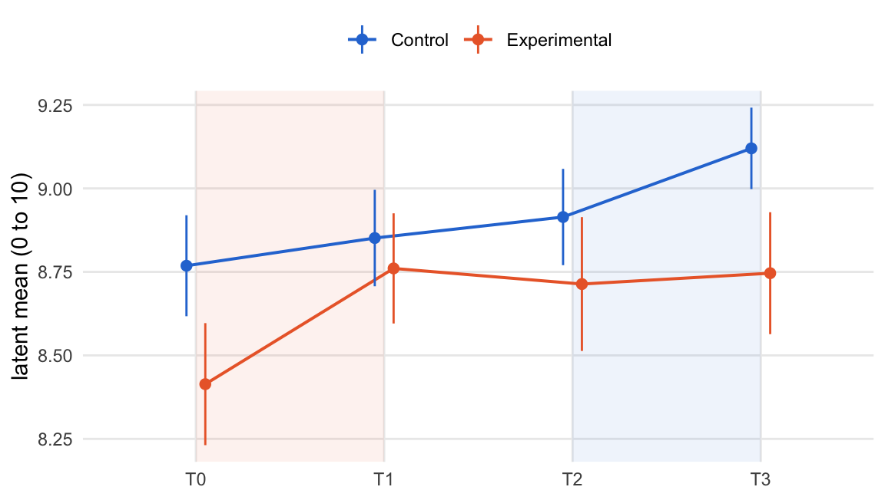
Next → Step 9, the verdict over all steps.
The verdict · Steps 9 to 12
Step 9 · The verdict
Which steps hold, under both sets of cutoffs? All steps of the construct, in all persons, in each group, and across the groups:
cs_verdict <- bind_rows(
`all persons` = fit_row(cs_all) |> mutate(level = "configural"),
control = cs_con_steps |> filter(level != "configural"),
experimental = cs_exp_steps |> filter(level != "configural"),
`both groups` = cs_both_steps |> filter(level != "over time"),
.id = "part") |>
mutate(Chen = if_else(level == "configural", fits_configural(CFI),
holds_chen(delta_CFI, delta_RMSEA)),
small_sample = if_else(level == "configural", Chen,
holds_small(level, delta_CFI, delta_RMSEA,
delta_SRMR)))
cs_verdict |>
transmute(part, level, ΔCFI = delta_CFI, ΔRMSEA = delta_RMSEA,
ΔSRMR = delta_SRMR, p, Chen = mark(Chen),
`small n` = mark(small_sample)) |>
mutate(across(where(is.double), \(x) round(x, 3)))| part | level | ΔCFI | ΔRMSEA | ΔSRMR | p | Chen | small n |
|---|---|---|---|---|---|---|---|
| all persons | configural | ✓ | ✓ | ||||
| control | loadings over time | -0.004 | 0.001 | 0.005 | 0.089 | ✓ | ✓ |
| control | intercepts over time | 0.003 | -0.004 | 0.001 | 0.766 | ✓ | ✓ |
| experimental | loadings over time | -0.001 | -0.003 | 0.008 | 0.630 | ✓ | ✓ |
| experimental | intercepts over time | 0.003 | -0.005 | 0.002 | 0.750 | ✓ | ✓ |
| both groups | loadings across groups | -0.005 | 0.003 | 0.014 | 0.050 | ✓ | ✓ |
| both groups | intercepts across groups | 0.001 | -0.001 | 0.000 | 0.960 | ✓ | ✓ |
Under Chen’s cutoffs every step holds: the measurement of Competence Satisfaction is the same at all four waves, in each group and across the groups. The small-sample reading agrees at every step.
Step 10 · Partial invariance
Is it needed? No: under Chen’s cutoffs every step holds.
Step 11 · Alignment
How far are the eight cells from invariance when nothing is held equal? The share of loadings and intercepts (in %) more than .10 item standard deviations from their common aligned value:
cs_input <- alignment_input(cs_both_fits$configural,
model_items$CompetenceSatisfaction)
cs_aligned <- invariance.alignment(lambda = cs_input$lambda,
nu = cs_input$nu, wgt = cs_input$weights)
cs_tolerance <- invariance_alignment_constraints(
cs_aligned, lambda_parm_tol = .10, nu_parm_tol = .10)
tibble(loadings = cs_tolerance$lambda_list$prop_noninvariance,
intercepts = cs_tolerance$nu_list$prop_noninvariance) |>
mutate(across(everything(), \(x) round(x, 1)))| loadings | intercepts |
|---|---|
| 21.9 | 0 |
Does it move the latent means? The latent mean of each cell as a distance from the control group in January, in its standard deviations, from the final model and aligned:
cs_final <- cs_both_fits$`intercepts across groups`
cs_sd_T0 <- sqrt(lavInspect(cs_final, "cov.lv")$Control["F_T0", "F_T0"])
cs_alignment_means <- parameterEstimates(cs_final) |>
filter(op == "~1", str_starts(lhs, "F_")) |>
transmute(cell = str_c(lavInspect(cs_final, "group.label")[group],
" ", str_remove(lhs, "^F_")),
final = (est - first(est)) / cs_sd_T0,
aligned = cs_aligned$pars$alpha0,
difference = aligned - final)
cs_alignment_means |>
mutate(across(where(is.double), \(x) round(x, 3)))| cell | final | aligned | difference |
|---|---|---|---|
| Control T0 | 0.000 | 0.000 | 0.000 |
| Control T1 | 0.082 | 0.048 | -0.034 |
| Control T2 | 0.144 | 0.136 | -0.008 |
| Control T3 | 0.347 | 0.391 | 0.044 |
| Experimental T0 | -0.350 | -0.374 | -0.024 |
| Experimental T1 | -0.008 | -0.014 | -0.006 |
| Experimental T2 | -0.054 | -0.065 | -0.011 |
| Experimental T3 | -0.022 | -0.053 | -0.031 |
21.9 % of the loadings and 0 % of the intercepts lie more than .10 item standard deviations from their common value (below the 25 % up to which aligned means are trusted). The aligned means lie at most .044 standard deviations from those of the final model.
Step 12 · What follows
Which model goes on?
cs_status <- tibble(construct = "CompetenceSatisfaction",
status = "as specified",
set_to_0 = list(character()),
freed = list(character()),
autocorrelations = list("free"),
chapter_11 = all(cs_verdict$Chen))
show_status(cs_status)| entry | value |
|---|---|
| construct | CompetenceSatisfaction |
| status | as specified |
| set_to_0 | |
| freed | |
| autocorrelations | free |
| chapter_11 | TRUE |
Competence Satisfaction enters the latent comparisons of Chapter 11 as specified: its measurement is the same over the four waves and in both groups.
Autonomy Non-Frustrated
Its path through the steps. One row per step below, judged under Chen’s cutoffs; the label marks the data of each step:
| Step | Data | Question | Result | Next |
|---|---|---|---|---|
| 2 | all persons | Configural model possible and fitting? | yes | each group |
| 3 | control | Its three models possible? | yes | over time |
| 4 | control | Loadings the same over the waves? | yes | intercepts |
| 5 | control | Intercepts the same over the waves? | yes | experimental group |
| 3 | experimental | Its three models possible? | yes | over time |
| 4 | experimental | Loadings the same over the waves? | yes | intercepts |
| 5 | experimental | Intercepts the same over the waves? | yes | both groups |
| 6 | both groups | Misfit from the groups? | no, as in random halves | across the groups |
| 7 | both groups | Loadings the same in both groups? | yes | intercepts |
| 8 | both groups | Intercepts the same in both groups? | yes | verdict |
| 9–12 | Verdict | invariant | Chapter 11 |
All persons · Steps 1 and 2
Step 1 · The model
What does the model look like? The four items of Chapter 6 (1, 2, 3 and 4) at each wave, their loadings averaging 1. In the figure, the circles are the factors of the four waves, the boxes the items by number, the arrows the loadings. The arcs above link the factors; those below link each item with itself at the next wave. The links between waves further apart belong to the model as well and are left out of the figure:
plot_model("AutonomyNonFrustrated")
How does lavaan read it? The configural model of one group, as invariance_syntax() writes it:
anf_configural_model <- invariance_syntax(
"AutonomyNonFrustrated", loadings = "free", intercepts = "free",
two_groups = FALSE)
cat(anf_configural_model)F_T0 =~ NA*AutonomyNonFrustrated1_T0 +
l1_T0*AutonomyNonFrustrated1_T0 +
l2_T0*AutonomyNonFrustrated2_T0 +
l3_T0*AutonomyNonFrustrated3_T0 +
l4_T0*AutonomyNonFrustrated4_T0
F_T1 =~ NA*AutonomyNonFrustrated1_T1 +
l1_T1*AutonomyNonFrustrated1_T1 +
l2_T1*AutonomyNonFrustrated2_T1 +
l3_T1*AutonomyNonFrustrated3_T1 +
l4_T1*AutonomyNonFrustrated4_T1
F_T2 =~ NA*AutonomyNonFrustrated1_T2 +
l1_T2*AutonomyNonFrustrated1_T2 +
l2_T2*AutonomyNonFrustrated2_T2 +
l3_T2*AutonomyNonFrustrated3_T2 +
l4_T2*AutonomyNonFrustrated4_T2
F_T3 =~ NA*AutonomyNonFrustrated1_T3 +
l1_T3*AutonomyNonFrustrated1_T3 +
l2_T3*AutonomyNonFrustrated2_T3 +
l3_T3*AutonomyNonFrustrated3_T3 +
l4_T3*AutonomyNonFrustrated4_T3
l1_T0 + l2_T0 + l3_T0 + l4_T0 == 4
l1_T1 + l2_T1 + l3_T1 + l4_T1 == 4
l1_T2 + l2_T2 + l3_T2 + l4_T2 == 4
l1_T3 + l2_T3 + l3_T3 + l4_T3 == 4
F_T0 ~ 0*1
F_T1 ~ 0*1
F_T2 ~ 0*1
F_T3 ~ 0*1
F_T0 ~~ F_T1
F_T0 ~~ F_T2
F_T0 ~~ F_T3
F_T1 ~~ F_T2
F_T1 ~~ F_T3
F_T2 ~~ F_T3
AutonomyNonFrustrated1_T0 ~~ AutonomyNonFrustrated1_T1
AutonomyNonFrustrated1_T0 ~~ AutonomyNonFrustrated1_T2
AutonomyNonFrustrated1_T0 ~~ AutonomyNonFrustrated1_T3
AutonomyNonFrustrated1_T1 ~~ AutonomyNonFrustrated1_T2
AutonomyNonFrustrated1_T1 ~~ AutonomyNonFrustrated1_T3
AutonomyNonFrustrated1_T2 ~~ AutonomyNonFrustrated1_T3
AutonomyNonFrustrated2_T0 ~~ AutonomyNonFrustrated2_T1
AutonomyNonFrustrated2_T0 ~~ AutonomyNonFrustrated2_T2
AutonomyNonFrustrated2_T0 ~~ AutonomyNonFrustrated2_T3
AutonomyNonFrustrated2_T1 ~~ AutonomyNonFrustrated2_T2
AutonomyNonFrustrated2_T1 ~~ AutonomyNonFrustrated2_T3
AutonomyNonFrustrated2_T2 ~~ AutonomyNonFrustrated2_T3
AutonomyNonFrustrated3_T0 ~~ AutonomyNonFrustrated3_T1
AutonomyNonFrustrated3_T0 ~~ AutonomyNonFrustrated3_T2
AutonomyNonFrustrated3_T0 ~~ AutonomyNonFrustrated3_T3
AutonomyNonFrustrated3_T1 ~~ AutonomyNonFrustrated3_T2
AutonomyNonFrustrated3_T1 ~~ AutonomyNonFrustrated3_T3
AutonomyNonFrustrated3_T2 ~~ AutonomyNonFrustrated3_T3
AutonomyNonFrustrated4_T0 ~~ AutonomyNonFrustrated4_T1
AutonomyNonFrustrated4_T0 ~~ AutonomyNonFrustrated4_T2
AutonomyNonFrustrated4_T0 ~~ AutonomyNonFrustrated4_T3
AutonomyNonFrustrated4_T1 ~~ AutonomyNonFrustrated4_T2
AutonomyNonFrustrated4_T1 ~~ AutonomyNonFrustrated4_T3
AutonomyNonFrustrated4_T2 ~~ AutonomyNonFrustrated4_T3Next → Step 2, the configural model in all persons.
Step 2 · The configural model all persons
What is fitted? The model of Step 1, with loadings and intercepts free at every wave, in all persons together:
anf_all <- df_wide |>
cfa(model = anf_configural_model, data = _, estimator = "MLR",
missing = "fiml")Does it pass the checks? The eleven checks of 7.1, in their order:
anf_all_checks <- model_checks(anf_all, judge_fit = TRUE)
anf_all_checks| check | what | value | criterion | holds |
|---|---|---|---|---|
| 1 estimation | converged | yes | yes | ✓ |
| 2 variances | smallest residual variance: item 2 at T1 | 3.798 | above 0 | ✓ |
| 3 correlations | largest correlation: the factors at T2 and T3 | .773 | within ±1 | ✓ |
| 4 residuals | smallest eigenvalue of the residual covariances | 2.481 | above 0 | ✓ |
| 5 factors | smallest eigenvalue of the factor covariances | .962 | above 0 | ✓ |
| 6 standard errors | estimated for every free parameter | yes | yes | ✓ |
| 7 fit | CFI | .954 | at least .90 | ✓ |
| 8 fit | RMSEA [90 % interval] | .048 [.037, .059] | reported | – |
| 9 fit | SRMR | .049 | reported | – |
| 10 strain | largest modification index: item 2 with item 4 at T2 | 21.0 | reported | – |
| 11 estimates | smallest standardized loading: item 4 at T2 | .55 | reported | – |
Every check that decides holds: the estimation converged, the solution is proper (checks 1 to 6), and the model fits (CFI = .954, at least .90). Checks 8 to 11 are reported; Step 6 returns to the fit, and Steps 4, 5, 7 and 8 to the loadings.
Are the estimates sensible? The standardized loading of every item at every wave, and the correlations of the factors:
loading_table(anf_all)| item | T0 | T1 | T2 | T3 |
|---|---|---|---|---|
| item 1 | 0.59 | 0.61 | 0.57 | 0.64 |
| item 2 | 0.78 | 0.80 | 0.78 | 0.71 |
| item 3 | 0.72 | 0.79 | 0.68 | 0.74 |
| item 4 | 0.62 | 0.55 | 0.55 | 0.68 |
factor_correlations(anf_all)| T0–T1 | T0–T2 | T0–T3 | T1–T2 | T1–T3 | T2–T3 |
|---|---|---|---|---|---|
| 0.64 | 0.76 | 0.71 | 0.65 | 0.71 | 0.77 |
Every item loads between .55 and .80, and the factors of neighbouring waves correlate between .64 and .77. Why are loadings and intercepts not tested here? The groups were trained at different waves, so a model of all persons would average a trained and an untrained group at the same wave (7.1). All persons show only whether one factor per wave describes the items; the tests over time follow in each group, and then across the groups.
Next → Steps 3 to 5, each group on its own: first the control group, then the experimental group.
Control group · Steps 3 to 5
The 252 persons of the control group, trained between September and December.
Step 3 · The checks control
What is fitted? The three models of this group: configural, with equal loadings over the waves (Step 4), and with equal intercepts as well (Step 5):
anf_con_models <- time_steps |>
pmap(\(level, loadings, intercepts) invariance_syntax(
"AutonomyNonFrustrated", loadings, intercepts, two_groups = FALSE)) |>
set_names(time_steps$level)
anf_con_fits <- anf_con_models |>
map(\(model) control |>
cfa(model = model, data = _, estimator = "MLR", missing = "fiml"))Does the configural model pass the checks? The eleven checks of 7.1:
anf_con_checks <- model_checks(anf_con_fits$configural)
anf_con_checks| check | what | value | criterion | holds |
|---|---|---|---|---|
| 1 estimation | converged | yes | yes | ✓ |
| 2 variances | smallest residual variance: item 2 at T2 | 2.994 | above 0 | ✓ |
| 3 correlations | largest correlation: the factors at T2 and T3 | .779 | within ±1 | ✓ |
| 4 residuals | smallest eigenvalue of the residual covariances | 1.939 | above 0 | ✓ |
| 5 factors | smallest eigenvalue of the factor covariances | .957 | above 0 | ✓ |
| 6 standard errors | estimated for every free parameter | yes | yes | ✓ |
| 7 fit | CFI | .921 | reported | – |
| 8 fit | RMSEA [90 % interval] | .061 [.046, .076] | reported | – |
| 9 fit | SRMR | .069 | reported | – |
| 10 strain | largest modification index: item 2 with item 4 at T2 | 15.9 | reported | – |
| 11 estimates | smallest standardized loading: item 4 at T2 | .45 | reported | – |
Checks 1 to 6 hold: the solution is proper. Its fit is reported (checks 7 to 9); whether one factor per wave describes the items was judged once, in all persons (Step 2). Are the other two models possible as well? Checks 1 to 6 of all three:
possible_table(anf_con_fits)| model | estimation | variances | correlations | residuals | factors | standard errors |
|---|---|---|---|---|---|---|
| configural | ✓ | ✓ | ✓ | ✓ | ✓ | ✓ |
| loadings over time | ✓ | ✓ | ✓ | ✓ | ✓ | ✓ |
| intercepts over time | ✓ | ✓ | ✓ | ✓ | ✓ | ✓ |
All three are possible as specified.
Next → Step 4, the loadings over time in this group.
Step 4 · Loadings over time control
Do the loadings stay the same? Each item keeps one loading over the four waves:
anf_con_steps <- step_table(anf_con_fits)
show_steps(anf_con_steps, "loadings over time")| level | df | CFI | ΔCFI | ΔRMSEA | ΔSRMR | p |
|---|---|---|---|---|---|---|
| loadings over time | 83 | 0.912 | -0.009 | 0 | 0.004 | 0.084 |
They do under Chen’s cutoffs (ΔCFI = -.009), though not under those of the small-sample reading, and the χ² test does not reject them (p = .084).
Next → Step 5, with the loadings held equal over the waves.
Step 5 · Intercepts over time control
Do the intercepts stay the same? Each item keeps one intercept over the four waves; the latent means are freed:
anf_con_steps <- step_table(anf_con_fits)
show_steps(anf_con_steps, "intercepts over time")| level | df | CFI | ΔCFI | ΔRMSEA | ΔSRMR | p |
|---|---|---|---|---|---|---|
| intercepts over time | 92 | 0.914 | 0.002 | -0.004 | 0.001 | 0.589 |
They do, under both sets of cutoffs (ΔCFI = .002), and the χ² test does not reject them (p = .589).
Next → Steps 3 to 5 in the experimental group.
Experimental group · Steps 3 to 5
The 199 persons of the experimental group, trained between January and March.
Step 3 · The checks experimental
What is fitted? The three models of this group: configural, with equal loadings over the waves (Step 4), and with equal intercepts as well (Step 5):
anf_exp_models <- time_steps |>
pmap(\(level, loadings, intercepts) invariance_syntax(
"AutonomyNonFrustrated", loadings, intercepts, two_groups = FALSE)) |>
set_names(time_steps$level)
anf_exp_fits <- anf_exp_models |>
map(\(model) experimental |>
cfa(model = model, data = _, estimator = "MLR", missing = "fiml"))Does the configural model pass the checks? The eleven checks of 7.1:
anf_exp_checks <- model_checks(anf_exp_fits$configural)
anf_exp_checks| check | what | value | criterion | holds |
|---|---|---|---|---|
| 1 estimation | converged | yes | yes | ✓ |
| 2 variances | smallest residual variance: item 2 at T3 | 2.722 | above 0 | ✓ |
| 3 correlations | largest correlation: the factors at T2 and T3 | .771 | within ±1 | ✓ |
| 4 residuals | smallest eigenvalue of the residual covariances | 1.578 | above 0 | ✓ |
| 5 factors | smallest eigenvalue of the factor covariances | 1.017 | above 0 | ✓ |
| 6 standard errors | estimated for every free parameter | yes | yes | ✓ |
| 7 fit | CFI | .936 | reported | – |
| 8 fit | RMSEA [90 % interval] | .061 [.043, .078] | reported | – |
| 9 fit | SRMR | .076 | reported | – |
| 10 strain | largest modification index: item 2 with item 4 at T1 | 9.0 | reported | – |
| 11 estimates | smallest standardized loading: item 1 at T0 | .54 | reported | – |
Checks 1 to 6 hold: the solution is proper. Its fit is reported (checks 7 to 9); whether one factor per wave describes the items was judged once, in all persons (Step 2). Are the other two models possible as well? Checks 1 to 6 of all three:
possible_table(anf_exp_fits)| model | estimation | variances | correlations | residuals | factors | standard errors |
|---|---|---|---|---|---|---|
| configural | ✓ | ✓ | ✓ | ✓ | ✓ | ✓ |
| loadings over time | ✓ | ✓ | ✓ | ✓ | ✓ | ✓ |
| intercepts over time | ✓ | ✓ | ✓ | ✓ | ✓ | ✓ |
All three are possible as specified.
Next → Step 4, the loadings over time in this group.
Step 4 · Loadings over time experimental
Do the loadings stay the same? Each item keeps one loading over the four waves:
anf_exp_steps <- step_table(anf_exp_fits)
show_steps(anf_exp_steps, "loadings over time")| level | df | CFI | ΔCFI | ΔRMSEA | ΔSRMR | p |
|---|---|---|---|---|---|---|
| loadings over time | 83 | 0.939 | 0.002 | -0.005 | 0.011 | 0.573 |
They do, under both sets of cutoffs (ΔCFI = .002), and the χ² test does not reject them (p = .573).
Next → Step 5, with the loadings held equal over the waves.
Step 5 · Intercepts over time experimental
Do the intercepts stay the same? Each item keeps one intercept over the four waves; the latent means are freed:
anf_exp_steps <- step_table(anf_exp_fits)
show_steps(anf_exp_steps, "intercepts over time")| level | df | CFI | ΔCFI | ΔRMSEA | ΔSRMR | p |
|---|---|---|---|---|---|---|
| intercepts over time | 92 | 0.944 | 0.005 | -0.005 | 0.001 | 0.859 |
They do, under both sets of cutoffs (ΔCFI = .005), and the χ² test does not reject them (p = .859).
Next → Step 6, both groups together, each with what it needed.
Both groups · Steps 6 to 8
Both groups together, with what each group needed.
Step 6 · Do the groups add misfit? both groups
How well does the configural model fit in the two groups, and in random halves of the persons?
anf_both_models <- group_steps |>
pmap(\(level, loadings, intercepts) invariance_syntax(
"AutonomyNonFrustrated", loadings, intercepts)) |>
set_names(group_steps$level)
anf_both_fits <- anf_both_models |>
map(\(model) df_wide |>
cfa(model = model, data = _, group = "condition",
estimator = "MLR", missing = "fiml"))
anf_halves <- c(`random halves 1` = 1, `random halves 2` = 2,
`random halves 3` = 3) |>
map(\(seed) {
set.seed(seed)
df_wide |>
mutate(condition = sample(condition)) |>
cfa(model = anf_both_models$configural, data = _, group = "condition",
estimator = "MLR", missing = "fiml")
})
anf_fit_table <- c(list(`two groups` = anf_both_fits$configural),
anf_halves) |>
map(fit_row) |>
list_rbind(names_to = "model")
anf_fit_table |>
mutate(across(where(is.double), \(x) round(x, 3)))| model | chisq | df | CFI | RMSEA | SRMR |
|---|---|---|---|---|---|
| two groups | 255.880 | 148 | 0.928 | 0.061 | 0.072 |
| random halves 1 | 245.557 | 148 | 0.931 | 0.060 | 0.068 |
| random halves 2 | 244.432 | 148 | 0.929 | 0.060 | 0.066 |
| random halves 3 | 290.630 | 148 | 0.910 | 0.069 | 0.075 |
Are all four models of both groups possible? Checks 1 to 6 of each:
possible_table(anf_both_fits)| model | estimation | variances | correlations | residuals | factors | standard errors |
|---|---|---|---|---|---|---|
| configural | ✓ | ✓ | ✓ | ✓ | ✓ | ✓ |
| over time | ✓ | ✓ | ✓ | ✓ | ✓ | ✓ |
| loadings across groups | ✓ | ✓ | ✓ | ✓ | ✓ | ✓ |
| intercepts across groups | ✓ | ✓ | ✓ | ✓ | ✓ | ✓ |
All four models of both groups are possible. In the two groups the CFI is .928, against .954 in all persons, and random halves of the persons fit no better (.910 to .931): what the groups lose comes from halving the sample, not from the groups.
Next → Step 7, the loadings across the groups.
Step 7 · Loadings across the groups both groups
Are the loadings the same in both groups?
anf_both_steps <- step_table(anf_both_fits[-1])
show_steps(anf_both_steps, "loadings across groups")| level | df | CFI | ΔCFI | ΔRMSEA | ΔSRMR | p |
|---|---|---|---|---|---|---|
| loadings across groups | 187 | 0.927 | -0.002 | 0 | 0.003 | 0.074 |
They are, under both sets of cutoffs (ΔCFI = -.002), and the χ² test does not reject them (p = .074).
Next → Step 8, the intercepts across the groups, with the loadings held equal.
Step 8 · Intercepts across the groups both groups
Are the intercepts the same in both groups? Each item keeps one intercept, in every cell:
show_steps(anf_both_steps, "intercepts across groups")| level | df | CFI | ΔCFI | ΔRMSEA | ΔSRMR | p |
|---|---|---|---|---|---|---|
| intercepts across groups | 190 | 0.927 | 0 | -0.001 | 0 | 0.471 |
They are, under both sets of cutoffs (ΔCFI = .000), and the χ² test does not reject them (p = .471).
Where do the latent means lie? In the final model, on the 0 to 10 scale of the items:
plot_latent_means(anf_both_fits$`intercepts across groups`)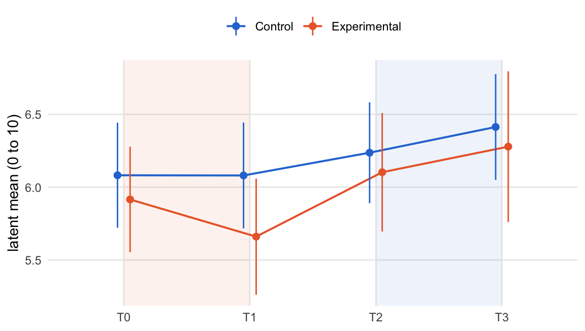
Next → Step 9, the verdict over all steps.
The verdict · Steps 9 to 12
Step 9 · The verdict
Which steps hold, under both sets of cutoffs? All steps of the construct, in all persons, in each group, and across the groups:
anf_verdict <- bind_rows(
`all persons` = fit_row(anf_all) |> mutate(level = "configural"),
control = anf_con_steps |> filter(level != "configural"),
experimental = anf_exp_steps |> filter(level != "configural"),
`both groups` = anf_both_steps |> filter(level != "over time"),
.id = "part") |>
mutate(Chen = if_else(level == "configural", fits_configural(CFI),
holds_chen(delta_CFI, delta_RMSEA)),
small_sample = if_else(level == "configural", Chen,
holds_small(level, delta_CFI, delta_RMSEA,
delta_SRMR)))
anf_verdict |>
transmute(part, level, ΔCFI = delta_CFI, ΔRMSEA = delta_RMSEA,
ΔSRMR = delta_SRMR, p, Chen = mark(Chen),
`small n` = mark(small_sample)) |>
mutate(across(where(is.double), \(x) round(x, 3)))| part | level | ΔCFI | ΔRMSEA | ΔSRMR | p | Chen | small n |
|---|---|---|---|---|---|---|---|
| all persons | configural | ✓ | ✓ | ||||
| control | loadings over time | -0.009 | 0.000 | 0.004 | 0.084 | ✓ | ✗ |
| control | intercepts over time | 0.002 | -0.004 | 0.001 | 0.589 | ✓ | ✓ |
| experimental | loadings over time | 0.002 | -0.005 | 0.011 | 0.573 | ✓ | ✓ |
| experimental | intercepts over time | 0.005 | -0.005 | 0.001 | 0.859 | ✓ | ✓ |
| both groups | loadings across groups | -0.002 | 0.000 | 0.003 | 0.074 | ✓ | ✓ |
| both groups | intercepts across groups | 0.000 | -0.001 | 0.000 | 0.471 | ✓ | ✓ |
Under Chen’s cutoffs every step holds: the measurement of Autonomy Non-Frustrated is the same at all four waves, in each group and across the groups. The small-sample reading would stop at one step: the loadings over time in the control group.
Step 10 · Partial invariance
Is it needed? No: under Chen’s cutoffs every step holds.
Step 11 · Alignment
How far are the eight cells from invariance when nothing is held equal? The share of loadings and intercepts (in %) more than .10 item standard deviations from their common aligned value:
anf_input <- alignment_input(anf_both_fits$configural,
model_items$AutonomyNonFrustrated)
anf_aligned <- invariance.alignment(lambda = anf_input$lambda,
nu = anf_input$nu, wgt = anf_input$weights)
anf_tolerance <- invariance_alignment_constraints(
anf_aligned, lambda_parm_tol = .10, nu_parm_tol = .10)
tibble(loadings = anf_tolerance$lambda_list$prop_noninvariance,
intercepts = anf_tolerance$nu_list$prop_noninvariance) |>
mutate(across(everything(), \(x) round(x, 1)))| loadings | intercepts |
|---|---|
| 21.9 | 3.1 |
Does it move the latent means? The latent mean of each cell as a distance from the control group in January, in its standard deviations, from the final model and aligned:
anf_final <- anf_both_fits$`intercepts across groups`
anf_sd_T0 <- sqrt(lavInspect(anf_final, "cov.lv")$Control["F_T0", "F_T0"])
anf_alignment_means <- parameterEstimates(anf_final) |>
filter(op == "~1", str_starts(lhs, "F_")) |>
transmute(cell = str_c(lavInspect(anf_final, "group.label")[group],
" ", str_remove(lhs, "^F_")),
final = (est - first(est)) / anf_sd_T0,
aligned = anf_aligned$pars$alpha0,
difference = aligned - final)
anf_alignment_means |>
mutate(across(where(is.double), \(x) round(x, 3)))| cell | final | aligned | difference |
|---|---|---|---|
| Control T0 | 0.000 | 0.000 | 0.000 |
| Control T1 | -0.001 | -0.039 | -0.038 |
| Control T2 | 0.070 | 0.002 | -0.068 |
| Control T3 | 0.151 | 0.119 | -0.032 |
| Experimental T0 | -0.075 | -0.137 | -0.061 |
| Experimental T1 | -0.191 | -0.252 | -0.061 |
| Experimental T2 | 0.009 | -0.043 | -0.053 |
| Experimental T3 | 0.089 | 0.026 | -0.063 |
21.9 % of the loadings and 3.1 % of the intercepts lie more than .10 item standard deviations from their common value (below the 25 % up to which aligned means are trusted). The aligned means lie at most .068 standard deviations from those of the final model.
Step 12 · What follows
Which model goes on?
anf_status <- tibble(construct = "AutonomyNonFrustrated",
status = "as specified",
set_to_0 = list(character()),
freed = list(character()),
autocorrelations = list("free"),
chapter_11 = all(anf_verdict$Chen))
show_status(anf_status)| entry | value |
|---|---|
| construct | AutonomyNonFrustrated |
| status | as specified |
| set_to_0 | |
| freed | |
| autocorrelations | free |
| chapter_11 | TRUE |
Autonomy Non-Frustrated enters the latent comparisons of Chapter 11 as specified: its measurement is the same over the four waves and in both groups.
Relatedness Non-Frustrated
Its path through the steps. One row per step below, judged under Chen’s cutoffs; the label marks the data of each step:
| Step | Data | Question | Result | Next |
|---|---|---|---|---|
| 2 | all persons | Configural model possible and fitting? | yes | each group |
| 3 | control | Its three models possible? | yes | over time |
| 4 | control | Loadings the same over the waves? | no; item 2 freed: yes | intercepts |
| 5 | control | Intercepts the same over the waves? | no; item 2 freed: yes | experimental group |
| 3 | experimental | Its three models possible? | yes | over time |
| 4 | experimental | Loadings the same over the waves? | yes | intercepts |
| 5 | experimental | Intercepts the same over the waves? | yes | both groups |
| 6 | both groups | Misfit from the groups? | no, as in random halves | across the groups |
| 7 | both groups | Loadings the same in both groups? | yes | intercepts |
| 8 | both groups | Intercepts the same in both groups? | yes | verdict |
| 9–12 | Verdict | invariant, partial | Chapter 11 |
All persons · Steps 1 and 2
Step 1 · The model
What does the model look like? The four items of Chapter 6 (1, 2, 3 and 4) at each wave, their loadings averaging 1. In the figure, the circles are the factors of the four waves, the boxes the items by number, the arrows the loadings. The arcs above link the factors; those below link each item with itself at the next wave. The links between waves further apart belong to the model as well and are left out of the figure:
plot_model("RelatednessNonFrustrated")
How does lavaan read it? The configural model of one group, as invariance_syntax() writes it:
rnf_configural_model <- invariance_syntax(
"RelatednessNonFrustrated", loadings = "free", intercepts = "free",
two_groups = FALSE)
cat(rnf_configural_model)F_T0 =~ NA*RelatednessNonFrustrated1_T0 +
l1_T0*RelatednessNonFrustrated1_T0 +
l2_T0*RelatednessNonFrustrated2_T0 +
l3_T0*RelatednessNonFrustrated3_T0 +
l4_T0*RelatednessNonFrustrated4_T0
F_T1 =~ NA*RelatednessNonFrustrated1_T1 +
l1_T1*RelatednessNonFrustrated1_T1 +
l2_T1*RelatednessNonFrustrated2_T1 +
l3_T1*RelatednessNonFrustrated3_T1 +
l4_T1*RelatednessNonFrustrated4_T1
F_T2 =~ NA*RelatednessNonFrustrated1_T2 +
l1_T2*RelatednessNonFrustrated1_T2 +
l2_T2*RelatednessNonFrustrated2_T2 +
l3_T2*RelatednessNonFrustrated3_T2 +
l4_T2*RelatednessNonFrustrated4_T2
F_T3 =~ NA*RelatednessNonFrustrated1_T3 +
l1_T3*RelatednessNonFrustrated1_T3 +
l2_T3*RelatednessNonFrustrated2_T3 +
l3_T3*RelatednessNonFrustrated3_T3 +
l4_T3*RelatednessNonFrustrated4_T3
l1_T0 + l2_T0 + l3_T0 + l4_T0 == 4
l1_T1 + l2_T1 + l3_T1 + l4_T1 == 4
l1_T2 + l2_T2 + l3_T2 + l4_T2 == 4
l1_T3 + l2_T3 + l3_T3 + l4_T3 == 4
F_T0 ~ 0*1
F_T1 ~ 0*1
F_T2 ~ 0*1
F_T3 ~ 0*1
F_T0 ~~ F_T1
F_T0 ~~ F_T2
F_T0 ~~ F_T3
F_T1 ~~ F_T2
F_T1 ~~ F_T3
F_T2 ~~ F_T3
RelatednessNonFrustrated1_T0 ~~ RelatednessNonFrustrated1_T1
RelatednessNonFrustrated1_T0 ~~ RelatednessNonFrustrated1_T2
RelatednessNonFrustrated1_T0 ~~ RelatednessNonFrustrated1_T3
RelatednessNonFrustrated1_T1 ~~ RelatednessNonFrustrated1_T2
RelatednessNonFrustrated1_T1 ~~ RelatednessNonFrustrated1_T3
RelatednessNonFrustrated1_T2 ~~ RelatednessNonFrustrated1_T3
RelatednessNonFrustrated2_T0 ~~ RelatednessNonFrustrated2_T1
RelatednessNonFrustrated2_T0 ~~ RelatednessNonFrustrated2_T2
RelatednessNonFrustrated2_T0 ~~ RelatednessNonFrustrated2_T3
RelatednessNonFrustrated2_T1 ~~ RelatednessNonFrustrated2_T2
RelatednessNonFrustrated2_T1 ~~ RelatednessNonFrustrated2_T3
RelatednessNonFrustrated2_T2 ~~ RelatednessNonFrustrated2_T3
RelatednessNonFrustrated3_T0 ~~ RelatednessNonFrustrated3_T1
RelatednessNonFrustrated3_T0 ~~ RelatednessNonFrustrated3_T2
RelatednessNonFrustrated3_T0 ~~ RelatednessNonFrustrated3_T3
RelatednessNonFrustrated3_T1 ~~ RelatednessNonFrustrated3_T2
RelatednessNonFrustrated3_T1 ~~ RelatednessNonFrustrated3_T3
RelatednessNonFrustrated3_T2 ~~ RelatednessNonFrustrated3_T3
RelatednessNonFrustrated4_T0 ~~ RelatednessNonFrustrated4_T1
RelatednessNonFrustrated4_T0 ~~ RelatednessNonFrustrated4_T2
RelatednessNonFrustrated4_T0 ~~ RelatednessNonFrustrated4_T3
RelatednessNonFrustrated4_T1 ~~ RelatednessNonFrustrated4_T2
RelatednessNonFrustrated4_T1 ~~ RelatednessNonFrustrated4_T3
RelatednessNonFrustrated4_T2 ~~ RelatednessNonFrustrated4_T3Next → Step 2, the configural model in all persons.
Step 2 · The configural model all persons
What is fitted? The model of Step 1, with loadings and intercepts free at every wave, in all persons together:
rnf_all <- df_wide |>
cfa(model = rnf_configural_model, data = _, estimator = "MLR",
missing = "fiml")Does it pass the checks? The eleven checks of 7.1, in their order:
rnf_all_checks <- model_checks(rnf_all, judge_fit = TRUE)
rnf_all_checks| check | what | value | criterion | holds |
|---|---|---|---|---|
| 1 estimation | converged | yes | yes | ✓ |
| 2 variances | smallest residual variance: item 2 at T1 | 2.081 | above 0 | ✓ |
| 3 correlations | largest correlation: the factors at T2 and T3 | .865 | within ±1 | ✓ |
| 4 residuals | smallest eigenvalue of the residual covariances | 1.120 | above 0 | ✓ |
| 5 factors | smallest eigenvalue of the factor covariances | .360 | above 0 | ✓ |
| 6 standard errors | estimated for every free parameter | yes | yes | ✓ |
| 7 fit | CFI | .981 | at least .90 | ✓ |
| 8 fit | RMSEA [90 % interval] | .031 [.016, .043] | reported | – |
| 9 fit | SRMR | .047 | reported | – |
| 10 strain | largest modification index: item 4 with item 3 at T1 | 13.7 | reported | – |
| 11 estimates | smallest standardized loading: item 4 at T0 | .58 | reported | – |
Every check that decides holds: the estimation converged, the solution is proper (checks 1 to 6), and the model fits (CFI = .981, at least .90). Checks 8 to 11 are reported; Step 6 returns to the fit, and Steps 4, 5, 7 and 8 to the loadings.
Are the estimates sensible? The standardized loading of every item at every wave, and the correlations of the factors:
loading_table(rnf_all)| item | T0 | T1 | T2 | T3 |
|---|---|---|---|---|
| item 1 | 0.69 | 0.75 | 0.66 | 0.69 |
| item 2 | 0.63 | 0.74 | 0.76 | 0.66 |
| item 3 | 0.79 | 0.76 | 0.70 | 0.72 |
| item 4 | 0.58 | 0.69 | 0.59 | 0.68 |
factor_correlations(rnf_all)| T0–T1 | T0–T2 | T0–T3 | T1–T2 | T1–T3 | T2–T3 |
|---|---|---|---|---|---|
| 0.67 | 0.71 | 0.72 | 0.74 | 0.62 | 0.86 |
Every item loads between .58 and .79, and the factors of neighbouring waves correlate between .67 and .86. Why are loadings and intercepts not tested here? The groups were trained at different waves, so a model of all persons would average a trained and an untrained group at the same wave (7.1). All persons show only whether one factor per wave describes the items; the tests over time follow in each group, and then across the groups.
Next → Steps 3 to 5, each group on its own: first the control group, then the experimental group.
Control group · Steps 3 to 5
The 252 persons of the control group, trained between September and December.
Step 3 · The checks control
What is fitted? The three models of this group: configural, with equal loadings over the waves (Step 4), and with equal intercepts as well (Step 5):
rnf_con_models <- time_steps |>
pmap(\(level, loadings, intercepts) invariance_syntax(
"RelatednessNonFrustrated", loadings, intercepts, two_groups = FALSE)) |>
set_names(time_steps$level)
rnf_con_fits <- rnf_con_models |>
map(\(model) control |>
cfa(model = model, data = _, estimator = "MLR", missing = "fiml"))Does the configural model pass the checks? The eleven checks of 7.1:
rnf_con_checks <- model_checks(rnf_con_fits$configural)
rnf_con_checks| check | what | value | criterion | holds |
|---|---|---|---|---|
| 1 estimation | converged | yes | yes | ✓ |
| 2 variances | smallest residual variance: item 3 at T0 | 1.840 | above 0 | ✓ |
| 3 correlations | largest correlation: the factors at T1 and T2 | .827 | within ±1 | ✓ |
| 4 residuals | smallest eigenvalue of the residual covariances | .840 | above 0 | ✓ |
| 5 factors | smallest eigenvalue of the factor covariances | .309 | above 0 | ✓ |
| 6 standard errors | estimated for every free parameter | yes | yes | ✓ |
| 7 fit | CFI | .957 | reported | – |
| 8 fit | RMSEA [90 % interval] | .046 [.028, .063] | reported | – |
| 9 fit | SRMR | .064 | reported | – |
| 10 strain | largest modification index: item 2 at T0 on the factor at T3 | 11.9 | reported | – |
| 11 estimates | smallest standardized loading: item 4 at T2 | .42 | reported | – |
Checks 1 to 6 hold: the solution is proper. Its fit is reported (checks 7 to 9); whether one factor per wave describes the items was judged once, in all persons (Step 2). Are the other two models possible as well? Checks 1 to 6 of all three:
possible_table(rnf_con_fits)| model | estimation | variances | correlations | residuals | factors | standard errors |
|---|---|---|---|---|---|---|
| configural | ✓ | ✓ | ✓ | ✓ | ✓ | ✓ |
| loadings over time | ✓ | ✓ | ✓ | ✓ | ✓ | ✓ |
| intercepts over time | ✓ | ✓ | ✓ | ✓ | ✓ | ✓ |
All three are possible as specified.
Next → Step 4, the loadings over time in this group.
Step 4 · Loadings over time control
Do the loadings stay the same? Each item keeps one loading over the four waves:
rnf_con_steps <- step_table(rnf_con_fits)
show_steps(rnf_con_steps, "loadings over time")| level | df | CFI | ΔCFI | ΔRMSEA | ΔSRMR | p |
|---|---|---|---|---|---|---|
| loadings over time | 83 | 0.941 | -0.016 | 0.005 | 0.018 | 0.212 |
They do not: the step lies beyond Chen’s cutoffs (ΔCFI = -.016, ΔRMSEA = .005). Whose loadings move? The score test of each equality that holds them over the waves, summed per item:
rnf_con_scores_loadings <- rnf_con_fits$`loadings over time` |>
score_items("loadings")
rnf_con_scores_loadings |>
mutate(X2 = round(X2, 1))| item | X2 |
|---|---|
| RelatednessNonFrustrated2 | 20.0 |
| RelatednessNonFrustrated3 | 7.2 |
| RelatednessNonFrustrated4 | 3.0 |
| RelatednessNonFrustrated1 | 1.0 |
Item 2 strains most (20.0). Its loadings are freed at every wave of this group, and the models are fitted again:
rnf_con_free <- "Control: RelatednessNonFrustrated2 loadings"
rnf_con_models <- time_steps |>
pmap(\(level, loadings, intercepts) invariance_syntax(
"RelatednessNonFrustrated", loadings, intercepts, two_groups = FALSE,
free = rnf_con_free)) |>
set_names(time_steps$level)
rnf_con_fits <- rnf_con_models |>
map(\(model) control |>
cfa(model = model, data = _, estimator = "MLR", missing = "fiml"))
rnf_con_steps <- step_table(rnf_con_fits)
show_steps(rnf_con_steps, "loadings over time")| level | df | CFI | ΔCFI | ΔRMSEA | ΔSRMR | p |
|---|---|---|---|---|---|---|
| loadings over time | 80 | 0.959 | 0.002 | -0.003 | 0.003 | 0.895 |
With the loadings of item 2 free, the step holds (ΔCFI = .002; χ² test: p = .895).
Next → Step 5, with the loadings of item 2 free in this group and the others held equal.
Step 5 · Intercepts over time control
Do the intercepts stay the same? Each item keeps one intercept over the four waves; the latent means are freed:
rnf_con_steps <- step_table(rnf_con_fits)
show_steps(rnf_con_steps, "intercepts over time")| level | df | CFI | ΔCFI | ΔRMSEA | ΔSRMR | p |
|---|---|---|---|---|---|---|
| intercepts over time | 89 | 0.936 | -0.023 | 0.008 | 0.017 | 0.008 |
Not with the loadings freed alone: the step lies beyond Chen’s cutoffs (ΔCFI = -.023, ΔRMSEA = .008). Whose intercepts move? The score test of each equality that holds them over the waves, summed per item:
rnf_con_scores_intercepts <- rnf_con_fits$`intercepts over time` |>
score_items("intercepts")
rnf_con_scores_intercepts |>
mutate(X2 = round(X2, 1))| item | X2 |
|---|---|
| RelatednessNonFrustrated2 | 21.3 |
| RelatednessNonFrustrated3 | 4.0 |
| RelatednessNonFrustrated4 | 3.5 |
| RelatednessNonFrustrated1 | 0.7 |
Item 2 strains most (21.3). Its intercepts are freed at every wave of this group, and the models are fitted again:
rnf_con_free <- c(
"Control: RelatednessNonFrustrated2 loadings",
"Control: RelatednessNonFrustrated2 intercepts")
rnf_con_models <- time_steps |>
pmap(\(level, loadings, intercepts) invariance_syntax(
"RelatednessNonFrustrated", loadings, intercepts, two_groups = FALSE,
free = rnf_con_free)) |>
set_names(time_steps$level)
rnf_con_fits <- rnf_con_models |>
map(\(model) control |>
cfa(model = model, data = _, estimator = "MLR", missing = "fiml"))
rnf_con_steps <- step_table(rnf_con_fits)
show_steps(rnf_con_steps, "intercepts over time")| level | df | CFI | ΔCFI | ΔRMSEA | ΔSRMR | p |
|---|---|---|---|---|---|---|
| intercepts over time | 86 | 0.954 | -0.004 | 0.001 | 0.001 | 0.119 |
With the intercepts of item 2 free, the step holds (ΔCFI = -.004; χ² test: p = .119).
Next → Steps 3 to 5 in the experimental group; the intercepts of item 2 stay free in the control group.
Experimental group · Steps 3 to 5
The 199 persons of the experimental group, trained between January and March.
Step 3 · The checks experimental
What is fitted? The three models of this group: configural, with equal loadings over the waves (Step 4), and with equal intercepts as well (Step 5):
rnf_exp_models <- time_steps |>
pmap(\(level, loadings, intercepts) invariance_syntax(
"RelatednessNonFrustrated", loadings, intercepts, two_groups = FALSE)) |>
set_names(time_steps$level)
rnf_exp_fits <- rnf_exp_models |>
map(\(model) experimental |>
cfa(model = model, data = _, estimator = "MLR", missing = "fiml"))Does the configural model pass the checks? The eleven checks of 7.1:
rnf_exp_checks <- model_checks(rnf_exp_fits$configural)
rnf_exp_checks| check | what | value | criterion | holds |
|---|---|---|---|---|
| 1 estimation | converged | yes | yes | ✓ |
| 2 variances | smallest residual variance: item 2 at T3 | 1.121 | above 0 | ✓ |
| 3 correlations | largest correlation: the factors at T2 and T3 | .921 | within ±1 | ✓ |
| 4 residuals | smallest eigenvalue of the residual covariances | .616 | above 0 | ✓ |
| 5 factors | smallest eigenvalue of the factor covariances | .220 | above 0 | ✓ |
| 6 standard errors | estimated for every free parameter | yes | yes | ✓ |
| 7 fit | CFI | .972 | reported | – |
| 8 fit | RMSEA [90 % interval] | .041 [.015, .061] | reported | – |
| 9 fit | SRMR | .074 | reported | – |
| 10 strain | largest modification index: item 2 at T2 on the factor at T1 | 9.7 | reported | – |
| 11 estimates | smallest standardized loading: item 3 at T3 | .52 | reported | – |
Checks 1 to 6 hold: the solution is proper. Its fit is reported (checks 7 to 9); whether one factor per wave describes the items was judged once, in all persons (Step 2). Are the other two models possible as well? Checks 1 to 6 of all three:
possible_table(rnf_exp_fits)| model | estimation | variances | correlations | residuals | factors | standard errors |
|---|---|---|---|---|---|---|
| configural | ✓ | ✓ | ✓ | ✓ | ✓ | ✓ |
| loadings over time | ✓ | ✓ | ✓ | ✓ | ✓ | ✓ |
| intercepts over time | ✓ | ✓ | ✓ | ✓ | ✓ | ✓ |
All three are possible as specified.
Next → Step 4, the loadings over time in this group.
Step 4 · Loadings over time experimental
Do the loadings stay the same? Each item keeps one loading over the four waves:
rnf_exp_steps <- step_table(rnf_exp_fits)
show_steps(rnf_exp_steps, "loadings over time")| level | df | CFI | ΔCFI | ΔRMSEA | ΔSRMR | p |
|---|---|---|---|---|---|---|
| loadings over time | 83 | 0.98 | 0.008 | -0.008 | -0.006 | 0.998 |
They do, under both sets of cutoffs (ΔCFI = .008), and the χ² test does not reject them (p = .998).
Next → Step 5, with the loadings held equal over the waves.
Step 5 · Intercepts over time experimental
Do the intercepts stay the same? Each item keeps one intercept over the four waves; the latent means are freed:
rnf_exp_steps <- step_table(rnf_exp_fits)
show_steps(rnf_exp_steps, "intercepts over time")| level | df | CFI | ΔCFI | ΔRMSEA | ΔSRMR | p |
|---|---|---|---|---|---|---|
| intercepts over time | 92 | 0.976 | -0.004 | 0.001 | 0.001 | 0.147 |
They do, under both sets of cutoffs (ΔCFI = -.004), and the χ² test does not reject them (p = .147).
Next → Step 6, both groups together, each with what it needed.
Both groups · Steps 6 to 8
Both groups together, with what each group needed.
Step 6 · Do the groups add misfit? both groups
How well does the configural model fit in the two groups, and in random halves of the persons?
rnf_free <- rnf_con_free # nothing freed in the experimental group
rnf_both_models <- group_steps |>
pmap(\(level, loadings, intercepts) invariance_syntax(
"RelatednessNonFrustrated", loadings, intercepts, free = rnf_free)) |>
set_names(group_steps$level)
rnf_both_fits <- rnf_both_models |>
map(\(model) df_wide |>
cfa(model = model, data = _, group = "condition",
estimator = "MLR", missing = "fiml"))
rnf_halves <- c(`random halves 1` = 1, `random halves 2` = 2,
`random halves 3` = 3) |>
map(\(seed) {
set.seed(seed)
df_wide |>
mutate(condition = sample(condition)) |>
cfa(model = rnf_both_models$configural, data = _, group = "condition",
estimator = "MLR", missing = "fiml")
})
rnf_fit_table <- c(list(`two groups` = rnf_both_fits$configural),
rnf_halves) |>
map(fit_row) |>
list_rbind(names_to = "model")
rnf_fit_table |>
mutate(across(where(is.double), \(x) round(x, 3)))| model | chisq | df | CFI | RMSEA | SRMR |
|---|---|---|---|---|---|
| two groups | 185.642 | 148 | 0.964 | 0.044 | 0.068 |
| random halves 1 | 257.051 | 148 | 0.926 | 0.064 | 0.076 |
| random halves 2 | 150.832 | 148 | 0.979 | 0.033 | 0.065 |
| random halves 3 | 188.001 | 148 | 0.956 | 0.048 | 0.074 |
Are all four models of both groups possible? Checks 1 to 6 of each:
possible_table(rnf_both_fits)| model | estimation | variances | correlations | residuals | factors | standard errors |
|---|---|---|---|---|---|---|
| configural | ✓ | ✓ | ✓ | ✓ | ✓ | ✓ |
| over time | ✓ | ✓ | ✓ | ✓ | ✓ | ✓ |
| loadings across groups | ✓ | ✓ | ✓ | ✓ | ✓ | ✓ |
| intercepts across groups | ✓ | ✓ | ✓ | ✓ | ✓ | ✓ |
All four models of both groups are possible, and the configural model fits closely in the two groups (CFI = .964) as in the random halves.
Next → Step 7, the loadings across the groups.
Step 7 · Loadings across the groups both groups
Are the loadings the same in both groups? A loading freed over the waves stays free in its group.
rnf_both_steps <- step_table(rnf_both_fits[-1])
show_steps(rnf_both_steps, "loadings across groups")| level | df | CFI | ΔCFI | ΔRMSEA | ΔSRMR | p |
|---|---|---|---|---|---|---|
| loadings across groups | 180 | 0.964 | -0.001 | 0 | 0.002 | 0.258 |
They are, under Chen’s cutoffs (ΔCFI = -.001; χ² test: p = .258).
Next → Step 8, the intercepts across the groups, with the loadings held equal.
Step 8 · Intercepts across the groups both groups
Are the intercepts the same in both groups? Each item keeps one intercept, in every cell but the freed ones:
show_steps(rnf_both_steps, "intercepts across groups")| level | df | CFI | ΔCFI | ΔRMSEA | ΔSRMR | p |
|---|---|---|---|---|---|---|
| intercepts across groups | 182 | 0.961 | -0.003 | 0.002 | 0.002 | 0.012 |
They are, under Chen’s cutoffs (ΔCFI = -.003; χ² test: p = .012).
Where do the latent means lie? In the final model, on the 0 to 10 scale of the items:
plot_latent_means(rnf_both_fits$`intercepts across groups`)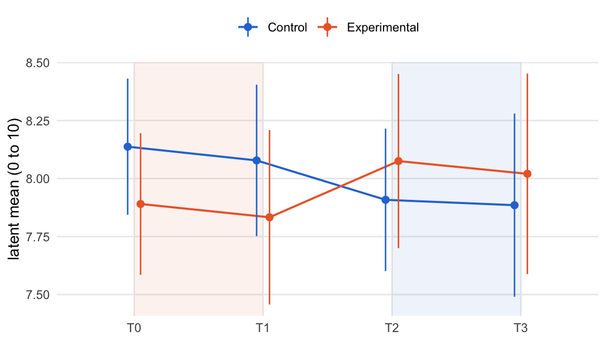
Next → Step 9, the verdict over all steps.
The verdict · Steps 9 to 12
Step 9 · The verdict
Which steps hold, under both sets of cutoffs? All steps of the construct, in all persons, in each group, and across the groups:
rnf_verdict <- bind_rows(
`all persons` = fit_row(rnf_all) |> mutate(level = "configural"),
control = rnf_con_steps |> filter(level != "configural"),
experimental = rnf_exp_steps |> filter(level != "configural"),
`both groups` = rnf_both_steps |> filter(level != "over time"),
.id = "part") |>
mutate(Chen = if_else(level == "configural", fits_configural(CFI),
holds_chen(delta_CFI, delta_RMSEA)),
small_sample = if_else(level == "configural", Chen,
holds_small(level, delta_CFI, delta_RMSEA,
delta_SRMR)))
rnf_verdict |>
transmute(part, level, ΔCFI = delta_CFI, ΔRMSEA = delta_RMSEA,
ΔSRMR = delta_SRMR, p, Chen = mark(Chen),
`small n` = mark(small_sample)) |>
mutate(across(where(is.double), \(x) round(x, 3)))| part | level | ΔCFI | ΔRMSEA | ΔSRMR | p | Chen | small n |
|---|---|---|---|---|---|---|---|
| all persons | configural | ✓ | ✓ | ||||
| control | loadings over time | 0.002 | -0.003 | 0.003 | 0.895 | ✓ | ✓ |
| control | intercepts over time | -0.004 | 0.001 | 0.001 | 0.119 | ✓ | ✓ |
| experimental | loadings over time | 0.008 | -0.008 | -0.006 | 0.998 | ✓ | ✓ |
| experimental | intercepts over time | -0.004 | 0.001 | 0.001 | 0.147 | ✓ | ✓ |
| both groups | loadings across groups | -0.001 | 0.000 | 0.002 | 0.258 | ✓ | ✓ |
| both groups | intercepts across groups | -0.003 | 0.002 | 0.002 | 0.012 | ✓ | ✓ |
Under Chen’s cutoffs every step holds, with the loadings and the intercepts of item 2 free in the control group: the measurement of Relatedness Non-Frustrated is the same at all four waves, in each group and across the groups. The small-sample reading agrees at every step.
Step 10 · Partial invariance
What is freed? The loadings and the intercepts of item 2 in the control group, as the score test of Steps 4 and 5 found. Three of the four items keep equal loadings and intercepts in every cell and scale the factor.
Step 11 · Alignment
How far are the eight cells from invariance when nothing is held equal? The share of loadings and intercepts (in %) more than .10 item standard deviations from their common aligned value:
rnf_input <- alignment_input(rnf_both_fits$configural,
model_items$RelatednessNonFrustrated)
rnf_aligned <- invariance.alignment(lambda = rnf_input$lambda,
nu = rnf_input$nu, wgt = rnf_input$weights)
rnf_tolerance <- invariance_alignment_constraints(
rnf_aligned, lambda_parm_tol = .10, nu_parm_tol = .10)
tibble(loadings = rnf_tolerance$lambda_list$prop_noninvariance,
intercepts = rnf_tolerance$nu_list$prop_noninvariance) |>
mutate(across(everything(), \(x) round(x, 1)))| loadings | intercepts |
|---|---|
| 15.6 | 12.5 |
Does it move the latent means? The latent mean of each cell as a distance from the control group in January, in its standard deviations, from the final model and aligned:
rnf_final <- rnf_both_fits$`intercepts across groups`
rnf_sd_T0 <- sqrt(lavInspect(rnf_final, "cov.lv")$Control["F_T0", "F_T0"])
rnf_alignment_means <- parameterEstimates(rnf_final) |>
filter(op == "~1", str_starts(lhs, "F_")) |>
transmute(cell = str_c(lavInspect(rnf_final, "group.label")[group],
" ", str_remove(lhs, "^F_")),
final = (est - first(est)) / rnf_sd_T0,
aligned = rnf_aligned$pars$alpha0,
difference = aligned - final)
rnf_alignment_means |>
mutate(across(where(is.double), \(x) round(x, 3)))| cell | final | aligned | difference |
|---|---|---|---|
| Control T0 | 0.000 | 0.000 | 0.000 |
| Control T1 | -0.033 | -0.002 | 0.030 |
| Control T2 | -0.126 | -0.124 | 0.002 |
| Control T3 | -0.139 | -0.026 | 0.113 |
| Experimental T0 | -0.136 | -0.075 | 0.061 |
| Experimental T1 | -0.168 | -0.092 | 0.076 |
| Experimental T2 | -0.034 | 0.021 | 0.056 |
| Experimental T3 | -0.064 | 0.038 | 0.102 |
15.6 % of the loadings and 12.5 % of the intercepts lie more than .10 item standard deviations from their common value (below the 25 % up to which aligned means are trusted). The aligned means lie at most .113 standard deviations from those of the final model.
Step 12 · What follows
Which model goes on?
rnf_status <- tibble(construct = "RelatednessNonFrustrated",
status = "partial",
set_to_0 = list(character()),
freed = list(rnf_free),
autocorrelations = list("free"),
chapter_11 = all(rnf_verdict$Chen))
show_status(rnf_status)| entry | value |
|---|---|
| construct | RelatednessNonFrustrated |
| status | partial |
| set_to_0 | |
| freed | Control: RelatednessNonFrustrated2 loadings; Control: RelatednessNonFrustrated2 intercepts |
| autocorrelations | free |
| chapter_11 | TRUE |
Relatedness Non-Frustrated enters the latent comparisons of Chapter 11 with the parameters freed in Step 10: apart from them, its measurement is the same over the four waves and in both groups.
Competence Non-Frustrated
Its path through the steps. One row per step below, judged under Chen’s cutoffs; the label marks the data of each step:
| Step | Data | Question | Result | Next |
|---|---|---|---|---|
| 2 | all persons | Configural model possible and fitting? | yes | each group |
| 3 | control | Its three models possible? | yes | over time |
| 4 | control | Loadings the same over the waves? | yes | intercepts |
| 5 | control | Intercepts the same over the waves? | yes | experimental group |
| 3 | experimental | Its three models possible? | yes | over time |
| 4 | experimental | Loadings the same over the waves? | yes | intercepts |
| 5 | experimental | Intercepts the same over the waves? | yes | both groups |
| 6 | both groups | Misfit from the groups? | no, as in random halves | across the groups |
| 7 | both groups | Loadings the same in both groups? | yes | intercepts |
| 8 | both groups | Intercepts the same in both groups? | yes | verdict |
| 9–12 | Verdict | invariant | Chapter 11 |
All persons · Steps 1 and 2
Step 1 · The model
What does the model look like? The four items of Chapter 6 (1, 2, 3 and 4) at each wave, their loadings averaging 1. In the figure, the circles are the factors of the four waves, the boxes the items by number, the arrows the loadings. The arcs above link the factors; those below link each item with itself at the next wave. The links between waves further apart belong to the model as well and are left out of the figure:
plot_model("CompetenceNonFrustrated")
How does lavaan read it? The configural model of one group, as invariance_syntax() writes it:
cnf_configural_model <- invariance_syntax(
"CompetenceNonFrustrated", loadings = "free", intercepts = "free",
two_groups = FALSE)
cat(cnf_configural_model)F_T0 =~ NA*CompetenceNonFrustrated1_T0 +
l1_T0*CompetenceNonFrustrated1_T0 +
l2_T0*CompetenceNonFrustrated2_T0 +
l3_T0*CompetenceNonFrustrated3_T0 +
l4_T0*CompetenceNonFrustrated4_T0
F_T1 =~ NA*CompetenceNonFrustrated1_T1 +
l1_T1*CompetenceNonFrustrated1_T1 +
l2_T1*CompetenceNonFrustrated2_T1 +
l3_T1*CompetenceNonFrustrated3_T1 +
l4_T1*CompetenceNonFrustrated4_T1
F_T2 =~ NA*CompetenceNonFrustrated1_T2 +
l1_T2*CompetenceNonFrustrated1_T2 +
l2_T2*CompetenceNonFrustrated2_T2 +
l3_T2*CompetenceNonFrustrated3_T2 +
l4_T2*CompetenceNonFrustrated4_T2
F_T3 =~ NA*CompetenceNonFrustrated1_T3 +
l1_T3*CompetenceNonFrustrated1_T3 +
l2_T3*CompetenceNonFrustrated2_T3 +
l3_T3*CompetenceNonFrustrated3_T3 +
l4_T3*CompetenceNonFrustrated4_T3
l1_T0 + l2_T0 + l3_T0 + l4_T0 == 4
l1_T1 + l2_T1 + l3_T1 + l4_T1 == 4
l1_T2 + l2_T2 + l3_T2 + l4_T2 == 4
l1_T3 + l2_T3 + l3_T3 + l4_T3 == 4
F_T0 ~ 0*1
F_T1 ~ 0*1
F_T2 ~ 0*1
F_T3 ~ 0*1
F_T0 ~~ F_T1
F_T0 ~~ F_T2
F_T0 ~~ F_T3
F_T1 ~~ F_T2
F_T1 ~~ F_T3
F_T2 ~~ F_T3
CompetenceNonFrustrated1_T0 ~~ CompetenceNonFrustrated1_T1
CompetenceNonFrustrated1_T0 ~~ CompetenceNonFrustrated1_T2
CompetenceNonFrustrated1_T0 ~~ CompetenceNonFrustrated1_T3
CompetenceNonFrustrated1_T1 ~~ CompetenceNonFrustrated1_T2
CompetenceNonFrustrated1_T1 ~~ CompetenceNonFrustrated1_T3
CompetenceNonFrustrated1_T2 ~~ CompetenceNonFrustrated1_T3
CompetenceNonFrustrated2_T0 ~~ CompetenceNonFrustrated2_T1
CompetenceNonFrustrated2_T0 ~~ CompetenceNonFrustrated2_T2
CompetenceNonFrustrated2_T0 ~~ CompetenceNonFrustrated2_T3
CompetenceNonFrustrated2_T1 ~~ CompetenceNonFrustrated2_T2
CompetenceNonFrustrated2_T1 ~~ CompetenceNonFrustrated2_T3
CompetenceNonFrustrated2_T2 ~~ CompetenceNonFrustrated2_T3
CompetenceNonFrustrated3_T0 ~~ CompetenceNonFrustrated3_T1
CompetenceNonFrustrated3_T0 ~~ CompetenceNonFrustrated3_T2
CompetenceNonFrustrated3_T0 ~~ CompetenceNonFrustrated3_T3
CompetenceNonFrustrated3_T1 ~~ CompetenceNonFrustrated3_T2
CompetenceNonFrustrated3_T1 ~~ CompetenceNonFrustrated3_T3
CompetenceNonFrustrated3_T2 ~~ CompetenceNonFrustrated3_T3
CompetenceNonFrustrated4_T0 ~~ CompetenceNonFrustrated4_T1
CompetenceNonFrustrated4_T0 ~~ CompetenceNonFrustrated4_T2
CompetenceNonFrustrated4_T0 ~~ CompetenceNonFrustrated4_T3
CompetenceNonFrustrated4_T1 ~~ CompetenceNonFrustrated4_T2
CompetenceNonFrustrated4_T1 ~~ CompetenceNonFrustrated4_T3
CompetenceNonFrustrated4_T2 ~~ CompetenceNonFrustrated4_T3Next → Step 2, the configural model in all persons.
Step 2 · The configural model all persons
What is fitted? The model of Step 1, with loadings and intercepts free at every wave, in all persons together:
cnf_all <- df_wide |>
cfa(model = cnf_configural_model, data = _, estimator = "MLR",
missing = "fiml")Does it pass the checks? The eleven checks of 7.1, in their order:
cnf_all_checks <- model_checks(cnf_all, judge_fit = TRUE)
cnf_all_checks| check | what | value | criterion | holds |
|---|---|---|---|---|
| 1 estimation | converged | yes | yes | ✓ |
| 2 variances | smallest residual variance: item 4 at T1 | 2.219 | above 0 | ✓ |
| 3 correlations | largest correlation: the factors at T0 and T3 | .751 | within ±1 | ✓ |
| 4 residuals | smallest eigenvalue of the residual covariances | 1.337 | above 0 | ✓ |
| 5 factors | smallest eigenvalue of the factor covariances | .914 | above 0 | ✓ |
| 6 standard errors | estimated for every free parameter | yes | yes | ✓ |
| 7 fit | CFI | .980 | at least .90 | ✓ |
| 8 fit | RMSEA [90 % interval] | .036 [.022, .048] | reported | – |
| 9 fit | SRMR | .043 | reported | – |
| 10 strain | largest modification index: item 2 with item 4 at T0 | 11.2 | reported | – |
| 11 estimates | smallest standardized loading: item 2 at T3 | .68 | reported | – |
Every check that decides holds: the estimation converged, the solution is proper (checks 1 to 6), and the model fits (CFI = .980, at least .90). Checks 8 to 11 are reported; Step 6 returns to the fit, and Steps 4, 5, 7 and 8 to the loadings.
Are the estimates sensible? The standardized loading of every item at every wave, and the correlations of the factors:
loading_table(cnf_all)| item | T0 | T1 | T2 | T3 |
|---|---|---|---|---|
| item 1 | 0.77 | 0.74 | 0.70 | 0.75 |
| item 2 | 0.73 | 0.75 | 0.77 | 0.68 |
| item 3 | 0.75 | 0.77 | 0.76 | 0.83 |
| item 4 | 0.70 | 0.83 | 0.76 | 0.77 |
factor_correlations(cnf_all)| T0–T1 | T0–T2 | T0–T3 | T1–T2 | T1–T3 | T2–T3 |
|---|---|---|---|---|---|
| 0.7 | 0.73 | 0.75 | 0.73 | 0.65 | 0.74 |
Every item loads between .68 and .83, and the factors of neighbouring waves correlate between .70 and .74. Why are loadings and intercepts not tested here? The groups were trained at different waves, so a model of all persons would average a trained and an untrained group at the same wave (7.1). All persons show only whether one factor per wave describes the items; the tests over time follow in each group, and then across the groups.
Next → Steps 3 to 5, each group on its own: first the control group, then the experimental group.
Control group · Steps 3 to 5
The 252 persons of the control group, trained between September and December.
Step 3 · The checks control
What is fitted? The three models of this group: configural, with equal loadings over the waves (Step 4), and with equal intercepts as well (Step 5):
cnf_con_models <- time_steps |>
pmap(\(level, loadings, intercepts) invariance_syntax(
"CompetenceNonFrustrated", loadings, intercepts, two_groups = FALSE)) |>
set_names(time_steps$level)
cnf_con_fits <- cnf_con_models |>
map(\(model) control |>
cfa(model = model, data = _, estimator = "MLR", missing = "fiml"))Does the configural model pass the checks? The eleven checks of 7.1:
cnf_con_checks <- model_checks(cnf_con_fits$configural)
cnf_con_checks| check | what | value | criterion | holds |
|---|---|---|---|---|
| 1 estimation | converged | yes | yes | ✓ |
| 2 variances | smallest residual variance: item 4 at T1 | 1.865 | above 0 | ✓ |
| 3 correlations | largest correlation: the factors at T1 and T2 | .739 | within ±1 | ✓ |
| 4 residuals | smallest eigenvalue of the residual covariances | .993 | above 0 | ✓ |
| 5 factors | smallest eigenvalue of the factor covariances | .794 | above 0 | ✓ |
| 6 standard errors | estimated for every free parameter | yes | yes | ✓ |
| 7 fit | CFI | .947 | reported | – |
| 8 fit | RMSEA [90 % interval] | .058 [.042, .073] | reported | – |
| 9 fit | SRMR | .065 | reported | – |
| 10 strain | largest modification index: item 2 with item 4 at T0 | 10.7 | reported | – |
| 11 estimates | smallest standardized loading: item 1 at T2 | .62 | reported | – |
Checks 1 to 6 hold: the solution is proper. Its fit is reported (checks 7 to 9); whether one factor per wave describes the items was judged once, in all persons (Step 2). Are the other two models possible as well? Checks 1 to 6 of all three:
possible_table(cnf_con_fits)| model | estimation | variances | correlations | residuals | factors | standard errors |
|---|---|---|---|---|---|---|
| configural | ✓ | ✓ | ✓ | ✓ | ✓ | ✓ |
| loadings over time | ✓ | ✓ | ✓ | ✓ | ✓ | ✓ |
| intercepts over time | ✓ | ✓ | ✓ | ✓ | ✓ | ✓ |
All three are possible as specified.
Next → Step 4, the loadings over time in this group.
Step 4 · Loadings over time control
Do the loadings stay the same? Each item keeps one loading over the four waves:
cnf_con_steps <- step_table(cnf_con_fits)
show_steps(cnf_con_steps, "loadings over time")| level | df | CFI | ΔCFI | ΔRMSEA | ΔSRMR | p |
|---|---|---|---|---|---|---|
| loadings over time | 83 | 0.942 | -0.005 | -0.001 | 0.009 | 0.163 |
They do under Chen’s cutoffs (ΔCFI = -.005), though not under those of the small-sample reading, and the χ² test does not reject them (p = .163).
Next → Step 5, with the loadings held equal over the waves.
Step 5 · Intercepts over time control
Do the intercepts stay the same? Each item keeps one intercept over the four waves; the latent means are freed:
cnf_con_steps <- step_table(cnf_con_fits)
show_steps(cnf_con_steps, "intercepts over time")| level | df | CFI | ΔCFI | ΔRMSEA | ΔSRMR | p |
|---|---|---|---|---|---|---|
| intercepts over time | 92 | 0.942 | 0 | -0.003 | 0.001 | 0.367 |
They do, under both sets of cutoffs (ΔCFI = -.000), and the χ² test does not reject them (p = .367).
Next → Steps 3 to 5 in the experimental group.
Experimental group · Steps 3 to 5
The 199 persons of the experimental group, trained between January and March.
Step 3 · The checks experimental
What is fitted? The three models of this group: configural, with equal loadings over the waves (Step 4), and with equal intercepts as well (Step 5):
cnf_exp_models <- time_steps |>
pmap(\(level, loadings, intercepts) invariance_syntax(
"CompetenceNonFrustrated", loadings, intercepts, two_groups = FALSE)) |>
set_names(time_steps$level)
cnf_exp_fits <- cnf_exp_models |>
map(\(model) experimental |>
cfa(model = model, data = _, estimator = "MLR", missing = "fiml"))Does the configural model pass the checks? The eleven checks of 7.1:
cnf_exp_checks <- model_checks(cnf_exp_fits$configural)
cnf_exp_checks| check | what | value | criterion | holds |
|---|---|---|---|---|
| 1 estimation | converged | yes | yes | ✓ |
| 2 variances | smallest residual variance: item 3 at T3 | 1.305 | above 0 | ✓ |
| 3 correlations | largest correlation: the factors at T2 and T3 | .810 | within ±1 | ✓ |
| 4 residuals | smallest eigenvalue of the residual covariances | .296 | above 0 | ✓ |
| 5 factors | smallest eigenvalue of the factor covariances | .507 | above 0 | ✓ |
| 6 standard errors | estimated for every free parameter | yes | yes | ✓ |
| 7 fit | CFI | .968 | reported | – |
| 8 fit | RMSEA [90 % interval] | .050 [.029, .069] | reported | – |
| 9 fit | SRMR | .071 | reported | – |
| 10 strain | largest modification index: item 2 at T1 on the factor at T3 | 13.0 | reported | – |
| 11 estimates | smallest standardized loading: item 2 at T3 | .72 | reported | – |
Checks 1 to 6 hold: the solution is proper. Its fit is reported (checks 7 to 9); whether one factor per wave describes the items was judged once, in all persons (Step 2). Are the other two models possible as well? Checks 1 to 6 of all three:
possible_table(cnf_exp_fits)| model | estimation | variances | correlations | residuals | factors | standard errors |
|---|---|---|---|---|---|---|
| configural | ✓ | ✓ | ✓ | ✓ | ✓ | ✓ |
| loadings over time | ✓ | ✓ | ✓ | ✓ | ✓ | ✓ |
| intercepts over time | ✓ | ✓ | ✓ | ✓ | ✓ | ✓ |
All three are possible as specified.
Next → Step 4, the loadings over time in this group.
Step 4 · Loadings over time experimental
Do the loadings stay the same? Each item keeps one loading over the four waves:
cnf_exp_steps <- step_table(cnf_exp_fits)
show_steps(cnf_exp_steps, "loadings over time")| level | df | CFI | ΔCFI | ΔRMSEA | ΔSRMR | p |
|---|---|---|---|---|---|---|
| loadings over time | 83 | 0.971 | 0.004 | -0.006 | 0.001 | 0.908 |
They do, under both sets of cutoffs (ΔCFI = .004), and the χ² test does not reject them (p = .908).
Next → Step 5, with the loadings held equal over the waves.
Step 5 · Intercepts over time experimental
Do the intercepts stay the same? Each item keeps one intercept over the four waves; the latent means are freed:
cnf_exp_steps <- step_table(cnf_exp_fits)
show_steps(cnf_exp_steps, "intercepts over time")| level | df | CFI | ΔCFI | ΔRMSEA | ΔSRMR | p |
|---|---|---|---|---|---|---|
| intercepts over time | 92 | 0.967 | -0.004 | 0.001 | 0.001 | 0.103 |
They do, under both sets of cutoffs (ΔCFI = -.004), and the χ² test does not reject them (p = .103).
Next → Step 6, both groups together, each with what it needed.
Both groups · Steps 6 to 8
Both groups together, with what each group needed.
Step 6 · Do the groups add misfit? both groups
How well does the configural model fit in the two groups, and in random halves of the persons?
cnf_both_models <- group_steps |>
pmap(\(level, loadings, intercepts) invariance_syntax(
"CompetenceNonFrustrated", loadings, intercepts)) |>
set_names(group_steps$level)
cnf_both_fits <- cnf_both_models |>
map(\(model) df_wide |>
cfa(model = model, data = _, group = "condition",
estimator = "MLR", missing = "fiml"))
cnf_halves <- c(`random halves 1` = 1, `random halves 2` = 2,
`random halves 3` = 3) |>
map(\(seed) {
set.seed(seed)
df_wide |>
mutate(condition = sample(condition)) |>
cfa(model = cnf_both_models$configural, data = _, group = "condition",
estimator = "MLR", missing = "fiml")
})
cnf_fit_table <- c(list(`two groups` = cnf_both_fits$configural),
cnf_halves) |>
map(fit_row) |>
list_rbind(names_to = "model")
cnf_fit_table |>
mutate(across(where(is.double), \(x) round(x, 3)))| model | chisq | df | CFI | RMSEA | SRMR |
|---|---|---|---|---|---|
| two groups | 204.019 | 148 | 0.958 | 0.054 | 0.068 |
| random halves 1 | 211.224 | 148 | 0.947 | 0.060 | 0.068 |
| random halves 2 | 232.484 | 148 | 0.944 | 0.062 | 0.072 |
| random halves 3 | 190.843 | 148 | 0.961 | 0.053 | 0.066 |
Are all four models of both groups possible? Checks 1 to 6 of each:
possible_table(cnf_both_fits)| model | estimation | variances | correlations | residuals | factors | standard errors |
|---|---|---|---|---|---|---|
| configural | ✓ | ✓ | ✓ | ✓ | ✓ | ✓ |
| over time | ✓ | ✓ | ✓ | ✓ | ✓ | ✓ |
| loadings across groups | ✓ | ✓ | ✓ | ✓ | ✓ | ✓ |
| intercepts across groups | ✓ | ✓ | ✓ | ✓ | ✓ | ✓ |
All four models of both groups are possible, and the configural model fits closely in the two groups (CFI = .958) as in the random halves.
Next → Step 7, the loadings across the groups.
Step 7 · Loadings across the groups both groups
Are the loadings the same in both groups?
cnf_both_steps <- step_table(cnf_both_fits[-1])
show_steps(cnf_both_steps, "loadings across groups")| level | df | CFI | ΔCFI | ΔRMSEA | ΔSRMR | p |
|---|---|---|---|---|---|---|
| loadings across groups | 187 | 0.955 | 0 | -0.001 | -0.002 | 0.673 |
They are, under both sets of cutoffs (ΔCFI = .000), and the χ² test does not reject them (p = .673).
Next → Step 8, the intercepts across the groups, with the loadings held equal.
Step 8 · Intercepts across the groups both groups
Are the intercepts the same in both groups? Each item keeps one intercept, in every cell:
show_steps(cnf_both_steps, "intercepts across groups")| level | df | CFI | ΔCFI | ΔRMSEA | ΔSRMR | p |
|---|---|---|---|---|---|---|
| intercepts across groups | 190 | 0.955 | 0 | -0.001 | 0 | 0.567 |
They are, under both sets of cutoffs (ΔCFI = .000), and the χ² test does not reject them (p = .567).
Where do the latent means lie? In the final model, on the 0 to 10 scale of the items:
plot_latent_means(cnf_both_fits$`intercepts across groups`)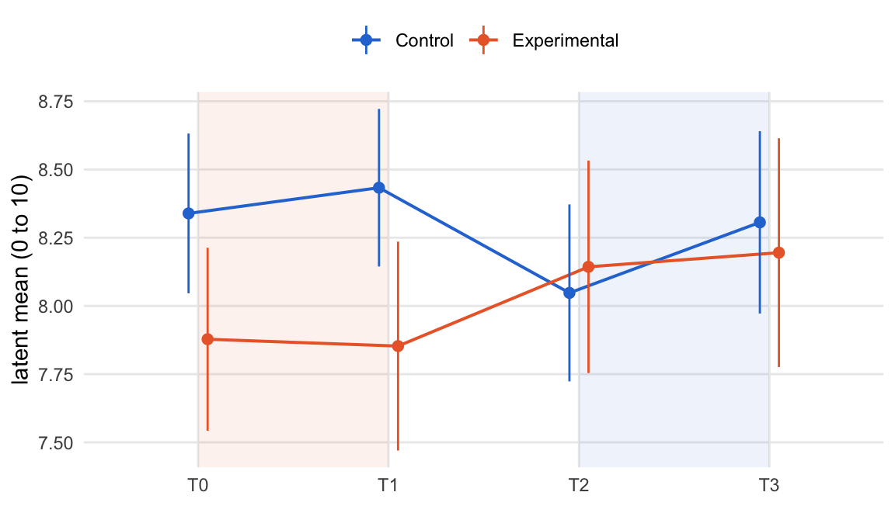
Next → Step 9, the verdict over all steps.
The verdict · Steps 9 to 12
Step 9 · The verdict
Which steps hold, under both sets of cutoffs? All steps of the construct, in all persons, in each group, and across the groups:
cnf_verdict <- bind_rows(
`all persons` = fit_row(cnf_all) |> mutate(level = "configural"),
control = cnf_con_steps |> filter(level != "configural"),
experimental = cnf_exp_steps |> filter(level != "configural"),
`both groups` = cnf_both_steps |> filter(level != "over time"),
.id = "part") |>
mutate(Chen = if_else(level == "configural", fits_configural(CFI),
holds_chen(delta_CFI, delta_RMSEA)),
small_sample = if_else(level == "configural", Chen,
holds_small(level, delta_CFI, delta_RMSEA,
delta_SRMR)))
cnf_verdict |>
transmute(part, level, ΔCFI = delta_CFI, ΔRMSEA = delta_RMSEA,
ΔSRMR = delta_SRMR, p, Chen = mark(Chen),
`small n` = mark(small_sample)) |>
mutate(across(where(is.double), \(x) round(x, 3)))| part | level | ΔCFI | ΔRMSEA | ΔSRMR | p | Chen | small n |
|---|---|---|---|---|---|---|---|
| all persons | configural | ✓ | ✓ | ||||
| control | loadings over time | -0.005 | -0.001 | 0.009 | 0.163 | ✓ | ✗ |
| control | intercepts over time | 0.000 | -0.003 | 0.001 | 0.367 | ✓ | ✓ |
| experimental | loadings over time | 0.004 | -0.006 | 0.001 | 0.908 | ✓ | ✓ |
| experimental | intercepts over time | -0.004 | 0.001 | 0.001 | 0.103 | ✓ | ✓ |
| both groups | loadings across groups | 0.000 | -0.001 | -0.002 | 0.673 | ✓ | ✓ |
| both groups | intercepts across groups | 0.000 | -0.001 | 0.000 | 0.567 | ✓ | ✓ |
Under Chen’s cutoffs every step holds: the measurement of Competence Non-Frustrated is the same at all four waves, in each group and across the groups. The small-sample reading would stop at one step: the loadings over time in the control group.
Step 10 · Partial invariance
Is it needed? No: under Chen’s cutoffs every step holds.
Step 11 · Alignment
How far are the eight cells from invariance when nothing is held equal? The share of loadings and intercepts (in %) more than .10 item standard deviations from their common aligned value:
cnf_input <- alignment_input(cnf_both_fits$configural,
model_items$CompetenceNonFrustrated)
cnf_aligned <- invariance.alignment(lambda = cnf_input$lambda,
nu = cnf_input$nu, wgt = cnf_input$weights)
cnf_tolerance <- invariance_alignment_constraints(
cnf_aligned, lambda_parm_tol = .10, nu_parm_tol = .10)
tibble(loadings = cnf_tolerance$lambda_list$prop_noninvariance,
intercepts = cnf_tolerance$nu_list$prop_noninvariance) |>
mutate(across(everything(), \(x) round(x, 1)))| loadings | intercepts |
|---|---|
| 6.2 | 3.1 |
Does it move the latent means? The latent mean of each cell as a distance from the control group in January, in its standard deviations, from the final model and aligned:
cnf_final <- cnf_both_fits$`intercepts across groups`
cnf_sd_T0 <- sqrt(lavInspect(cnf_final, "cov.lv")$Control["F_T0", "F_T0"])
cnf_alignment_means <- parameterEstimates(cnf_final) |>
filter(op == "~1", str_starts(lhs, "F_")) |>
transmute(cell = str_c(lavInspect(cnf_final, "group.label")[group],
" ", str_remove(lhs, "^F_")),
final = (est - first(est)) / cnf_sd_T0,
aligned = cnf_aligned$pars$alpha0,
difference = aligned - final)
cnf_alignment_means |>
mutate(across(where(is.double), \(x) round(x, 3)))| cell | final | aligned | difference |
|---|---|---|---|
| Control T0 | 0.000 | 0.000 | 0.000 |
| Control T1 | 0.050 | 0.040 | -0.010 |
| Control T2 | -0.154 | -0.155 | 0.000 |
| Control T3 | -0.017 | -0.024 | -0.007 |
| Experimental T0 | -0.244 | -0.256 | -0.011 |
| Experimental T1 | -0.258 | -0.281 | -0.023 |
| Experimental T2 | -0.104 | -0.158 | -0.054 |
| Experimental T3 | -0.076 | -0.051 | 0.025 |
6.2 % of the loadings and 3.1 % of the intercepts lie more than .10 item standard deviations from their common value (below the 25 % up to which aligned means are trusted). The aligned means lie at most .054 standard deviations from those of the final model.
Step 12 · What follows
Which model goes on?
cnf_status <- tibble(construct = "CompetenceNonFrustrated",
status = "as specified",
set_to_0 = list(character()),
freed = list(character()),
autocorrelations = list("free"),
chapter_11 = all(cnf_verdict$Chen))
show_status(cnf_status)| entry | value |
|---|---|
| construct | CompetenceNonFrustrated |
| status | as specified |
| set_to_0 | |
| freed | |
| autocorrelations | free |
| chapter_11 | TRUE |
Competence Non-Frustrated enters the latent comparisons of Chapter 11 as specified: its measurement is the same over the four waves and in both groups.
Empowerment
Its path through the steps. One row per step below, judged under Chen’s cutoffs; the label marks the data of each step:
| Step | Data | Question | Result | Next |
|---|---|---|---|---|
| 2 | all persons | Configural model possible and fitting? | yes | each group |
| 3 | control | Its three models possible? | yes | over time |
| 4 | control | Loadings the same over the waves? | yes | intercepts |
| 5 | control | Intercepts the same over the waves? | yes | experimental group |
| 3 | experimental | Its three models possible? | yes, after adjustment A | over time |
| 4 | experimental | Loadings the same over the waves? | yes | intercepts |
| 5 | experimental | Intercepts the same over the waves? | yes | both groups |
| 6 | both groups | Misfit from the groups? | no, as in random halves | across the groups |
| 7 | both groups | Loadings the same in both groups? | yes | intercepts |
| 8 | both groups | Intercepts the same in both groups? | yes | verdict |
| 9–12 | Verdict | invariant | Chapter 11 |
All persons · Steps 1 and 2
Step 1 · The model
What does the model look like? The four items of Chapter 6 (1, 3, 4 and 5) at each wave, their loadings averaging 1, with the residual covariance of items 4 and 5 at every wave. In the figure, the circles are the factors of the four waves, the boxes the items by number, the arrows the loadings. The arcs above link the factors; those below link each item with itself at the next wave, the dashed ones the residual covariances within a wave. The links between waves further apart belong to the model as well and are left out of the figure:
plot_model("Empowerment")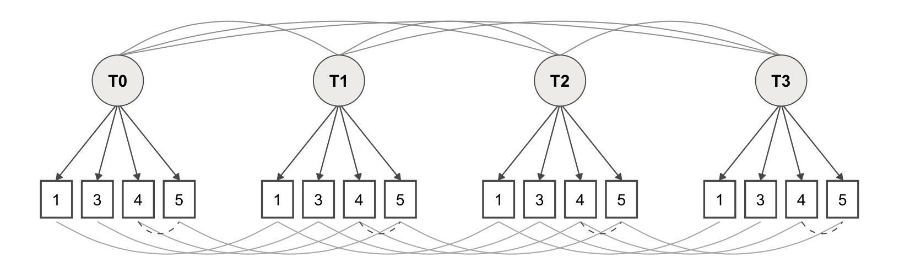
How does lavaan read it? The configural model of one group, as invariance_syntax() writes it:
emp_configural_model <- invariance_syntax(
"Empowerment", loadings = "free", intercepts = "free",
two_groups = FALSE)
cat(emp_configural_model)F_T0 =~ NA*Empowerment1_T0 +
l1_T0*Empowerment1_T0 +
l2_T0*Empowerment3_T0 +
l3_T0*Empowerment4_T0 +
l4_T0*Empowerment5_T0
F_T1 =~ NA*Empowerment1_T1 +
l1_T1*Empowerment1_T1 +
l2_T1*Empowerment3_T1 +
l3_T1*Empowerment4_T1 +
l4_T1*Empowerment5_T1
F_T2 =~ NA*Empowerment1_T2 +
l1_T2*Empowerment1_T2 +
l2_T2*Empowerment3_T2 +
l3_T2*Empowerment4_T2 +
l4_T2*Empowerment5_T2
F_T3 =~ NA*Empowerment1_T3 +
l1_T3*Empowerment1_T3 +
l2_T3*Empowerment3_T3 +
l3_T3*Empowerment4_T3 +
l4_T3*Empowerment5_T3
l1_T0 + l2_T0 + l3_T0 + l4_T0 == 4
l1_T1 + l2_T1 + l3_T1 + l4_T1 == 4
l1_T2 + l2_T2 + l3_T2 + l4_T2 == 4
l1_T3 + l2_T3 + l3_T3 + l4_T3 == 4
F_T0 ~ 0*1
F_T1 ~ 0*1
F_T2 ~ 0*1
F_T3 ~ 0*1
F_T0 ~~ F_T1
F_T0 ~~ F_T2
F_T0 ~~ F_T3
F_T1 ~~ F_T2
F_T1 ~~ F_T3
F_T2 ~~ F_T3
Empowerment4_T0 ~~ Empowerment5_T0
Empowerment4_T1 ~~ Empowerment5_T1
Empowerment4_T2 ~~ Empowerment5_T2
Empowerment4_T3 ~~ Empowerment5_T3
Empowerment1_T0 ~~ Empowerment1_T1
Empowerment1_T0 ~~ Empowerment1_T2
Empowerment1_T0 ~~ Empowerment1_T3
Empowerment1_T1 ~~ Empowerment1_T2
Empowerment1_T1 ~~ Empowerment1_T3
Empowerment1_T2 ~~ Empowerment1_T3
Empowerment3_T0 ~~ Empowerment3_T1
Empowerment3_T0 ~~ Empowerment3_T2
Empowerment3_T0 ~~ Empowerment3_T3
Empowerment3_T1 ~~ Empowerment3_T2
Empowerment3_T1 ~~ Empowerment3_T3
Empowerment3_T2 ~~ Empowerment3_T3
Empowerment4_T0 ~~ Empowerment4_T1
Empowerment4_T0 ~~ Empowerment4_T2
Empowerment4_T0 ~~ Empowerment4_T3
Empowerment4_T1 ~~ Empowerment4_T2
Empowerment4_T1 ~~ Empowerment4_T3
Empowerment4_T2 ~~ Empowerment4_T3
Empowerment5_T0 ~~ Empowerment5_T1
Empowerment5_T0 ~~ Empowerment5_T2
Empowerment5_T0 ~~ Empowerment5_T3
Empowerment5_T1 ~~ Empowerment5_T2
Empowerment5_T1 ~~ Empowerment5_T3
Empowerment5_T2 ~~ Empowerment5_T3Next → Step 2, the configural model in all persons.
Step 2 · The configural model all persons
What is fitted? The model of Step 1, with loadings and intercepts free at every wave, in all persons together:
emp_all <- df_wide |>
cfa(model = emp_configural_model, data = _, estimator = "MLR",
missing = "fiml")Does it pass the checks? The eleven checks of 7.1, in their order:
emp_all_checks <- model_checks(emp_all, judge_fit = TRUE)
emp_all_checks| check | what | value | criterion | holds |
|---|---|---|---|---|
| 1 estimation | converged | yes | yes | ✓ |
| 2 variances | smallest residual variance: item 3 at T3 | .494 | above 0 | ✓ |
| 3 correlations | largest correlation: the factors at T2 and T3 | .767 | within ±1 | ✓ |
| 4 residuals | smallest eigenvalue of the residual covariances | .236 | above 0 | ✓ |
| 5 factors | smallest eigenvalue of the factor covariances | .244 | above 0 | ✓ |
| 6 standard errors | estimated for every free parameter | yes | yes | ✓ |
| 7 fit | CFI | .978 | at least .90 | ✓ |
| 8 fit | RMSEA [90 % interval] | .040 [.028, .052] | reported | – |
| 9 fit | SRMR | .050 | reported | – |
| 10 strain | largest modification index: item 5 with item 4 at T0 | 16.1 | reported | – |
| 11 estimates | smallest standardized loading: item 1 at T2 | .42 | reported | – |
Every check that decides holds: the estimation converged, the solution is proper (checks 1 to 6), and the model fits (CFI = .978, at least .90). Checks 8 to 11 are reported; Step 6 returns to the fit, and Steps 4, 5, 7 and 8 to the loadings.
Are the estimates sensible? The standardized loading of every item at every wave, and the correlations of the factors:
loading_table(emp_all)| item | T0 | T1 | T2 | T3 |
|---|---|---|---|---|
| item 1 | 0.54 | 0.60 | 0.42 | 0.43 |
| item 3 | 0.87 | 0.78 | 0.83 | 0.83 |
| item 4 | 0.68 | 0.65 | 0.65 | 0.67 |
| item 5 | 0.75 | 0.78 | 0.80 | 0.81 |
factor_correlations(emp_all)| T0–T1 | T0–T2 | T0–T3 | T1–T2 | T1–T3 | T2–T3 |
|---|---|---|---|---|---|
| 0.68 | 0.67 | 0.69 | 0.68 | 0.59 | 0.77 |
Every item loads between .42 and .87, and the factors of neighbouring waves correlate between .68 and .77. Why are loadings and intercepts not tested here? The groups were trained at different waves, so a model of all persons would average a trained and an untrained group at the same wave (7.1). All persons show only whether one factor per wave describes the items; the tests over time follow in each group, and then across the groups.
Next → Steps 3 to 5, each group on its own: first the control group, then the experimental group.
Control group · Steps 3 to 5
The 252 persons of the control group, trained between September and December.
Step 3 · The checks control
What is fitted? The three models of this group: configural, with equal loadings over the waves (Step 4), and with equal intercepts as well (Step 5):
emp_con_models <- time_steps |>
pmap(\(level, loadings, intercepts) invariance_syntax(
"Empowerment", loadings, intercepts, two_groups = FALSE)) |>
set_names(time_steps$level)
emp_con_fits <- emp_con_models |>
map(\(model) control |>
cfa(model = model, data = _, estimator = "MLR", missing = "fiml"))Does the configural model pass the checks? The eleven checks of 7.1:
emp_con_checks <- model_checks(emp_con_fits$configural)
emp_con_checks| check | what | value | criterion | holds |
|---|---|---|---|---|
| 1 estimation | converged | yes | yes | ✓ |
| 2 variances | smallest residual variance: item 5 at T3 | .218 | above 0 | ✓ |
| 3 correlations | largest correlation: the factors at T1 and T2 | .833 | within ±1 | ✓ |
| 4 residuals | smallest eigenvalue of the residual covariances | .162 | above 0 | ✓ |
| 5 factors | smallest eigenvalue of the factor covariances | .167 | above 0 | ✓ |
| 6 standard errors | estimated for every free parameter | yes | yes | ✓ |
| 7 fit | CFI | .956 | reported | – |
| 8 fit | RMSEA [90 % interval] | .061 [.046, .077] | reported | – |
| 9 fit | SRMR | .063 | reported | – |
| 10 strain | largest modification index: item 4 with item 1 at T1 | 12.1 | reported | – |
| 11 estimates | smallest standardized loading: item 1 at T2 | .39 | reported | – |
Checks 1 to 6 hold: the solution is proper. Its fit is reported (checks 7 to 9); whether one factor per wave describes the items was judged once, in all persons (Step 2). Are the other two models possible as well? Checks 1 to 6 of all three:
possible_table(emp_con_fits)| model | estimation | variances | correlations | residuals | factors | standard errors |
|---|---|---|---|---|---|---|
| configural | ✓ | ✓ | ✓ | ✓ | ✓ | ✓ |
| loadings over time | ✓ | ✓ | ✓ | ✓ | ✓ | ✓ |
| intercepts over time | ✓ | ✓ | ✓ | ✓ | ✓ | ✓ |
All three are possible as specified.
Next → Step 4, the loadings over time in this group.
Step 4 · Loadings over time control
Do the loadings stay the same? Each item keeps one loading over the four waves:
emp_con_steps <- step_table(emp_con_fits)
show_steps(emp_con_steps, "loadings over time")| level | df | CFI | ΔCFI | ΔRMSEA | ΔSRMR | p |
|---|---|---|---|---|---|---|
| loadings over time | 79 | 0.946 | -0.009 | 0.002 | 0.016 | 0.074 |
They do under Chen’s cutoffs (ΔCFI = -.009), though not under those of the small-sample reading, and the χ² test does not reject them (p = .074).
Next → Step 5, with the loadings held equal over the waves.
Step 5 · Intercepts over time control
Do the intercepts stay the same? Each item keeps one intercept over the four waves; the latent means are freed:
emp_con_steps <- step_table(emp_con_fits)
show_steps(emp_con_steps, "intercepts over time")| level | df | CFI | ΔCFI | ΔRMSEA | ΔSRMR | p |
|---|---|---|---|---|---|---|
| intercepts over time | 88 | 0.942 | -0.004 | -0.001 | 0.003 | 0.066 |
They do, under both sets of cutoffs (ΔCFI = -.004), and the χ² test does not reject them (p = .066).
Next → Steps 3 to 5 in the experimental group.
Experimental group · Steps 3 to 5
The 199 persons of the experimental group, trained between January and March.
Step 3 · The checks experimental
What is fitted? The three models of this group: configural, with equal loadings over the waves (Step 4), and with equal intercepts as well (Step 5):
emp_exp_models <- time_steps |>
pmap(\(level, loadings, intercepts) invariance_syntax(
"Empowerment", loadings, intercepts, two_groups = FALSE)) |>
set_names(time_steps$level)
emp_exp_fits <- emp_exp_models |>
map(\(model) experimental |>
cfa(model = model, data = _, estimator = "MLR", missing = "fiml"))Does the configural model pass the checks? The eleven checks of 7.1:
emp_exp_checks <- model_checks(emp_exp_fits$configural)
emp_exp_checks| check | what | value | criterion | holds |
|---|---|---|---|---|
| 1 estimation | converged | yes | yes | ✓ |
| 2 variances | smallest residual variance: item 3 at T3 | -.182 | above 0 | ✗ |
| 3 correlations | largest correlation: the factors at T0 and T3 | .821 | within ±1 | ✓ |
| 4 residuals | smallest eigenvalue of the residual covariances | -.263 | above 0 | ✗ |
| 5 factors | smallest eigenvalue of the factor covariances | .170 | above 0 | ✓ |
| 6 standard errors | estimated for every free parameter | yes | yes | ✓ |
| 7 fit | CFI | .985 | reported | – |
| 8 fit | RMSEA [90 % interval] | .033 [.000, .056] | reported | – |
| 9 fit | SRMR | .081 | reported | – |
| 10 strain | largest modification index: item 5 with item 4 at T0 | 9.3 | reported | – |
| 11 estimates | smallest standardized loading: item 1 at T3 | .38 | reported | – |
Check 2 (smallest residual variance: item 3 at T3, -.182) and check 4 (smallest eigenvalue of the residual covariances, -.263) fail: the solution is not possible. Its fit is reported (checks 7 to 9); whether one factor per wave describes the items was judged once, in all persons (Step 2). Are the other two models possible as well? Checks 1 to 6 of all three:
possible_table(emp_exp_fits)| model | estimation | variances | correlations | residuals | factors | standard errors |
|---|---|---|---|---|---|---|
| configural | ✓ | ✗ | ✓ | ✗ | ✓ | ✓ |
| loadings over time | ✓ | ✗ | ✗ | ✗ | ✓ | ✓ |
| intercepts over time | ✓ | ✗ | ✗ | ✗ | ✓ | ✓ |
Not all are possible. Where is the problem? The estimates beyond their range in every model that is not possible, with their intervals; the figure shows them in the first of these models:
emp_exp_boundary <- emp_exp_fits |>
map(boundary_estimates) |>
list_rbind(names_to = "level")
emp_exp_first <- emp_exp_boundary$level[1]
emp_exp_flagged <- emp_exp_boundary |>
filter(level == emp_exp_first) |>
pull(key)
plot_model("Empowerment", emp_exp_fits[[emp_exp_first]],
flagged = emp_exp_flagged)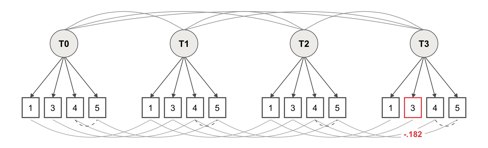
emp_exp_boundary |>
select(-key) |>
mutate(across(where(is.double), \(x) round(x, 2)))| level | estimate | value | se | ci.lower | ci.upper |
|---|---|---|---|---|---|
| configural | residual variance: item 3 at T3 | -0.18 | 0.20 | -0.58 | 0.21 |
| loadings over time | residual variance: item 3 at T3 | -0.15 | 0.17 | -0.48 | 0.19 |
| loadings over time | correlation: item 3, T2 with T3 | -1.58 | 1.75 | -5.02 | 1.85 |
| intercepts over time | residual variance: item 3 at T3 | -0.17 | 0.17 | -0.51 | 0.16 |
| intercepts over time | correlation: item 3, T2 with T3 | -1.45 | 1.69 | -4.77 | 1.86 |
Is it within sampling error? Each estimate against the bound it crosses, with its 95 % interval, in every model where it occurs:
emp_exp_boundary |>
mutate(estimate = str_c(estimate, " (", level, ")")) |>
plot_boundary()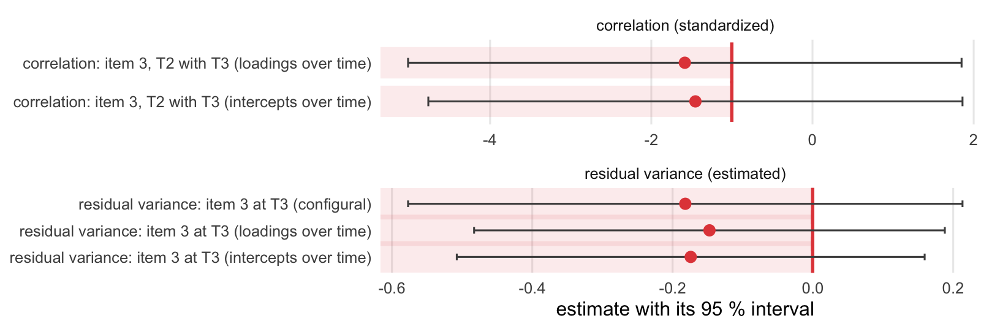
Every interval reaches back across its bound into the possible range: what sampling error produces near a bound, in a group whose waves rest on a hundred to two hundred persons each (Kolenikov & Bollen, 2012). What does the stop rule do? Adjustment A: these estimates at 0 (a negative variance together with the links of its residual to the other waves). In the syntax of each of the three models, these lines are added (shown for the configural model):
emp_exp_specified <- emp_exp_models$configural
emp_exp_zero <- c(
"Experimental: Empowerment3_T3 ~~ Empowerment3_T3",
"Experimental: Empowerment3_T0 ~~ Empowerment3_T3",
"Experimental: Empowerment3_T1 ~~ Empowerment3_T3",
"Experimental: Empowerment3_T2 ~~ Empowerment3_T3")
emp_exp_models <- time_steps |>
pmap(\(level, loadings, intercepts) invariance_syntax(
"Empowerment", loadings, intercepts, two_groups = FALSE,
zero = emp_exp_zero)) |>
set_names(time_steps$level)
emp_exp_fits <- emp_exp_models |>
map(\(model) experimental |>
cfa(model = model, data = _, estimator = "MLR", missing = "fiml"))
syntax_changes(emp_exp_specified, emp_exp_models$configural)+ Empowerment3_T3 ~~ 0*Empowerment3_T3
+ Empowerment3_T0 ~~ 0*Empowerment3_T3
+ Empowerment3_T1 ~~ 0*Empowerment3_T3
+ Empowerment3_T2 ~~ 0*Empowerment3_T3Are the adjusted models possible? In the figure of the model that failed first, the estimates set at 0 are green; then checks 1 to 6 of all three:
plot_model("Empowerment", emp_exp_fits[[emp_exp_first]],
fixed = str_remove(emp_exp_zero, "^[A-Za-z]+: "))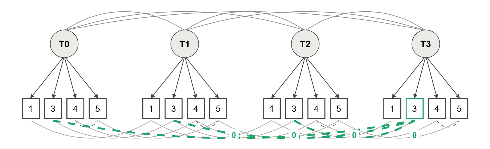
possible_table(emp_exp_fits)| model | estimation | variances | correlations | residuals | factors | standard errors |
|---|---|---|---|---|---|---|
| configural | ✓ | ✓ | ✓ | ✓ | ✓ | ✓ |
| loadings over time | ✓ | ✓ | ✓ | ✓ | ✓ | ✓ |
| intercepts over time | ✓ | ✓ | ✓ | ✓ | ✓ | ✓ |
All three are possible now; the steps go on with adjustment A.
Next → Step 4, the loadings over time in this group, with adjustment A.
Step 4 · Loadings over time experimental
Do the loadings stay the same? Each item keeps one loading over the four waves:
emp_exp_steps <- step_table(emp_exp_fits)
show_steps(emp_exp_steps, "loadings over time")| level | df | CFI | ΔCFI | ΔRMSEA | ΔSRMR | p |
|---|---|---|---|---|---|---|
| loadings over time | 83 | 0.973 | -0.008 | 0.005 | 0.014 | 0.241 |
They do under Chen’s cutoffs (ΔCFI = -.008), though not under those of the small-sample reading, and the χ² test does not reject them (p = .241).
Next → Step 5, with the loadings held equal over the waves.
Step 5 · Intercepts over time experimental
Do the intercepts stay the same? Each item keeps one intercept over the four waves; the latent means are freed:
emp_exp_steps <- step_table(emp_exp_fits)
show_steps(emp_exp_steps, "intercepts over time")| level | df | CFI | ΔCFI | ΔRMSEA | ΔSRMR | p |
|---|---|---|---|---|---|---|
| intercepts over time | 92 | 0.967 | -0.006 | 0.002 | 0.005 | 0.05 |
They do under Chen’s cutoffs (ΔCFI = -.006), though not under those of the small-sample reading, and the χ² test does not reject them (p = .050).
Next → Step 6, both groups together, each with what it needed.
Both groups · Steps 6 to 8
Both groups together, with what each group needed.
Step 6 · Do the groups add misfit? both groups
How well does the configural model fit in the two groups, and in random halves of the persons?
emp_zero <- emp_exp_zero # the control group needs none
emp_both_models <- group_steps |>
pmap(\(level, loadings, intercepts) invariance_syntax(
"Empowerment", loadings, intercepts, zero = emp_zero)) |>
set_names(group_steps$level)
emp_both_fits <- emp_both_models |>
map(\(model) df_wide |>
cfa(model = model, data = _, group = "condition",
estimator = "MLR", missing = "fiml"))
emp_halves <- c(`random halves 1` = 1, `random halves 2` = 2,
`random halves 3` = 3) |>
map(\(seed) {
set.seed(seed)
df_wide |>
mutate(condition = sample(condition)) |>
cfa(model = emp_both_models$configural, data = _, group = "condition",
estimator = "MLR", missing = "fiml")
})
emp_fit_table <- c(list(`two groups` = emp_both_fits$configural),
emp_halves) |>
map(fit_row) |>
list_rbind(names_to = "model")
emp_fit_table |>
mutate(across(where(is.double), \(x) round(x, 3)))| model | chisq | df | CFI | RMSEA | SRMR |
|---|---|---|---|---|---|
| two groups | 207.081 | 144 | 0.966 | 0.051 | 0.070 |
| random halves 1 | 253.937 | 144 | 0.946 | 0.065 | 0.089 |
| random halves 2 | 270.201 | 144 | 0.947 | 0.064 | 0.092 |
| random halves 3 | 249.679 | 144 | 0.950 | 0.062 | 0.081 |
Are all four models of both groups possible? Checks 1 to 6 of each:
possible_table(emp_both_fits)| model | estimation | variances | correlations | residuals | factors | standard errors |
|---|---|---|---|---|---|---|
| configural | ✓ | ✓ | ✓ | ✓ | ✓ | ✓ |
| over time | ✓ | ✓ | ✓ | ✓ | ✓ | ✓ |
| loadings across groups | ✓ | ✓ | ✓ | ✓ | ✓ | ✓ |
| intercepts across groups | ✓ | ✓ | ✓ | ✓ | ✓ | ✓ |
All four models of both groups are possible, and the configural model fits closely in the two groups (CFI = .966) as in the random halves.
Next → Step 7, the loadings across the groups.
Step 7 · Loadings across the groups both groups
Are the loadings the same in both groups?
emp_both_steps <- step_table(emp_both_fits[-1])
show_steps(emp_both_steps, "loadings across groups")| level | df | CFI | ΔCFI | ΔRMSEA | ΔSRMR | p |
|---|---|---|---|---|---|---|
| loadings across groups | 183 | 0.949 | -0.003 | 0.001 | 0.009 | 0.132 |
They are, under both sets of cutoffs (ΔCFI = -.003), and the χ² test does not reject them (p = .132).
Next → Step 8, the intercepts across the groups, with the loadings held equal.
Step 8 · Intercepts across the groups both groups
Are the intercepts the same in both groups? Each item keeps one intercept, in every cell:
show_steps(emp_both_steps, "intercepts across groups")| level | df | CFI | ΔCFI | ΔRMSEA | ΔSRMR | p |
|---|---|---|---|---|---|---|
| intercepts across groups | 186 | 0.949 | 0.001 | -0.001 | 0 | 0.813 |
They are, under both sets of cutoffs (ΔCFI = .001), and the χ² test does not reject them (p = .813).
Where do the latent means lie? In the final model, on the 0 to 10 scale of the items:
plot_latent_means(emp_both_fits$`intercepts across groups`)Next → Step 9, the verdict over all steps.
The verdict · Steps 9 to 12
Step 9 · The verdict
Which steps hold, under both sets of cutoffs? All steps of the construct, in all persons, in each group, and across the groups:
emp_verdict <- bind_rows(
`all persons` = fit_row(emp_all) |> mutate(level = "configural"),
control = emp_con_steps |> filter(level != "configural"),
experimental = emp_exp_steps |> filter(level != "configural"),
`both groups` = emp_both_steps |> filter(level != "over time"),
.id = "part") |>
mutate(Chen = if_else(level == "configural", fits_configural(CFI),
holds_chen(delta_CFI, delta_RMSEA)),
small_sample = if_else(level == "configural", Chen,
holds_small(level, delta_CFI, delta_RMSEA,
delta_SRMR)))
emp_verdict |>
transmute(part, level, ΔCFI = delta_CFI, ΔRMSEA = delta_RMSEA,
ΔSRMR = delta_SRMR, p, Chen = mark(Chen),
`small n` = mark(small_sample)) |>
mutate(across(where(is.double), \(x) round(x, 3)))| part | level | ΔCFI | ΔRMSEA | ΔSRMR | p | Chen | small n |
|---|---|---|---|---|---|---|---|
| all persons | configural | ✓ | ✓ | ||||
| control | loadings over time | -0.009 | 0.002 | 0.016 | 0.074 | ✓ | ✗ |
| control | intercepts over time | -0.004 | -0.001 | 0.003 | 0.066 | ✓ | ✓ |
| experimental | loadings over time | -0.008 | 0.005 | 0.014 | 0.241 | ✓ | ✗ |
| experimental | intercepts over time | -0.006 | 0.002 | 0.005 | 0.050 | ✓ | ✗ |
| both groups | loadings across groups | -0.003 | 0.001 | 0.009 | 0.132 | ✓ | ✓ |
| both groups | intercepts across groups | 0.001 | -0.001 | 0.000 | 0.813 | ✓ | ✓ |
Under Chen’s cutoffs every step holds: the measurement of Empowerment is the same at all four waves, in each group and across the groups. The small-sample reading would stop at three steps: the loadings over time in the control group, the loadings over time in the experimental group, and the intercepts over time in the experimental group.
Step 10 · Partial invariance
Is it needed? No: under Chen’s cutoffs every step holds.
Step 11 · Alignment
How far are the eight cells from invariance when nothing is held equal? The share of loadings and intercepts (in %) more than .10 item standard deviations from their common aligned value:
emp_input <- alignment_input(emp_both_fits$configural,
model_items$Empowerment)
emp_aligned <- invariance.alignment(lambda = emp_input$lambda,
nu = emp_input$nu, wgt = emp_input$weights)
emp_tolerance <- invariance_alignment_constraints(
emp_aligned, lambda_parm_tol = .10, nu_parm_tol = .10)
tibble(loadings = emp_tolerance$lambda_list$prop_noninvariance,
intercepts = emp_tolerance$nu_list$prop_noninvariance) |>
mutate(across(everything(), \(x) round(x, 1)))| loadings | intercepts |
|---|---|
| 43.8 | 15.6 |
Does it move the latent means? The latent mean of each cell as a distance from the control group in January, in its standard deviations, from the final model and aligned:
emp_final <- emp_both_fits$`intercepts across groups`
emp_sd_T0 <- sqrt(lavInspect(emp_final, "cov.lv")$Control["F_T0", "F_T0"])
emp_alignment_means <- parameterEstimates(emp_final) |>
filter(op == "~1", str_starts(lhs, "F_")) |>
transmute(cell = str_c(lavInspect(emp_final, "group.label")[group],
" ", str_remove(lhs, "^F_")),
final = (est - first(est)) / emp_sd_T0,
aligned = emp_aligned$pars$alpha0,
difference = aligned - final)
emp_alignment_means |>
mutate(across(where(is.double), \(x) round(x, 3)))| cell | final | aligned | difference |
|---|---|---|---|
| Control T0 | 0.000 | 0.000 | 0.000 |
| Control T1 | 0.015 | 0.039 | 0.024 |
| Control T2 | 0.009 | -0.011 | -0.020 |
| Control T3 | 0.222 | 0.195 | -0.026 |
| Experimental T0 | -0.115 | -0.170 | -0.055 |
| Experimental T1 | 0.072 | 0.063 | -0.009 |
| Experimental T2 | 0.062 | 0.051 | -0.012 |
| Experimental T3 | 0.112 | 0.029 | -0.083 |
43.8 % of the loadings and 15.6 % of the intercepts lie more than .10 item standard deviations from their common value (more than the 25 % up to which aligned means are trusted). The aligned means lie at most .083 standard deviations from those of the final model.
Step 12 · What follows
Which model goes on?
emp_status <- tibble(construct = "Empowerment",
status = "adjusted (A)",
set_to_0 = list(emp_zero),
freed = list(character()),
autocorrelations = list("free"),
chapter_11 = all(emp_verdict$Chen))
show_status(emp_status)| entry | value |
|---|---|
| construct | Empowerment |
| status | adjusted (A) |
| set_to_0 | Experimental: Empowerment3_T3 ~~ Empowerment3_T3; Experimental: Empowerment3_T0 ~~ Empowerment3_T3; Experimental: Empowerment3_T1 ~~ Empowerment3_T3; Experimental: Empowerment3_T2 ~~ Empowerment3_T3 |
| freed | |
| autocorrelations | free |
| chapter_11 | TRUE |
Empowerment enters the latent comparisons of Chapter 11 with adjustment A: its measurement is the same over the four waves and in both groups.
Agency
Its path through the steps. One row per step below, judged under Chen’s cutoffs; the label marks the data of each step:
| Step | Data | Question | Result | Next |
|---|---|---|---|---|
| 2 | all persons | Configural model possible and fitting? | yes | each group |
| 3 | control | Its three models possible? | yes, after adjustment B | over time |
| 4 | control | Loadings the same over the waves? | yes | intercepts |
| 5 | control | Intercepts the same over the waves? | yes | experimental group |
| 3 | experimental | Its three models possible? | yes | over time |
| 4 | experimental | Loadings the same over the waves? | no; item 1 freed: yes | intercepts |
| 5 | experimental | Intercepts the same over the waves? | yes | both groups |
| 6 | both groups | Misfit from the groups? | no, as in random halves | across the groups |
| 7 | both groups | Loadings the same in both groups? | yes | intercepts |
| 8 | both groups | Intercepts the same in both groups? | yes | verdict |
| 9–12 | Verdict | invariant, partial | Chapter 11 |
All persons · Steps 1 and 2
Step 1 · The model
What does the model look like? The three items of Chapter 6 (1, 2 and 3) at each wave, their loadings averaging 1. In the figure, the circles are the factors of the four waves, the boxes the items by number, the arrows the loadings. The arcs above link the factors; those below link each item with itself at the next wave. The links between waves further apart belong to the model as well and are left out of the figure:
plot_model("Agency")
How does lavaan read it? The configural model of one group, as invariance_syntax() writes it:
ag_configural_model <- invariance_syntax(
"Agency", loadings = "free", intercepts = "free",
two_groups = FALSE)
cat(ag_configural_model)F_T0 =~ NA*Agency1_T0 +
l1_T0*Agency1_T0 +
l2_T0*Agency2_T0 +
l3_T0*Agency3_T0
F_T1 =~ NA*Agency1_T1 +
l1_T1*Agency1_T1 +
l2_T1*Agency2_T1 +
l3_T1*Agency3_T1
F_T2 =~ NA*Agency1_T2 +
l1_T2*Agency1_T2 +
l2_T2*Agency2_T2 +
l3_T2*Agency3_T2
F_T3 =~ NA*Agency1_T3 +
l1_T3*Agency1_T3 +
l2_T3*Agency2_T3 +
l3_T3*Agency3_T3
l1_T0 + l2_T0 + l3_T0 == 3
l1_T1 + l2_T1 + l3_T1 == 3
l1_T2 + l2_T2 + l3_T2 == 3
l1_T3 + l2_T3 + l3_T3 == 3
F_T0 ~ 0*1
F_T1 ~ 0*1
F_T2 ~ 0*1
F_T3 ~ 0*1
F_T0 ~~ F_T1
F_T0 ~~ F_T2
F_T0 ~~ F_T3
F_T1 ~~ F_T2
F_T1 ~~ F_T3
F_T2 ~~ F_T3
Agency1_T0 ~~ Agency1_T1
Agency1_T0 ~~ Agency1_T2
Agency1_T0 ~~ Agency1_T3
Agency1_T1 ~~ Agency1_T2
Agency1_T1 ~~ Agency1_T3
Agency1_T2 ~~ Agency1_T3
Agency2_T0 ~~ Agency2_T1
Agency2_T0 ~~ Agency2_T2
Agency2_T0 ~~ Agency2_T3
Agency2_T1 ~~ Agency2_T2
Agency2_T1 ~~ Agency2_T3
Agency2_T2 ~~ Agency2_T3
Agency3_T0 ~~ Agency3_T1
Agency3_T0 ~~ Agency3_T2
Agency3_T0 ~~ Agency3_T3
Agency3_T1 ~~ Agency3_T2
Agency3_T1 ~~ Agency3_T3
Agency3_T2 ~~ Agency3_T3Next → Step 2, the configural model in all persons.
Step 2 · The configural model all persons
What is fitted? The model of Step 1, with loadings and intercepts free at every wave, in all persons together:
ag_all <- df_wide |>
cfa(model = ag_configural_model, data = _, estimator = "MLR",
missing = "fiml")Does it pass the checks? The eleven checks of 7.1, in their order:
ag_all_checks <- model_checks(ag_all, judge_fit = TRUE)
ag_all_checks| check | what | value | criterion | holds |
|---|---|---|---|---|
| 1 estimation | converged | yes | yes | ✓ |
| 2 variances | smallest residual variance: item 2 at T1 | 1.088 | above 0 | ✓ |
| 3 correlations | largest correlation: the factors at T0 and T3 | .789 | within ±1 | ✓ |
| 4 residuals | smallest eigenvalue of the residual covariances | .431 | above 0 | ✓ |
| 5 factors | smallest eigenvalue of the factor covariances | .181 | above 0 | ✓ |
| 6 standard errors | estimated for every free parameter | yes | yes | ✓ |
| 7 fit | CFI | .985 | at least .90 | ✓ |
| 8 fit | RMSEA [90 % interval] | .031 [.000, .051] | reported | – |
| 9 fit | SRMR | .040 | reported | – |
| 10 strain | largest modification index: item 2 with item 3 at T0 | 7.5 | reported | – |
| 11 estimates | smallest standardized loading: item 3 at T3 | .43 | reported | – |
Every check that decides holds: the estimation converged, the solution is proper (checks 1 to 6), and the model fits (CFI = .985, at least .90). Checks 8 to 11 are reported; Step 6 returns to the fit, and Steps 4, 5, 7 and 8 to the loadings.
Are the estimates sensible? The standardized loading of every item at every wave, and the correlations of the factors:
loading_table(ag_all)| item | T0 | T1 | T2 | T3 |
|---|---|---|---|---|
| item 1 | 0.55 | 0.53 | 0.46 | 0.54 |
| item 2 | 0.86 | 0.89 | 0.70 | 0.56 |
| item 3 | 0.53 | 0.57 | 0.61 | 0.43 |
factor_correlations(ag_all)| T0–T1 | T0–T2 | T0–T3 | T1–T2 | T1–T3 | T2–T3 |
|---|---|---|---|---|---|
| 0.68 | 0.63 | 0.79 | 0.48 | 0.54 | 0.7 |
Every item loads between .43 and .89, and the factors of neighbouring waves correlate between .48 and .70. Why are loadings and intercepts not tested here? The groups were trained at different waves, so a model of all persons would average a trained and an untrained group at the same wave (7.1). All persons show only whether one factor per wave describes the items; the tests over time follow in each group, and then across the groups.
Next → Steps 3 to 5, each group on its own: first the control group, then the experimental group.
Control group · Steps 3 to 5
The 252 persons of the control group, trained between September and December.
Step 3 · The checks control
What is fitted? The three models of this group: configural, with equal loadings over the waves (Step 4), and with equal intercepts as well (Step 5):
ag_con_models <- time_steps |>
pmap(\(level, loadings, intercepts) invariance_syntax(
"Agency", loadings, intercepts, two_groups = FALSE)) |>
set_names(time_steps$level)
ag_con_fits <- ag_con_models |>
map(\(model) control |>
cfa(model = model, data = _, estimator = "MLR", missing = "fiml"))Does the configural model pass the checks? The eleven checks of 7.1:
ag_con_checks <- model_checks(ag_con_fits$configural)
ag_con_checks| check | what | value | criterion | holds |
|---|---|---|---|---|
| 1 estimation | converged | yes | yes | ✓ |
| 2 variances | smallest residual variance: item 2 at T1 | .542 | above 0 | ✓ |
| 3 correlations | largest correlation: item 2, T1 with T3 | .964 | within ±1 | ✓ |
| 4 residuals | smallest eigenvalue of the residual covariances | -.313 | above 0 | ✗ |
| 5 factors | smallest eigenvalue of the factor covariances | .271 | above 0 | ✓ |
| 6 standard errors | estimated for every free parameter | yes | yes | ✓ |
| 7 fit | CFI | .969 | reported | – |
| 8 fit | RMSEA [90 % interval] | .049 [.020, .074] | reported | – |
| 9 fit | SRMR | .060 | reported | – |
| 10 strain | largest modification index: item 3 with item 1 at T0 | 6.4 | reported | – |
| 11 estimates | smallest standardized loading: item 1 at T2 | .47 | reported | – |
Check 4 (smallest eigenvalue of the residual covariances, -.313) fails: the solution is not possible. Its fit is reported (checks 7 to 9); whether one factor per wave describes the items was judged once, in all persons (Step 2). Are the other two models possible as well? Checks 1 to 6 of all three:
possible_table(ag_con_fits)| model | estimation | variances | correlations | residuals | factors | standard errors |
|---|---|---|---|---|---|---|
| configural | ✓ | ✓ | ✓ | ✗ | ✓ | ✓ |
| loadings over time | ✓ | ✓ | ✓ | ✗ | ✓ | ✓ |
| intercepts over time | ✓ | ✓ | ✓ | ✓ | ✓ | ✓ |
Not all are possible. Where is the problem? Checks 2 and 3 hold in every model: no single estimate lies beyond its bound. Check 4 fails: the residual covariances as a whole are not positive definite, their smallest eigenvalue lies below 0:
plot_eigenvalues(ag_con_fits)ag_con_fits |>
map(smallest_eigenvalues) |>
list_rbind(names_to = "level") |>
mutate(across(where(is.double), \(x) round(x, 3)))| level | residual | latent |
|---|---|---|
| configural | -0.313 | 0.271 |
| loadings over time | -0.146 | 0.254 |
| intercepts over time | 0.131 | 0.261 |
No single estimate is at fault, so adjustment A has nothing to set at 0. What does the stop rule do? Adjustment B: one autocorrelation per item, the same for every pair of waves. In the syntax of each model, every autocorrelation of an item gets the same label (a1 for item 1, and so on), which holds them equal (shown for the configural model):
ag_con_specified <- ag_con_models$configural
ag_con_models <- time_steps |>
pmap(\(level, loadings, intercepts) invariance_syntax(
"Agency", loadings, intercepts, two_groups = FALSE,
autocorrelations = "equal")) |>
set_names(time_steps$level)
ag_con_fits <- ag_con_models |>
map(\(model) control |>
cfa(model = model, data = _, estimator = "MLR", missing = "fiml"))
syntax_changes(ag_con_specified, ag_con_models$configural)- Agency1_T0 ~~ Agency1_T1
- Agency1_T0 ~~ Agency1_T2
- Agency1_T0 ~~ Agency1_T3
- Agency1_T1 ~~ Agency1_T2
- Agency1_T1 ~~ Agency1_T3
- Agency1_T2 ~~ Agency1_T3
- Agency2_T0 ~~ Agency2_T1
- Agency2_T0 ~~ Agency2_T2
- ... and 10 more lines like these
+ Agency1_T0 ~~ a1*Agency1_T1
+ Agency1_T0 ~~ a1*Agency1_T2
+ Agency1_T0 ~~ a1*Agency1_T3
+ Agency1_T1 ~~ a1*Agency1_T2
+ Agency1_T1 ~~ a1*Agency1_T3
+ Agency1_T2 ~~ a1*Agency1_T3
+ Agency2_T0 ~~ a2*Agency2_T1
+ Agency2_T0 ~~ a2*Agency2_T2
+ ... and 10 more lines like theseAre the adjusted models possible? The smallest eigenvalue of each, and checks 1 to 6 of all three:
plot_eigenvalues(ag_con_fits)possible_table(ag_con_fits)| model | estimation | variances | correlations | residuals | factors | standard errors |
|---|---|---|---|---|---|---|
| configural | ✓ | ✓ | ✓ | ✓ | ✓ | ✓ |
| loadings over time | ✓ | ✓ | ✓ | ✓ | ✓ | ✓ |
| intercepts over time | ✓ | ✓ | ✓ | ✓ | ✓ | ✓ |
All three are possible now; the steps go on with adjustment B.
Next → Step 4, the loadings over time in this group, with adjustment B.
Step 4 · Loadings over time control
Do the loadings stay the same? Each item keeps one loading over the four waves:
ag_con_steps <- step_table(ag_con_fits)
show_steps(ag_con_steps, "loadings over time")| level | df | CFI | ΔCFI | ΔRMSEA | ΔSRMR | p |
|---|---|---|---|---|---|---|
| loadings over time | 51 | 0.893 | -0.004 | -0.003 | 0.001 | 0.596 |
They do, under both sets of cutoffs (ΔCFI = -.004), and the χ² test does not reject them (p = .596).
Next → Step 5, with the loadings held equal over the waves.
Step 5 · Intercepts over time control
Do the intercepts stay the same? Each item keeps one intercept over the four waves; the latent means are freed:
ag_con_steps <- step_table(ag_con_fits)
show_steps(ag_con_steps, "intercepts over time")| level | df | CFI | ΔCFI | ΔRMSEA | ΔSRMR | p |
|---|---|---|---|---|---|---|
| intercepts over time | 57 | 0.892 | -0.001 | -0.003 | 0.002 | 0.361 |
They do, under both sets of cutoffs (ΔCFI = -.001), and the χ² test does not reject them (p = .361).
Next → Steps 3 to 5 in the experimental group.
Experimental group · Steps 3 to 5
The 199 persons of the experimental group, trained between January and March.
Step 3 · The checks experimental
What is fitted? The three models of this group: configural, with equal loadings over the waves (Step 4), and with equal intercepts as well (Step 5):
ag_exp_models <- time_steps |>
pmap(\(level, loadings, intercepts) invariance_syntax(
"Agency", loadings, intercepts, two_groups = FALSE)) |>
set_names(time_steps$level)
ag_exp_fits <- ag_exp_models |>
map(\(model) experimental |>
cfa(model = model, data = _, estimator = "MLR", missing = "fiml"))Does the configural model pass the checks? The eleven checks of 7.1:
ag_exp_checks <- model_checks(ag_exp_fits$configural)
ag_exp_checks| check | what | value | criterion | holds |
|---|---|---|---|---|
| 1 estimation | converged | yes | yes | ✓ |
| 2 variances | smallest residual variance: item 1 at T3 | 1.194 | above 0 | ✓ |
| 3 correlations | largest correlation: the factors at T2 and T3 | .882 | within ±1 | ✓ |
| 4 residuals | smallest eigenvalue of the residual covariances | .588 | above 0 | ✓ |
| 5 factors | smallest eigenvalue of the factor covariances | .071 | above 0 | ✓ |
| 6 standard errors | estimated for every free parameter | yes | yes | ✓ |
| 7 fit | CFI | .957 | reported | – |
| 8 fit | RMSEA [90 % interval] | .052 [.016, .080] | reported | – |
| 9 fit | SRMR | .098 | reported | – |
| 10 strain | largest modification index: item 3 at T2 on the factor at T1 | 6.3 | reported | – |
| 11 estimates | smallest standardized loading: item 1 at T2 | .17 | reported | – |
Checks 1 to 6 hold: the solution is proper. Its fit is reported (checks 7 to 9); whether one factor per wave describes the items was judged once, in all persons (Step 2). Are the other two models possible as well? Checks 1 to 6 of all three:
possible_table(ag_exp_fits)| model | estimation | variances | correlations | residuals | factors | standard errors |
|---|---|---|---|---|---|---|
| configural | ✓ | ✓ | ✓ | ✓ | ✓ | ✓ |
| loadings over time | ✓ | ✓ | ✓ | ✓ | ✓ | ✓ |
| intercepts over time | ✓ | ✓ | ✓ | ✓ | ✓ | ✓ |
All three are possible as specified.
Next → Step 4, the loadings over time in this group.
Step 4 · Loadings over time experimental
Do the loadings stay the same? Each item keeps one loading over the four waves:
ag_exp_steps <- step_table(ag_exp_fits)
show_steps(ag_exp_steps, "loadings over time")| level | df | CFI | ΔCFI | ΔRMSEA | ΔSRMR | p |
|---|---|---|---|---|---|---|
| loadings over time | 36 | 0.946 | -0.011 | 0.001 | -0.004 | 0.247 |
They do not: the step lies beyond Chen’s cutoffs (ΔCFI = -.011, ΔRMSEA = .001). Whose loadings move? The score test of each equality that holds them over the waves, summed per item:
ag_exp_scores_loadings <- ag_exp_fits$`loadings over time` |>
score_items("loadings")
ag_exp_scores_loadings |>
mutate(X2 = round(X2, 1))| item | X2 |
|---|---|
| Agency1 | 4.1 |
| Agency3 | 2.4 |
| Agency2 | 0.9 |
Item 1 strains most (4.1). Its loadings are freed at every wave of this group, and the models are fitted again:
ag_exp_free <- "Experimental: Agency1 loadings"
ag_exp_models <- time_steps |>
pmap(\(level, loadings, intercepts) invariance_syntax(
"Agency", loadings, intercepts, two_groups = FALSE,
free = ag_exp_free)) |>
set_names(time_steps$level)
ag_exp_fits <- ag_exp_models |>
map(\(model) experimental |>
cfa(model = model, data = _, estimator = "MLR", missing = "fiml"))
ag_exp_steps <- step_table(ag_exp_fits)
show_steps(ag_exp_steps, "loadings over time")| level | df | CFI | ΔCFI | ΔRMSEA | ΔSRMR | p |
|---|---|---|---|---|---|---|
| loadings over time | 33 | 0.95 | -0.007 | 0.002 | -0.006 | 0.1 |
With the loadings of item 1 free, the step holds (ΔCFI = -.007; χ² test: p = .100).
Next → Step 5, with the loadings of item 1 free in this group and the others held equal.
Step 5 · Intercepts over time experimental
Do the intercepts stay the same? Each item keeps one intercept over the four waves; the latent means are freed:
ag_exp_steps <- step_table(ag_exp_fits)
show_steps(ag_exp_steps, "intercepts over time")| level | df | CFI | ΔCFI | ΔRMSEA | ΔSRMR | p |
|---|---|---|---|---|---|---|
| intercepts over time | 39 | 0.951 | 0.002 | -0.005 | 0.002 | 0.672 |
With the loadings freed in Step 4, the step holds under Chen’s cutoffs (ΔCFI = .002; χ² test: p = .672).
Next → Step 6, both groups together, each with what it needed.
Both groups · Steps 6 to 8
Both groups together, with what each group needed.
Step 6 · Do the groups add misfit? both groups
How well does the configural model fit in the two groups, and in random halves of the persons?
ag_free <- ag_exp_free # nothing freed in the control group
ag_autocorrelations <- c(Control = "equal",
Experimental = "free")
ag_both_models <- group_steps |>
pmap(\(level, loadings, intercepts) invariance_syntax(
"Agency", loadings, intercepts,
free = ag_free, autocorrelations = ag_autocorrelations)) |>
set_names(group_steps$level)
ag_both_fits <- ag_both_models |>
map(\(model) df_wide |>
cfa(model = model, data = _, group = "condition",
estimator = "MLR", missing = "fiml"))
ag_halves <- c(`random halves 1` = 1, `random halves 2` = 2,
`random halves 3` = 3) |>
map(\(seed) {
set.seed(seed)
df_wide |>
mutate(condition = sample(condition)) |>
cfa(model = ag_both_models$configural, data = _, group = "condition",
estimator = "MLR", missing = "fiml")
})
ag_fit_table <- c(list(`two groups` = ag_both_fits$configural),
ag_halves) |>
map(fit_row) |>
list_rbind(names_to = "model")
ag_fit_table |>
mutate(across(where(is.double), \(x) round(x, 3)))| model | chisq | df | CFI | RMSEA | SRMR |
|---|---|---|---|---|---|
| two groups | 124.049 | 75 | 0.920 | 0.067 | 0.092 |
| random halves 1 | 115.529 | 75 | 0.940 | 0.059 | 0.085 |
| random halves 2 | 154.380 | 75 | 0.929 | 0.065 | 0.095 |
| random halves 3 | 109.959 | 75 | 0.942 | 0.057 | 0.071 |
Are all four models of both groups possible? Checks 1 to 6 of each:
possible_table(ag_both_fits)| model | estimation | variances | correlations | residuals | factors | standard errors |
|---|---|---|---|---|---|---|
| configural | ✓ | ✓ | ✓ | ✓ | ✓ | ✓ |
| over time | ✓ | ✓ | ✓ | ✓ | ✓ | ✓ |
| loadings across groups | ✓ | ✓ | ✓ | ✓ | ✓ | ✓ |
| intercepts across groups | ✓ | ✓ | ✓ | ✓ | ✓ | ✓ |
All four models of both groups are possible. In the two groups the CFI is .920, against .985 in all persons, and random halves of the persons fit no better (.929 to .942): what the groups lose comes from halving the sample, not from the groups.
Next → Step 7, the loadings across the groups.
Step 7 · Loadings across the groups both groups
Are the loadings the same in both groups? A loading freed over the waves stays free in its group.
ag_both_steps <- step_table(ag_both_fits[-1])
show_steps(ag_both_steps, "loadings across groups")| level | df | CFI | ΔCFI | ΔRMSEA | ΔSRMR | p |
|---|---|---|---|---|---|---|
| loadings across groups | 97 | 0.916 | 0.001 | -0.001 | 0.001 | 0.694 |
They are, under Chen’s cutoffs (ΔCFI = .001; χ² test: p = .694).
Next → Step 8, the intercepts across the groups, with the loadings held equal.
Step 8 · Intercepts across the groups both groups
Are the intercepts the same in both groups? Each item keeps one intercept, in every cell but the freed ones:
show_steps(ag_both_steps, "intercepts across groups")| level | df | CFI | ΔCFI | ΔRMSEA | ΔSRMR | p |
|---|---|---|---|---|---|---|
| intercepts across groups | 99 | 0.916 | 0 | -0.001 | -0.001 | 0.595 |
They are, under Chen’s cutoffs (ΔCFI = .000; χ² test: p = .595).
Where do the latent means lie? In the final model, on the 0 to 10 scale of the items:
plot_latent_means(ag_both_fits$`intercepts across groups`)Next → Step 9, the verdict over all steps.
The verdict · Steps 9 to 12
Step 9 · The verdict
Which steps hold, under both sets of cutoffs? All steps of the construct, in all persons, in each group, and across the groups:
ag_verdict <- bind_rows(
`all persons` = fit_row(ag_all) |> mutate(level = "configural"),
control = ag_con_steps |> filter(level != "configural"),
experimental = ag_exp_steps |> filter(level != "configural"),
`both groups` = ag_both_steps |> filter(level != "over time"),
.id = "part") |>
mutate(Chen = if_else(level == "configural", fits_configural(CFI),
holds_chen(delta_CFI, delta_RMSEA)),
small_sample = if_else(level == "configural", Chen,
holds_small(level, delta_CFI, delta_RMSEA,
delta_SRMR)))
ag_verdict |>
transmute(part, level, ΔCFI = delta_CFI, ΔRMSEA = delta_RMSEA,
ΔSRMR = delta_SRMR, p, Chen = mark(Chen),
`small n` = mark(small_sample)) |>
mutate(across(where(is.double), \(x) round(x, 3)))| part | level | ΔCFI | ΔRMSEA | ΔSRMR | p | Chen | small n |
|---|---|---|---|---|---|---|---|
| all persons | configural | ✓ | ✓ | ||||
| control | loadings over time | -0.004 | -0.003 | 0.001 | 0.596 | ✓ | ✓ |
| control | intercepts over time | -0.001 | -0.003 | 0.002 | 0.361 | ✓ | ✓ |
| experimental | loadings over time | -0.007 | 0.002 | -0.006 | 0.100 | ✓ | ✗ |
| experimental | intercepts over time | 0.002 | -0.005 | 0.002 | 0.672 | ✓ | ✓ |
| both groups | loadings across groups | 0.001 | -0.001 | 0.001 | 0.694 | ✓ | ✓ |
| both groups | intercepts across groups | 0.000 | -0.001 | -0.001 | 0.595 | ✓ | ✓ |
Under Chen’s cutoffs every step holds, with the loadings of item 1 free in the experimental group: the measurement of Agency is the same at all four waves, in each group and across the groups. The small-sample reading would stop at one step: the loadings over time in the experimental group.
Step 10 · Partial invariance
What is freed? The loadings of item 1 in the experimental group, as the score test of Steps 4 and 5 found. Two of the three items keep equal loadings and intercepts in every cell and scale the factor.
Step 11 · Alignment
How far are the eight cells from invariance when nothing is held equal? The share of loadings and intercepts (in %) more than .10 item standard deviations from their common aligned value:
ag_input <- alignment_input(ag_both_fits$configural,
model_items$Agency)
ag_aligned <- invariance.alignment(lambda = ag_input$lambda,
nu = ag_input$nu, wgt = ag_input$weights)
ag_tolerance <- invariance_alignment_constraints(
ag_aligned, lambda_parm_tol = .10, nu_parm_tol = .10)
tibble(loadings = ag_tolerance$lambda_list$prop_noninvariance,
intercepts = ag_tolerance$nu_list$prop_noninvariance) |>
mutate(across(everything(), \(x) round(x, 1)))| loadings | intercepts |
|---|---|
| 29.2 | 4.2 |
Does it move the latent means? The latent mean of each cell as a distance from the control group in January, in its standard deviations, from the final model and aligned:
ag_final <- ag_both_fits$`intercepts across groups`
ag_sd_T0 <- sqrt(lavInspect(ag_final, "cov.lv")$Control["F_T0", "F_T0"])
ag_alignment_means <- parameterEstimates(ag_final) |>
filter(op == "~1", str_starts(lhs, "F_")) |>
transmute(cell = str_c(lavInspect(ag_final, "group.label")[group],
" ", str_remove(lhs, "^F_")),
final = (est - first(est)) / ag_sd_T0,
aligned = ag_aligned$pars$alpha0,
difference = aligned - final)
ag_alignment_means |>
mutate(across(where(is.double), \(x) round(x, 3)))| cell | final | aligned | difference |
|---|---|---|---|
| Control T0 | 0.000 | 0.000 | 0.000 |
| Control T1 | 0.004 | -0.064 | -0.068 |
| Control T2 | 0.083 | 0.098 | 0.015 |
| Control T3 | 0.354 | 0.357 | 0.003 |
| Experimental T0 | -0.166 | -0.187 | -0.020 |
| Experimental T1 | -0.140 | -0.131 | 0.008 |
| Experimental T2 | 0.040 | 0.048 | 0.008 |
| Experimental T3 | 0.200 | 0.218 | 0.018 |
29.2 % of the loadings and 4.2 % of the intercepts lie more than .10 item standard deviations from their common value (more than the 25 % up to which aligned means are trusted). The aligned means lie at most .068 standard deviations from those of the final model.
Step 12 · What follows
Which model goes on?
ag_status <- tibble(construct = "Agency",
status = "adjusted (B), partial",
set_to_0 = list(character()),
freed = list(ag_free),
autocorrelations = list(ag_autocorrelations),
chapter_11 = all(ag_verdict$Chen))
show_status(ag_status)| entry | value |
|---|---|
| construct | Agency |
| status | adjusted (B), partial |
| set_to_0 | |
| freed | Experimental: Agency1 loadings |
| autocorrelations | equal; free |
| chapter_11 | TRUE |
Agency enters the latent comparisons of Chapter 11 with adjustment B and the parameters freed in Step 10: apart from them, its measurement is the same over the four waves and in both groups.
Intellectual Capital
Its path through the steps. One row per step below, judged under Chen’s cutoffs; the label marks the data of each step:
| Step | Data | Question | Result | Next |
|---|---|---|---|---|
| 2 | all persons | Configural model possible and fitting? | yes | each group |
| 3 | control | Its three models possible? | yes | over time |
| 4 | control | Loadings the same over the waves? | yes | intercepts |
| 5 | control | Intercepts the same over the waves? | yes | experimental group |
| 3 | experimental | Its three models possible? | yes, after adjustment B | over time |
| 4 | experimental | Loadings the same over the waves? | yes | intercepts |
| 5 | experimental | Intercepts the same over the waves? | yes | both groups |
| 6 | both groups | Misfit from the groups? | no, as in random halves | across the groups |
| 7 | both groups | Loadings the same in both groups? | yes | intercepts |
| 8 | both groups | Intercepts the same in both groups? | yes | verdict |
| 9–12 | Verdict | invariant | Chapter 11 |
All persons · Steps 1 and 2
Step 1 · The model
What does the model look like? The three items of Chapter 6 (1, 2 and 3) at each wave, their loadings averaging 1. In the figure, the circles are the factors of the four waves, the boxes the items by number, the arrows the loadings. The arcs above link the factors; those below link each item with itself at the next wave. The links between waves further apart belong to the model as well and are left out of the figure:
plot_model("IntellectualCapital")
How does lavaan read it? The configural model of one group, as invariance_syntax() writes it:
ic_configural_model <- invariance_syntax(
"IntellectualCapital", loadings = "free", intercepts = "free",
two_groups = FALSE)
cat(ic_configural_model)F_T0 =~ NA*IntellectualCapital1_T0 +
l1_T0*IntellectualCapital1_T0 +
l2_T0*IntellectualCapital2_T0 +
l3_T0*IntellectualCapital3_T0
F_T1 =~ NA*IntellectualCapital1_T1 +
l1_T1*IntellectualCapital1_T1 +
l2_T1*IntellectualCapital2_T1 +
l3_T1*IntellectualCapital3_T1
F_T2 =~ NA*IntellectualCapital1_T2 +
l1_T2*IntellectualCapital1_T2 +
l2_T2*IntellectualCapital2_T2 +
l3_T2*IntellectualCapital3_T2
F_T3 =~ NA*IntellectualCapital1_T3 +
l1_T3*IntellectualCapital1_T3 +
l2_T3*IntellectualCapital2_T3 +
l3_T3*IntellectualCapital3_T3
l1_T0 + l2_T0 + l3_T0 == 3
l1_T1 + l2_T1 + l3_T1 == 3
l1_T2 + l2_T2 + l3_T2 == 3
l1_T3 + l2_T3 + l3_T3 == 3
F_T0 ~ 0*1
F_T1 ~ 0*1
F_T2 ~ 0*1
F_T3 ~ 0*1
F_T0 ~~ F_T1
F_T0 ~~ F_T2
F_T0 ~~ F_T3
F_T1 ~~ F_T2
F_T1 ~~ F_T3
F_T2 ~~ F_T3
IntellectualCapital1_T0 ~~ IntellectualCapital1_T1
IntellectualCapital1_T0 ~~ IntellectualCapital1_T2
IntellectualCapital1_T0 ~~ IntellectualCapital1_T3
IntellectualCapital1_T1 ~~ IntellectualCapital1_T2
IntellectualCapital1_T1 ~~ IntellectualCapital1_T3
IntellectualCapital1_T2 ~~ IntellectualCapital1_T3
IntellectualCapital2_T0 ~~ IntellectualCapital2_T1
IntellectualCapital2_T0 ~~ IntellectualCapital2_T2
IntellectualCapital2_T0 ~~ IntellectualCapital2_T3
IntellectualCapital2_T1 ~~ IntellectualCapital2_T2
IntellectualCapital2_T1 ~~ IntellectualCapital2_T3
IntellectualCapital2_T2 ~~ IntellectualCapital2_T3
IntellectualCapital3_T0 ~~ IntellectualCapital3_T1
IntellectualCapital3_T0 ~~ IntellectualCapital3_T2
IntellectualCapital3_T0 ~~ IntellectualCapital3_T3
IntellectualCapital3_T1 ~~ IntellectualCapital3_T2
IntellectualCapital3_T1 ~~ IntellectualCapital3_T3
IntellectualCapital3_T2 ~~ IntellectualCapital3_T3Next → Step 2, the configural model in all persons.
Step 2 · The configural model all persons
What is fitted? The model of Step 1, with loadings and intercepts free at every wave, in all persons together:
ic_all <- df_wide |>
cfa(model = ic_configural_model, data = _, estimator = "MLR",
missing = "fiml")Does it pass the checks? The eleven checks of 7.1, in their order:
ic_all_checks <- model_checks(ic_all, judge_fit = TRUE)
ic_all_checks| check | what | value | criterion | holds |
|---|---|---|---|---|
| 1 estimation | converged | yes | yes | ✓ |
| 2 variances | smallest residual variance: item 1 at T3 | .978 | above 0 | ✓ |
| 3 correlations | largest correlation: the factors at T1 and T2 | .852 | within ±1 | ✓ |
| 4 residuals | smallest eigenvalue of the residual covariances | .466 | above 0 | ✓ |
| 5 factors | smallest eigenvalue of the factor covariances | .312 | above 0 | ✓ |
| 6 standard errors | estimated for every free parameter | yes | yes | ✓ |
| 7 fit | CFI | .985 | at least .90 | ✓ |
| 8 fit | RMSEA [90 % interval] | .042 [.023, .060] | reported | – |
| 9 fit | SRMR | .039 | reported | – |
| 10 strain | largest modification index: item 2 with item 3 at T0 | 9.0 | reported | – |
| 11 estimates | smallest standardized loading: item 3 at T1 | .49 | reported | – |
Every check that decides holds: the estimation converged, the solution is proper (checks 1 to 6), and the model fits (CFI = .985, at least .90). Checks 8 to 11 are reported; Step 6 returns to the fit, and Steps 4, 5, 7 and 8 to the loadings.
Are the estimates sensible? The standardized loading of every item at every wave, and the correlations of the factors:
loading_table(ic_all)| item | T0 | T1 | T2 | T3 |
|---|---|---|---|---|
| item 1 | 0.78 | 0.79 | 0.82 | 0.79 |
| item 2 | 0.78 | 0.79 | 0.77 | 0.75 |
| item 3 | 0.61 | 0.49 | 0.53 | 0.57 |
factor_correlations(ic_all)| T0–T1 | T0–T2 | T0–T3 | T1–T2 | T1–T3 | T2–T3 |
|---|---|---|---|---|---|
| 0.75 | 0.69 | 0.64 | 0.85 | 0.73 | 0.74 |
Every item loads between .49 and .82, and the factors of neighbouring waves correlate between .74 and .85. Why are loadings and intercepts not tested here? The groups were trained at different waves, so a model of all persons would average a trained and an untrained group at the same wave (7.1). All persons show only whether one factor per wave describes the items; the tests over time follow in each group, and then across the groups.
Next → Steps 3 to 5, each group on its own: first the control group, then the experimental group.
Control group · Steps 3 to 5
The 252 persons of the control group, trained between September and December.
Step 3 · The checks control
What is fitted? The three models of this group: configural, with equal loadings over the waves (Step 4), and with equal intercepts as well (Step 5):
ic_con_models <- time_steps |>
pmap(\(level, loadings, intercepts) invariance_syntax(
"IntellectualCapital", loadings, intercepts, two_groups = FALSE)) |>
set_names(time_steps$level)
ic_con_fits <- ic_con_models |>
map(\(model) control |>
cfa(model = model, data = _, estimator = "MLR", missing = "fiml"))Does the configural model pass the checks? The eleven checks of 7.1:
ic_con_checks <- model_checks(ic_con_fits$configural)
ic_con_checks| check | what | value | criterion | holds |
|---|---|---|---|---|
| 1 estimation | converged | yes | yes | ✓ |
| 2 variances | smallest residual variance: item 1 at T3 | .642 | above 0 | ✓ |
| 3 correlations | largest correlation: the factors at T1 and T2 | .807 | within ±1 | ✓ |
| 4 residuals | smallest eigenvalue of the residual covariances | .274 | above 0 | ✓ |
| 5 factors | smallest eigenvalue of the factor covariances | .379 | above 0 | ✓ |
| 6 standard errors | estimated for every free parameter | yes | yes | ✓ |
| 7 fit | CFI | .987 | reported | – |
| 8 fit | RMSEA [90 % interval] | .041 [.000, .067] | reported | – |
| 9 fit | SRMR | .040 | reported | – |
| 10 strain | largest modification index: item 2 at T0 on the factor at T1 | 9.6 | reported | – |
| 11 estimates | smallest standardized loading: item 3 at T1 | .50 | reported | – |
Checks 1 to 6 hold: the solution is proper. Its fit is reported (checks 7 to 9); whether one factor per wave describes the items was judged once, in all persons (Step 2). Are the other two models possible as well? Checks 1 to 6 of all three:
possible_table(ic_con_fits)| model | estimation | variances | correlations | residuals | factors | standard errors |
|---|---|---|---|---|---|---|
| configural | ✓ | ✓ | ✓ | ✓ | ✓ | ✓ |
| loadings over time | ✓ | ✓ | ✓ | ✓ | ✓ | ✓ |
| intercepts over time | ✓ | ✓ | ✓ | ✓ | ✓ | ✓ |
All three are possible as specified.
Next → Step 4, the loadings over time in this group.
Step 4 · Loadings over time control
Do the loadings stay the same? Each item keeps one loading over the four waves:
ic_con_steps <- step_table(ic_con_fits)
show_steps(ic_con_steps, "loadings over time")| level | df | CFI | ΔCFI | ΔRMSEA | ΔSRMR | p |
|---|---|---|---|---|---|---|
| loadings over time | 36 | 0.985 | -0.001 | -0.002 | 0.01 | 0.536 |
They do, under both sets of cutoffs (ΔCFI = -.001), and the χ² test does not reject them (p = .536).
Next → Step 5, with the loadings held equal over the waves.
Step 5 · Intercepts over time control
Do the intercepts stay the same? Each item keeps one intercept over the four waves; the latent means are freed:
ic_con_steps <- step_table(ic_con_fits)
show_steps(ic_con_steps, "intercepts over time")| level | df | CFI | ΔCFI | ΔRMSEA | ΔSRMR | p |
|---|---|---|---|---|---|---|
| intercepts over time | 42 | 0.981 | -0.005 | 0.002 | 0.003 | 0.112 |
They do, under both sets of cutoffs (ΔCFI = -.005), and the χ² test does not reject them (p = .112).
Next → Steps 3 to 5 in the experimental group.
Experimental group · Steps 3 to 5
The 199 persons of the experimental group, trained between January and March.
Step 3 · The checks experimental
What is fitted? The three models of this group: configural, with equal loadings over the waves (Step 4), and with equal intercepts as well (Step 5):
ic_exp_models <- time_steps |>
pmap(\(level, loadings, intercepts) invariance_syntax(
"IntellectualCapital", loadings, intercepts, two_groups = FALSE)) |>
set_names(time_steps$level)
ic_exp_fits <- ic_exp_models |>
map(\(model) experimental |>
cfa(model = model, data = _, estimator = "MLR", missing = "fiml"))Does the configural model pass the checks? The eleven checks of 7.1:
ic_exp_checks <- model_checks(ic_exp_fits$configural)
ic_exp_checks| check | what | value | criterion | holds |
|---|---|---|---|---|
| 1 estimation | converged | yes | yes | ✓ |
| 2 variances | smallest residual variance: item 2 at T2 | .185 | above 0 | ✓ |
| 3 correlations | largest correlation: item 2, T1 with T2 | -.929 | within ±1 | ✓ |
| 4 residuals | smallest eigenvalue of the residual covariances | -.049 | above 0 | ✗ |
| 5 factors | smallest eigenvalue of the factor covariances | .203 | above 0 | ✓ |
| 6 standard errors | estimated for every free parameter | yes | yes | ✓ |
| 7 fit | CFI | .978 | reported | – |
| 8 fit | RMSEA [90 % interval] | .049 [.009, .078] | reported | – |
| 9 fit | SRMR | .056 | reported | – |
| 10 strain | largest modification index: item 3 with item 1 at T1 | 7.5 | reported | – |
| 11 estimates | smallest standardized loading: item 3 at T1 | .48 | reported | – |
Check 4 (smallest eigenvalue of the residual covariances, -.049) fails: the solution is not possible. Its fit is reported (checks 7 to 9); whether one factor per wave describes the items was judged once, in all persons (Step 2). Are the other two models possible as well? Checks 1 to 6 of all three:
possible_table(ic_exp_fits)| model | estimation | variances | correlations | residuals | factors | standard errors |
|---|---|---|---|---|---|---|
| configural | ✓ | ✓ | ✓ | ✗ | ✓ | ✓ |
| loadings over time | ✓ | ✓ | ✓ | ✓ | ✓ | ✓ |
| intercepts over time | ✓ | ✓ | ✓ | ✓ | ✓ | ✓ |
Not all are possible. Where is the problem? Checks 2 and 3 hold in every model: no single estimate lies beyond its bound. Check 4 fails: the residual covariances as a whole are not positive definite, their smallest eigenvalue lies below 0:
plot_eigenvalues(ic_exp_fits)ic_exp_fits |>
map(smallest_eigenvalues) |>
list_rbind(names_to = "level") |>
mutate(across(where(is.double), \(x) round(x, 3)))| level | residual | latent |
|---|---|---|
| configural | -0.049 | 0.203 |
| loadings over time | 0.167 | 0.182 |
| intercepts over time | 0.154 | 0.179 |
No single estimate is at fault, so adjustment A has nothing to set at 0. What does the stop rule do? Adjustment B: one autocorrelation per item, the same for every pair of waves. In the syntax of each model, every autocorrelation of an item gets the same label (a1 for item 1, and so on), which holds them equal (shown for the configural model):
ic_exp_specified <- ic_exp_models$configural
ic_exp_models <- time_steps |>
pmap(\(level, loadings, intercepts) invariance_syntax(
"IntellectualCapital", loadings, intercepts, two_groups = FALSE,
autocorrelations = "equal")) |>
set_names(time_steps$level)
ic_exp_fits <- ic_exp_models |>
map(\(model) experimental |>
cfa(model = model, data = _, estimator = "MLR", missing = "fiml"))
syntax_changes(ic_exp_specified, ic_exp_models$configural)- IntellectualCapital1_T0 ~~ IntellectualCapital1_T1
- IntellectualCapital1_T0 ~~ IntellectualCapital1_T2
- IntellectualCapital1_T0 ~~ IntellectualCapital1_T3
- IntellectualCapital1_T1 ~~ IntellectualCapital1_T2
- IntellectualCapital1_T1 ~~ IntellectualCapital1_T3
- IntellectualCapital1_T2 ~~ IntellectualCapital1_T3
- IntellectualCapital2_T0 ~~ IntellectualCapital2_T1
- IntellectualCapital2_T0 ~~ IntellectualCapital2_T2
- ... and 10 more lines like these
+ IntellectualCapital1_T0 ~~ a1*IntellectualCapital1_T1
+ IntellectualCapital1_T0 ~~ a1*IntellectualCapital1_T2
+ IntellectualCapital1_T0 ~~ a1*IntellectualCapital1_T3
+ IntellectualCapital1_T1 ~~ a1*IntellectualCapital1_T2
+ IntellectualCapital1_T1 ~~ a1*IntellectualCapital1_T3
+ IntellectualCapital1_T2 ~~ a1*IntellectualCapital1_T3
+ IntellectualCapital2_T0 ~~ a2*IntellectualCapital2_T1
+ IntellectualCapital2_T0 ~~ a2*IntellectualCapital2_T2
+ ... and 10 more lines like theseAre the adjusted models possible? The smallest eigenvalue of each, and checks 1 to 6 of all three:
plot_eigenvalues(ic_exp_fits)possible_table(ic_exp_fits)| model | estimation | variances | correlations | residuals | factors | standard errors |
|---|---|---|---|---|---|---|
| configural | ✓ | ✓ | ✓ | ✓ | ✓ | ✓ |
| loadings over time | ✓ | ✓ | ✓ | ✓ | ✓ | ✓ |
| intercepts over time | ✓ | ✓ | ✓ | ✓ | ✓ | ✓ |
All three are possible now; the steps go on with adjustment B.
Next → Step 4, the loadings over time in this group, with adjustment B.
Step 4 · Loadings over time experimental
Do the loadings stay the same? Each item keeps one loading over the four waves:
ic_exp_steps <- step_table(ic_exp_fits)
show_steps(ic_exp_steps, "loadings over time")| level | df | CFI | ΔCFI | ΔRMSEA | ΔSRMR | p |
|---|---|---|---|---|---|---|
| loadings over time | 51 | 0.928 | 0 | -0.004 | -0.001 | 0.757 |
They do, under both sets of cutoffs (ΔCFI = .000), and the χ² test does not reject them (p = .757).
Next → Step 5, with the loadings held equal over the waves.
Step 5 · Intercepts over time experimental
Do the intercepts stay the same? Each item keeps one intercept over the four waves; the latent means are freed:
ic_exp_steps <- step_table(ic_exp_fits)
show_steps(ic_exp_steps, "intercepts over time")| level | df | CFI | ΔCFI | ΔRMSEA | ΔSRMR | p |
|---|---|---|---|---|---|---|
| intercepts over time | 57 | 0.929 | 0.001 | -0.004 | 0 | 0.388 |
They do, under both sets of cutoffs (ΔCFI = .001), and the χ² test does not reject them (p = .388).
Next → Step 6, both groups together, each with what it needed.
Both groups · Steps 6 to 8
Both groups together, with what each group needed.
Step 6 · Do the groups add misfit? both groups
How well does the configural model fit in the two groups, and in random halves of the persons?
ic_autocorrelations <- c(Control = "free",
Experimental = "equal")
ic_both_models <- group_steps |>
pmap(\(level, loadings, intercepts) invariance_syntax(
"IntellectualCapital", loadings, intercepts,
autocorrelations = ic_autocorrelations)) |>
set_names(group_steps$level)
ic_both_fits <- ic_both_models |>
map(\(model) df_wide |>
cfa(model = model, data = _, group = "condition",
estimator = "MLR", missing = "fiml"))
ic_halves <- c(`random halves 1` = 1, `random halves 2` = 2,
`random halves 3` = 3) |>
map(\(seed) {
set.seed(seed)
df_wide |>
mutate(condition = sample(condition)) |>
cfa(model = ic_both_models$configural, data = _, group = "condition",
estimator = "MLR", missing = "fiml")
})
ic_fit_table <- c(list(`two groups` = ic_both_fits$configural),
ic_halves) |>
map(fit_row) |>
list_rbind(names_to = "model")
ic_fit_table |>
mutate(across(where(is.double), \(x) round(x, 3)))| model | chisq | df | CFI | RMSEA | SRMR |
|---|---|---|---|---|---|
| two groups | 110.173 | 75 | 0.963 | 0.060 | 0.061 |
| random halves 1 | 82.498 | 75 | 0.984 | 0.039 | 0.061 |
| random halves 2 | 105.540 | 75 | 0.967 | 0.056 | 0.066 |
| random halves 3 | 142.107 | 75 | 0.949 | 0.072 | 0.067 |
Are all four models of both groups possible? Checks 1 to 6 of each:
possible_table(ic_both_fits)| model | estimation | variances | correlations | residuals | factors | standard errors |
|---|---|---|---|---|---|---|
| configural | ✓ | ✓ | ✓ | ✓ | ✓ | ✓ |
| over time | ✓ | ✓ | ✓ | ✓ | ✓ | ✓ |
| loadings across groups | ✓ | ✓ | ✓ | ✓ | ✓ | ✓ |
| intercepts across groups | ✓ | ✓ | ✓ | ✓ | ✓ | ✓ |
All four models of both groups are possible. In the two groups the CFI is .963, against .985 in all persons, and random halves of the persons fit no better (.949 to .984): what the groups lose comes from halving the sample, not from the groups.
Next → Step 7, the loadings across the groups.
Step 7 · Loadings across the groups both groups
Are the loadings the same in both groups?
ic_both_steps <- step_table(ic_both_fits[-1])
show_steps(ic_both_steps, "loadings across groups")| level | df | CFI | ΔCFI | ΔRMSEA | ΔSRMR | p |
|---|---|---|---|---|---|---|
| loadings across groups | 101 | 0.959 | -0.001 | 0 | 0.002 | 0.504 |
They are, under both sets of cutoffs (ΔCFI = -.001), and the χ² test does not reject them (p = .504).
Next → Step 8, the intercepts across the groups, with the loadings held equal.
Step 8 · Intercepts across the groups both groups
Are the intercepts the same in both groups? Each item keeps one intercept, in every cell:
show_steps(ic_both_steps, "intercepts across groups")| level | df | CFI | ΔCFI | ΔRMSEA | ΔSRMR | p |
|---|---|---|---|---|---|---|
| intercepts across groups | 103 | 0.959 | 0 | -0.001 | 0.001 | 0.466 |
They are, under both sets of cutoffs (ΔCFI = .000), and the χ² test does not reject them (p = .466).
Where do the latent means lie? In the final model, on the 0 to 10 scale of the items:
plot_latent_means(ic_both_fits$`intercepts across groups`)Next → Step 9, the verdict over all steps.
The verdict · Steps 9 to 12
Step 9 · The verdict
Which steps hold, under both sets of cutoffs? All steps of the construct, in all persons, in each group, and across the groups:
ic_verdict <- bind_rows(
`all persons` = fit_row(ic_all) |> mutate(level = "configural"),
control = ic_con_steps |> filter(level != "configural"),
experimental = ic_exp_steps |> filter(level != "configural"),
`both groups` = ic_both_steps |> filter(level != "over time"),
.id = "part") |>
mutate(Chen = if_else(level == "configural", fits_configural(CFI),
holds_chen(delta_CFI, delta_RMSEA)),
small_sample = if_else(level == "configural", Chen,
holds_small(level, delta_CFI, delta_RMSEA,
delta_SRMR)))
ic_verdict |>
transmute(part, level, ΔCFI = delta_CFI, ΔRMSEA = delta_RMSEA,
ΔSRMR = delta_SRMR, p, Chen = mark(Chen),
`small n` = mark(small_sample)) |>
mutate(across(where(is.double), \(x) round(x, 3)))| part | level | ΔCFI | ΔRMSEA | ΔSRMR | p | Chen | small n |
|---|---|---|---|---|---|---|---|
| all persons | configural | ✓ | ✓ | ||||
| control | loadings over time | -0.001 | -0.002 | 0.010 | 0.536 | ✓ | ✓ |
| control | intercepts over time | -0.005 | 0.002 | 0.003 | 0.112 | ✓ | ✓ |
| experimental | loadings over time | 0.000 | -0.004 | -0.001 | 0.757 | ✓ | ✓ |
| experimental | intercepts over time | 0.001 | -0.004 | 0.000 | 0.388 | ✓ | ✓ |
| both groups | loadings across groups | -0.001 | 0.000 | 0.002 | 0.504 | ✓ | ✓ |
| both groups | intercepts across groups | 0.000 | -0.001 | 0.001 | 0.466 | ✓ | ✓ |
Under Chen’s cutoffs every step holds: the measurement of Intellectual Capital is the same at all four waves, in each group and across the groups. The small-sample reading agrees at every step.
Step 10 · Partial invariance
Is it needed? No: under Chen’s cutoffs every step holds.
Step 11 · Alignment
How far are the eight cells from invariance when nothing is held equal? The share of loadings and intercepts (in %) more than .10 item standard deviations from their common aligned value:
ic_input <- alignment_input(ic_both_fits$configural,
model_items$IntellectualCapital)
ic_aligned <- invariance.alignment(lambda = ic_input$lambda,
nu = ic_input$nu, wgt = ic_input$weights)
ic_tolerance <- invariance_alignment_constraints(
ic_aligned, lambda_parm_tol = .10, nu_parm_tol = .10)
tibble(loadings = ic_tolerance$lambda_list$prop_noninvariance,
intercepts = ic_tolerance$nu_list$prop_noninvariance) |>
mutate(across(everything(), \(x) round(x, 1)))| loadings | intercepts |
|---|---|
| 16.7 | 8.3 |
Does it move the latent means? The latent mean of each cell as a distance from the control group in January, in its standard deviations, from the final model and aligned:
ic_final <- ic_both_fits$`intercepts across groups`
ic_sd_T0 <- sqrt(lavInspect(ic_final, "cov.lv")$Control["F_T0", "F_T0"])
ic_alignment_means <- parameterEstimates(ic_final) |>
filter(op == "~1", str_starts(lhs, "F_")) |>
transmute(cell = str_c(lavInspect(ic_final, "group.label")[group],
" ", str_remove(lhs, "^F_")),
final = (est - first(est)) / ic_sd_T0,
aligned = ic_aligned$pars$alpha0,
difference = aligned - final)
ic_alignment_means |>
mutate(across(where(is.double), \(x) round(x, 3)))| cell | final | aligned | difference |
|---|---|---|---|
| Control T0 | 0.000 | 0.000 | 0.000 |
| Control T1 | 0.015 | -0.007 | -0.021 |
| Control T2 | 0.066 | 0.035 | -0.031 |
| Control T3 | 0.184 | 0.152 | -0.032 |
| Experimental T0 | -0.204 | -0.261 | -0.057 |
| Experimental T1 | -0.029 | -0.081 | -0.053 |
| Experimental T2 | 0.030 | 0.031 | 0.001 |
| Experimental T3 | 0.140 | 0.145 | 0.005 |
16.7 % of the loadings and 8.3 % of the intercepts lie more than .10 item standard deviations from their common value (below the 25 % up to which aligned means are trusted). The aligned means lie at most .057 standard deviations from those of the final model.
Step 12 · What follows
Which model goes on?
ic_status <- tibble(construct = "IntellectualCapital",
status = "adjusted (B)",
set_to_0 = list(character()),
freed = list(character()),
autocorrelations = list(ic_autocorrelations),
chapter_11 = all(ic_verdict$Chen))
show_status(ic_status)| entry | value |
|---|---|
| construct | IntellectualCapital |
| status | adjusted (B) |
| set_to_0 | |
| freed | |
| autocorrelations | free; equal |
| chapter_11 | TRUE |
Intellectual Capital enters the latent comparisons of Chapter 11 with adjustment B: its measurement is the same over the four waves and in both groups.
7.6 All constructs at a glance
What do the twelve steps give? One row per construct: its status, how many estimates the stop rule set at 0, and whether it enters the latent comparisons of Chapter 11:
invariance_status <- bind_rows(
lo_status, ls_status, km_status, res_status, bel_status, nal_status,
nis_status, rog_status, pm_status, ih_status, td_status, wa_status,
fl_status, as_status, rs_status, cs_status, anf_status, rnf_status,
cnf_status, emp_status, ag_status, ic_status) |>
left_join(scales |> select(construct = scale, label, block),
by = "construct")
invariance_status |>
transmute(block, label, status, set_to_0 = lengths(set_to_0), chapter_11)| block | label | status | set_to_0 | chapter_11 |
|---|---|---|---|---|
| H1 | Others Listen to Me | adjusted (A) | 2 | TRUE |
| H1 | I Listen | stopped (intercepts over time, experimental) | 4 | FALSE |
| H1 | Kama Muta | as specified | 0 | TRUE |
| H1 | Positivity Resonance | as specified | 0 | TRUE |
| H1 | Belongingness | adjusted (A) | 4 | TRUE |
| H1 | No Alienation | adjusted (B) | 0 | TRUE |
| H1 | No Isolation | as specified | 0 | TRUE |
| H2 | Rogerian Schema | adjusted (A) | 4 | TRUE |
| H2 | Paradox Mindset | as specified | 0 | TRUE |
| H2 | Intellectual Humility | as specified | 0 | TRUE |
| H2 | Tolerance Diversity | partial | 0 | TRUE |
| H2 | Women Attitude | stopped (no possible model, control group) | 26 | FALSE |
| H3 | Flourishing | as specified | 0 | TRUE |
| H3 | Autonomy Satisfaction | partial | 0 | TRUE |
| H3 | Relatedness Satisfaction | adjusted (A), partial | 4 | TRUE |
| H3 | Competence Satisfaction | as specified | 0 | TRUE |
| H3 | Autonomy Non-Frustrated | as specified | 0 | TRUE |
| H3 | Relatedness Non-Frustrated | partial | 0 | TRUE |
| H3 | Competence Non-Frustrated | as specified | 0 | TRUE |
| H3 | Empowerment | adjusted (A) | 4 | TRUE |
| H3 | Agency | adjusted (B), partial | 0 | TRUE |
| H3 | Intellectual Capital | adjusted (B) | 0 | TRUE |
Every step of every construct, the change of CFI against the model before, against the cutoffs of both sets (dashed: −.005 and −.010):
invariance_steps <- list(
ListenOther = lo_verdict, ListenSelf = ls_verdict, KamaMuta = km_verdict,
Resonance = res_verdict, Belongingness = bel_verdict,
NoAlienation = nal_verdict, NoIsolation = nis_verdict,
Rogerian = rog_verdict, ParadoxMindset = pm_verdict,
IntellectualHumility = ih_verdict, ToleranceDiversity = td_verdict,
womenAttitude = wa_verdict, Flourishing = fl_verdict,
AutonomySatisfaction = as_verdict, RelatednessSatisfaction = rs_verdict,
CompetenceSatisfaction = cs_verdict, AutonomyNonFrustrated = anf_verdict,
RelatednessNonFrustrated = rnf_verdict,
CompetenceNonFrustrated = cnf_verdict, Empowerment = emp_verdict,
Agency = ag_verdict, IntellectualCapital = ic_verdict) |>
list_rbind(names_to = "construct") |>
left_join(scales |> select(construct = scale, label), by = "construct")plot_delta_cfi(invariance_steps)20 of the 22 constructs enter the latent comparisons of Chapter 11; I Listen and Women Attitude stop. Of the twenty, adjustment A set estimates at 0 in five, adjustment B equalled the autocorrelations in three, and five carry one item freed in one group (partial invariance). Under the small-sample reading, 14 constructs would stop at one step or more.
The alignment of every construct: the share of noninvariant loadings and intercepts across the eight cells, and the largest shift of the aligned means:
invariance_alignment <- list(
ListenOther = lo_alignment, ListenSelf = ls_alignment,
KamaMuta = km_alignment, Resonance = res_alignment,
Belongingness = bel_alignment, NoAlienation = nal_alignment,
NoIsolation = nis_alignment, Rogerian = rog_alignment,
ParadoxMindset = pm_alignment, IntellectualHumility = ih_alignment,
ToleranceDiversity = td_alignment, womenAttitude = wa_alignment,
Flourishing = fl_alignment, AutonomySatisfaction = as_alignment,
RelatednessSatisfaction = rs_alignment,
CompetenceSatisfaction = cs_alignment,
AutonomyNonFrustrated = anf_alignment,
RelatednessNonFrustrated = rnf_alignment,
CompetenceNonFrustrated = cnf_alignment, Empowerment = emp_alignment,
Agency = ag_alignment, IntellectualCapital = ic_alignment) |>
map(\(x) as_tibble_row(x)) |>
list_rbind(names_to = "construct") |>
mutate(mean_shift = c(lo_shift, ls_shift, km_shift, res_shift, bel_shift,
nal_shift, nis_shift, rog_shift, pm_shift, ih_shift,
td_shift, wa_shift, fl_shift, as_shift, rs_shift,
cs_shift, anf_shift, rnf_shift, cnf_shift, emp_shift,
ag_shift, ic_shift))
invariance_alignment |>
mutate(across(where(is.double), \(x) round(x, 2)))| construct | loadings | intercepts | mean_shift |
|---|---|---|---|
| ListenOther | 0.00 | 0.00 | 0.03 |
| ListenSelf | 0.00 | 12.50 | |
| KamaMuta | 0.00 | 6.25 | 0.03 |
| Resonance | 23.44 | 14.06 | 0.06 |
| Belongingness | 8.33 | 4.17 | 0.03 |
| NoAlienation | 0.00 | 0.00 | 0.01 |
| NoIsolation | 0.00 | 0.00 | 0.01 |
| Rogerian | 31.25 | 18.75 | 0.13 |
| ParadoxMindset | 21.88 | 26.56 | 0.07 |
| IntellectualHumility | 10.00 | 12.50 | 0.06 |
| ToleranceDiversity | 28.12 | 21.88 | 0.15 |
| womenAttitude | |||
| Flourishing | 18.75 | 9.38 | 0.09 |
| AutonomySatisfaction | 18.75 | 12.50 | 0.11 |
| RelatednessSatisfaction | 21.88 | 9.38 | 0.04 |
| CompetenceSatisfaction | 21.88 | 0.00 | 0.04 |
| AutonomyNonFrustrated | 21.88 | 3.12 | 0.07 |
| RelatednessNonFrustrated | 15.62 | 12.50 | 0.11 |
| CompetenceNonFrustrated | 6.25 | 3.12 | 0.05 |
| Empowerment | 43.75 | 15.62 | 0.08 |
| Agency | 29.17 | 4.17 | 0.07 |
| IntellectualCapital | 16.67 | 8.33 | 0.06 |
invariance_summary <- invariance_steps |>
summarise(configural = all(Chen[level == "configural"]),
metric = all(Chen[level != "configural" &
str_starts(level, "loadings")]),
scalar = all(Chen),
.by = construct)
saveRDS(list(
summary = invariance_summary,
steps = invariance_steps,
scalar_invariant = invariance_status |>
filter(chapter_11) |>
pull(construct),
scalar_invariant_small = invariance_steps |>
summarise(holds = all(small_sample), .by = construct) |>
filter(holds) |>
pull(construct),
levels = invariance_summary |>
transmute(construct,
Chen = case_when(scalar ~ "scalar", metric ~ "metric",
configural ~ "configural",
.default = "none")),
adopted = invariance_status,
alignment = invariance_alignment),
"cache/invariance.rds")Chapter 8 joins the constructs of each hypothesis block in one model and asks whether they stay apart.